The U.S. Army/Marine Corps Counterinsurgency Field Manual
0226841510When the U.S. military invaded Iraq, it lacked a common understanding of the problems inherent in counterinsurgency campaigns. It had neither studied them, nor developed doctrine and tactics to deal with them. It is fair to say that in 2003, most Army officers knew more about the U.S. Civil War than they did about counterinsurgency.The U.S. Army / Marine Corps Counterinsurgency Field Manual was written to fill that void. The result of unprecedented collaboration among top U.S. military experts, scholars, and practitioners in the field, the manual espouses an approach to combat that emphasizes constant adaptation and learning, the importance of decentralized decision-making, the need to understand local politics and customs, and the key role of intelligence in winning the support of the population. The manual also emphasizes the paradoxical and often counterintuitive nature of counterinsurgency operations: sometimes the more you protect your forces, the less secure you are; sometimes the more force you use, the less effective it is; sometimes doing nothing is the best reaction.
An new introduction by Sarah Sewall, director of the Carr Center for Human Rights Policy at Harvard’s Kennedy School of Government, places the manual in critical and historical perspective, explaining the significance and potential impact of this revolutionary challenge to conventional U.S. military doctrine.
An attempt by our military to redefine itself in the aftermath of 9/11 and the new world of international terrorism, The U.S. Army / Marine Corps Counterinsurgency Field Manual will play a vital role in American military campaigns for years to come.
The University of Chicago Press will donate a portion of the proceeds from this book to the Fisher House Foundation, a private-public partnership that supports the families of America’s injured servicemen. To learn more about the Fisher House Foundation, visit www.fisherhouse.org.
4x4 Photoshop and Flash: Time/Stasis
Jeremy Tai Abbett, Arron Bleasdale, Karen Ingram, Francine Spiegel1903450489The 4x4 Project invited four leading web artists and designers to work together on the theme of "Time and Stasis". Each artist was commissioned to create a new Flash movie, to explain the how and the why, and finally, to swap files and remix each other's works.All four authors are expert in combining Flash and Photoshop to create stunning effects, but any similarities end there. Jeremy Tai Abbett – creator of Suture.comArron Bleasdale – creator of Reforms.netKaren Ingram – creator of Krening.comFrancine Spiegel – creator of Tenderoni.com
Between them, the four authors represent the vast diversity of styles and approaches possible when the time-based animation of Flash is combined with the static, layered images from Photoshop to create intricate, inventive, animated environments and reactive effects. Their detailed explanations of how each piece was created form an invaluable primer in a wide range of techniques and skills.
This book and the accompanying website immerse the reader in the four phases of the 4x4 process: Theory: personal accounts of the creative process, manifestos, diaries, mental sketchbooks, and associated ephemera"Time and Stasis": access to the finished original Flash movies online, and stunning artwork from the pieces presented in the bookProcess: detailed, first-hand technical descriptions of the creation of each piece, along with original source files on the web siteNoise and interference: the four authors discuss, sample and remix each other's works
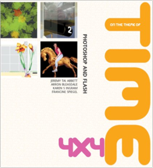
Composition for Portraiture: Creating Compelling Headshots, Group Shots, and Senior Pictures
Dan AblanThe Joy of Work: Dilbert's Guide to Finding Happiness at the Expense of Your Co-workers
Scott Adams0887308716"I cried because I did not have an office with a door, until I met a man who had no cubicle."Dilbert
A message from Scott Adams:
I think the next wave of office design will focus on eliminating the only remaining obstacle to office productivity: your happiness. Happiness isn't a physical thing, like walls and doors. But it's closely related. Managers know that if they can eliminate all traces of happiness, the employees won't be so picky about their physical surroundings. Once you're hopelessly unhappy, you won't bother to complain if your boss rolls you up in a tight ball and crams you into a cardboard box.
As soon as I noticed this disturbing threat to workplace happiness, I did some investigative work and discovered it wasn't confined to the issue of office design. Companies were making a direct frontal assault on employee happiness in every possible way! I knew there was only one thing that could stop the horror.
It was time for another Dilbert book.
It might sound corny, but I felt an obligation to society. People told me it was time for me to "give something back to the community." This scared me, until I realized that no one knows I furnished my house with street signs and park benches. So I interpreted the "give something back to the community" message as a plea for me to write this book and then charge the community to read it.
In the first part of this book I will tell you how to find happiness at the expense of your co-workers, managers, customers, andbest of allthose lazy stockholders. The second part of the book teaches you my top-secret methods for mining humor out of ordinary situations, thus making it easier to mock the people around you. The third part of the book is made entirely of invisible pages. If the book seems heavier than it looks, that's why.
Office Prank #44: Sounds That Drive Co-workers Crazy
You can produce sounds in the office that will drive your co-workers insane. That can be very entertaining. Every co-worker is different, so you might have to experiment to find the sounds that are most annoying to your cubicle neighbor. It's worth the effort.
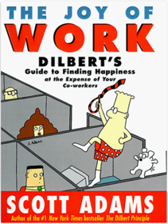
Creative 52: Weekly Projects to Invigorate Your Photography Portfolio
Lindsay Adler0321934911A powerful portfolio involves so much more than just a strong grasp of the technical aspects of photography–it’s a complex mix of style, techniques, and intriguing ideas. Many photographers struggle to achieve a high-impactportfolio, feeling that they lack the creative spark to invigorate them andmove their work forward.Creative 52 is that spark–and your guide to a new and more creative portfolio in just one year! A remedy for that “average” portfolio, this collection of innovative projects will help portrait, wedding, and fashion photographers build a portfolio that draws the attention of editors and clients–leaving the competition behind. While other how-to books often use bland imagery simply to prove a technical point, and many fine art books are filled with beautiful imagery but contain minimal (if any) educational insights to help working photographers, this book blends both: inspiration and knowledge that you can use to create images that attract potential clients.
Divided into three parts–concept, technique, and post-processing–author Lindsay Adler’s 52 challenges each contain a description of the project, potential inspiration and suggestions of other artists to check out, and her own unique solution to the challenge–all to push you beyond your comfort zone to explore new ideas and approaches to your work. Includes a year’s worth of weekly projects that motivate you to experiment with new concepts, techniques, and software tools like Adobe Photoshop to achieve more eye-catching imagesOffers the cure for “expected” imagery, showing how to produce memorable photographs that are distinct from the competition, enabling you to reach new clientsEmpowers you with the encouragement and expertise necessary to create spectacular images
Shooting in Sh*tty Light: The Top Ten Worst Photography Lighting Situations and How to Conquer Them
Lindsay Adler, Erik Valind0321862694Sometimes photographers have to shoot in less than ideal lighting situations. Maybe the wedding is mid-day in the middle of a field, or perhaps the event is in a florescent-lit room. These scenarios can be particularly intimidating for beginning photographers who don't know how to handle the many undesirable lighting situations they may encounter.In Shooting in Sh*tty Light, professional photographers Lindsay Adler and Erik Valind cover the top ten worst lighting situations and provide a variety of solutions for each. They explain which solutions are most practical and why one option might be preferable over another, examining such problems as extremely low lighting when no flash is allowed, strong backlight, and the light on an overcast day.
Unlike other books that focus on natural light or lighting in general, this book addresses a very real need of beginning photographers, answering the question, “What do I do when the lighting is terrible?” Lindsay and Erik candidly show you the tools at your disposal, demonstrating the techniques essential to getting the job done with minimal fuss.
Shows how to deal with ten of the worst lighting situations, such as harsh midday light, extremely low light, and mixed light.Offers real-life examples and practical solutions for handling poor light, such as identifying natural reflectors, bouncing light off a wall, or utilizing flash gels. Features a fun, conversational style to help you conquer the fear of poor lighting and approach any lighting situation with confidence!
How to Read a Book: The Classic Guide to Intelligent Reading
Mortimer J. Adler, Charles Van Doren0671212095How to Read a Book, originally published in 1940, has become a rare phenomenon, a living classic. It is the best and most successful guide to reading comprehension for the general reader. And now it has been completely rewritten and updated.You are told about the various levels of reading and how to achieve them — from elementary reading, through systematic skimming and inspectional reading, to speed reading, you learn how to pigeonhole a book, X-ray it, extract the author's message, criticize. You are taught the different reading techniques for reading practical books, imaginative literature, plays, poetry, history, science and mathematics, philosophy and social science.
Finally, the authors offer a recommended reading list and supply reading tests whereby you can measure your own progress in reading skills, comprehension and speed.
C# 3.0 in a Nutshell: A Desktop Quick Reference
Joseph Albahari, Ben Albahari0596527578This is a concise yet thorough reference to C# 3.0 programming as implemented in Microsoft's Visual Studio 2008. C# 3.0 in a Nutshell gets right to the point, covering the essentials of language syntax and usage as well as the parts of the .NET base class libraries you need to build working applications. But unlike earlier editions, this book is now organized entirely around concepts and use cases, providing greater depth and readability.C# 3.0 introduces the most significant enhancements yet to the programming language, and C# 3.0 in a Nutshell delves deep into the subject while assuming minimal prior knowledge of C#-making it accessible to anyone with a reasonable background in programming. In addition to the language, the book covers the .NET CLR and the core Framework assemblies, along with the unified querying syntax called Language Integrated Query (LINQ), which bridges the traditional divide between programs and their data sources.
Free of clutter and long introductions, this book provides a map of C# 3.0 knowledge in a succinct and unified style: Opening chapters concentrate purely on C#, starting with the basics of syntax, types and variables, and finishing with advanced topics such as unsafe code and preprocessor directives
Later chapters cover the core .NET 3.5 Framework, including such topics as LINQ, XML, collections, I/O and networking, memory management, reflection, attributes, security, threading, application domains and native interoperability
Designed as a handbook for daily use, C# 3.0 in a Nutshell is an ideal companion to any of the vast array of books that focus on an applied technology such as WPF, ASP.NET, or WCF. The areas of the language and .NET Framework that such books omit, this one covers in detail.
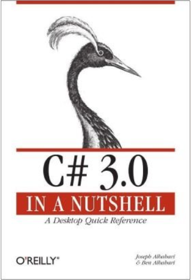
Professional Java Server Programming J2EE Edition
Subrahmanyam Allamaraju, Andrew Longshaw, Daniel O'Connor, Gordon Van Huizen, Jason Diamond, John Griffin, Mac Holden, Marcus Daley, Mark Wilcox, Richard Browett1861004656Rather than a simple update of the existing Professional Java Server Programming book, the J2EE edition represents an evolution of the content to reflect the changing state of server-side Java development. Whereas the first edition can be seen as an introduction to Java on the server, the new edition is a more tightly integrated vision of how to combine the Java technologies to develop n-tier applications in Java based primarily around J2EE. Since the release of the first edition in the fall of '99, probably the single most significant change in the Java server-side landscape has been the release of the Java 2 Platform, Enterprise Edition (J2EE). Although we covered many of the elements of J2EE in the first edition of the book, many things have changed.J2EE represents a serious attempt by Sun to make Java not just a viable language, but more importantly a viable platform for enterprise development. This book is about how to use Java for enterprise development, using the J2EE runtime architecture.
Wide range of technologies including: J2EE, RMI, JDBC, JNDI, LDAP, XML, XSLT, Servlets, JSP, EJB, JMS, JavaMail, CORBA, Performance, Scalability, Unit Testing, and Debugging
Benefits and limits of the typical real-world vendor implementations of the J2EE specification
The resulting practical aspects of real-word design using the J2EE technologies
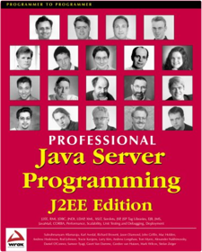
The Elements of UML(TM) 2.0 Style
Scott W. Ambler0521616786For all developers who create models using the Unified Modeling Language (UML) 2.x The Elements of UML(TM) 2.0 Style sets the rules for style that will improve your productivity - especially in teams, where understandability and consistency are critical. Coming from renowned UML expert Scott Ambler, the book furnishes a set of rules for modelling in the UML and describes a collection of standards and guidelines for creating effective UML diagrams that will be concise and easy to understand. It provides conventions for: Class diagrams; Timing Diagrams; Use case diagrams; Composite Structure Diagrams; Sequence diagrams; Interaction Overview Diagrams; Activity diagrams; Object diagrams; State machine diagrams; Package diagrams; Communication diagrams; Deployment diagrams and Component diagrams. The Elements of UML(TM) 2.0 Style sets the rules for style that will improve your productivity.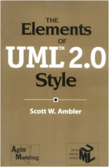
Aperture 3: Portable Genius
Josh Anon, Ellen Anon047038672XCompact, fluff-free, full-color guide to getting the most out of Apple’s Aperture digital photography softwareThis handy Portable Genius guide is designed to help you avoid hassle, save time, and quickly learn what you need to know to use Apple’s Aperture digital photography software effectively—and have fun while you’re doing it! In a trim size that fits in your laptop bag, this practical guide gives you tips, tricks, and savvy advice on everything from navigating Aperture’s user interface to advanced RAW image processing, publishing albums on the Web, and how to create your own photo book. Provides tips and techniques for the new or most useful features of Apple's Aperture 3 digital photography and digital manipulation programIncludes savvy advice and plenty of no-nonsense content in a hip way that is easy to accessCovers key tools and topics, including keyboard shortcuts, how to streamline workflows, advanced RAW image processing, and moreFeatures Genius icons throughout the book—smart or innovative ways to handle tasks and save yourself time
Learn Aperture in a fun way and get even more out of your Apple digital lifestyle with Aperture 3 Portable Genius.
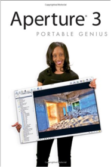
A Semantic Web Primer
Grigoris Antoniou, Frank van Harmelen0262012103The development of the Semantic Web, with machine-readable content, has the potential to revolutionize the World Wide Web and its use. A Semantic Web Primer provides an introduction and guide to this emerging field, describing its key ideas, languages, and technologies. Suitable for use as a textbook or for self-study by professionals, it concentrates on undergraduate-level fundamental concepts and techniques that will enable readers to proceed with building applications on their own. It includes exercises, project descriptions, and annotated references to relevant online materials. A Semantic Web Primer is the only available book on the Semantic Web to include a systematic treatment of the different languages (XML, RDF, OWL, and rules) and technologies (explicit metadata, ontologies, and logic and inference) that are central to Semantic Web development. The book also examines such crucial related topics as ontology engineering and application scenarios.After an introductory chapter, topics covered in succeeding chapters include XML and related technologies that support semantic interoperability; RDF and RDF Schema, the standard data model for machine-processable semantics; and OWL, the W3C-approved standard for a Web ontology language more extensive than RDF Schema; rules, both monotonic and nonmonotonic, in the framework of the Semantic Web; selected application domains and how the Semantic Web would benefit them; the development of ontology-based systems; and current debates on key issues and predictions for the future.Speedliter's Handbook: Learning to Craft Light with Canon Speedlites
Syl Arena032171105XGetting your Canon Speedlite to produce the light you need can be a real challenge. For those new to flash photography—or for anyone who has previously given up out of frustration—Speedliter’s Handbook is a revelation. Photographer Syl Arena takes you on a journey that begins with an exploration of light and color, moves through a comprehensive discussion of the Canon Speedlite family and all of the accessories and equipment available to the Speedliter, then settles down to crafting great light in one photo shoot after another. Whether you want to create a classical portrait, shoot an event, or simply add a little fill light to a product shot, Speedliter’s Handbook shows you how.A fantastic in-depth resource illustrated with over 500 images, Speedliter’s Handbook covers:
how to see the various characteristics and properties of light itself, as well as the differences between how your camera sees versus how you seeall the buttons and dials of the entire Canon Speedlite familythe basics of on-camera flash…and the necessity of getting your flash off the camerahow to beautifully balance flash with the existing ambient lightall the equipment necessary for great Speedlite shotshow to get amazing shots with just one Speedlitehow and when to use E-TTL versus manual flashthe use of color gels to balance color, as well as create dramatic effectshow to tame the sun—or any really bright light—with hi-speed syncand much, much moreWhether you’re shooting portraits, events, or sports, Speedliter’s Handbook is an essential resource that teaches you how to craft the light you need for any type of shot you want.
Photography Q&A: Real Questions. Real Answers.
Zack Arias0321929500For years, editorial and commercial photographer Zack Arias has been a respected and trusted voice in the photography industry. Known for his photography, his teaching, and his ability to connect with photographers, Zack has long had an “open door” approach to discussing his career–the ups and the downs–and in so doing has provided a straightforward and candid look inside the industry. By consistently showing great work and offering helpful advice, he has built a large, loyal readership that looks to him for guidance in navigating the currents of a difficult and dynamic industry. Now, Zack finds yet another way to cut through the noise and offer truly valuable information to those struggling to make their way through the twists and turns of an ever-changing landscape.In Photography Q&A, Zack answers over 100 questions that he fielded directly from the public. These are questions that range across all aspects of the photo industry: gear, marketing, street photography, vision, pricing, branding, light, models, work/life balance, technical advice, and much more. From how to “put yourself out there” and start to get jobs, to how to get paid for those jobs when the client is slow to cut the check–and everything in between– Photography Q&A answers many of the pressing questions that photographers are asking, but until now have not been addressed. The book also includes intermittent “Visual Intermission” sections–where Zack discusses individual images that were milestones in his development as a photographer–as well as worksheets on topics such as pricing and costs that help photographers to “know their numbers.”
With all this material, and with insightful, honest answers that come straight from Zack’s experience as a photographer who has seen it all (or at least a lot of it), Photography Q&A is an essential resource for any photographer looking for the real answers to the real questions in the industry today.
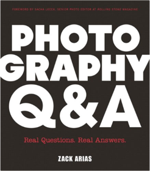
Earth from Above
Yann Arthus-Bertrand0810934957Three years ago Yann Arthus-Bertrand's Earth From Above-the result of a five-year airborne odyssey across five continents-was published around the world to critical and popular acclaim. Now, Arthus-Bertrand's monumental achievement is available in a revised and expanded edition: Here are all the astonishing original photographs together with 17 new images and authoritative new texts by world-renowned environmentalist Lester Brown and other well-known ecologists-all at the new low price of $45.00!Arthus-Bertrand's remarkable aerial photographs offer the most revealing and spectacular portrait of our world ever created. Produced under the sponsorship of UNESCO, the book is also a unique documentary record of the state of the world's fragile environment.
Developing Java Enterprise Applications
Stephen Asbury, Scott R. Weiner0471327565Learn how to build sophisticated enterprise applications using the JavaTM Enterprise APIs. Stephen Asbury and Scott Weiner—two of Sun's favorite Java programming trainers—provide easy-to-digest instruction for the major Java Enterprise APIs and their associated programming tools and products. They describe proven techniques for combining these APIs to create powerful enterprise applications and discuss the role middleware products play in the enterprise development process. You'll learn how to: * Program with Java Enterprise APIs like RMI, Servlets, JDBC, JNDI, JTS, and others. * Build N-Tier, transaction applications with Enterprise JavaBeans. Create messaging applications with Java Messaging Service (JMS). * Build a servlet search engine for your Web site. * Create an online store with JavaServer Pages (JSP). The CD-ROM supplies you with: * Over 75 example Java applications, servlets, and Enterprise JavaBeans. * Two comprehensive examples including MiniJMS, a simple JMS provider. * Java 2 and Java Servlet Development Kit version 2.0 from Sun Microsystems. * BEA WebLogic application server version 3.1. * JBMS evaluation version 1.5 from Cloudscape. STEPHEN ASBURY and SCOTT R. WEINER are cofounders of Paradigm Research, Inc., a training company that specializes in object-oriented programming with Java, JavaScript, and other Web technologies.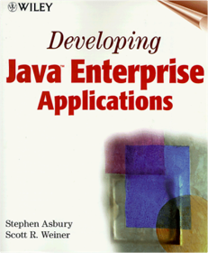
How to Form a Nonprofit Corporation
Anthony Mancuso Attorney1413306470Create a nonprofit in your state without a lawyer!The process of becoming a tax-exempt organization may appear intimidating, but with How to Form a Nonprofit Corporation, you can do it quickly, easily and with confidence.
This bestselling book includes complete instructions for obtaining federal 501(c)(3) tax exemption and for qualifying for public charity status with the IRS. It will help you:
complete an IRS tax-exemption application
prepare articles of incorporation
write the bylaws of your nonprofit
fill in minutes of the organizational meeting
understand your state's specific nonprofit requirements
The 8th edition is completely updated to provide the latest federal and state rules. It also provides the latest forms you need, including the new IRS Form 1023, Application for Recognition of Exemption Under Section 501(3)(c).
What are you waiting for? Incorporate your nonprofit without a lawyer and save the money for your worthy cause!
Visual Studio Hacks: Tips & Tools for Turbocharging the IDE
James Avery0596008473With start-up templates for projects ranging from Windows applications to web services, and extensive help and on-line documentation, Visual Studio .NET might be mistaken for a tool for unsophisticated users. It's true that most developers soon discover that the basic operation of Visual Studio is fairly self-explanatory; less obvious are some of the suite's more advanced built-in features.Visual Studio .Net includes a wealth of little-used capabilities, is very customizable, has a complete automation model, and much more. On top of its regular feature set, there are hosts of free add-ins, macros, and power toys that can further enhance the functionality of Visual Studio. This book is all about exploring these things, and in doing so, becoming a better and more efficient developer. Developers will learn how to: Get the most out of projects and solutions, including getting down and dirty with the undocumented format of project and solution filesUse these editor features to the fullest, and add additional functionality to the editor through the use of third-party add-insLearn smarter ways to navigate the application and your own source codeCustomize shortcut keys, toolbars, menus, the toolbox, and much moreUse the debugger successfully not only on your source code, but with T-SQL and scripting languages as wellAutomatically generate codeLearn how the server can be used to interface with databases, services, and performance counters, as well as WMIUse and create Visual Studio add-ins to extend its functionalityOffering valuable tips, tools, and tricks, Visual Studio Hacks takes you far beyond the suite's usual capabilities. You can read this book from cover to cover or, because each hack stands its own, you can feel free to browse and jump to the different sections that interest you most. If there's a prerequisite you need to know about, a cross-reference will guide you to the right hack.
If you want to experience the full spectrum of Visual Studio's functionality and flexibility, you'll find the perfect guide for exploration in Visual Studio Hacks. Once the final page is turned, you can confidently say that you've been exposed to everything that Visual Studio .NET is capable of doing.
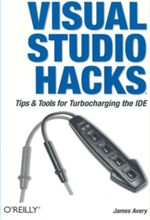
Flash MX Application & Interface Design
Peter Aylward, Ken Jokol, Jamie MacDonald, Paul Prudence, Glen Rhodes, Robbie Shepherd1904344070This book takes an in-depth look at purposing your Flash skills towards developing fully functional Flash Applications. Taking its lead from the design element, each chapter takes you a step further into evolving your design skills into application development.It will look at:
- Focusing your interface design for ease of use
- Shaping up the back end to keep things simple
- Delivering complex content, including video
Using a blend of instructional and inspirational chapters, this book looks at Flash’s strengths – graphical dynamism, interactivity, back-end punch and multimedia delivery.
- Make gorgeous sites in tiny files with the Drawing API
- Look at the marriage of data and beauty with a Flash Family Tree
- Create real-feel interfaces that mimic different media
- Make XML do the donkey-work in site structure
- Ease up you navigation with PHP
- Create an entire drawing application
- Deliver video and make it interactive with Flash
...and so much more!
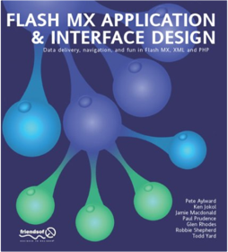
Build Awesome Command-Line Applications in Ruby: Control Your Computer, Simplify Your Life
David Copeland B.1934356913Speak directly to your system. With its simple commands, flags, and parameters, a well-formed command-line application is the quickest way to automate a backup, a build, or a deployment and simplify your life.As Ruby pro David Copeland explains, writing a command-line application that is self-documenting, robust, adaptable and forever useful is easier than you might think. Ruby is particularly suited to this task, since it combines high-level abstractions with "close to the metal" system interaction wrapped up in a concise, readable syntax. Moreover, Ruby has the support of a rich ecosystem of open-source tools and libraries.
Ten insightful chapters each explain and demonstrate a command-line best practice. You'll see how to use these tools to elevate the lowliest automation script to a maintainable, polished application.
You'll learn how to use free, open source parsers to create user-friendly command-line interfaces as well as command suites. You'll see how to use defaults to keep options simple for everyday users, while giving advanced users options for more complex tasks.
There's no reason a command-line application should lack documentation, whether it's part of a help command or a man page; you'll find out when and how to use both. Your journey from command-line novice to pro ends with a look at valuable approaches to testing your apps, and includes some fun techniques for outside-the-box, colorful interfaces that will delight your users.
With Ruby, the command line is not dead. Long live the command line.
What You Need:
All you'll need is Ruby, and the ability to install a few gems along the way. Examples written for Ruby 1.9.2, but 1.8.7 should work just as well.
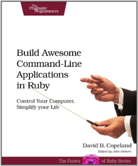
Sharp Shooter
Martin BaileyBioinformatics: The Machine Learning Approach, Second Edition
Pierre Baldi, Søren Brunak026202506XAn unprecedented wealth of data is being generated by genome sequencing projects and other experimental efforts to determine the structure and function of biological molecules. The demands and opportunities for interpreting these data are expanding rapidly. Bioinformatics is the development and application of computer methods for management, analysis, interpretation, and prediction, as well as for the design of experiments. Machine learning approaches (e.g., neural networks, hidden Markov models, and belief networks) are ideally suited for areas where there is a lot of data but little theory, which is the situation in molecular biology. The goal in machine learning is to extract useful information from a body of data by building good probabilistic models — and to automate the process as much as possible.In this book Pierre Baldi and Søren Brunak present the key machine learning approaches and apply them to the computational problems encountered in the analysis of biological data. The book is aimed both at biologists and biochemists who need to understand new data-driven algorithms and at those with a primary background in physics, mathematics, statistics, or computer science who need to know more about applications in molecular biology.
This new second edition contains expanded coverage of probabilistic graphical models and of the applications of neural networks, as well as a new chapter on microarrays and gene expression. The entire text has been extensively revised.
From Still to Motion: A photographer's guide to creating video with your DSLR
James Ball, Robbie Carman, Matt Gottshalk, Richard Harrington0321702115Book and accompanying DVD with over six hours of video training—all geared to teach you everything about shooting video with your DSLRWith the arrival of high-definition video-enabled DSLR cameras, photographers are faced with an opportunity for creativity and a competitive edge in their field unlike anything they’ve experienced before. Add to that the expanding demands from a video-hungry audience and it’s no longer a matter of if you are going to add video to your repertoire of skills, it’s when.
Here to guide you in a thorough exploration of the video-making process — from preproduction to post — and to ease your transition from still to motion are four veterans who speak the language of both photography and video fluently. With their clear, instructive approach, they quickly get you up to speed on everything from picking your gear, to properly lighting for motion, to using professional-level audio, color correction, and editing techniques, to media management and outputting, and much more. Here are just a few highlights from this richly illustrated, completely interactive book and DVD:
Explores the entire spectrum of video for DSLR camera owners, with recommendations on gear, planning, lighting, lenses, audio, editing, color correcting, exporting, media management, and more.Covers a wide variety of shooting styles, including indoor, outdoor, studio, portrait, event, and available light.Addresses technical challenges associated with DSLR video, such as camera movement, multiple camera coverage, low-light videography, and synchronized sound.Explores additional creative techniques such as stop motion and timelapse photography in depth.Includes a real-world example of a music video and promo package throughout the book to demonstrate concepts in action, with additional profiles of photography experts in nature, sports, commercial, and weddings and events.The accompanying DVD contains over 6 hours of video training that delves deeper into each topic, as well as high-definition footage, hands-on project files, and templates to experiment with and follow along.
Share your work and communicate with other readers at www.facebook.com/dslrvideo.
The Pentagon's New Map: War and Peace in the Twenty-First Century
Thomas P.M. Barnett0399151753A groundbreaking reexamination of U.S. and global security, certain to be one of the most talked about books of the year.Since the end of the Cold War, America's national security establishment has been searching for a new operating theory to explain how this seemingly "chaotic" world actually works. Gone is the clash of blocs, but replaced by what?
Thomas Barnett has the answers. A senior military analyst with the U.S. Naval War College, he has given a constant stream of briefings over the past few years, and particularly since 9/11, to the highest of high-level civilian and military policymakers-and now he gives it to you. The Pentagon's New Map is a cutting-edge approach to globalization that combines security, economic, political, and cultural factors to do no less than predict and explain the nature of war and peace in the twenty-first century.
Building on the works of Friedman, Huntington, and Fukuyama, and then taking a leap beyond, Barnett crystallizes recent American military history and strategy, sets the parameters for where our forces will likely be headed in the future, outlines the unique role that America can and will play in establishing international stability-and provides much-needed hope at a crucial yet uncertain time in world history.
For anyone seeking to understand the Iraqs, Afghanistans, and Liberias of the present and future, the intimate new links between foreign policy and national security, and the operational realities of the world as it exists today, The Pentagon's New Map is a template, a Rosetta stone. Agree with it, disagree with it, argue with it-there is no book more essential for 2004 and beyond.
Head First Servlets and JSP: Passing the Sun Certified Web Component Developer Exam
Bryan Basham, Kathy Sierra, Bert Bates0596005407Imagine a world without eBay...unthinkable! How would you get that Farrah Fawcett poster, retired Beanie Baby, or first-edition pet rock? Handling over a gazillion (OK, we exaggerate—it's actually only 1 billion) page views each day, server-side Java makes eBay work.Isn't it time you learned the latest (J2EE 1.4) versions of Servlets & JSPs? This book will get you way up to speed on the technology you'll know it so well, in fact, that you can pass the Sun Certified Web Component Developer (SCWCD) 1.4 exam. If that's what you want to do, that is. Maybe you don't care about the exam, but need to use Servlets & JSPs in your next project. You're working on a deadline. You're over the legal limit for caffeine. You can't waste your time with a book that makes sense only AFTER you're an expert (or worse one that puts you to sleep).
No problem. Head First Servlets and JSP's brain-friendly approach drives the knowledge straight into your head (without sharp instruments). You'll interact with servlets and JSPs in ways that help you learn quickly and deeply. It may not be The Da Vinci Code, but quickly see why so many reviewers call it "a page turner". Most importantly, this book will help you use what you learn. It won't get you through the exam only to have you forget everything the next day.
Learn to write servlets and JSPs, what makes the Container tick (and what ticks it off), how to use the new JSP Expression Language (EL), what you should NOT write in a JSP, how to write deployment descriptors, secure applications, and even use some server-side design patterns. Can't talk about Struts at a cocktail party? That'll change. You won't just pass the exam, you will truly understand this stuff, and you'll be able to put it to work right away.
This new exam is tough—much tougher than the previous version of the SCWCD. The authors of Head First Servlets and JSP know: they created it. (Not that it EVER occurred to them that if they made the exam really hard you'd have to buy a study guide to pass it.) The least they could do is give you a stimulating, fun way to pass the thing. If you're one of the thousands who used Head First EJB to pass the SCWCD exam, you know what to expect!
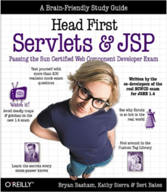
Plug In with Nik: A Photographer's Guide to Creating Dynamic Images with Nik Software
John BatdorffB00AVW2HWGExtend your photographic vision and harness the full power of Nik's Plug-In Suite (now re-branded as the Nik Collection by Google) with this beautifully illustrated guide that covers the full plug-in suite: Dfine 2.0, Viveza 2, HDR Efex Pro 2, Color Efex Pro 4 Complete Edition, Silver Efex Pro 2, and Sharpener Pro 3.0. Pro photographer John Batdorff provides easy-to-follow instructions for processing and enhancing your landscapes, portraits, and streetscapes with Nik from start to finish.Nik Collection by Google offers precise and natural enhancements without complicated selections or masks. John includes the benefits of each plug-in and how to incorporate each one in your workflow, whether you use Adobe Photoshop, Lightroom, or Aperture, to create more dynamic photographs.
In this guide you will learn to: recognize and reduce digital noise using Dfine; fine-tune your color images using Global and Selective adjustments in Viveza; combine existing presets; understand key adjustments for creating HDR images; and create your own presets in Silver Efex Pro, HDR Efex Pro, and Color Efex Pro.
Street Photography: A Guide to Finding and Capturing Authentic Portraits and Streetscapes
John BatdorffMindful Eating: A Guide to Rediscovering a Healthy and Joyful Relationship with Food—includes CD
Jan Chozen Bays1590305310The art of mindfulness can transform our struggles with food—and renew our sense of pleasure, appreciation, and satisfaction with eating. Drawing on recent research and integrating her experiences as a physician and meditation teacher, Dr. Jan Bays offers a wonderfully clear presentation of what mindfulness is and how it can help with food issues.Mindful eating is an approach that involves bringing one's full attention to the process of eating—to all the tastes, smells, thoughts, and feelings that arise during a meal. Whether you are overweight, suffer from an eating disorder, or just want to get more out of life, this book offers a simple tool that can make a remarkable difference.
In this book, you'll learn how to:
• Tune into your body's own wisdom about what, when, and how much to eat
• Eat less while feeling fully satisfied
• Identify your habits and patterns with food
• Develop a more compassionate attitude toward your struggles with eating
• Discover what you're really hungry for
Mindful Eating also includes a 75-minute audio CD containing guided exercises led by the author.
Extreme Programming Explained: Embrace Change, 2nd Edition
Kent Beck, Cynthia Andres0321278658“In this second edition of Extreme Programming Explained, Kent Beck organizes and presents five years’ worth of experiences, growth, and change revolving around XP. If you are seriously interested in understanding how you and your team can start down the path of improvement with XP, you must read this book.”—Francesco Cirillo, Chief Executive Officer, XPLabs S.R.L. “The first edition of this book told us what XP was—it changed the way many of us think about software development. This second edition takes it farther and gives us a lot more of the ‘why’ of XP, the motivations and the principles behind the practices. This is great stuff. Armed with the ‘what’ and the ‘why,’ we can now all set out to confidently work on the ‘how’: how to run our projects better, and how to get agile techniques adopted in our organizations.”
—Dave Thomas, The Pragmatic Programmers LLC “This book is dynamite! It was revolutionary when it first appeared a few years ago, and this new edition is equally profound. For those who insist on cookbook checklists, there’s an excellent chapter on ‘primary practices,’ but I urge you to begin by truly contemplating the meaning of the opening sentence in the first chapter of Kent Beck’s book: ‘XP is about social change.’ You should do whatever it takes to ensure that every IT professional and every IT manager—all the way up to the CIO—has a copy of Extreme Programming Explained on his or her desk.”
—Ed Yourdon, author and consultant “XP is a powerful set of concepts for simplifying the process of software design, development, and testing. It is about minimalism and incrementalism, which are especially useful principles when tackling complex problems that require a balance of creativity and discipline.”
—Michael A. Cusumano, Professor, MIT Sloan School of Management, and author of The Business of Software “Extreme Programming Explained is the work of a talented and passionate craftsman. Kent Beck has brought together a compelling collection of ideas about programming and management that deserves your full attention. My only beef is that our profession has gotten to a point where such common-sense ideas are labeled ‘extreme.’...”
—Lou Mazzucchelli, Fellow, Cutter Business Technology Council “If your organization is ready for a change in the way it develops software, there’s the slow incremental approach, fixing things one by one, or the fast track, jumping feet first into Extreme Programming. Do not be frightened by the name, it is not that extreme at all. It is mostly good old recipes and common sense, nicely integrated together, getting rid of all the fat that has accumulated over the years.”
—Philippe Kruchten, UBC, Vancouver, British Columbia “Sometimes revolutionaries get left behind as the movement they started takes on a life of its own. In this book, Kent Beck shows that he remains ahead of the curve, leading XP to its next level. Incorporating five years of feedback, this book takes a fresh look at what it takes to develop better software in less time and for less money. There are no silver bullets here, just a set of practical principles that, when used wisely, can lead to dramatic improvements in software development productivity.”
—Mary Poppendieck, author of Lean Software Development: An Agile Toolkit “Kent Beck has revised his classic book based on five more years of applying and teaching XP. He shows how the path to XP is both easy and hard: It can be started with fewer practices, and yet it challenges teams to go farther than ever.”
—William Wake, independent consultant “With new insights, wisdom from experience, and clearer explanations of the art of Extreme Programming, this edition of Beck’s classic will help many realize the dream of outstanding software development.”
—Joshua Kerievsky, author of Refactoring to Patterns and Founder, Industrial Logic, Inc. “XP has changed the way our industry thinks about software development. Its brilliant simplicity, focused execution, and insistence on fact-based planning over speculation have set a new standard for software delivery.”
—David Trowbridge, Architect, Microsoft Corporation
Accountability. Transparency. Responsibility. These are not words that are often applied to software development.
In this completely revised introduction to Extreme Programming (XP), Kent Beck describes how to improve your software development by integrating these highly desirable concepts into your daily development process.
The first edition of Extreme Programming Explained is a classic. It won awards for its then-radical ideas for improving small-team development, such as having developers write automated tests for their own code and having the whole team plan weekly. Much has changed in five years. This completely rewritten second edition expands the scope of XP to teams of any size by suggesting a program of continuous improvement based on: Five core values consistent with excellence in software developmentEleven principles for putting those values into actionThirteen primary and eleven corollary practices to help you push development past its current business and technical limitations
Whether you have a small team that is already closely aligned with your customers or a large team in a gigantic or multinational organization, you will find in these pages a wealth of ideas to challenge, inspire, and encourage you and your team members to substantially improve your software development.
You will discover how to: Involve the whole team—XP styleIncrease technical collaboration through pair programming and continuous integrationReduce defects through developer testingAlign business and technical decisions through weekly and quarterly planningImprove teamwork by setting up an informative, shared workspace
You will also find many other concrete ideas for improvement, all based on a philosophy that emphasizes simultaneously increasing the humanity and effectiveness of software development.
Every team can improve. Every team can begin improving today. Improvement is possible—beyond what we can currently imagine. Extreme Programming Explained, Second Edition, offers ideas to fuel your improvement for years to come.
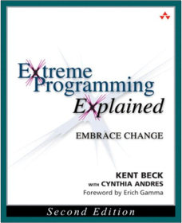
Test Driven Development: By Example
Kent Beck0321146530Quite simply, test-driven development is meant to eliminate fear in application development. While some fear is healthy (often viewed as a conscience that tells programmers to "be careful!"), the author believes that byproducts of fear include tentative, grumpy, and uncommunicative programmers who are unable to absorb constructive criticism. When programming teams buy into TDD, they immediately see positive results. They eliminate the fear involved in their jobs, and are better equipped to tackle the difficult challenges that face them. TDD eliminates tentative traits, it teaches programmers to communicate, and it encourages team members to seek out criticism However, even the author admits that grumpiness must be worked out individually! In short, the premise behind TDD is that code should be continually tested and refactored. Kent Beck teaches programmers by example, so they can painlessly and dramatically increase the quality of their work.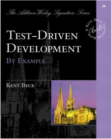
Head First SQL: Your Brain on SQL — A Learner's Guide
Lynn Beighley0596526849What do Ford Financial, IBM, and Victoria's Secret have in common? Enterprise JavaBeans (EJB). As the industry standard for platform-independent reusable business components, EJB has just become Sun Microsystem's latest developer certification. Whether you want to be certifiable or just want to learn the technology inside and out, Head First EJB will get you there in the least painful way. And with the greatest understanding. You'll learn not just what the technology is, but more importantly, why it is, and what it is and isn't good for. You'll learn tricks and tips for EJB development, along with tricks and tips for passing this latest, very challenging Sun Certified Business Component Developer (SCBCD) exam. You'll learn how to think like a server. You'll learn how to think like a bean. And because this is a Head First book, you'll learn how to think about thinking. Co-author Kathy Sierra was one of Sun's first employees to teach brave, early adopter customers how to use EJB. She has the scars. But besides dragging you deep into EJB technology, Kathy and Bert will see you through your certification exam, if you decide to go for it. And nobody knows the certification like they do - they're co-developers of Sun's actual exam! As the second book in the Head First series, Head First EJB follows up the number one best-selling Java book in the US, Head First Java. Find out why reviewers are calling it a revolution in learning tough technical topics, and why Sun Chairman and CEO Scott McNealy says, "Java technology is everywhere . . . if you develop software and haven't learned Java, it's definitely time to dive in "Head First." And with Head First book, you don't even have to feel guilty about having fun while you're learning; it's all part of the learning theory. If the latest research in cognitive science, education, and neurobiology suggested that boring, dry, and excruciatingly painful was the best way to learn, w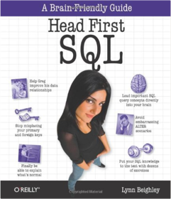
ASP.NET Website Programming: Problem - Design - Solution, C# Edition
Marco Bellinaso, Kevin Hoffman0764543776ASP.NET Website Programming shows you how to build an interactive website from design to deployment. Packed with solutions to website programming problems, this book will have you building well-engineered, extendable ASP.NET websites quickly and easily.What you need to know
This book is for developers who: Use ASP.NET and C#Use Visual Studio(r) .NET Professional or above, or Visual C#(r) .NET StandardWant to build content-based websites
What you will learn from this book
With ASP.NET Website Programming you will learn to: Provide flexible user accounts integrating with ASP.NET's built-in securityCreate fully featured discussion forumsGenerate revenue from advertisingBuild a web interface for managing the files on your siteAdd opinion polls, email newsletters, and news managementDeploy the finished site on a live serverBuild modular websites using good, n-tier coding techniques
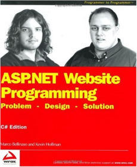
What We Keep: A Novel
Elizabeth Berg0345423291Do you ever really know your mother, your daughter, the people in your family? In this rich and rewarding new novel by the beloved bestselling author ofTalk Before Sleep and The Pull of the Moon, a reunion between two sisters and their mother reveals how the secrets and complexities of the past have shaped the lives of the women in a family.
Ginny Young is on a plane, en route to see her mother, whom she hasn't seen or spoken to for thirty-five years. She thinks back to the summer of 1958, when she and her sister, Sharla, were young girls. At that time,a series of dramatic events—beginning with the arrival of a mysterious and sensual next-door neighbor—divided the family, separating the sisters from their mother. Moving back and forth in time between the girl she once was and the woman she's become, Ginny at last confronts painful choices that occur in almost any woman's life, and learns surprising truths about the people she thought she knew best.
Emotional honesty and a true understanding of people and relationships are combined in this moving and deeply satisfying new book by the novelist who
"writes with humor and a big heart about resilience, love and hope. And the transcendence that redeems" (Andre Dubus).
From the Hardcover edition.
Computational Geometry: Algorithms and Applications, Second Edition
Mark de Berg, M. van Krefeld, M. Overmars, O. Schwarzkopf3540656200This well-accepted introduction to computational geometry is a textbook for high-level undergraduate and low-level graduate courses. The focus is on algorithms and hence the book is well suited for students in computer science and engineering. Motivation is provided from the application areas: all solutions and techniques from computational geometry are related to particular applications in robotics, graphics, CAD/CAM, and geographic information systems. For students this motivation will be especially welcome. Modern insights in computational geometry are used to provide solutions that are both efficient and easy to understand and implement. All the basic techniques and topics from computational geometry, as well as several more advanced topics, are covered. The book is largely self-contained and can be used for self-study by anyone with a basic background in algorithms. In the second edition, besides revisions to the first edition, a number of new exercises have been added.Principles of Transaction Processing for the Systems Professional
Philip A. Bernstein, Eric Newcomer1558604154Principles of Transaction Processing is a clear, concise guide for anyone involved in developing applications, evaluating products, designing systems, or engineering products. This book provides an understanding of the internals of transaction processing systems, describing how they work and how best to use them.It includes the architecture of transaction processing monitors, transactional communications paradigms, and mechanisms for recovering from transaction and system failures.
Use of transaction processing systems in business, industry, and government is increasing rapidly; the emergence of electronic commerce on the Internet is creating new demands. As a result, many developers are encountering transaction processing applications for the first time and need a practical explanation of techniques. Software engineers who build and market operating systems, communications systems, programming tools, and other products used in transaction processing applications will also benefit from this thorough presentation of principles. Rich with examples, it describes commercial transaction processing systems, transactional aspects of database servers, messaging systems, Internet servers, and object-oriented systems, as well as each of their subsystems.
* Easy-to-read descriptions of fundamentals.
* Real world examples illustrating key points.
* Focuses on practical issues faced by developers.
* Explains most major products and standards, including IBM's CICS, IMS, and MQSeries; X/Open's XA, STDL, and TX; BEA Systems' TUXEDO; Digital's ACMS; Transarc's Encina; AT&T/NCR's TOP END; Tandem's Pathway/TS; OMG's OTS; and Microsoft's Microsoft Transaction Server.
Semiology of Graphics: Diagrams, Networks, Maps
Jacques Bertin1589482611Originally published in French in 1967, Semiology of Graphics holds a significant place in the theory of information design. Founded on Jacques Bertin’s practical experience as a cartographer, Part One of this work is an unprecedented attempt to synthesize principles of graphic communication with the logic of standard rules applied to writing and topography. Part Two brings Bertin’s theory to life, presenting a close study of graphic techniques including shape, orientation, color, texture, volume, and size in an array of more than 1,000 maps and diagrams.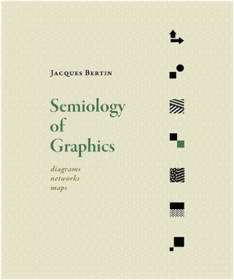
Dynamic Programming and Optimal Control
Dimitri P. Bertsekas1886529124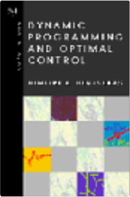
jQuery in Action, Second Edition
Bear Bibeault, Yehuda Katz1935182323A really good web development framework anticipates your needs. jQuery does more-it practically reads your mind. Developers fall in love with this JavaScript library the moment they see 20 lines of code reduced to three. jQuery is concise and readable.jQuery in Action, Second Edition is a fast-paced introduction and guide. It shows you how to traverse HTML documents, handle events, perform animations, and add Ajax to your web pages. The book's unique "lab pages" anchor the explanation of each new concept in a practical example. You'll learn how jQuery interacts with other tools and frameworks and how to build jQuery plugins.
This revised and expanded second edition includes even more lab pages than before, along with numerous examples that show the latest best practices developed by the jQuery community. It provides full coverage of jQuery 1.4, along with a deeper look at the ever-expanding world of jQuery plug-ins.
This book requires some knowledge of JavaScript and Ajax but no previous experience with jQuery.
The Well-Grounded Rubyist
David A. Black1933988657The Well-Grounded Rubyist takes you from interested novice to proficient practitioner. It's a beautifully written tutorial that begins with the basic steps to get your first Ruby program up and running and goes on to explore sophisticated topics like callable objects, reflection, and threading. Whether the topic is simple or tough, the book's easy-to-follow examples and explanations will give you immediate confidence as you build your Ruby programming skills.The Well-Grounded Rubyist is a thoroughly revised and updated edition of the best-selling Ruby for Rails. In this new book, expert author David A. Black moves beyond Rails and presents a broader view of Ruby. It covers Ruby 1.9, and keeps the same sharp focus and clear writing that made Ruby for Rails stand out.
Starting with the basics, The Well-Grounded Rubyist explains Ruby objects and their interactions from the ground up. In the middle chapters, the book turns to an examination of Ruby's built-in, core classes, showing the reader how to manipulate strings, numbers, arrays, ranges, hashes, sets, and more. Regular expressions get attention, as do file and other I/O operations.
Along the way, the reader is introduced to numerous tools included in the standard Ruby distribution—tools like the task manager Rake and the interactive Ruby console-based interpreter Irb—that facilitate Ruby development and make it an integrated and pleasant experience.
The book encompasses advanced topics, like the design of Ruby's class and module system, and the use of Ruby threads, taking even the new Rubyist deep into the language and giving every reader the foundations necessary to use, explore, and enjoy this unusually popular and versatile language.
It's no wonder one reader commented: "The technical depth is just right to not distract beginners, yet detailed enough for more advanced readers."
Purchase of the print book comes with an offer of a free PDF, ePub, and Kindle eBook from Manning. Also available is all code from the book.
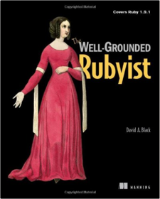
The Elements of Technical Writing
Gary Blake, Robert W. Blye0025114468Writing coherent, accessible technical reports and proposals can become easier using the practical guidelines and samples provided in a short, basic handbook from the authors of The Elements of Business Writing.Effective Java
Joshua Bloch0321356683Raves for the First Edition!“I sure wish I had this book ten years ago. Some might think that I don’t need any Java books, but I need this one.”
–James Gosling, fellow and vice president, Sun Microsystems, Inc.
“An excellent book, crammed with good advice on using the Java programming language and object-oriented programming in general.”
–Gilad Bracha, coauthor of The Java™ Language Specification, Third Edition
“10/10–anyone aspiring to write good Java code that others will appreciate reading and maintaining should be required to own a copy of this book. This is one of those rare books where the information won’t become obsolete with subsequent releases of the JDK library.”
–Peter Tran, bartender, JavaRanch.com
“The best Java book yet written.... Really great; very readable and eminently useful. I can’t say enough good things about this book. At JavaOne 2001, James Gosling said, ‘Go buy this book!’ I’m glad I did, and I couldn’t agree more.”
–Keith Edwards, senior member of research staff, Computer Science Lab at the Palo Alto Research Center (PARC), and author of Core JINI (Prentice Hall, 2000)
“This is a truly excellent book done by the guy who designed several of the better recent Java platform APIs (including the Collections API).”
–James Clark, technical lead of the XML Working Group during the creation of the XML 1.0 Recommendation, editor of the XPath and XSLT Recommendations
“Great content. Analogous to Scott Meyers’ classic Effective C++. If you know the basics of Java, this has to be your next book.”
–Gary K. Evans, OO mentor and consultant, Evanetics, Inc
“Josh Bloch gives great insight into best practices that really can only be discovered after years of study and experience.”
–Mark Mascolino, software engineer
“This is a superb book. It clearly covers many of the language/platform subtleties and trickery you need to learn to become a real Java master.”
–Victor Wiewiorowski, vice president development and code quality manager, ValueCommerce Co., Tokyo, Japan
“I like books that under-promise in their titles and over-deliver in their contents. This book has 57 items of programming advice that are well chosen. Each item reveals a clear, deep grasp of the language. Each one illustrates in simple, practical terms the limits of programming on intuition alone, or taking the most direct path to a solution without fully understanding what the language offers.”
–Michael Ernest, Inkling Research, Inc.
“I don’t find many programming books that make me want to read every page–this is one of them.”
–Matt Tucker, chief technical officer, Jive Software
“Great how-to resource for the experienced developer.”
–John Zukowski, author of numerous Java technology books
“I picked this book up two weeks ago and can safely say I learned more about the Java language in three days of reading than I did in three months of study! An excellent book and a welcome addition to my Java library.”
–Jane Griscti, I/T advisory specialist
Are you looking for a deeper understanding of the Java™ programming language so that you can write code that is clearer, more correct, more robust, and more reusable? Look no further! Effective Java™, Second Edition, brings together seventy-eight indispensable programmer’s rules of thumb: working, best-practice solutions for the programming challenges you encounter every day.
This highly anticipated new edition of the classic, Jolt Award-winning work has been thoroughly updated to cover Java SE 5 and Java SE 6 features introduced since the first edition. Bloch explores new design patterns and language idioms, showing you how to make the most of features ranging from generics to enums, annotations to autoboxing.
Each chapter in the book consists of several “items” presented in the form of a short, standalone essay that provides specific advice, insight into Java platform subtleties, and outstanding code examples. The comprehensive descriptions and explanations for each item illuminate what to do, what not to do, and why.
Highlights include: New coverage of generics, enums, annotations, autoboxing, the for-each loop, varargs, concurrency utilities, and much more Updated techniques and best practices on classic topics, including objects, classes, libraries, methods, and serialization How to avoid the traps and pitfalls of commonly misunderstood subtleties of the language Focus on the language and its most fundamental libraries: java.lang, java.util, and, to a lesser extent, java.util.concurrent and java.io
Simply put, Effective Java™, Second Edition, presents the most practical, authoritative guidelines available for writing efficient, well-designed programs.
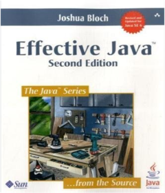
Opengl Reference Manual: The Official Reference Document for Opengl, Release 1
OpenGL Architecture Review Board0201632764The reference comprehensively documents each group of functions in OpenGL Release 1. It is essential for every programmer working with the OpenGL standard.Instant Ember.js Application Development How-to
Marc Bodmer1782163387Your first step in creating amazing web applicationsOverviewLearn something new in an Instant! A short, fast, focused guide delivering immediate results.Create semantic HTML templates using Handlebars.Lay the foundation for large web applications using the latest version of Ember.js in an easy to follow format.Follow clear and concise examples to build up a fully working application.
In Detail
Ember.js is a frontend web development framework that organizes your JavaScript into clean, reusable code. With its powerful tools and concepts at your disposal you can create large scale web applications that rival native applications.
No matter how big your application gets, Ember.js makes your code manageable.
"Instant Ember.js Application Development: How-to" is a practical guide that provides you with clear step-by-step examples. The in-depth examples take into account the key concepts and give you a solid foundation to expand your knowledge and your skills.
That will help you utilize the power of Ember.JS in your applications.
As you progress through the initial examples you will begin to develop an understanding of how Ember.js organizes your frontend development. Reading further you will see how the Model-View-Controller architecture (MVC) is incorporated into Ember.js. We'll guide you through the basics of Handlebars HTML templates, before finally diving into how routing works within an application and how the state of the application changes as the user interacts with it.
Instant Ember.js Application Development: How-to will teach you to build ambitiously large web applications with practical examples.
What you will learn from this bookDetermine where and how to incorporate Ember.js.Get to know the MVC architecture.Create an Ember model, view, and controller.Define semantic Handlebars HTML templates.Enhance Ember.js models with computed properties and bindings.Import external data into an Ember.js application.Build a router for your application.
Approach
Filled with practical, step-by-step instructions and clear explanations for the most important and useful tasks. Get the job done and learn as you go. A how-To book with practical recipes accompanied with rich screenshots for easy comprehension.This book follows a recipe-based approach that can be used both for problem solving or getting started with Ember.js. Regardless of your skill level you should find this book useful and beneficial to any of your application development projects.
Who this book is written for
Are you a frontend developer whose code has gotten out of control? This book will also show you how you can use Ember.js to make your web application easy to manage as it increases in complexity. Even if you've never used Ember.js before, but have HTML and JS skills, this guide will help you get up to speed in no time.
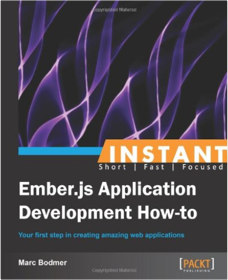
Programming as if People Mattered
Nathaniel S. Borenstein0691037639Through a set of lively anecdotes and essays, Borenstein traces the divergence between the fields of software engineering and user-central software design, and attempts to reconcile the needs of people in both camps. "A book filled with points to think about well before you start coding menus or screens."—UnixWorld.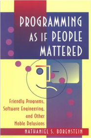
Mastering Type: The Essential Guide to Typography for Print and Web Design
Denise Bosler1440313695Good Design, Down to the LetterPackages on store shelves, posters on building walls, pages of a website—all contain information that needs to be communicated. And at the heart of that communication is type: visually interesting, interactive, expressive and captivating. Each letter must come alive; therefore, each letter must be carefully crafted or chosen. A solid foundation in typography, as well as an understanding of its nuances, will help you optimize your visual communication—in whatever form it takes.
By breaking down the study of type into a systematic progression of relationships—letter, word, sentence, paragraph, page and screen—award-winning graphic designer and professor of communication design Denise Bosler provides a unique and illuminating perspective on typography for both print and digital media and for designers of all skill levels.
Through instruction, interviews and real-world inspiration, Mastering Type explores the power of each typographic element—both as it stands alone and as it works with other elements—to create successful design, to strengthen your skill set and to inspire your next project.
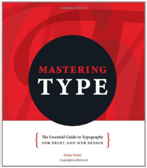
Dictionary of Theories
Jennifer Bothamley1578590450different theories of philosophyXML Applications
Frank Boumphrey1861001525XML, otherwise known as eXtensible Mark Up language is the latest buzz word on the internet. Why is this? XML is a meta language, meaning a language which describes data. Like HTML, it is a sub set of SGML (Standardized General Mark Up Language) but unlike HTML it is infinitely extensible. What do we mean by this? Well, HTML has a fixed number of tags and for the most part, these tags define what a page of text will look like in your browser - will it be bold, italic, a paragraph, a heading etc. This tells you nothing about the data the page contains. In XML, there is no limit to the number of tags and each tag describes the data it contains. So, if I was summarizing these book details in XML, I would have an pair of tags which would contain the ISBN number of the book, a pair of tags, an pair of tags and so on. So what, you may ask? So... the possibilities this opens up for identifying and sorting data are huge. If I had a whole pile of individual title information sheets, and I wanted to produce a single document that listed all the ISBNs, all the prices etc, I would just sort on the specific XML tags. If I turned a book into XML - the Bible, the Koran and the works of Shakespeare have already been done - and then wanted details of a specific subject I would search for the XML tagged data. XML is a user-friendly version of SGML that will make the management of huge sets of on-line documentation much easier. It's a language which describes data, making it much easier to find and sort by the data type you require. It opens up the opportunity for industry groups, like the health-care and automotive industries to create their own specific languages for the interchange of data. It speeds up the transfer of data from a database on the server to an application on the client - check out the Microsoft auction demo on the MS XML web page. It has immense potential, and, crucially the support of both the major browser companies.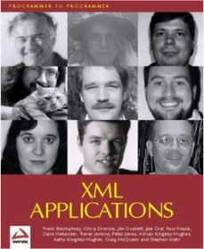
Rodale's All-New Encyclopedia of Organic Gardening: The Indispensable Resource for Every Gardener
Fern Marshall Bradley, Barbara W. Ellis0878579990Over 400 entries of the most practical, up-to-date gardening information ever, collected from garden experts and writers nationwide!"Gardens are places to renew yourself in mind and body, to reawaken to the truth and beauty of the natural world, and to feel the life force inside and around you. And the organic way to garden is safer, cheaper, and more satisfying. Organic gardeners have shown that it's possible to have pleasant and productive gardens in every part of this country without using toxic chemicals. They make their home grounds an island of purity."
Robert Rodale
Final Cut Pro X: Visual QuickStart Guide
Lisa Brenneis, Michael Wohl0321774663With this new release of Final Cut Pro, Apple has completely re-engineered its popular film and video editing software to include an incredible lineup of features intended to close the gap between the prosumers and the pros. Following right in step, this Visual QuickStart Guide has been completely revised to address all the new features as well as the new paradigm of editing that Apple has put forward. An undisputed master of the digital video medium, Lisa Brenneis once again demystifies the complexities of the program and she is joined this time by the Final Cut Pro guru Michael Wohl to provide a clear, straightforward guide to Final Cut Pro X. Tasked-based, step-by-step instructions and loads of visuals and time-saving tips make it so professionals and newcomers alike can quickly find and learn tasks specific to their needs, benefiting from the award-winning Visual QuickStart style. Topics covered include essential editing tasks and media-management strategies, transitions, effects and filters, rendering options, and much more. It includes coverage of all the new features such as the new dynamic interface, Magnetic Timeline, Clip Connections, Auditions, Content Auto-Analysis, Range-Based Keywords, and much more. Now in four-color, this must-have reference also includes several free downloadable videos from the publisher’s site.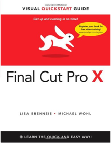
Designing Components with the C++ STL: A New Approach to Programming
Ulrich Breymann0201674882'This book is the most accurate and up-to-date source of information on the STL currently available. ... It has an approach and appeal of its own: it explains techniques for building data structures and algorithms on top of the STL, and in this way appreciates the STL for what it is - a framework.' Angelika Langer, Independent Consultant and C++ Report Columnist"A superbly authored treatment of the STL......an excellent book which belongs in any serious C++ developer's library." Jim Armstrong, President 2112 F/X, Texas.
The C++ Standard Template Library (STL) represents a breakthrough in C++ programming techniques. With it, software developers can achieve vast improvements in the reliability of their software, and increase their own productivity.
Designing Components with the C++ STL has three aims:
* to introduce the reader to the STL * to show how this powerful resource can be exploited * to extend its use to the construction of new components.
This revised edition is fully compliant with the new ISO/IEC C++ Standard with an associated web site containing numerous, fully up-to-date examples for downloading.
The author shows how to make practical use of the STL through a wealth of examples and by drawing on his extensive experience and knowledge gained working with the C++ Standardization Committee. Unique insight into the internals of the STL takes the reader beyond simply using it, to show how the components supplied in the STL can be used to design more complex data structures and algorithms, and powerful abstract data types. Throughout, the author maintains an elegant and sophisticated coding style, adhering faithfully to the current ISO/ANSI standards, helping to ensure that your software will be even more portable, maintainable and reusable than ever.
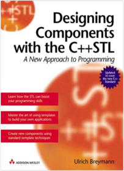
Cascading Style Sheets: Separating Content from Presentation, Second Edition
Owen Briggs, Steven Champeon, Eric Costello, Matt Patterson159059231XThis book is a focused guide to using Cascading Style Sheets (CSS) for the visual design of web pages. It provides concise coverage of all the essential CSS concepts developers need to learn (such as separating content from presentation, block and inline elements, inheritance and cascade, the box model, typography, etc). It also covers the syntax needed to effectively use CSS with your markup document (for example CSS rules, how to structure a style sheet, linking style sheets to your (X)HTML documents, CSS boxes etc).CSS (Cascading Style Sheets) is a powerful technology that can be used to add style and structure to your web pages without needing to resort to "hacks" such as HTML table layouts and "spacer images". However, this is not the only advantage over other styling methods. You can specify your CSS styles in a separate file, then apply those styles to every page in your web site. When you want to change a style on your site, you can do it by modifying one style sheet, rather having to update every page. This is only one example of the many advantages CSS brings to your web development work.
The Da Vinci Code
Dan Brown0307474275PREMIUM MASS MARKET EDITION#1 Worldwide Bestseller—More Than 80 Million Copies Sold
As millions of readers around the globe have already discovered, The Da Vinci Code is a reading experience unlike any other. Simultaneously lightning-paced, intelligent, and intricately layered with remarkable research and detail, Dan Brown's novel is a thrilling masterpiece—from its opening pages to its stunning conclusion.
AntiPatterns: Refactoring Software, Architectures, and Projects in Crisis
William J. Brown, Raphael C. Malveau, Hays W. "Skip" McCormick, Thomas J. Mowbray0471197130"The AntiPatterns authors have clearly been there and done that when it comes to managing software development efforts. I resonated with one insight after another, having witnessed too many wayward projects myself. The experience in this book is palpable." -John Vlissides, IBM Research "This book allows managers, architects, and developers to learn from the painful mistakes of others. The high-level AntiPatterns on software architecture are a particularly valuable contribution to software engineering. Highly recommended!" -Kyle Brown Author of The Design Patterns Smalltalk Companion "AntiPatterns continues the trend started in Design Patterns. The authors have discovered and named common problem situations resulting from poor management or architecture control, mistakes which most experienced practitioners will recognize. Should you find yourself with one of the AntiPatterns, they even provide some clues on how to get yourself out of the situation." -Gerard Meszaros, Chief Architect, Object Systems Group Are you headed into the software development mine field? Follow someone if you can, but if you're on your own-better get the map! AntiPatterns is the map. This book helps you navigate through today's dangerous software development projects. Just look at the statistics:* Nearly one-third of all software projects are cancelled.
* Two-thirds of all software projects encounter cost overruns in excess of 200%.
* Over 800f all software projects are deemed failures.
While patterns help you to identify and implement procedures, designs, and codes that work, AntiPatterns do the exact opposite; they let you zero-in on the development detonators, architectural tripwires, and personality booby traps that can spell doom for your project. Written by an all-star team of object-oriented systems developers, AntiPatterns identifies 40 of the most common AntiPatterns in the areas of software development, architecture, and project management. The authors then show you how to detect and defuse AntiPatterns as well as supply refactored solutions for each AntiPattern presented.
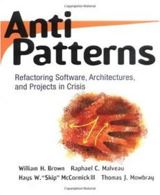
Pattern-Oriented Software Architecture Volume 1: A System of Patterns
Frank Buschmann, Regine Meunier, Hans Rohnert, Peter Sommerlad, Michael Stal0471958697Pattern-oriented software architecture is a new approach to software development. This book represents the progression and evolution of the pattern approach into a system of patterns capable of describing and documenting large-scale applications. A pattern system provides, on one level, a pool of proven solutions to many recurring design problems. On another it shows how to combine individual patterns into heterogeneous structures and as such it can be used to facilitate a constructive development of software systems. Uniquely, the patterns that are presented in this book span several levels of abstraction, from high-level architectural patterns and medium-level design patterns to low-level idioms. The intention of, and motivation for, this book is to support both novices and experts in software development. Novices will gain from the experience inherent in pattern descriptions and experts will hopefully make use of, add to, extend and modify patterns to tailor them to their own needs. None of the pattern descriptions are cast in stone and, just as they are borne from experience, it is expected that further use will feed in and refine individual patterns and produce an evolving system of patterns.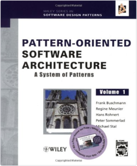
Pattern-Oriented Software Architecture Volume 4: A Pattern Language for Distributed Computing
Frank Buschmann, Kevlin Henney, Douglas C. Schmidt0470059028The eagerly awaited Pattern-Oriented Software Architecture (POSA) Volume 4 is about a pattern language for distributed computing.The authors will guide you through the best practices and introduce you to key areas of building distributed software systems. POSA 4 connects many stand-alone patterns, pattern collections and pattern languages from the existing body of literature found in the POSA series. Such patterns relate to and are useful for distributed computing to a single language. The panel of experts provides you with a consistent and coherent holistic view on the craft of building distributed systems.Includes a foreword by Martin FowlerA must read for practitioners who want practical advice to develop a comprehensive language integrating patterns from key literature.
C++ Programming Style
Tom Cargill0201563657Today's languages have new capabilities, creating new questions on how the components should fit together. Using a learn-by-example approach, Cargill presents code from published sources—each example representing a common error made by C++ programmers—and shows readers how to critically examine and rewrite it.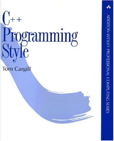
The iPad for Photographers: Master the Newest Tool in your Camera Bag
Jeff CarlsonB00CTPEMQCApple’s popular iPad and iPad mini tablets are incredibly useful tools for photographers on the go. Instead of hauling a laptop, you can tuck a lightweight iPad in your camera bag and take advantage of its large screen, third-party software apps, and online access to effectively complete and share your work away from the studio.With the iPad for Photographers, Second Edition, novice to pro shooters will discover everything that the iPad has to offer with simple step-by-step instructions and the latest real-world advice for:
Importing photos from a camera or memory cards using the iPad Camera Connection Kit or Lightning Camera adapters.Transferring photos wirelessly while you’re shooting, using Wi-Fi SD cards or adapters, or controlling the camera remotely with devices such as the CamRanger and CameraMator.Organizing and rating images and assigning keyword tags in the field, and integrating them later with Adobe Photoshop Lightroom on your computer.Editing photos with iPhoto, Adobe Photoshop Touch, and other image adjustment tools.Using portfolio software to create and deliver impressive iPad presentations for prospective clients.
In this fully updated guide, photographers will learn other clever uses for their iPad including backing up photos in the field, tracking outdoor light conditions, and other techniques. Visit the book’s website at ipadforphotographers.com for updates and additional information.
Designing and Coding Reusable C++
Martin D. Carroll, Margaret A. Ellis020151284XWritten by two C++ experts, this book discusses the topics related to the software development of code reusability in the design of interfaces, the efficiency of implementations, portability, and compatibility. And it outlines the pros and cons of the alternatives to reuse so that programmers can make informed decisions.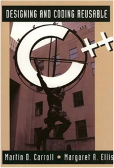
Pragmatic Guide to Sass
Hampton Catlin, Michael Lintorn Catlin1934356840CSS is fundamental to the web, but it's a basic language and lacks many features. Sass is just like CSS, but with a whole lot of extra power so you can get more done, more quickly. Build better web pages today with Pragmatic Guide to Sass. These concise, easy-to-digest tips and techniques are the shortcuts experienced CSS developers need to start developing in Sass today.Written by Sass creator Hampton Catlin and Michael Lintorn Catlin, Pragmatic Guide to Sass shows you how to you to improve your CSS, from the basics to advanced topics, from first installation to sprucing up your buttons. You'll see how to code the right way in Sass thanks to short, clear examples. Two-page spreads show the explanation on one side and code examples on the other. You'll learn how to improve your pages in minutes.
You'll be able to perform amazing feats of CSS including using variables, calculating layouts, and modifying colors. Did you ever want to make a color 10% less saturated? We'll show you how to do that without needing a calculator.
Plus, learn about Compass, Sass's library of carefully built hacks, reusable parts, and frameworks. Find out how to shortcut cross-browser issues and develop mixins for shortening text and making lists more exciting. You'll wonder how you spent all those years styling sites without it!
Make things even easier with Blueprint, and discover how to use its predefined classes that you can apply to your Web site. From selector scoping to bundling, debugging, and designing custom functions, Pragmatic Guide to Sass will help you build the pages you've always wanted.
What You Need:
An installation of Sass and Compass
Some basic command line knowledge
CSS3 For Web Designers
Dan Cederholm
SASS FOR WEB DESIGNERS
Dan CederholmPro Git
Chacon1430218339Developers need to keep their code from unintended changes. Pro Git is the version control book for all open source developers and quite a few commercial ones, regardless of whether they are hobbyists or professionals. Developed by Linus Torvalds himself, it has taken the open source world by storm and is set to become the standard for open source development.Semiotics: The Basics
Daniel Chandler0415363756This updated second edition provides a clear and concise introduction to the key concepts of semiotics in accessible and jargon-free language. With a revised introduction and glossary, extended index and suggestions for further reading, this new edition provides an increased number of examples including computer and mobile phone technology, television commercials and the web.Demystifying what is a complex, highly interdisciplinary field, key questions covered include: What is a sign?Which codes do we take for granted?How can semiotics be used in textual analysis?What is a text?
A highly useful, must-have resource, Semiotics: The Basics is the ideal introductory text for those studying this growing area.
Statistical Language Learning
Eugene Charniak0262531410Eugene Charniak breaks new ground in artificial intelligenceresearch by presenting statistical language processing from an artificial intelligence point of view in a text for researchers and scientists with a traditional computer science background.New, exacting empirical methods are needed to break the deadlock in such areas of artificial intelligence as robotics, knowledge representation, machine learning, machine translation, and natural language processing (NLP). It is time, Charniak observes, to switch paradigms. This text introduces statistical language processing techniques ;word tagging, parsing with probabilistic context free grammars, grammar induction, syntactic disambiguation, semantic wordclasses, word-sense disambiguation ;along with the underlying mathematics and chapter exercises.Charniak points out that as a method of attacking NLP problems, the statistical approach has several advantages. It is grounded in real text and therefore promises to produce usable results, and it offers an obvious way to approach learning: "one simply gathers statistics."Language, Speech, and CommunicationInviting Disaster: Lessons From the Edge of Technology
James R. Chiles0066620821Combining captivating storytelling with eye-opening findings, Inviting Disaster delves inside some of history's worst catastrophes in order to show how increasingly "smart" systems leave us wide open to human tragedy.Weaving a dramatic narrative that explains how breakdowns in these systems result in such disasters as the chain reaction crash of the Air France Concorde to the meltdown at the Chernobyl Nuclear Power Station, Chiles vividly demonstrates how the battle between man and machine may be escalating beyond manageable limits — and why we all have a stake in its outcome.
Included in this edition is a special introduction providing a behind-the-scenes look at the World Trade Center catastrophe. Combining firsthand accounts of employees' escapes with an in-depth look at the structural reasons behind the towers' collapse, Chiles addresses the question, Were the towers "two tall heroes" or structures with a fatal flaw?
Definitions in Information Management
Malcolm D. Chisholm0615357547Dr. Chisholm's book is an important work and should be required reading for all senior executives, regulators, and market authorities. What we need before we can develop systems, is a set of clear cut definitions of each data element. This is an excellent book on definitions for data modelers and data managers. Data modeling is the art of defining data elements and is all about definitions. Establishing a common understanding of financial instruments, including the nuances of their underlying contractual structure, is the very foundation of systemic oversight, business process automation, and analytical modeling.The Innovator's Solution: Creating and Sustaining Successful Growth
Clayton M. Christensen, Michael E. RaynorB004OC07GWA seminal work by bestselling author Clayton M. Christensen.In his international bestseller The Innovator's Dilemma, Clayton M. Christensen exposed this crushing paradox behind the failure of many industry leaders: by placing too much focus on pleasing their most profitable customers, these firms actually paved the way for their own demise by ignoring the disruptive technologies that aggressively evolved to displace them. In The Innovator’s Solution, Christensen and coauthor Michael E. Raynor help all companies understand how to become disruptors themselves.
Clay Christensen (author of the award-winning Harvard Business Review article, How Will You Measure Your Life?”) and Raynor not only reveal that innovation is more predictable than most managers have come to believe, they also provide helpful advice on the business decisions crucial to truly disruptive growth. Citing in-depth research and theories tested in hundreds of companies across many industries, the authors identify the processes that create successful innovationand they show managers how to tailor their strategies to the changing circumstances of a dynamic world.
The Innovator’s Solution is an important addition to any innovation library.
Published by Harvard Business Review Press.
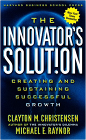
Great Light, Easy Light
Kevin ClarkAdvanced Rails Recipes
Mike Clark0978739221Ruby on Rails continues to build up a tremendous head of steam. Fueled by significant benefits and an impressive portfolio of real-world applications already in production, Rails is destined to continue making significant inroads in coming years.Each new Rails application showing up on the web adds yet more to the collective wisdom of the Rails development community. Yesterday's best practices yield to today's latest and greatest techniques, as the state of the art is continually refined in kitchens all across the Internet. Indeed, these are times of great progress.
At the same time, it's easy to get left behind in the wake of progress. Advanced Rails Recipes keeps you on the cutting edge of Rails development and, more importantly, continues to turn this fast-paced framework to your advantage.
Advanced Rails Recipes is filled with pragmatic recipes you'll use on every Rails project. And by taking the code in these recipes and slipping it into your application you'll not only deliver your application quicker, you'll do so with the confidence that it's done right.
The current beta includes contributions from Aaron Batalion, Adam Keys, Adam Wiggins, Andre Lewis, Andrew Kappen, Benjamin Curtis, Ben Smith, Chris Bernard, Chris Haupt, Chris Wanstrath, Cody Fauser, Dan Benjamin, Dan Manges, Daniel Fischer, David Bock, David Chelimsky, David Heinemeier Hansson, Erik Hatcher, Ezra Zygmuntowicz, Geoffrey Grosenbach, Giles Bowkett, Greg Hansen, Gregg Pollack, Hemant Kumar, Hugh Bien, Jamie Orchard-Hays, Jamis Buck, Jared Haworth, Jarkko Laine, Jason LaPier, Jay Fields, John Dewey, Jonathan Dahl, Josep Blanquer, Josh Stephenson, Josh Susser, Kevin Clark, Luke Francl, Mark Bates, Marty Haught, Matthew Bass, Michael Slater, Mike Clark, Mike Hagedorn, Mike Mangino, Mike Naberezny, Mike Subelsky, Nathaniel Talbott, PJ Hyett, Patrick Reagan, Peter Marklund, Pierre-Alexandre Meyer, Rick Olson, Ryan Bates, Scott Barron, Tony Primerano, Val Aleksenko, and Warren Konkel.
Writing Effective Use Cases
Alistair Cockburn0201702258(Pearson Education) An up-to-date guide to writing use cases, expanding on the classic treatments into intermediate and advanced concepts, making this guide appropriate for all skill levels. Softcover. DLC: Application software—Development.Secrets of the Obvious: A Guide for Balanced Living
Harry Cohen0741413698In SECRETS OF THE OBVIOUS, author Harry Cohen, Ph.D., gives us a guidebook for balanced living in an open and honest, no-nonsense format. Based on his private practice in psychology and years as a corporate teacher, trainer and motivator, Harry translates the philosophy from his seminars to book form, with each page revealing the secrets most of us overlook or are simply too busy to remember. Full of helpful tips, real-world experiences and humorous anecdotes, this highly readable guidebook provides insights into how to make positive changes and restore balance in all aspects of our lives.Take Control of TextExpander
Michael E CohenB005EI84HORunning TextExpander is like embedding a superhero typist in your Mac. Read Take Control of TextExpander to learn how to:Reply faster: If you frequently send similar bits of text—directions, chunks of legal writing, bios, product descriptions, company names, addresses, URLs, and so forth—let TextExpander quickly type all that text for you, making it a snap to respond quickly to customer questions or requests from colleagues, and a breeze to send other routine correspondence ("Dear Mom, I'm still not pregnant. Love, Me"). You can even create fill-in snippets that ask you for details and fill in all the rest of the text automatically.
Make typing more exciting: Discover how to grab and insert the URL in your browser's frontmost window into whatever you're writing, to insert HTML or CSS tags in a flash, to automagically add the date to filenames as you save, and more. It's like having another set of fingers.
Type more accurately: Find out how to add the auto-correct dictionary groups from Smile and to create your own auto-correction options, so you'll spend less time fixing common typing mistakes or going red-faced when you spot an egregious error too late.
Enjoy life more: When you let TextExpander handle your routine typing, your brain will be free to think more creatively about the rest of what you type. And you just might knock off work a little sooner some days.
Specific questions answered in this ebook include: How do I register my demo copy of TextExpander and buy a family pack?What are some common uses of TextExpander that I can try as I learn?How do I use TextExpander to timestamp my text automatically?How can I put the clipboard contents into an expanded snippet?How can I make a TextExpander snippet that expands into a fill-in form?How do I work with formatted text and pictures in snippets?How do I handle capitalization and snippet expansions?How can I get to TextExpander quickly, and hide it when I don't need it?What do I do if I can't remember a snippet's expansion abbreviation?How can I edit my snippets quickly?How can I quickly insert special characters like smileys and stars?How do I insert a snippet and move the insertion point into the middle of it?How do I insert a snippet immediately after a quotation mark or bracket?I do a lot of CSS coding. TextExpander sounds great, but how can I leverage someone else's work and not have to create my own set of CSS expansions?How can I invoke an AppleScript from within a TextExpander snippet expansion, and use the result in my snippet?
The Anatomy of Type: A Graphic Guide to 100 Typefaces
Stephen Coles0062203126A visual treat for anyone who loves fonts and typographic design.The Anatomy of Type explores one hundred traditional and modern typefaces in loving detail, with a full spread devoted to each entry. The full character set from each typeface is shown, and the best letters for identification are enlarged and annotated, revealing key features, anatomical details, and the finer, often-overlooked elements of type design. Containing in-depth information on everything from the designer and foundry, the year of release, and the different weights and styles available, The Anatomy of Type is more than a reference guide to the intricacies of typeface design. It is a visual send-up of some of the world's most beloved typefaces, beautifully displayed in vibrant color.
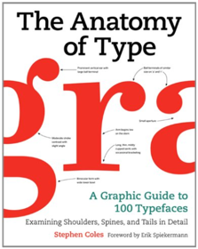
A-Z Visitor's London Atlas and Guide
Geographers' A-Z Map Company0850391075London Atlas and guide. We loved the photo's, explanations, hints, tips and advice for the tourist who wants to belong without standing out.Maven: The Definitive Guide
Sonatype Company0596517335For too long, developers have worked on disorganized application projects, where every part seemed to have its own build system, and no common repository existed for information about the state of the project. Now there's help. The long-awaited official documentation to Maven is here.Written by Maven creator Jason Van Zyl and his team at Sonatype, Maven: The Definitive Guide clearly explains how this tool can bring order to your software development projects. Maven is largely replacing Ant as the build tool of choice for large open source Java projects because, unlike Ant, Maven is also a project management tool that can run reports, generate a project website, and facilitate communication among members of a working team.
To use Maven, everything you need to know is in this guide. The first part demonstrates the tool's capabilities through the development, from ideation to deployment, of several sample applications — a simple software development project, a simple web application, a multi-module project, and a multi-module enterprise project.
The second part offers a complete reference guide that includes:
The POM and Project RelationshipsThe Build LifecyclePluginsProject website generationAdvanced site generationReportingPropertiesBuild ProfilesThe Maven RepositoryTeam CollaborationWriting PluginsIDEs such as Eclipse, IntelliJ, ands NetBeansUsing and creating assembliesDeveloping with Maven Archetypes
Several sources for Maven have appeared online for some time, but nothing served as an introduction and comprehensive reference guide to this tool — until now. Maven: The Definitive Guide is the ideal book to help you manage development projects for software, web applications, and enterprise applications. And it comes straight from the source.
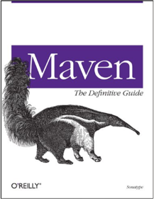
Advanced C++ Programming Styles and Idioms
James O. Coplien0201548550This book assumes a background in the syntax of C++. Coplien shows how to become an expert C++ programmer by learning the idioms of the language. His approach is organized around the abstractions that C++ supports. He shows how these abstractions can be combined to use the language effectively.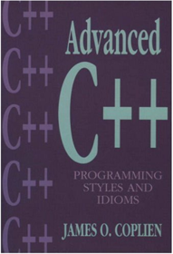
Linux Device Drivers, 2nd Edition
Jonathan Corbet, Alessandro Rubini0596000081This book is for anyone who wants to support computer peripherals under the Linux operating system or who wants to develop new hardware and run it under Linux. Linux is the fastest-growing segment of the Unix market, is winning over enthusiastic adherents in many application areas, and is being viewed more and more as a good platform for embedded systems. Linux Device Drivers, already a classic in its second edition, reveals information that heretofore has been shared by word of mouth or in cryptic source code comments, on how to write drivers for a wide range of devices.Version 2.4 of the Linux kernel includes significant changes to device drivers, simplifying many activities, but providing subtle new features that can make a driver both more efficient and more flexible. The second edition of this book thoroughly covers these changes, as well as new processors and buses.
You don't have to be a kernel hacker to understand and enjoy this book; all you need is an understanding of C and some background in Unix system calls. You'll learn how to write drivers for character devices, block devices, and network interfaces, guided by full-featured examples that you can compile and run without special hardware. Major changes in the second edition include discussions of symmetric multiprocessing (SMP) and locking, new CPUs, and recently supported buses. For those who are curious about how an operating system does its job, this book provides insights into address spaces, asynchronous events, and I/O.
Portability is a major concern in the text. The book is centered on version 2.4, but includes information for kernels back to 2.0 where feasible. Linux Device Driver also shows how to maximize portability among hardware platforms; examples were tested on IA32 (PC) and IA64, PowerPC, SPARC and SPARC64, Alpha, ARM, and MIPS.
Contents include: Building a driver and loading modulesComplete character, block, and network driversDebugging a driverTimingHandling symmetric multiprocessing (SMP) systemsMemory management and DMAInterruptsPortability issuesPeripheral Component Interconnect (PCI)

Century of Champions
Nicholas J. Cotsonika, Gene Myers0937247294Century of Champions covers an amazing 100 years of Michigan sports, from Ty Cobb, Joe Louis, Gordie Howe, Magic Johnson, Steve Yzerman, Isiah Thomas and many more individual heroes and team championships. The stories are told through words and pictures of the Detroit Free Press sports staff, annually recognized as one of the nation's best.Introduction to Web Application Development with IBM WebSphere Studio, An: IBM Certified Associate Developer
Gary Craig, Peter Jakab1931182116IBM has developed a world class certification program for professionals to establish standards that identify required levels of competency. This is the first study guide designed specifically for professionals who are preparing for test 345. With this guide, IBM now provides a quick and easy way to learn about IBM WebSphere Studio Application Developer and prepare for the IBM certification exam. This book will take you through the basics of using WebSphere Studio Application Developer from fundamental concepts through the actual development of a complete Web application. You will learn everything from an introduction to development, to debugging techniques, to implementing a complete application with HTML pages. Also included is information on JSPs, Servlets and back-end database access. Whether you need individual education or want to prepare for the certification testing, you will find this book to be an excellent resource.
HTML5 Hacks
Jesse Cravens, Jeff Burtoft1449334997With 90 detailed hacks, expert web developers Jesse Cravens and Jeff Burtoft demonstrate intriguing uses of HTML5-related technologies. Each recipe provides a clear explanation, screenshots, and complete code examples for specifications that include Canvas, SVG, CSS3, multimedia, data storage, web workers, WebSockets, and geolocation.You’ll also find hacks for HTML5 markup elements and attributes that will give you a solid foundation for creative recipes that follow. The last chapter walks you through everything you need to know to get your HTML5 app off the ground, from Node.js to deploying your server to the cloud.
Here are just a few of the hacks you’ll find in this book: Make iOS-style card flips with CSS transforms and transitionsReplace the background of your video with the Canvas tagUse Canvas to create high-res Retina Display-ready mediaMake elements on your page user-customizable with editable contentCache media resources locally with the filesystem APIReverse-geocode the location of your web app userProcess image data with pixel manipulation in a dedicated web workerPush notifications to the browser with Server-Sent Events
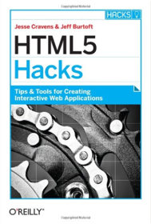
Agile Testing: A Practical Guide for Testers and Agile Teams
Lisa Crispin, Janet Gregory0321534468Testing is a key component of agile development. The widespread adoption of agile methods has brought the need for effective testing into the limelight, and agile projects have transformed the role of testers. Much of a tester’s function, however, remains largely misunderstood. What is the true role of a tester? Do agile teams actually need members with QA backgrounds? What does it really mean to be an “agile tester?”Two of the industry’s most experienced agile testing practitioners and consultants, Lisa Crispin and Janet Gregory, have teamed up to bring you the definitive answers to these questions and many others. In Agile Testing, Crispin and Gregory define agile testing and illustrate the tester’s role with examples from real agile teams. They teach you how to use the agile testing quadrants to identify what testing is needed, who should do it, and what tools might help. The book chronicles an agile software development iteration from the viewpoint of a tester and explains the seven key success factors
of agile testing.
Readers will come away from this book understanding
How to get testers engaged in agile developmentWhere testers and QA managers fit on an agile teamWhat to look for when hiring an agile testerHow to transition from a traditional cycle to agile developmentHow to complete testing activities in short iterationsHow to use tests to successfully guide developmentHow to overcome barriers to test automationThis book is a must for agile testers, agile teams, their managers, and their customers.
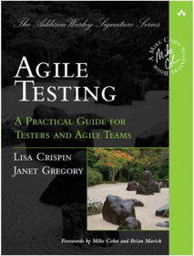
The Java Developer's Guide to Eclipse, 2nd Edition
Jim D'Anjou, Scott Fairbrother, Dan Kehn, John Kellerman, Pat McCarthy0321305027“Fully updated and revised for Eclipse 3.0, this book is the definitive Eclipse reference—an indispensable guide for tool builders, rich client application developers, and anyone customizing or extending the Eclipse environment.”—Dave Thomson, Eclipse Project Program Director, IBM The Ultimate Guide to Eclipse 3.0 for the Java Developer. No Eclipse Experience Required!
Eclipse is a world-class Java integrated development environment (IDE) and an open source project and community. Written by members of the IBM Eclipse Jumpstart team, The Java™ Developer’s Guide to Eclipse, Second Edition, is the definitive Eclipse companion. As in the best-selling first edition, the authors draw on their considerable experience teaching Eclipse and mentoring developers to provide guidance on how to customize Eclipse for increased productivity and efficiency.
In this greatly expanded edition, readers will find A total update, including the first edition’s hallmark, proven exercises—all revised to reflect Eclipse 3.0 changes to the APIs, plug-ins, UI, widgets, and moreA special focus on rich client support with a new chapter and two exercisesA comprehensive exercise on using Eclipse to develop a Web commerce application using Apache’s TomcatA new chapter on JFace viewers and added coverage of viewsA new chapter on internationalization and accessibilityNew chapters on performance tuning and Swing interoperability
Using this book, those new to Eclipse will become proficient with it, while advanced developers will learn how to extend Eclipse and build their own Eclipse-based tools. The accompanying CD-ROM contains Eclipse 3.0, as well as exercise solutions and many code examples.
Whether you want to use Eclipse and Eclipse-based offerings as your integrated development environment or customize Eclipse further, this must-have book will quickly bring you up to speed.
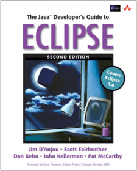
The Semantic Web: A Guide to the Future of XML, Web Services, and Knowledge Management
Michael C. Daconta, Leo J. Obrst, Kevin T. Smith0471432571"The Semantic Web is an extension of the current Web in which information is given well-defined meaning, better enabling computers and people to work in cooperation."—Tim Berners-Lee, Scientific American, May 2001This authoritative guide shows how the Semantic Web works technically and how businesses can utilize it to gain a competitive advantageExplains what taxonomies and ontologies are as well as their importance in constructing the Semantic WebCompanion Web site includes further updates as the framework develops and links to related sites
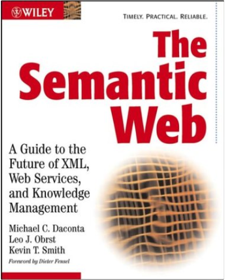
Numerical Methods
Germund Dahlquist, Ake Bjorck, Mathematics0486428079Practical text strikes fine balance between students' requirements for theoretical treatment and needs of practitioners, with best methods for large- and small-scale computing. Prerequisites are minimal (calculus, linear algebra, and preferably some acquaintance with computer programming). Text includes many worked examples, problems, and an extensive bibliography. 1974 edition.Stripes: ...and Java Web Development Is Fun Again
Frederic Daoud1934356212As a Java developer, you want to leverage your knowledge and the wealth of Java libraries and tools. But when it comes to web development, many frameworks seem over-engineered and too complex. They have a steep learning curve, and it's just too difficult to get them to do exactly what you need because of their "closed-box" design.Stripes brings simplicity back to Java web development. You'll be up and running in minutes, and can go a long way with just a few simple concepts. You'll spend your time developing your application, not maintaining gobs of configuration. Because Stripes is very transparent, you will understand exactly what is going on from request to response.
The popularity of Stripes keeps increasing because of its clean design and extensibility. With this complete tutorial and reference, you can master Stripes and take advantage of its productivity in web application development. You'll tailor the framework to your requirements, not the other way around!
This book is packed with explanations and examples so that you learn practical problem-solving techniques. You'll be able to "wrap your head around the framework" and fully understand how Stripes works. When a client requests a feature, you'll answer "yes" with confidence because you're using a framework that lets you get the results that you need without getting in your way. Because of its open design, Stripes lets you easily integrate your favorite tools: tag libraries, AJAX frameworks, ORM solutions, dependency injectors, and more.
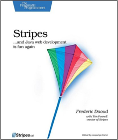
Flash MX Magic
Matthew David, Mark Baltzegar, Veronique Brossier, Jim Caldwell, John Dalziel, Aria Danika, Robert M. Hall, Andreas Heim, Jason Krogh, 2Advanced Studios, Jessica Speigel, Glenn Thomas, Helen Triolo, Joe Tripician0735711607Flash MX Magic follows a proud tradition of offering cutting-edge inspirational and customizable Macromedia Flash projects written by leading Flash designers and developers. Each of the 15 projects focuses on a project such as game programming, creating a poll with a dynamic database, movie-making, and e-Card creation. By giving you clear instructions, full 4-color graphical display of steps, all the code and components and an explanation of modifications, you have all the tools necessary to complete the projects and use them as a launching pad for your own sophisticated work.New Riders is absolutely honored that so many bright stars in the Flash community collaborated to share their valuable insight on how to this all-new, third entry in the Flash Magic series. The Magic series is perfect for a multi-author book. Its non-linear design allows each chapter to stand on its own as an independent project. And with the leading Flash designers and developers authoring this book, you get the best tips and tricks from those who have proven themselves in the field.
Matthew David, Mark Baltzegar, Jim Caldwell, John Dalziel, Aria Danika, Robert Hall, Andreas Heim, Jason Krogh, Stephanie Novak and Eric Jordan, Jessica Speigel, Helen Triolo, Glenn Thomas, and Joe Tripician give you their latest insights and from-the-trenches experience with Flash MX. And the framework for the book is provided by the one and only David Emberton (of Flash 4- and Flash 5 Magic). And the artwork is designed by the best new talent in graphic design. As always, the project files are on the CD, so you can try these yourself and learn from some of the best and creatively varied minds in motion graphics.
QUICK NOTE: Flash Magic books aren't for most absolute beginners. If you're brand new to Flash, you may want to start with an entry-level book that gets you familiar with the basics of motion graphics and Flash's tools, before jumping into a Magic book. When you're ready, we promise, it'll be worth it...
Semantic Web Technologies: Trends and Research in Ontology-based Systems
John Davies, Rudi Studer, Paul Warren0470025964The Semantic Web combines the descriptive languages RDF (Resource Description Framework) and OWL (Web Ontology Language), with the data-centric, customizable XML (eXtensible Mark-up Language) to provide descriptions of the content of Web documents. These machine-interpretable descriptions allow more intelligent software systems to be written, automating the analysis and exploitation of web-based information.Software agents will be able to create automatically new services from already published services, with potentially huge implications for models of e-Business.
Semantic Web Technologies provides a comprehensive overview of key semantic knowledge technologies and research. The authors explain (semi-)automatic ontology generation and metadata extraction in depth, along with ontology management and mediation. Further chapters examine how Semantic Web technology is being applied in knowledge management (“Semantic Information Access”) and in the next generation of Web services.
Semantic Web Technologies:Provides a comprehensive exposition of the state-of-the art in Semantic Web research and key technologies.Explains the use of ontologies and metadata to achieve machine-interpretability.Describes methods for ontology learning and metadata generation.Discusses ontology management and evolution, covering ontology change detection and propagation, ontology dependency and mediation.Illustrates the theoretical concepts with three case studies on industrial applications in digital libraries, the legal sector and the telecommunication industry.
Graduate and advanced undergraduate students, academic and industrial researchers in the field will all find Semantic Web Technologies an essential guide to the technologies of the Semantic Web.
Flash to the Core
Joshua Davis0735712883Coverage is not critically tied to a particular rev of Flash. Flash to the Core is about the creative process and what Joshua Davis can teach about taking Flash design and development to new extremes. Part one is all about Joshua, the artist: his philosophies, his approach to Flash workflow, how he works with clients, how he explains and explores the world around him through his creative approach to Flash web design, animation and motion graphics. Part two is about the work itself: 12 Flash-based projects Joshua has created in the past year. Some of these have won awards, others have been nominated for awards. Each project is a narrative and deconstruction, with the code used in the project included and explained. A large and growing audience wants to learn advanced Flash techniques from the best in the business. No other book can do this quite like Flash to the Core: An Interactive Sketchbook by Joshua Davis.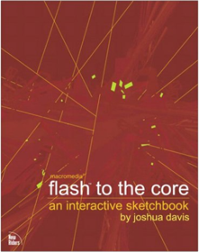
New Masters of Flash
Joshua Davis, Eric Jordan, Yugo Nakamura1903450039New Masters of Flash is both global showcase and practical tutorial. Twenty of the planet's most awe-inspiring Flash designers share their influences, ideas and objectives in individual introductory essays. They then take the reader through a step-by-step tutorial explaining in detail how to create in Flash 5 the interfaces, applications and effects that they have made famous. On the accompanying CD, watch interviews with the designers, follow animated versions of the tutorials and download the FLAs for Flash 5 (F4 FLAs are also available from the support website). The author-designers are some of the most legendary Flash innovators currently working - from the US to Japan, Europe to South Africa: Yugo Nakamura, Joshua Davies, Manuel Clement, Irene Chan and Tomato's Joel Baumann together with fifteen other leading Flash practitioners. These are the designers who are expanding the horizons of interactive interface design with Flash. Join them.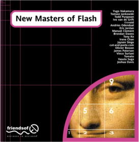
Flash ActionScript for Designers: Drag, Slide, Fade
Brendan Dawes0735710473A visual approach to explaining and exploring the power of ActionScript for those who design with it. Organized according to differing creative areas, each basic type of project is deconstructed, with components broken down and ActionScript code explained; variations are then suggested. Four-color, with lots of visuals and annotated code.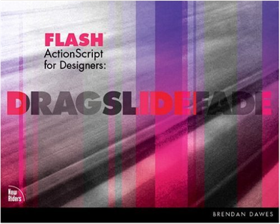
The Symbolic Species: The Co-evolution of Language and the Brain
Terrence W. Deacon0393317544"A work of enormous breadth, likely to pleasantly surprise both general readers and experts."—New York Times Book ReviewThis revolutionary book provides fresh answers to long-standing questions of human origins and consciousness. Drawing on his breakthrough research in comparative neuroscience, Terrence Deacon offers a wealth of insights into the significance of symbolic thinking: from the co-evolutionary exchange between language and brains over two million years of hominid evolution to the ethical repercussions that followed man's newfound access to other people's thoughts and emotions.Informing these insights is a new understanding of how Darwinian processes underlie the brain's development and function as well as its evolution. In contrast to much contemporary neuroscience that treats the brain as no more or less than a computer, Deacon provides a new clarity of vision into the mechanism of mind. It injects a renewed sense of adventure into the experience of being human.
National Industrial Security Program Operating Manual
Department of Defense0981620620The National Industrial Security Program Operating Manual (NISPOM) is the Department of Defense's instruction to contractors of how to protect classified information. This printing of the NISPOM includes the latest from the Defense Security Services to include an Index and Industrial Security Letters. The NISPOM addresses a cleared contractor's responsibilities including: Security Clearances, Required Training and Briefings, Classification and Markings, Safeguarding Classified Information, Visits and Meetings, Subcontracting, Information System Security, Special Requirements, International Security Requirements and much more. It's not just for the FSO. Every Cleared employee should have a copy. Red Bike Publishing has published a book store quality NISPOM. A sleek new professionally designed cover adorns our product. Red Bike Publishing has added a professional edge to the NISPOM for about the same as it costs to print your own. Our publisher quality books have crisp writing that is refreshing to read.The Industrial Security Professional (ISP) Certification is based primarily on NISPOM. The publisher also provides ISP Certification-The Industrial Security Professional Exam Manual.
C++ How to Program
Harvey M. Deitel, P.J. Deitel0131173340This authoritative introduction to C++ enables inexperienced or intermediate programmers to grasp the concepts of this popular programming language. It is unique among books on this subject in that it starts from the very beginning and explains this very complex language in clear, concise, and understandable language—abundantly illustrated with numerous working C++ program examples.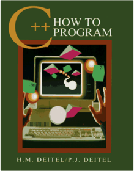
Peopleware: Productive Projects and Teams
Tom DeMarco, Timothy Lister0932633439Demarco and Lister demonstrate that the major issues of software development are human, not technical. Their answers aren't easy—just incredibly successful. New second edition features eight all-new chapters. Softcover. Previous edition: c1987. DLC: Management.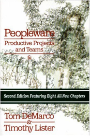
The Science of Navigation: From Dead Reckoning to GPS
Mark Denny1421405121In today’s world of online maps and travel directions delivered wirelessly to hand-held devices, getting from place to place requires little thought from most of us—which is a good thing, since accurate navigation can be tricky. Get your bearings with Mark Denny—an expert at explaining scientific concepts in non-technical language—in this all-encompassing look at the history and science of navigation.Denny’s tour kicks off with key facts about the earth and how its physical properties affect travel. He discusses cartography and early mapmakers, revealing fascinating tidbits such as how changes over time of the direction of true north, as well as of magnetic north, impacted navigation. Denny details the evolution of navigation from the days of coastal piloting to GPS and other modern-day technologies. He explains the scientific breakthroughs in accessible, amusing terms and provides an insightful look at their effects on societies, cultures, and human advancement. Throughout, Denny frames the long history of navigation with amazing tales of such people as Pytheas, an ancient Greek navigator, and Sir Francis Drake and of such discoveries as the magnetic compass and radio direction finding.
Whether you have an interest in orienteering and geocaching or want to know more about the critical role navigation has played in human survival and progress since ancient people learned to use lodestones, The Science of Navigation is for you. With it you’ll finally understand the why of wayfinding.
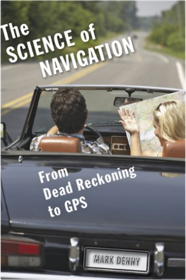
Instant Interactive Map Designs with Leaflet JavaScript Library How-to
Jonathan DerroughB00CXPRD3WIn DetailLeaflet open source JavaScript library is a great alternative to GoogleMaps for creating dynamic and interactive maps. More importantly, it will enable you to layer your maps with data from a wide range of providers, or your own. Data on maps can take many forms – tiles, interactive markers, vector objects – and Leaflet handles them all.
Instant Designing Interactive Maps Using Leaflet JavaScript Library How-to is written as a Cookbook, with straightforward recipes to help you harness the powerful features of the leading open source map library, from imagery to interactive vector objects on desktop and mobile browsers.
This book will help you learn how to create maps with the Leaflet JavaScript library through a series of step-by-step recipes to achieve great dynamic and interactive slippy maps.
You will also learn how to add dynamic responsive features to your maps through the use of tiles, WMS, GeoJSON, custom markers with popups, interactive vector objects, and standard controls, as well as custom ones. Furthermore, preparing to deploy on mobile and using the location of the device will be explained in detail.
Everything you need to know about Leaflet to create great maps, from a basic slippy map to a colorful, animated, interactive, choropleth map, will be explained in this book.
Approach
Filled with practical, step-by-step instructions and clear explanations for the most important and useful tasks. This How-to guide offers techniques and skills through recipes. The guide is packed with step-by-step instructions for anyone who wants to learn to design and deploy interactive maps to their application
Who this book is for
This book is a perfect fit for developers without prior knowledge of other map APIs and wishing to build great maps in no time. Basic knowledge of working with JavaScript and web application development is essential.
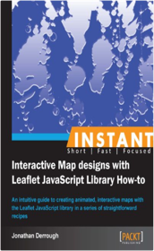
HTML5 Multimedia: Develop and Design
Ian Devlin0321793935One of the most exciting and talked about aspects of the HTML5 specification is the introduction of in-browser multimedia. Websites no longer have to rely on a third-party tool such as Flash or Silverlight to play video and audio. This book is an easy, approachable guide to building native HTML5 multimedia into a website, from the simplest addition to more advanced features. It's written in a simple, straightforward style that's not too techy, yet advanced enough for the more experienced coder who just needs to get up to speed on these powerful new capabilities. The book's companion website provides all the examples in a working format for easy access and enhanced visualization for the reader.Topics include: Using Audio: How to add audio to web documents using the HTML5 audio element.Using Video: How to add video to web documents using the HTML5 video element.JavaScript API and Custom Controls: How to use the HTML5 Media JavaScript API to create custom controls for HTML5 audio and video.Styling Media Elements with CSS: Shows how HTML5 media elements can be styled with CSS2.1 and CSS3. Using Video with SVG: Shows how SVG and HTML5 video can work together.Using Video with Canvas: Introduces the HTML5 canvas element and shows how HTML5 video and canvas can work together.
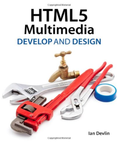
Enterprise Ontology: Theory and Methodology
Jan Dietz3540291695If one thing catches the eye in almost all literature about (re)designing or (re)engineering of enterprises, it is the lack of a well-founded theory about their construction and operation. Often even the most basic notions like "action" or "process" are not precisely defined. Next, in order to master the diversity and the complexity of contemporary enterprises, theories are needed that separate the stable essence of an enterprise from the variable way in which it is realized and implemented.Such a theory and a matching methodology, which has passed the test of practical experience, constitute the contents of this book. The enterprise ontology, as developed by Dietz, is the starting point for profoundly understanding the organization of an enterprise and subsequently for analyzing, (re)designing, and (re)engineering it. The approach covers numerous issues in an integrated way: business processes, in- and outsourcing, information systems, management control, staffing etc.
Researchers and students in enterprise engineering or related fields will discover in this book a revolutionary new way of thinking about business and organization. In addition, it provides managers, business analysts, and enterprise information system designers for the first time with a solid and integrated insight into their daily work.
WebSphere Engineering: A Practical Guide for WebSphere Support Managers and Senior Consultants
Ying Ding0137142250The Practical, End-to-End Guide to WebSphere® Infrastructure Engineering and Technical ManagementCompanies depend on the IBM® WebSphere platform to deliver mission-critical Web applications and services and to provide the foundation for Service Oriented Architecture (SOA). To gain maximum value from WebSphere technologies, organizations must implement comprehensive, integrated best practices for managing their WebSphere infrastructures. In this book, one of the most experienced enterprise WebSphere support managers introduces those best practices and explains exactly how to make the most of them.
Drawing on his tremendous real-world expertise, Ying Ding shows how to maximize the WebSphere platform’s reliability, stability, scalability, and performance for large enterprise systems. You’ll find insightful discussions of each option and strategy for managing WebSphere, including practical guidance on making the right tradeoffs for your environment.
Whether you’re a WebSphere administrator, developer, consultant, support manager, engineer, or architect, this book brings together the information you need to run your WebSphere infrastructure with maximum effectiveness and efficiency.
Coverage includesPlanning, hiring, training, funding, and building a world-class WebSphere engineering support organizationImplementing tight standards and consistent, comprehensive processes for managing the entire WebSphere engineering life cycleCreating optimal testing environments, administering parallel testing pipelines, and managing testing workloadsEmpowering production support teams with knowledge, system privileges, and the right toolsManaging production emergencies and critical situations: evaluating problem severity, mitigating customer experience, restoring service, performing post-problem resolution, and much moreMaximizing the stability of large-scale interconnected WebSphere systems for composite applicationsSupporting WebSphere platforms that provide end-to-end SOA infrastructure
Introduction 1
Chapter 1: Organization Models and Choices 7
Chapter 2: Building a World-Class WebSphere Team Through Hiring and Training 41
Chapter 3: WebSphere Operations Framework 75
Chapter 4: Engagement Challenges 93
Chapter 5: Server Build 121
Chapter 6: Functional and Integration Testing Environment Support 139
Chapter 7: Stress-Testing Environment Support 153
Chapter 8: Production Environment Support 171
Chapter 9: Managing a Production Emergency 195
Chapter 10: System Upgrade and Product Maintenance Management 239
Chapter 11: Critical Work Relationships 261
Chapter 12: Managing the Stability of Large Enterprise WebSphere Systems 283
Chapter 13: WebSphere Engineering Going Forward 303
Index 321
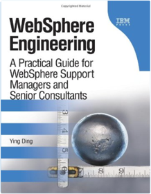
Code Generation in Microsoft .NET
Kathleen Dollard1590591372As I was running through a transformation that wouldn't do what I wanted, I remembered the rest of (Code Generation in Microsoft .NET) and 20 minutes later all was good in the world.— William Ryan, KnowDotNet.com Team Member
Code generation has the potential to revolutionize application development. Rather than handcrafting each piece of code, developers are increasingly turning to code generation based on templates and applications of business logic to automatically perform a variety of tasks. This book teaches the technical details of code generation in .NET through a coherent series of steps that will help you to incorporate code generation into your own development efforts.
Veteran author Kathleen Dollard teaches code generation as a scripted repeatable process using templates you control, so you're not tied to a particular framework or style. Because you can regenerate code at any time, you can incorporate changes, including database changes, throughout the life of your application. The templates are flexible and designed to work smoothly with the handcrafted code you'll use to customize your application. The underlying fundamentals are explained along with three specific techniques: outputting code to a stream, using the Code DOM, and using XSLT-based code generation.
In addition to the text, the tools in the book (downloadable in both VB .NET and C#) include a mechanism to extract information from SQL Server; a tool for editing and running code-generation scripts; a simple, flexible ORM tool that relates your database structure to your runtime class model; and a set of templates you can use as the starting point for your adventures in code generation.
Generating repetitive sections of code frees you to focus on the features that make your application unique. Code generation will turbo-charge your development cycles by offering speed, reusability, agility, and consistency. Go forth and generate!
Mastering the Model Shoot: Everything a Photographer Needs to Know Before, During, and After the Shoot
Frank Doorhof0321968166For the first time ever, world-famous photographer and fashion lighting instructor Frank Doorhof takes you behind the scenes to reveal every step of his model-photography workflow—the same workflow that has made him a hero to photographers around the world thanks to his practical, budget conscious, no-nonsense approach.In this groundbreaking book, Frank starts right at the beginning with how to find models, find great locations, work with backgrounds (you’ll be amazed at his tricks for creating stunning backgrounds for just a few bucks), and work by yourself or with a team (stylist, hair stylist, and makeup artist) to create an image that will get your photography noticed. Then, it’s on to an in-depth look at the lighting setups and looks that made Frank famous (complete with diagrams and detailed explanations).You’ll see how Frank lights his images (you’ll be shocked at how simple most of his lighting setups are and you’ll be able to create these same setups yourself), plus he covers the critical little stuff nobody else is talking about, including: how to calibrate your monitor (and why it’s so important); how to use a color target to nail your color every single time; and why (and how) to use a light meter to get consistent, reproducible lighting each and every shoot.
Frank also shares his own retouching techniques through step-by-step tutorials, and he takes you from start to finish through a number of different looks so you can see exactly how it’s done, and recreate these same looks yourself. If you’ve ever wished there was one book that covers it all, the whole process of photographing models from start to finish, not leaving anything out, then this is the book for you.
Apple Pro Training Series: OS X Lion Server Essentials: Using and Supporting OS X Lion Server
Arek Dreyer, Ben Greisler0321775082The only Apple-certified book on OS X Lion Server, this comprehensive reference takes support technicians and ardent Mac users deep inside this server operating system, covering everything from networking technologies to service administration, customizing users and groups, and more. Aligned to the learning objectives of the Apple Certified Technical Coordinator certification exam, the lessons in this self-paced volume serves as a perfect supplement to Apple’s own training class and a first-rate primer for computer support personnel who need to support and maintain OS X Lion Server as part of their jobs. Quizzes summarize and reinforce acquired knowledge.The Apple Pro Training Series serves as both a self-paced learning tool and the official curriculum for the OS X Lion and OS X Lion Server certification programs.
Craft & Vision
David duChemin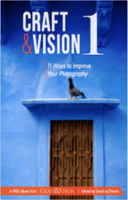
Craft & Vision II
David duCheminForget Mugshots
David duChemin
Vision is Better 3
David duChemin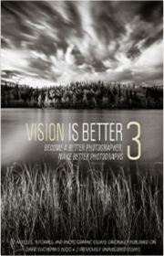
The Visual Toolbox
David duCheminWithin the Frame: The Journey of Photographic Vision
David duChemin0321605020Within the Frame is a book about finding and expressing your photographic vision, specifically where people, places, and cultures are concerned. A personal book full of real-world wisdom and incredible images, author David duChemin (of pixelatedimage.com) shows you both the how and the why of finding, chasing, and expressing your vision with a camera to your eye. Vision leads to passion, and passion is a cornerstone of great photography. With it, photographs draw the eye in and create an emotional experience. Without it, a photograph is often not worth—and can’t capture—a viewer’s attention.Both instructional and inspirational, Within the Frame helps you on your photographic journey to make better images of the places and people you love, whether they are around the world or in your own backyard. duChemin covers how to tell stories, and the technology and tools we have at our disposal in order to tell those narratives. Most importantly, he stresses the crucial theme of vision when it comes to photographing people, places, and cultures—and he helps you cultivate and find your own vision, and then fit it within the frame.
iPhone SDK Development
Bill Dudney, Christopher Adamson1934356255Packing the power of desktop applications into a small mobile device, the iPhone SDK offers developers the ability to create dynamic, visually-appealing, and highly-capable mobile applications, using the same APIs and tools that Apple uses for its own applications.However, harnessing that power means learning new tools, new APIs, and even a whole new programming language.
iPhone SDK Development is a Pragmatic guide to get you started developing applications for iPhone and iPod touch. With it, you'll get a complete understanding of the tools and techniques needed to succeed on the platform:
Use the XCode IDE to manage your source code, images, sounds, database files, and other application resources, building your app and deploying it onto your own device for testing.
Develop your user interface the visual, code-free way, with Interface Builder.
Master the iPhone's unique user interface components, including tables, tab bars, navigation bars, and the multi-touch interface.
Connect your iPhone to the outside world with networking, exploit the power of a relational database with SQLite, and rock out with first-class support for audio and video.
Make use of the iPhone's unique mobile APIs, like geolocation and the motion-sensing accelerometer
Use XCode's powerful performance and debugging tools to eliminate memory leaks, zombies, and other hazards.
* Understand the process for packaging your application for end-user distribution through Apple's App Store.
With explanations of the big picture and an eye to the little details that you'll need, iPhone SDK Development will help you succeed on today's most important mobile platform.
Continuous Integration: Improving Software Quality and Reducing Risk
Paul M. Duvall, Steve Matyas, Andrew Glover0321336380For any software developer who has spent days in “integration hell,” cobbling together myriad software components, Continuous Integration: Improving Software Quality and Reducing Risk illustrates how to transform integration from a necessary evil into an everyday part of the development process. The key, as the authors show, is to integrate regularly and often using continuous integration (CI) practices and techniques.The authors first examine the concept of CI and its practices from the ground up and then move on to explore other effective processes performed by CI systems, such as database integration, testing, inspection, deployment, and feedback. Through more than forty CI-related practices using application examples in different languages, readers learn that CI leads to more rapid software development, produces deployable software at every step in the development lifecycle, and reduces the time between defect introduction and detection, saving time and lowering costs. With successful implementation of CI, developers reduce risks and repetitive manual processes, and teams receive better project visibility.
The book covers How to make integration a “non-event” on your software development projectsHow to reduce the amount of repetitive processes you perform when building your softwarePractices and techniques for using CI effectively with your teamsReducing the risks of late defect discovery, low-quality software, lack of visibility, and lack of deployable softwareAssessments of different CI servers and related tools on the market
The book’s companion Web site, www.integratebutton.com, provides updates and code examples.
The Design of Sites: Patterns, Principles, and Processes for Crafting a Customer-Centered Web Experience
Douglas K. van Duyne, James A. Landay, Jason I. Hong020172149XMacromedia Flash MX Components Most Wanted: Ready Made Drag 'n' Drop Design Solutions
Friends of Ed, Aral Balkan, Paul Prudence, Todd Coulson, Jen deHaan1904344100Creating web designs and site content in Macromedia Flash MX can be a lot of fun, but there are always tasks that you'll want to do again and again. It's always a bit of a hassle to have to keep recreating and tweaking the same old content or functionality in different projects, so why can't you just reuse what you've created? With components, you can do just that!Flash MX Components enable the creation of self-contained design building blocks that can be simply dragged and dropped into any Flash movie. They are flexible enough to be easily customized to take care of many different tasks. No fuss, no bother - you can repurpose the standard elements of your design, application, or game, and use them over and over again.
But wait, it gets better! Components can be used by anyone, not just the person who created them. So in this book, we’ve done all the hard work for you and collected together the Most Wanted components that will make your life easier.
In this book (and on the CD) you’ll find a perfect combination of creative and functional components from some of today’s leading Flash designers and developers. Just look at the fantastic components you get:
- Event Calendar - David Doull
- Text Editor - Josh Dura
- XML News Ticker - Jon Steer
- Tool Tip - Brandon Williams
- Sketchpad - Steve Young
- Video Player - Jen DeHaan
- Image Scroller - Brian Monnone
- Pattern Generators - Paul Prudence
- TabControl - Jeremy Larkin
- Sliding Panel - Todd Marks
- ColorPicker - Jeremy Larkin
- Game Player Selector - Todd Coulson
- Particle Emitter - Jared Tarbell
- Layout Manager - Michael Montagna
- Data Grid - Daryn Nakhuda
- Movie Loader - Aral Balkan
- Image Modulators - Lifaros
- XML-to-ActionScript Converter - Mike Pearce
- Virtual 3D Trackball - James Palmer
- Text Animations - Todd Yard
- Dynamic Text Manager - Peter Elst
Each of these components is included on the accompanying CD, ready to incorporate within your designs, along with plenty of example files giving practical demonstrations of their use. On top of that, each chapter in this book presents a comprehensive designer-oriented guide that will help you to get the most out of using all of the featured components.
If you’re a Flash designer, of any ability from novice to professional, this book will increase the power of your Flash designs and enhance your project workflow – instantly!
Beginning Mac OS X Snow Leopard Server: From Solo Install to Enterprise Integration
Charles Edge, Chris Barker, Ehren Schwiebert1430227729This book is intended for those who need to get things done with Mac OS X Server 10.6. As such, you can use this book two ways. Those new to Mac OS X Server can read straight through the entire book, and by the end should feel competent to administer any Mac server thrown their way. For those with some knowledge of Mac OS X Server, or perhaps a thorough knowledge of other Unix-based servers, the book is arranged by tasks so that you can either start reading at any point, skipping material you already know, or pick and choose the chapters you’ll find most helpful to your own work or system needs. This task-oriented approach also makes the book useful as a general reference for all aspects of Mac OS X Server.Throughout the book, special emphasis is given to the new features of the latest release, Mac OS X Server 10.6, aka Snow Leopard Server. For instance, you’ll find out how to integrate an iPhone with Mac OS X Server using the new Mobile Access features, or how to install an SSL certificate in the web service, Apache. Task-oriented approach to server administration makes it easy to find and accomplish what needs to get doneThorough subject coverage including workflows for Mac OS X Snow Leopard Server GUI-level features, command-line features, and alternativesFeatures introductory material for new administrators, emphasis on new features for upgrading to Snow Leopard Server, and more advanced material for experienced IT and enterprise administrators who want to get the most out of Mac OS X Snow Leopard ServerWhat you’ll learn The key features of Mac OS X Server, including new services such as mobile access for iPhone integration and Address Book ServerThe most efficient approach to suit your working style, including GUI and command-line alternativesWhen to call on third-party products where no Apple products are availableIntegration strategies for a range of network and server configurationsHow to enable each required service and all of their services from start to finishWho is this book for?
This book is for administrators interested in a complete course on Mac OS X Snow Leopard Server, including first-time Mac OS X Server admins, admins upgrading from older versions, and experienced Unix or Mac admins who want to master all aspects of Apple’s newest Server software.
A Heartbreaking Work of Staggering Genius
Dave Eggers0375725784National Bestseller The literary sensation of the year, a book that redefines both family and narrative for the twenty-first century. A Heartbreaking Work of Staggering Genius is the moving memoir of a college senior who, in the space of five weeks, loses both of his parents to cancer and inherits his eight-year-old brother. Here is an exhilarating debut that manages to be simultaneously hilarious and wildly inventive as well as a deeply heartfelt story of the love that holds a family together.
A Heartbreaking Work of Staggering Genius is an instant classic that will be read in paperback for decades to come. The Vintage edition includes a new appendix by the author.
Java Swing, Second Edition
James Elliott, Robert Eckstein, Marc Loy, David Wood, Brian Cole0596004087Swing is a fully-featured user interface development kit for Java applications. Building on the foundations of the Abstract Window Toolkit (AWT), Swing enables cross-platform applications to use any of several pluggable look-and-feels. Swing developers can take advantage of its rich, flexible features and modular components, building elegant user interfaces with very little code.This second edition of Java Swing thoroughly covers all the features available in Java 2 SDK 1.3 and 1.4. More than simply a reference, this new edition takes a practical approach. It is a book by developers for developers, with hundreds of useful examples, from beginning level to advanced, covering every component available in Swing.
All these features mean that there's a lot to learn. Even setting aside its platform flexibility, Swing compares favorably with any widely available user interface toolkit—it has great depth. Swing makes it easy to do simple things but is powerful enough to create complex, intricate interfaces.
Java Swing, 2nd edition includes : A new chapter on Drag and DropAccessibility features for creating a user interface meeting the needs of all usersCoverage of the improved key binding infrastructure introduced in SDK 1.3A new chapter on JFormattedTextField and input validationMac OS X coverage and examplesCoverage of the improved focus system introduced in SDK 1.4Pluggable Look-and-Feel coverageCoverage of the new layout manager, SpringLayout, from SDK 1.4Properties tables that summarize important features of each componentCoverage of the 1.4 Spinner componentDetails about using HTML in componentsA new appendix listing bound actions for each componentA supporting web site with utilities, examples, and supplemental materialsWhether you're a seasoned Java developer or just trying to find out what Java can do, you'll find Java Swing, 2nd edition an indispensable guide.
Building Web Solutions with ASP.Net and ADO.NET
DINO ESPOSITO (WINTELLECT)0735615780Most Web applications follow a simple "3F" pattern: fetch, format, and forward data to the browser. With this in-depth guide, developers can take their Web design and programming skills to the next level to build more complex Web pages, applications, and services. The book demonstrates the advanced data-access capabilities of ADO.NET and the powerful page-creation capabilities of ASP.NET, plus how to employ code reusability, pagelets, code-behind, server-side controls, and other time-saving techniques.Three Great Plays of Euripides: Medea; Hippolytus; Helen
Euripides0452010403The Well-Grounded Java Developer: Vital techniques of Java 7 and polyglot programming
Benjamin J Evans, Martijn Verburg1617290068SummaryThe Well-Grounded Java Developer offers a fresh and practical look at new Java 7 features, new JVM languages, and the array of supporting technologies you need for the next generation of Java-based software. About the Book
The Well-Grounded Java Developer starts with thorough coverage of Java 7 features like try-with-resources and NIO.2. You'll then explore a cross-section of emerging JVM-based languages, including Groovy, Scala, and Clojure. You will find clear examples that are practical and that help you dig into dozens of valuable development techniques showcasing modern approaches to the dev process, concurrency, performance, and much more.
Written for readers familiar with Java. No experience with Java 7 or new JVM languages required.
Purchase of the print book comes with an offer of a free PDF, ePub, and Kindle eBook from Manning. Also available is all code from the book. What's InsideNew Java 7 featuresTutorials on Groovy, Scala, and ClojureDiscovering multicore processing and concurrencyFunctional programming with new JVM languagesModern approaches to testing, build, and CITable of ContentsPART 1 DEVELOPING WITH JAVA 7 Introducing Java 7New I/OPART 2 VITAL TECHNIQUES Dependency InjectionModern concurrencyClass files and bytecodeUnderstanding performance tuningPART 3 POLYGLOT PROGRAMMING ON THE JVM Alternative JVM languagesGroovy: Java's dynamic friendScala: powerful and conciseClojure: safer programmingPART 4 CRAFTING THE POLYGLOT PROJECT Test-driven developmentBuild and continuous integrationRapid web developmentStaying well-grounded
Domain-Driven Design: Tackling Complexity in the Heart of Software
Eric Evans0321125215Transactional COM+: Building Scalable Applications
Tim Ewald0201615940(Pearson Education) A text explaining how COM+ works and how to use the technology to its fullest potential. Examines the theory behind COM+, the nature of scalability, the importance of transactions, and why traditional object-oriented models are inappropriate for scalable systems. Softcover. DLC: Client/Server computing.Cryptography Engineering: Design Principles and Practical Applications
Niels Ferguson, Bruce Schneier, Tadayoshi Kohno0470474246The ultimate guide to cryptography, updated from an author team of the world's top cryptography experts.Cryptography is vital to keeping information safe, in an era when the formula to do so becomes more and more challenging. Written by a team of world-renowned cryptography experts, this essential guide is the definitive introduction to all major areas of cryptography: message security, key negotiation, and key management. You'll learn how to think like a cryptographer. You'll discover techniques for building cryptography into products from the start and you'll examine the many technical changes in the field.
After a basic overview of cryptography and what it means today, this indispensable resource covers such topics as block ciphers, block modes, hash functions, encryption modes, message authentication codes, implementation issues, negotiation protocols, and more. Helpful examples and hands-on exercises enhance your understanding of the multi-faceted field of cryptography. An author team of internationally recognized cryptography experts updates you on vital topics in the field of cryptographyShows you how to build cryptography into products from the startExamines updates and changes to cryptographyIncludes coverage on key servers, message security, authentication codes, new standards, block ciphers, message authentication codes, and more
Cryptography Engineering gets you up to speed in the ever-evolving field of cryptography.
Responsive Web Design by Example
Thoriq Firdaus1849695423Discover how you can easily create engaging, responsive websites with minimum hassle!OverviewRapidly develop and prototype responsive websites by utilizing powerful open source frameworksFocus less on the theory and more on results, with clear step-by-step instructions, previews, and examples to help you along the way.Learn how you can utilize three of the most powerful responsive frameworks available today: Bootstrap, Skeleton, and Zurb Foundation.
In Detail
Responsive web design is an explosive area of growth in modern web development due to the huge volume of different device sizes and resolutions that are now commercially available. You can now create your very own responsive website quickly and efficiently, allowing you to showcase your content in a format that will work on any device with an Internet browser.
By following our detailed step-by-step instructions in this structured reference guide, you will learn how you can build engaging responsive websites. With coverage of Bootstrap, Skeleton, and Zurb Foundation you'll learn about three of the most powerful responsive frameworks available today.
Leading you through by practical example, you'll find that this essential reference develops your understanding by actually helping you create beautiful websites step by step in front of your very eyes. After going over the basics, you'll be able to choose between creating your own responsive portfolio page with Skeleton, building a stunning product page with Bootstrap, or setting up your own professional business website with Zurb Foundation. Ultimately you'll learn how to decide which framework is right for you, and how you can deploy and customize it to your exact specifications!
What you will learn from this bookLearn how to decide which responsive framework is right for you.Harness the flexibility of Skeleton to create a truly unique portfolio.Use Bootstrap to almost effortlessly create a stunning product launch page.Create an online presence for your business that will work on any device with Zurb Foundation.Discover how you can leverage CSS to its full potential for refining your responsive websites.
Approach
Written as a concise yet practical guide with an explicit focus on showing beginners how to get their very own responsive websites up and running, this essential reference includes coverage of tried-and-tested responsive frameworks in a project-based format that simultaneously provides visible results whilst developing core understanding.
Who this book is written for
Ideal for anybody who wants their online presence to be compatible with devices and resolutions of any size, "Responsive Web Design by Example" shows you how to select the right framework for your own project requirements and then guides you through the process of installation, configuration, and customization. With three highly structured and meticulously designed projects to choose from, it is the ideal reference for both new and existing web developers who want to be able to augment their skills and showcase their content in a truly professional manner.
Java Examples in A Nutshell
David Flanagan1565923715Java Examples in a Nutshell is chock full of practical real-world Java programming examples that you can learn from and modify for your own use. From the author of the bestselling Java in a Nutshell, this companion book picks up where Java in a Nutshell leaves off, providing a suite of example programs for novice Java programmers and experts alike. Java Examples in a Nutshell contains all of the example programs from the first edition of Java in a Nutshell, completely updated for Java 1.1, and expands on the examples from the second edition that demonstrate the new features in Java 1.1. It also provides never-before- published programming examples for remote method invocation, database connectivity, and security — important elements of the Java Enterprise APIs. Finally, the book offers a glimpse of the features of "Swing," the set of new components that are part of the forthcoming Java Foundation Classes (JFC).Java in a Nutshell: A Desktop Quick Reference for Java Programmers (In a Nutshell (O'Reilly))
David Flanagan156592262XThe bestselling Java in a Nutshell has been updated to cover Java 1.1. If you're a Java programmer who is migrating to 1.1, this second edition contains everything you need to get up to speed on the new features of Java 1.1. Or if you are just now jumping on the Java bandwagon, Java in a Nutshell still has all of the features that have made it the Java book most often recommended on the Internet. An advanced introduction to Java for C and C++ programmers teaches you everything you need to know about the language, while the complete quick-reference contains descriptions of all of the classes in the Java 1.1 API, with the exception of the Enterprise APIs.Java in a Nutshell also fully describes the syntax of the Java language, making it the only quick reference that a Java programmer needs.
The second edition of Java in a Nutshell covers Version 1.1 of the Java Development Kit (JDK). It includes all of the material from the first edition, as well as the following updated information for Java 1.1: A detailed overview of all of the features in Java 1.1, both on a package-by-package basis and in terms of overall functionality.A comprehensive tutorial on "inner classes" that explains how to use all of the new types of inner classes: static member classes, member classes, local classes, and anonymous classes.Practical, real-world example programs that demonstrate the features in Java 1.1, including object serialization, the new AWT event handling model, internationalization, and a sample Java Bean.A complete quick reference for all of the classes, methods, and variables in the core Java 1.1 API. The quick-reference pages include indicators that make it easy to find the 1.1 material. In addition, cross-reference material is now provided directly on each reference page.
With the 1.1 release, Java has grown too large to fit in a single book, even in quick-reference form. Thus, we see the need to split Java in a Nutshell into multiple volumes. This volume, the "original" Java in a Nutshell, documents the most commonly used features of Java and is an indispensable reference for all Java programmers. We may publish a separate volume that will cover the Java "Enterprise APIs", which include the database connectivity, remote method invocation, and security features, as well as other forthcoming components, such as CORBA IDL support and the electronic commerce framework. And as other new Java APIs are developed and released, we may consider adding new volumes to the Java in a Nutshell series.
Take Control of BBEdit
Glenn FleishmanB007IJW3RYRead this 199-page ebook to learn how to: Set up BBEdit for maximum efficiency: Configure key standard and expert preferences for optimal usage.Sync BBEdit settings and support files between Macs using Dropbox.Create text factories that automate sequences of text processing commands.Create "clippings" of boilerplate text, complete with dynamic placeholders.Use Dropbox or a version control system to track versions of documents.Start work on the right track: Collect multiple resources—including files, folders, and URLs—into a single project window.Use BBEdit's many options for opening and saving files.Work with remote files via BBEdit's FTP/SFTP browser windows.Type faster, search better, and automate repetitive bits: Control BBEdit with keyboard shortcuts.Write faster with text completion of words, code snippets, HTML tags, and more.Clean up text with spurious tabs, incorrect case, gremlin characters, and more.Search for and replace text across multiple documents at once.Learn how to use grep pattern matching for powerful searches.Write in Markdown, and preview Markdown documents.Compare and collaborate effectively: Discover best practices for commenting and revision tracking.Compare multiple versions of documents.Run your Web site like a wizard: Create HTML and CSS files using BBEdit's effective, extensive markup tools.Preview dynamic pages locally with user-defined preview templates.Clean up old or badly coded Web pages.Build Web sites using templates and includes.Connect BBEdit to Fetch, Interarchy, or Transmit to edit remote files.Maintain Web sites in BBEdit using four different workflows.Extremely Loud and Incredibly Close (Movie Tie-In): A Novel
Jonathan Safran Foer0547735022New York Times bestsellerA Best Book of the Year
Los Angeles Times, Washington Post Book World, Chicago Tribune, St. Louis Post-Dispatch, Rocky Mountain News
“Energetic, inventive, and ambitious . . . an uplifting myth born of the sorrows of 9/11.” —Boston Globe
Jonathan Safran Foer emerged as one of the most original writers of his generation with his best-selling debut novel, Everything Is Illuminated. Now, with humor, tenderness, and awe, he confronts the traumas of our recent history.
Nine-year-old Oskar Schell has embarked on an urgent, secret mission that will take him through the five boroughs of New York. His goal is to find the lock that matches a mysterious key that belonged to his father, who died in the World Trade Center on the morning of September 11. This seemingly impossible task will bring Oskar into contact with survivors of all sorts on an exhilarating, affecting, often hilarious, and ultimately healing journey.
“Extremely Loud and Incredibly Close is a miracle, a daybreak, a man on the moon. It's so impeccably imagined, so courageously executed, so everlastingly moving and fine.” —Baltimore Sun
The Joy of Clojure: Thinking the Clojure Way
Michael Fogus, Chris Houser1935182641Clojure is a dynamic programming language that targets the Java Virtual Machine. The Joy of Clojure goes beyond the syntax, and shows how to write fluent, idiomatic Clojure code. Readers will learn to approach programming challenges from a Functional perspective and master the Lisp techniques that make Clojure so elegant and efficient.According to the authors, there's a "right way" to do things in Clojure. This book will help readers think about problems the "Clojure way," and recognize when they simply need to change the way they program. Not just another book about programming philosophy, The Joy of Clojure tackles hard software areas like concurrency, interoperability, performance, and more.
Color: A Photographer's Guide to Directing the Eye, Creating Visual Depth, and Conveying Emotion
Jerod Foster0321935284Color is powerful. It impacts our senses, pushes our emotions, and plays an essential role in creating an effective photograph. In this beautifully illustrated guide, author, educator, and pro photographer Jerod Foster helps you understand how color works—attracting attention, directing the eye, and working with other elements to make your own compelling photographs.This book approaches color from a photographer’s perspective with a mix of practical theory, technical information, and solid advice on how to apply these details in all genres of photography—landscapes, portraits, lifestyle, sports, or wildlife.
You will learn about: Color in the frame, including guiding the eye and composing with colorManipulating color with white balance, artificial lighting, and exposureCreating visual depth with complementary colors, dominant/recessive colors, and contrastThe meaning of color and how red, blue, green or purple can push emotionsConditions for shooting color and the best times of dayBest practices for handling color in post processing
Color is a core element of our visual language and photographers who understand and exploit color will harness its power and create lasting images.
Rails Recipes
Chad Fowler0977616606Rails is large, powerful, and new. How do you use it effectively? How do you harness the power? And, most important, how do you get high quality, real-world applications written?From the latest Ajax effects to time-saving automation tips for your development process, Rails Recipes will show you how the experts have already solved the problems you have. Use generators to automate repetitive coding tasks.Create sophisticated role-based authentication schemes.Add live search and live preview to your site.Run tests when anyone checks code in.How to create tagged data the right way.and many, many more...
Owning Rails Recipes is like having the best Rails programmers sitting next to you while you code.
Analysis Patterns: Reusable Object Models
Martin Fowler0201895420Martin Fowler is a consultant specializing in object-oriented analysis and design. This book presents and discusses a number of object models derived from various problem domains. All patterns and models presented have been derived from the author's own consulting work and are based on real business cases.Patterns of Enterprise Application Architecture
Martin Fowler0321127420Noted software engineering expert, Martin Fowler, turns his attention to enterprise application development. He helps professionals understand the complex—yet critical—aspects of architecture. Enables the reader to make proper choices when faced with a difficult design decision.Refactoring: Improving the Design of Existing Code
Martin Fowler, Kent Beck, John Brant, William Opdyke, Don Roberts0201485672As the application of object technology-particularly the Java programming language-has become commonplace, a new problem has emerged to confront the software development community. Significant numbers of poorly designed programs have been created by less-experienced developers, resulting in applications that are inefficient and hard to maintain and extend. Increasingly, software system professionals are discovering just how difficult it is to work with these inherited, "non-optimal" applications. For several years, expert-level object programmers have employed a growing collection of techniques to improve the structural integrity and performance of such existing software programs. Referred to as "refactoring," these practices have remained in the domain of experts because no attempt has been made to transcribe the lore into a form that all developers could use. . .until now. In Refactoring: Improving the Design of Existing Software, renowned object technology mentor Martin Fowler breaks new ground, demystifying these master practices and demonstrating how software practitioners can realize the significant benefits of this new process.With proper training a skilled system designer can take a bad design and rework it into well-designed, robust code. In this book, Martin Fowler shows you where opportunities for refactoring typically can be found, and how to go about reworking a bad design into a good one. Each refactoring step is simple-seemingly too simple to be worth doing. Refactoring may involve moving a field from one class to another, or pulling some code out of a method to turn it into its own method, or even pushing some code up or down a hierarchy. While these individual steps may seem elementary, the cumulative effect of such small changes can radically improve the design. Refactoring is a proven way to prevent software decay.
In addition to discussing the various techniques of refactoring, the author provides a detailed catalog of more than seventy proven refactorings with helpful pointers that teach you when to apply them; step-by-step instructions for applying each refactoring; and an example illustrating how the refactoring works. The illustrative examples are written in Java, but the ideas are applicable to any object-oriented programming language.
UML Distilled: A Brief Guide to the Standard Object Modeling Language
Martin Fowler, Kendall Scott020165783XProvides a guide designed for the professional programmer interested in improving the internal design of existing code. Softcover. DLC: Object-oriented methods (Computer science).Sports Photography: From Snapshots to Great Shots
Bill Frakes0321885708In Sports Photography: From Snapshots to Great Shots, author and sports photographer Bill Frakes shows you how to capture the key elements of sports photographs–motion and emotion, style and scene, place and purpose–whether you’re at a baseball tournament, a track meet, or a professional football game.Starting with the basics of equipment, camera settings, and exposure, Bill covers the fundamental techniques of sports photography–understanding lighting, handling composition and focus, and timing peak action. He explains how to choose a shooting position on the field of play, identify the defining moments away from the action, and learn the etiquette of covering live sporting events. He then breaks down the shooting processes of specific sports, outlining the challenges and demands of each and showing how to isolate individual athletes in action.
Beautifully illustrated with large, vibrant photos, this book teaches you how to take control of your photography to get the sports photo you want every time you pick up the camera.
Master the photographic basics of composition, focus, depth of field, and much moreGet tips on shooting with long and short lenses, learning when to use them and whyLearn key techniques for photographing various sports, including football, baseball, basketball, soccer, and moreFully grasp all the concepts and techniques as you go, with assignments at the end of every chapter
And once you’ve got the shot, show it off! Join the book’s Flickr group to share your photos and ideas for great sports shots at flickr.com/groups/sportsphotographyfromsnapshotstogreatshots.

Typographic Web Design: How to Think Like a Typographer in HTML and CSS
Laura Franz1119976871Learn how to use typography on the webTypography has long been an invaluable tool for communicating ideas and information. Words and characters once impressed in clay, written on papyrus, and printed with ink are now manifest in pixels of light. Today's web typographers can help their readers find, understand, and connect with the words, ideas, and information they seek.
Thus, legibility and readability are the foundations for the typographic theories and practice covered in Typographic Web Design. You'll learn how to choose fonts, organize information, create a system of hierarchy, work with tabular information, create a grid, apply a typographic system across multiple pages, and build a font library.
Each chapter provides time-tested typography rules to follow (modified for the web), explains why they work, when to break them, and offers the opportunity to test the rules with hands-on exercises in HTML and CSS. If you don't know HTML and CSS, Typographic Web Design provides a walk-through for each lesson, showing you how to plan and write syntax. Readers are sure to come away with an understanding of typographic principles, as well as the HTML and CSS skills needed to implement them on the web.
Typographic Web Design
•Applies decades of typographic theory and practice (e.g., how to choose a font) directly to web design (e.g., how to use the @font-face property in CSS).
•Clearly explains all typographic rules presented, providing examples that contrast successful and less successful typographic solutions.
•Is written for visual thinkers. The book is supported by a web site with solutions, critiques, and revisions for each lesson.
Laura Franz is an Associate Professor of Design at University of Massachusetts Dartmouth, where she has taught web typography for 12 years. She has presented lectures and workshops on Typographic Web Design, and has written a course on the topic for Lynda.com.
Fresh Flash: New Design Ideas with Macromedia Flash MX
Danny Franzreb, Jd Hooge, Ty Lettau, Lifaros, Keith Peters, Paul Prudence, Jared Tarbell, Brandon Williams1903450993So you think you've got to grips with the new features of Macromedia Flash MX?Welcome to this inspirations upgrade from friends of ED. Upgrade your thinking, upgrade your attitude, and upgrade your standards to take on board the host of exciting features incorporated into the latest version of Flash.
With this title we run the gamut of new features, from the Drawing API ("to die for"), through new Video compression, Scriptable Masks and Components. We explore the new territory with Experimental Interfaces, check out the improvements in the 3D arena, and quarry the backend technologies to see what gems we can turn up!
Some of the best designers in the Web community have concentrated their efforts on this project. This has resulted in the highest caliber of work, including an exclusive insight into the creation of Jim Armstrong's New York Flash Film Festival Final piece.
From the acclaimed team that brought you Flash Math Creativity comes this inspiring volume, full of brand new effects and discussion on what Flash MX is going to do for designers — and where we go from here.
Programming .NET Security
Adam Freeman, Allen Jones0596004427With the spread of web-enabled desktop clients and web-server based applications, developers can no longer afford to treat security as an afterthought. It's one topic, in fact, that .NET forces you to address, since Microsoft has placed security-related features at the core of the .NET Framework. Yet, because a developer's carelessness or lack of experience can still allow a program to be used in an unintended way, Programming .NET Security shows you how the various tools will help you write secure applications. The book works as both a comprehensive tutorial and reference to security issues for .NET application development, and contains numerous practical examples in both the C# and VB.NET languages. With Programming .NET Security, you will learn to apply sound security principles to your application designs, and to understand the concepts of identity, authentication and authorization and how they apply to .NET security.Head First Design Patterns
Elisabeth Freeman, Eric Freeman, Bert Bates, Kathy Sierra, Elisabeth Robson0596007124You're not alone.At any given moment, somewhere in the world someone struggles with the same software design problems you have. You know you don't want to reinvent the wheel (or worse, a flat tire), so you look to Design Patterns—the lessons learned by those who've faced the same problems. With Design Patterns, you get to take advantage of the best practices and experience of others, so that you can spend your time on...something else. Something more challenging. Something more complex. Something more fun.
You want to learn about the patterns that matter—why to use them, when to use them, how to use them (and when NOT to use them). But you don't just want to see how patterns look in a book, you want to know how they look "in the wild". In their native environment. In other words, in real world applications. You also want to learn how patterns are used in the Java API, and how to exploit Java's built-in pattern support in your own code.
You want to learn the real OO design principles and why everything your boss told you about inheritance might be wrong (and what to do instead). You want to learn how those principles will help the next time you're up a creek without a design pattern.
Most importantly, you want to learn the "secret language" of Design Patterns so that you can hold your own with your co-worker (and impress cocktail party guests) when he casually mentions his stunningly clever use of Command, Facade, Proxy, and Factory in between sips of a martini. You'll easily counter with your deep understanding of why Singleton isn't as simple as it sounds, how the Factory is so often misunderstood, or on the real relationship between Decorator, Facade and Adapter.
With Head First Design Patterns, you'll avoid the embarrassment of thinking Decorator is something from the "Trading Spaces" show. Best of all, in a way that won't put you to sleep! We think your time is too important (and too short) to spend it struggling with academic texts.
If you've read a Head First book, you know what to expect—a visually rich format designed for the way your brain works. Using the latest research in neurobiology, cognitive science, and learning theory, Head First Design Patterns will load patterns into your brain in a way that sticks. In a way that lets you put them to work immediately. In a way that makes you better at solving software design problems, and better at speaking the language of patterns with others on your team.
Michael Freeman's Perfect Exposure: The Professional's Guide to Capturing Perfect Digital Photographs
Michael Freeman0240811712Clear, direct and guaranteed, the perfect exposure method looks at the way professionals work, and lays out the decisions and sequences with absolute clarity, while incorporating the latest, powerful post-processing techniques. Chosing the exposure for a photograph is infinitely complex and one of photography's most absorbing paradoxes because it affects everything in the image and its effect on the viewer. Understanding how and why exposure works is essential, not only because it helps you to decide what is instinctively "right," but this book will give you confidence in that decision—an invaluable skill for every single photographer. Full of beautiful photographs taken by Michael Freeman, this book will arm you with the tools you need for perfect exposure of your photographs.Michael Freeman is the author of the global bestseller, The Photographer's Eye. Now published in sixteen languages, The Photographer's Eye continues to speak to photographers everywhere. Reaching 100,000 copies in print in the US alone, and 300,000+ worldwide, it shows how anyone can develop the ability to see and shoot great digital photographs.
The Photographer's Eye: Composition and Design for Better Digital Photos
Michael Freeman0240809343Design is the single most important factor in creating a successful photograph. The ability to see the potential for a strong picture and then organize the graphic elements into an effective, compelling composition has always been one of the key skills in making photographs.Digital photography has brought a new, exciting aspect to design - first because the instant feedback from a digital camera allows immediate appraisal and improvement; and second because image-editing tools make it possible to alter and enhance the design after the shutter has been pressed. This has had a profound effect on the way digital photographers take pictures.
Now published in sixteen languages, The Photographer's Eye continues to speak to photographers everywhere. Reaching 100,000 copies in print in the US alone, and 300,000+ worldwide, it shows how anyone can develop the ability to see and shoot great digital photographs. The book explores all the traditional approaches to composition and design, but crucially, it also addresses the new digital technique of shooting in the knowledge that a picture will later be edited, manipulated, or montaged to result in a final image that may be very different from the one seen in the viewfinder.
The A-Z of Creative Photography: Over 70 Techniques Explained in Full
Lee Frost0817433139For serious amateur photographers who alraedy shoot perfectly focused, accurately exposed images but want to be more creative with a camera, here's the book to consult.The Complete Guide to Night and Low-Light Photography
Lee Frost0817450416Aimed at photographers who pack away their cameras as soon as light levels fall, this brilliant book shows how, with just a little skill and imagination, even amateurs can produce breathtaking photographs in nighttime or low-light settings. The guide begins with a clear explanation of technical aspects that must be considered, such as the best equipment to use for low-light indoor or nighttime outdoor shots, which color and black-and-white films to choose, how to ensure correct exposure in tricky situations, and details relating to both natural and artificial light. The book then tackles a wide range of themes and lighting situations, presenting specific guidance for shooting low-light landscapes, portraits, buildings, carnivals, fireworks displays, and weather phenomena such as lightning, sunrises, and sunsets.Web GIS: Principles and Applications
Pinde Fu, Jiulin Sun158948245XThe Web has revealed the immense value and broad applicability of GIS, set the bar for today’s user expectations, and introduced flexible architectures for use with modern IT infrastructure. From basic architecture to new frontiers, Web GIS: Principles and Applications presents a thorough overview of the origins and developments in this emerging platform. New Web technologies addressed include: ArcGIS Server, REST services, JavaScript API/Flex API, and ArcGIS Mobile. This book offers a balance of principles, concepts, and techniques to provide you with an understanding of how Web GIS can revolutionize the way your GIS functions.Just My Type: A Book About Fonts
Simon Garfield1592407463A delightfully inquisitive tour that explores the rich history and the subtle powers of fonts.Fonts surround us every day, on street signs and buildings, on movie posters and books, and on just about every product that we buy. But where do fonts come from and why do we need so many? Who is behind the businesslike subtlety of Times New Roman, the cool detachment of Arial, or the maddening lightness of Comic Sans (and the movement to ban it)? Simon Garfield embarks on a mission to answer these questions and more, and reveal what may be the very best and worst fonts in the world.
Typefaces are now 560 years old, but we barely knew their names until about twenty years ago, when the pull-down font menus on our first computers made us all the gods of type. Beginning in the early days of Gutenberg and ending with the most adventurous digital fonts, Garfield unravels our age old obsession with the way our words look. Just My Type investigates a range of modern mysteries, including how Helvetica took over the world, what inspires the seemingly ubiquitous use of Trajan on bad movie posters, and what makes a font look presidential, male or female, American, British, German, or Jewish. From the typeface of Beatlemania to the graphic vision of the Obama campaign, fonts can signal a musical revolution or the rise of an American president. This book is a must-read for the design conscious that will forever change the way you look at the printed word.
SQL Pocket Guide
Jonathan Gennick0596005121This pocket guide presents the most crucial information about SQL in a compact and easily accessible format, covering the four commonly used SQL variants—Oracle, IBM DB2, Microsoft SQL Server, and MySQL. Topics include: Data manipulation statements (SELECT, DELETE, INSERT, UPDATE, MERGE) and transaction control statements (START TRANSACTION, SAVEPOINT, COMMIT, ROLLBACK).Common SQL functions (date, numeric, math, trigonometric, string, conversion, aggregate)Such topics as literals, NULLs, CASE expressions, datatype conversion, regular expressions, grouping and summarizing data, joining tables, and writing queries (hierarchical, recursive, union, flashback) and subqueries.Instead of presenting complex and confusing syntax diagrams, the book teaches by example, showing the SQL statements and options that readers are most like to use. All example data is available on the O'Reilly web site."If you need fast, accurate SQL information, with examples for multiple database engines, be sure to check out this book." —Chris Kempster, Senior DBA and author of SQL Server 2000 for the Oracle DBA, www.chriskempster.com
Professional ASP.NET 2.0 AJAX
Matt Gibbs, Dan Wahlin0470109629ASP.NET 2.0 AJAX is Microsoft's Ajax tool for ASP.NET developers and this book covers the ASP.NET 2.0 AJAX final release. You’ll learn how to use the ASP.NET 2.0 AJAX features in order to create richer, more responsive dynamic Web sites. The book walks you through examples for each featured element, demonstrating how the client and server interact to produce a better Web application, and reviews such topics as client framework, script manager control, networking stack, application services, partial page updates, control extenders, client form elements, and client behaviors.UNIX in a Nutshell: System V Edition: A Desktop Quick Reference for System V Release 4 and Solaris 2.0 (In a Nutshell (O'Reilly))
Daniel Gilly, O'Reilly Media Inc.1565920015You may have seen UNIX quick-reference guides, but you've never seen anything like UNIX in a Nutshell. Not a scaled-down quick reference of common commands, UNIX in a Nutshell is a complete reference containing all commands and options, along with generous descriptions and examples that put the commands in context. For all but the thorniest UNIX problems, this one reference should be all the documentation you need.The second edition of UNIX in a Nutshell starts with thorough coverage of System V Release 3. To that, we've added the many new commands that were added to Release 4 and additional commands that were added to Solaris 2.0.
Contents include: All user and programmer commands.New Korn shell documentation.Expanded text editing section, including GNU Emacs and nawk.Shell syntax (sh and csh).Pattern-matching syntax.vi and ex commands.sed and awk commands.troff and related commands and macros.sdb and dbx commands.
If you currently use either SVR3 or SVR4 or are planning to in the future, or if you're a Sun user facing the transition to Solaris, you'll want this book. UNIX in a Nutshell is the most comprehensive quickref on the market, a must for any UNIX user.
Blink: The Power of Thinking Without Thinking
Malcolm Gladwell0316010669In his landmark bestseller The Tipping Point, Malcolm Gladwell redefined how we understand the world around us. Now, in Blink, he revolutionizes the way we understand the world within.Blink is a book about how we think without thinking, about choices that seem to be made in an instant-in the blink of an eye-that actually aren't as simple as they seem. Why are some people brilliant decision makers, while others are consistently inept? Why do some people follow their instincts and win, while others end up stumbling into error? How do our brains really work-in the office, in the classroom, in the kitchen, and in the bedroom? And why are the best decisions often those that are impossible to explain to others?
In Blink we meet the psychologist who has learned to predict whether a marriage will last, based on a few minutes of observing a couple; the tennis coach who knows when a player will double-fault before the racket even makes contact with the ball; the antiquities experts who recognize a fake at a glance. Here, too, are great failures of "blink": the election of Warren Harding; "New Coke"; and the shooting of Amadou Diallo by police.
Blink reveals that great decision makers aren't those who process the most information or spend the most time deliberating, but those who have perfected the art of "thin-slicing"-filtering the very few factors that matter from an overwhelming number of variables.
Memoirs of a Geisha Uk
Arthur Golden0099771519This story is a rare and utterly engaging experience. It tells the extraordinary story of a geisha -summoning up a quarter century from 1929 to the post-war years of Japan's dramatic history, and opening a window into a half-hidden world of eroticism and enchantment, exploitation and degradation. A young peasant girl is sold as servant and apprentice to a renowned geisha house. She tells her story many years later from the Waldorf Astoria in New York. Her memoirs conjure up the perfection and the ugliness of life behind rice-paper screens, where young girls learn the arts of geisha - dancing and singing, how to wind the kimono, how to walk and pour tea, and how to beguile the land's most powerful men.Ontological Engineering: with examples from the areas of Knowledge Management, e-Commerce and the Semantic Web. First Edition
Asuncion Gomez-Perez, Oscar Corcho, Mariano Fernandez-Lopez1852335513Ontologies provide a common vocabulary of an area and define, with different levels of formality, the meaning of the terms and the relationships between them. Ontological engineering refers to the set of activities concerning the ontology development process, the ontology life cycle, the methods and methodologies for building ontologies, and the tool suites and languages that support them. During the last decade, increasing attention has been focused on ontologies. Ontologies are now widely used in knowledge engineering, artificial intelligence and computer science; in applications related to areas such as knowledge management, natural language processing, e-commerce, intelligent information integration, bio-informatics, education; and in new emerging fields like the semantic web. The book presents the major issues of ontological engineering and describes the most outstanding ontologies currently available. It covers the practical aspects of selecting and applying methodologies, languages, and tools for building ontologies. "Ontological Engineering" will be of great value to students and researchers, and to developers who want to integrate ontologies in their information systems.Mobile First Design with HTML5 and CSS3
Jason GonzalezB00FEFRG4YIn DetailThe mobile first design philosophy aims to develop websites that will be lean and fast on small screens without sacrificing a tablet or desktop experience. Using HTML5, CSS3, and simple, standardized modern web tools you can make one site to rule them all.
Mobile First Design with HTML5 and CSS3 will teach you the tools you need to make a modern, standards-based web page that displays beautifully on nearly any web browser—essential knowledge for anyone who makes websites!
In this book, you will learn how to set up a project from scratch and quickly get up and running with a full portfolio website that will form the base for making almost any kind of web page. Learn to develop web pages that fit the web conventions we all have to conform to. You will learn how to make responsive image slideshows; image galleries with detail pages; and bold, eye-catching banners and forms. Best of all, you will learn how to make these things fast without compromising quality.
This book will walk you through the process step by step with all the code required, as well as the thinking that goes behind planning a mobile first responsive website. Approach
A user friendly tutorial to develop websites that work for both small and large screens using HTML5 and CSS3. Who this book is for
This book is for beginner to intermediate developers and designers, as well as for those in management who want to understand what is possible with modern tools and strategies on the Web.
JavaScript & DHTML Cookbook
Danny Goodman0596004672On numerous online forums for JavaScript and DHTML, the majority of questions begin with "How do I...?" This new Cookbook provides the answers. After reading thousands of forum threads over the years, author and scripting pioneer Danny Goodman has compiled a list of problems that frequently vex scripters of various experience levels. He has now applied state-of-the-art ECMA and W3C DOM standards and used best practices to create this extensive collection of practical recipes that can bring your web pages to life. The recipes range from simple tasks, such as manipulating strings and validating dates in JavaScript, to entire libraries that demonstrate complex tasks, such as cross-browser positioning of HTML elements and sorting tables. This book is the ideal companion to O'Reilly's JavaScript: The Definitive Guide and Dynamic HTML: The Definitive Reference. If you own either of these books, the JavaScript & DHTML Cookbook is a must.Web ReDesign: Workflow that Works
Kelly Goto, Emily Cotler0735710627The book follows a road tested experiential methodology to expose the critical steps to planning, budgeting, organizing, and managing a web design or redesign project from conceptualization through launch. The authors use a sound pedagogical style that is appealing; easy to access; and full of forms, checklists, and worksheets to assist readers in working through their own projects. The page design will allow for easy browsing of material. In addition, the intuitive organization will make it easy for readers to find the material they need. See the attached table of contents.
A wine tasting course: The practical way to know and enjoy wine
John Gottfried0679514511Video Nation: A DIY guide to planning, shooting, and sharing great video from USA Today's Talking Tech host
Jefferson Graham0321832876A DIY guide to planning, shooting, and sharing great video from USA Today Talking Tech hostAll kinds of people are creating video for the web: bloggers, small business owners, web show hosts, and corporate marketing departments, to name just a few. How do the best videos get made and go viral? What secrets lie behind them? In Video Nation you’ll learn everything you need to make great-looking video for YouTube, Facebook or your blog—from one of the top experts around!
Jefferson Graham, host of USA Today’s Talking Tech and Talking Your Tech, takes you skillfully through the art of video creation and distribution. And you’ll have a lot of fun along the way. You’ll learn what equipment you need to get started—from bare bones to wish list state-of-the-art great. You’ll get the skinny on sound and lighting. You’ll learn how to properly set up for and shoot an interview. You’ll even get to take your video to the next level by using multiple cameras as they do on TV.
You’ll also find 30 downloadable video lessons so you see the concepts from the book in action, including how to make a great video on an iPhone, lighting techniques, simple editing techniques, and much more. To access the videos go to www.peachpit.com/videonation and click "register your product."
Here are just a few things you’ll find in Video Nation:
tips on developing fresh new ways to promote your business or yourselfa guide to the tools available for a “one-man band” production, including advice on shooting with DSLRs, point-and-shoot cameras, and iPhonesbest techniques for setting up, preparing questions for, and interviewing a subject from a video producer who has interviewed everyone from comedian Jeff Dunham and the late Steve Jobs to Kermit the Frogdetailed descriptions of working with sound and lighting for a variety of indoor and outdoor scenariosstep-by-step coverage of using editing programs such as Apple iMovie, Adobe Premiere Elements, and Final Cut Pro Xa guide to uploading your video to YouTube, create a channel, market your video with Twitter and Facebook, and earn thousands of dollars a year from your efforts via the YouTube Partner programand much more!
Patterns in Java, Volume 1, A Catalog of Reusable Design Patterns Illustrated with UML
Mark Grand0471258393"This is the best book on patterns since the Gang of Four's Design Patterns. The book manages to be a resource for three of the most important trends in professional programming: Patterns, Java, and UML."—Larry O'Brien, Founding Editor, Software Development Magazine
Since the release of Design Patterns in 1994, patterns have become one of the most important new technologies contributing to software design and development. In this volume Mark Grand presents 41 design patterns that help you create more elegant and reusable designs. He revisits the 23 "Gang of Four" design patterns from the perspective of a Java programmer and introduces many new patterns specifically for Java. Each pattern comes with the complete Java source code and is diagrammed using UML.
Patterns in Java, Volume 1 gives you: 11 Behavioral Patterns, 9 Structural Patterns, 7 Concurrency Patterns, 6 Creational Patterns, 5 Fundamental Design Patterns, and 3 Partitioning PatternsReal-world case studies that illustrate when and how to use the patternsIntroduction to UML with examples that demonstrate how to express patterns using UML
The CD-ROM contains: Java source code for the 41 design patternsTrial versions of Together/J Whiteboard Edition from Object International (www.togetherj.com); Rational Rose 98 from Rational Software (www.rational.com); System Architect from Popkin Software (www.popkin.com); and OptimizeIt from Intuitive Systems, Inc.
Econometric Analysis
William H. Greene0023466022How to Talk to Girls
Alec GrevenB001NLKZYQAre you smart enough to take over a girl's heart?Leave it to a nine-year-old to get down to the basics about how to win victory with a girl. How to talk to girls is for boys of all ages—from eight to eighty—and the girls they like. So read this book and then you're ready. Good luck!
Tips:
Comb your hair and don't wear sweats
Control your hyperness (cut down on the sugar if you have to)
Don't act desperate
Photoshop CS2 Workflow: The Digital Photographer's Guide
Tim Grey0782143962This highly anticipated full-color book from best-selling author Tim Grey is the first workflow-oriented guide to Photoshop. If you're a digital photographer interested in maximizing the quality of your images using Photoshop or Photoshop Elements, here is your definitive guide to image optimization. Emphasizing the processes for making images as good as they can be, topics covered in this book include: sorting images, RAW conversion, basic adjustments and cleanup, advanced adjustments, automation, and output processing. An accompanying website provides you with images from the book.Photographic Composition
Tom Grill, Mark Scanlon0817454276Effective image design, a key ingredient in successful photographs, is a skill that any serious photographer must learn and master. In Photographic Composition, award-winning photographers Tom Grill and Mark Scanlon demonstrate a modern, clear, and easily understandable approach to composing great photographs. Combining straightforward text with instructive yet compelling images, they succeed in making composition not only learnable but enjoyable. This book can help all photographers gain more control over the design and productionof their pictures.The Iraq Study Group Report: The Way Forward - A New Approach
The Iraq Study Group, James A. Baker III, Lee H. Hamilton0307386562On March 15, 2006, members from both parties in Congress supported the creation of the bipartisan Iraq Study Group to review the situation on the ground and propose strategies for the way forward. For more than eight months, the Study Group met with military officers, regional experts, academics, journalists, and high-level government officials from America and abroad. Participants included George W. Bush and members of his cabinet; Bill Clinton; Jalal Talabani; Nouri Kamal al-Maliki; Generals John Abizaid, George Casey, and Anthony Zinni; Colin Powell; Thomas Friedman; George Packer; and many others. This official edition contains the Group’s findings and proposals for improving security, strengthening the new government, rebuilding the economy and infrastructure, and maintaining stability in the region. It is a highly anticipated and essential step forward for Iraq, America, and the world.Writers Reference Edition
Diana Hacker0312052545A Writer's Reference, Second Edition, is adapted from Diana Hacker's The Bedford Handbook For Writers. It retains but streamlines the reference chapters of the handbook while eliminating much of the rhetorical material and all of the exercises. A Writer's Reference has been carefully designed to save you time. The book lies flat making it easy to consult while you are revising and editing a draft. And the book's ten section dividers will lead you - inmost cases very quickly - to the information you need.Object-Oriented Programming with ActionScript
Branden Hall, Samuel Wan0735711836Object-Oriented Programming with ActionScript takes you beyond the level of "neat" code tricks and teaches you how to architect and implement true Macromedia Flash MX applications. You will also learn the programming theory needed to take full advantage of the object-oriented nature of ActionScript.Nearly a third of the book is focused on teaching you everything there is to know about one of the most powerful new features of Flash MX:components. The topics range from understanding and using components, to constructing custom components. This book also recognizes the uniqueness of ActionScript and clarifies because the best practices when it comes to developing with it. The final third of this book teaches you the best methods for working with advanced-level ActionScript-from debugging data structures to server-side interaction.
Osgi in Action: Creating Modular Applications in Java
Richard Hall, Karl Pauls, Stuart McCulloch, David Savage1933988916What is OSGi? Simply put, OSGi is a standardized technology that allows developers to create the highly modular Java applications that are required for enterprise development. OSGi lets you install, start, stop, update, or uninstall components without taking down your entire system. The interest in OSGibased applications has exploded since major vendors like Sun, Spring, Oracle, BEA, and IBM have gotten behind the standard.OSGi in Action is a comprehensive guide to OSGi with two primary goals. First, it provides a clear introduction to OSGi concepts with examples that are relevant both for architects and developers. Then, it explores numerous practical scenarios and techniques, answering questions like: How much of OSGi do you actually need? How do you embed OSGi inside other containers? What are the best practices for moving legacy systems to OSGi?
Programming Clojure
Stuart Halloway1934356336Clojure is a dynamic language for the Java Virtual Machine, with a compelling combination of features:Clojure is elegant. Clojure's clean, careful design lets you write programs that get right to the essence of a problem, without a lot of clutter and ceremony.
Clojure is Lisp reloaded. Clojure has the power inherent in Lisp, but is not constrained by the history of Lisp.
Clojure is a functional language. Data structures are immutable, and functions tend to be side-effect free. This makes it easier to write correct programs, and to compose large programs from smaller ones.
Clojure is concurrent. Rather than error-prone locking, Clojure provides software transactional memory.
Clojure embraces Java. Calling from Clojure to Java is direct, and goes through no translation layer.
Clojure is fast. Wherever you need it, you can get the exact same performance that you could get from hand-written Java code.
Many other languages offer some of these features, but the combination of them all makes Clojure sparkle. Programming Clojure shows you why these features are so important, and how you can use Clojure to build powerful programs quickly.
C++ Standard Library From Scratch
Pablo Halpern0789721287C++ Standard Library From Scratch walks you through the analysis, design and implementation of a functioning personal information manager (PIM) using strings, streams, and the Standard Template Library. You will learn all the critical programming concepts and techniques associated with the Standard Library in the context of creating a working application, the "TinyPIM" address and calendar application. Every example builds the application throughout the book. In the end, you will have created an application that allows you to track contacts, sort addresses, and enter events and appointments.Apple Motion 5 Cookbook
Nick HarauzB00D12X9ZMIn DetailLet’s face it, people like images that move. Whether you see images on a moving billboard, walk into a bank with an LCD screen, watch TV, or surf the Web, motion graphics are everywhere. With an even greater demand to integrate motion graphics in just about every type of video or interactive content there is, this book will help you get there with Motion 5. It's all about creating eye-catching titles, transitions, and effects!
"Apple Motion 5 Cookbook" contains exercises for the beginner and seasoned motion graphics user. You will learn how to navigate Motion’s interface and quickly grasp the tools available to you while creating sophisticated and sleek animations in both 2D and 3D environments. Not forgetting visual effects, we will also explore motion tracking and green screen techniques that will help you composite like a pro. Let’s launch the application, grab a cup of coffee, and get started on this exciting journey!
The exercises will take you right from creating your very first Motion project through to export. You will learn how to navigate quickly and efficiently through Motion's complex interface and toolsets so that you can focus oncreating your masterpiece!
You will learn how to create a new project and import material into that project from the File Browser and Motion’s vast and rich content library. From there, you will learn to manipulate and animate these source files using Motion's behaviors, classic keyframing techniques, adding filters, and master the built-in tools such as particle systems that will knock your socks off! Last but not least, you will export your projects to a variety of different formats including DVD, as a Final Cut Pro generator, and the Web.
The "Apple Motion 5 Cookbook" contains downloadable content for each chapter and is packed with screenshots and illustrations. After reading this book, you’ll be creating motion graphics and visual effects in no time!
Approach
Step-by-step, practical recipes to build simple and complex motion graphics with Motion 5
Who this book is for
"Apple Motion 5 Cookbook" is designed for Final Cut Pro X video editors and Motion 5 users looking to gain more knowledge of how Motion works, and to get more of a ‘WOW’ factor in projects. It’s also aimed at designers and motion designers alike, who are looking to build on their skillsets.
From Still to Motion: Editing DSLR Video with Final Cut Pro X
Richard Harrington, Abba Shapiro, Robbie Carman0321811259Final Cut Pro X has been lauded as the tool for a new paradigm of editing film and video, with an ease of use that opens the door for millions of new users. Many of these new users consist of event videographers, video journalists, digital photographers, and producers/directors who are using DSLR cameras and don’t necessarily edit full-time but expect professional results that can’t be achieved using more consumer-type products such as iMovie. In a unique and targeted guide, the authors of the best-selling book on DSLR filmmaking — From Still to Motion: A Photographer’s Guide to Creating Video with Your DSLR – teach users of all levels how to use Final Cut Pro X for DSLR video. In it, they take a hands-on approach and explain within the context of a documentary-style project how to approach editing with this groundbreaking new version of Final Cut. Topics include importing and organizing footage, synching and interpreting footage, fixing and enhancing footage, basic and advanced editing techniques, color correcting, working with audio, and exporting and sharing footage.
This book is the only one to explore DSLR video editing with Final Cut Pro X and is designed to get users up-and-running right away with streamlined workflows specific to their needs.
The New Manual of Photography
John Hedgecoe0789496372The most up-to-date, comprehensive, and practical guide to the art of good photography, this book teaches every skill a photographer needs to take great pictures, from the most basic to the most advanced. Authoritative and easy-to-understand, John Hedgecoe's New Manual of Photography features practical advice on every element of the photographic process, from how to choose the right equipment and specialist techniques to inspirational guidance on the art of creative composition.Workbook of Photo Techniques
John Hedgecoe024080323XThe Workbook of Photo Techniques is a step-by-step guide to creating imaginative and unique photographs. Packed with hints and tricks, the book is an authoritative resource for using your camera equipment to its best advantage.Full of hints on how to take successful and imaginative pictures.
Highly illustrated with color throughout.
Techniques for all types of photography.
Intrusions
Ursula Hegi0684844818Brilliantly stretching literary conventions, Ursula Hegi, author of the best-selling Stones from the River, creates a funny and original novel within a novel to explore the doubts, decisions, and "might-have-beens" that mark not only the writing process but life itself. As her "author" and her fictional heroine deal with their intrusions into each other's lives, Hegi reveals much about the choices women make, the ambiguities they face, and the often surprising ways reality and fiction merge.Stones from the River
Ursula Hegi068484477XStones from the River is a daring, dramatic and complex novel of life in Germany. It is set in Burgdorf, a small fictional German town, between 1915 and 1951. The protagonist is Trudi Montag, a Zwerg — the German word for dwarf woman. As a dwarf she is set apart, the outsider whose physical "otherness" has a corollary in her refusal to be a part of Burgdorf's silent complicity during and after World War II. Trudi establishes her status and power, not through beauty, marriage, or motherhood, but rather as the town's librarian and relentless collector of stories.Through Trudi's unblinking eyes, we witness the growing impact of Nazism on the ordinary townsfolk of Burgdorf as they are thrust on to a larger moral stage and forced to make choices that will forever mark their lives. Stones from the River is a story of secrets, parceled out masterfully by Trudi — and by Ursula Hegi — as they reveal the truth about living through unspeakable times.
Gregory Heisler: 50 Portraits: Stories and Techniques from a Photographer's Photographer
Gregory Heisler0823085651In this first-ever showcase of his work, Gregory Heisler, one of professional photography's most respected practitioners, shares 50 iconic portraits of celebrities, athletes, and world leaders, along with fascinating, thoughtful, often humorous stories about how the images were made. From his famously controversial portrait of President George H.W. Bush (which led to the revocation of Heisler’s White House clearance) to his evocative post-9/11 Time magazine cover of Rudolph Giuliani, to stunning portraits of Julia Roberts, Denzel Washington, Hillary Clinton, Michael Phelps, Muhammad Ali, and many more, Heisler reveals the creative and technical processes that led to each frame. For Heisler’s fans and all lovers of photography, Gregory Heisler: 50 Portraits offers not only a gorgeous collection of both black-and-white and color portraits, but an engrossing look at the rarely seen art of a master photographer at work. With a foreword by New York City mayor Michael R. Bloomberg.The Complete Short Stories Of Ernest Hemingway: The Finca Vigia Edition
Ernest HemingwayB00120954ETHE ONLY COMPLETE COLLECTION BY THE NOBEL PRIZE-WINNING AUTHORIn this definitive collection of Ernest Hemingway's short stories, readers will delight in the author's most beloved classics such as "The Snows of Kilimanjaro," "Hills Like White Elephants," and "A Clean, Well-Lighted Place," and will discover seven new tales published for the first time in this collection. For Hemingway fans The Complete Short Stories is an invaluable treasury.
For Whom the Bell Tolls
Ernest Hemingway0684803356In 1937 Ernest Hemingway traveled to Spain to cover the civil war there for the North American Newspaper Alliance. Three years later he completed the greatest novel to emerge from "the good fight," For Whom the Bell Tolls. The story of Robert Jordan, a young American in the International Brigades attached to an antifascist guerilla unit in the mountains of Spain, it tells of loyalty and courage, love and defeat, and the tragic death of an ideal. In his portrayal of Jordan's love for the beautiful Maria and his superb account of El Sordo's last stand, in his brilliant travesty of La Pasionaria and his unwillingness to believe in blind faith, Hemingway surpasses his achievement in The Sun Also Rises and A Farewell to Arms to create a work at once rare and beautiful, strong and brutal, compassionate, moving, and wise. "If the function of a writer is to reveal reality," Maxwell Perkins wrote Hemingway after reading the manuscript, "no one ever so completely performed it." Greater in power, broader in scope, and more intensely emotional than any of the author's previous works, it stands as one of the best war novels of all time.Photographing Fireworks: The Right Gear, Location, and Techniques for Capturing Beautiful Images
Alan HessComputer Graphics Using Open GL
Francis S. Hill0023548568Combines the principles and major techniques in computer graphics with state-of-the-art examples that relate to things students and professionals see every day on the Internet and in computer-generated movies. DLC: Computer graphics.Advanced SharePoint Services Solutions
Scot P. Hillier1590594568Right out of the gate, (Scot Hillier) describes CAML in great detail. Very nice.— Paul Schaeflein, schaeflein. Judging from the TOC, I have a feeling that it's definitely a worthy addition to our arsenal of SharePoint references. Now this is the book I've been waiting for.
— Eli Robillard, CDI Education
Whether or not you've already benefited from Scot P. Hillier's first renowned Apress book, Microsoft SharePoint: Building Office 2003 Solutions, this fantastic follow-up is sure to please! This book will cover advanced techniques for programming web parts and SharePoint Services.
Hillier also covers advanced integration techniques with related products like BizTalk Server 2004 and Content Server. Intended for you advanced developers who already know all of the basic SharePoint Services, this book will steer you to solve ultra-specific, advanced problems.
C# 3.0 Cookbook
Jay Hilyard, Stephen Teilhet059651610XCompletely updated for C# 3.0 and the .NET 3.5 platform, the new edition of this bestseller offers more than 250 code recipes to common and not-so-common problems that C# programmers face every day. Every recipe in the book has been reconsidered with more than a third of them rewritten to take advantage of new C# 3.0 features. If you prefer solutions you can use today to general C# language instruction, and quick answers to theory, this is your book. C# 3.0 Cookbook offers a new chapter on LINQ (language integrated query), plus two expanded chapters for recipes for extension methods, lambda functions, object initializers, new synchronization primitives and more. The new edition is also complemented by a public wiki, which not only includes all of the C# 2.0 recipes from the previous edition unchanged by the release of C# 3.0, but invites you to suggest better ways to solve those tasks. Here are some of topics covered: LINQ Numeric data types and Enumerations Strings and characters Classes and structures Generics Collections Exception handling Delegates, events, and lambda expressions Filesystem interactions Web site access XML usage (including LINQ to XML, XPath and XSLT) Networking Threading Data Structures & Algorithms Each recipe in the book includes tested code that you can download from oreilly.com and reuse in your own applications, and each one includes a detailed discussion of how and why the underling technology works. You don't have to be an experienced C# or .NET developer to use C# 3.0 Cookbook. You just have to be someone who wants to solve a problem now, without having to learn all the related theory first.Focus On Apple Aperture: Focus on the Fundamentals
Corey Hilz0240815130Are you into photography not photomanipulation?Frustrated that you are spending too much time in front of the screen and not enough behind the lens?
Feel like you are not getting the most out of the powerful processing functions of Apple Aperture? This straightforward, inspiring guide is aimed at photographers whose goal is to use the software to bring out the best in their photographs. Professional photographer and educator Corey Hilz leads you through a highly effective, professional's workflow with Aperture, from importing your photos from your camera and making image adjustments, to labelling each photo with metadata and keywords for effective organization and searching, and finally outputting your images for print or social media. He focuses on the vital aspects for photographers such as correcting tone and color, targeted adjustments, metadata, and managing a fast expanding library. Focus On Apple Aperture is packed with stunning photographs and screenshots to illustrate every tweak the author makes, to effortlessly teach the new or beginning user the fundamentals of the software. Users of all versions of Aperture will benefit from this book.
* No-nonsense end-to-end professional Aperture workflow for photographers who want to spend more time behind the lens, and less in front of a screen * Unique approach tailored specifically for traditional 'realistic' photography in the digital age, tells the busy photographer exactly what they need to know to get the best from their photos * Clear format with emphasis on the visual aspect throughout, in a handy, affordable, guide
How to Build a Cathedral
Malcolm Hislop143513964XOverview Gothic cathedrals are astonishing feats of construction and engineering, from a period before steel frames and machine tools, breathtaking in their scale and grandeur even hundreds of years after these historic symbols of the Christian faith were built. Focusing on the golden age of cathedral construction, How to Build a Cathedral looks at each element of the structure in turn, from the ground plan to the topping out of the spire, and explains the medieval building process in detail. With text by a leading architectural historian, and sidebars telling the stories of the men behind the stones, this information-packed volume is an illuminating portrait of the genius of the medieval architect. # Explores and explains the building of these masterpieces from the ground plan to raising the spire.Centos 6 Linux Server Cookbook
Jonathan Hobson1849519021Microsoft SharePoint 2007 Development Unleashed
Kevin Hoffman, Robert Foster0672329034This is the most comprehensive, practical guide to building enterpriseclass applications with SharePoint 2007, ASP.NET 2.0, Visual C# 2005, and the Microsoft Office 2007 system. Microsoft SharePoint 2007 Development Unleashed is designed for every working .NET developer: both those with SharePoint experience and those new to SharePoint. The authors thoroughly introduce SharePoint 2007 as a development platform and offer in-depth, example-rich coverage of every significant tool for programmers—from “Features and Solutions” to list events, from user profiles to Web Parts. You’ll walk step-by-step through building each major type of SharePoint application. You’ll also find in-depth coverage of SharePoint 2007’s rich collection of built-in Web services, including services for building document workspaces, centralizing the management of Excel spreadsheets, ensuring security, and much more.Detailed information on how to… Use CAML, SharePoint’s XML-based language for defining content, manipulating searches, and more Work with the SharePoint Object Model Build reusable packages for easy deployment to SharePoint server farms Program SharePoint webs, sites, document libraries, and files Leverage SharePoint 2007’s improved lists and new list events Manipulate and query meetings and Meeting Workspaces Integrate external business data into SharePoint applications Construct business workflows for enterprise content management and other applications Program ASP.NET-based SharePoint Web Parts, from the basics to state-of-the-art techniques Create Web Parts that can provide and consume data through connections Use SharePoint 2007’s built-in Web services for managing document and Meeting Workspaces, imaging, and lists Centralize spreadsheet storage and management with Excel Services Manage user profiles and enhance application security Debug and deploy SharePoint 2007 applications Work with Records Repositories and metadata
Introduction 1
1 Collaborative Application Markup Language (CAML) Primer 5
Part I Programming with the SharePoint Object Model
2 Introduction to the SharePoint Object Model 15
3 Programming with Features and Solutions 25
4 Working with Sites and Webs 35
5 Managing SharePoint Lists 47
6 Advanced List Management 59
7 Handling List Events 69
8 Working with Document Libraries and Files 83
9 Working with Meetings 97
Part II Enterprise Content Management
10 Integrating Business Data 109
11 Creating Business Data Applications 121
12 Working with User Profiles 135
13 Building Workflows 147
Part III Programming SharePoint Web Parts
14 ASP.NET Server Control Primer 163
15 Introduction to Web Parts 173
16 Developing Full-Featured Web Parts 191
17 Building Web Parts for Maintaining SharePoint 2007 Lists 205
18 Building Connected Web Parts 217
19 Debugging and Deploying Web Parts 229
Part IV Programming the SharePoint 2007 Web Services
20 Using the Document Workspace Web Service 241
21 Using the Imaging Web Service 255
22 Using the Lists Web Service 273
23 Using the Meeting Workspace Web Service 291
24 Working with User Profiles and Security 307
25 Using Excel Services 321
26 Working with the Web Part Pages Web Service 337
27 Using the Business Data Catalog Web Services 347
28 Using the Workflow Web Service 359
29 Working with Records Repositories 369
30 Additional Web Services 377
Index 387
HTML5 and CSS3: Develop with Tomorrow's Standards Today
Brian P. Hogan1934356689HTML5 and CSS3 are the future of web development, but you don't have to wait to start using them. Even though the specification is still in development, many modern browsers and mobile devices already support HTML5 and CSS3. This book gets you up to speed on the new HTML5 elements and CSS3 features you can use right now, and backwards compatible solutions ensure that you don't leave users of older browsers behind.This book gets you started working with many useful new features of HTML5 and CSS3 right away. Gone are the days of adding additional markup just to style a button differently or stripe tables. You'll learn to use HTML5's new markup to create better structure for your content and better interfaces for your forms, resulting in cleaner, easier-to-read code that can be understood by both humans and programs.
You'll find out how to embed audio, video, and vector graphics into your pages without using Flash. You'll see how web sockets, client-side storage, offline caching, and cross-document messaging can ease the pain of modern web development. And you'll discover how simple CSS3 makes it to style sections of your page. Throughout the book, you'll learn how to compensate for situations where your users can't take advantage of HTML5 and CSS3 yet, developing solutions that are backwards compatible and accessible.
You'll find what you need quickly with this book's modular structure, and get hands-on with a tutorial project for each new HTML5 and CSS3 feature covered. "Falling Back" sections show you how to create solutions for older browsers, and "The Future" sections at the end of each chapter get you excited about the possibilities when HTML5 and CSS3 reach widespread adoption. Get ready for the future—-in fact, it's here already.
Web Development Recipes
Brian P. Hogan, Chris Warren, Mike Weber, Chris Johnson, Aaron Godin1934356832You'll see a full spectrum of cutting-edge web development techniques, from UI and eye candy recipes to solutions for data analysis, testing, and web hosting.Make buttons and content stand out with simple cross-browser styles; do animations that work on mobile devices without plugins; build and test HTML emails; and build a flexible layout that works on desktops and mobile devices. You'll use the Backbone and Knockout JavaScript frameworks to build responsive user interfaces, and you'll learn how tools like CoffeeScript and Sass offer better ways to develop and maintain your client-side code. You'll write tests for your code that run in multiple web browsers, use Git to keep track of your work, and even get a little one-on-one time with the Apache web server.
Whether you're new to front-end development, or you've got a few years of experience, you'll become a more versatile developer by finding out how—and why—to use these solutions in your next web development project.
What You Need:
Your favorite text editor, Mozilla Firefox 3.5 or higher, Google Chrome or Safari, and a working knowledge of HTML and JavaScript.
Beyond Software Architecture: Creating and Sustaining Winning Solutions
Luke Hohmann0201775948Provides the software engineering community with a clearer understanding of the business value of software architecture. Helps technologists grasp the business ramifications of their decisions, and provides business-oriented software professionals with better knowledge of how robust software can be built and maintained. Softcover.Core Java
Cay S. Horstmann, Gary Cornell0132354764This revised edition of the classic Core Java™, Volume I–Fundamentals, is the definitive guide to Java for serious programmers who want to put Java to work on real projects.Fully updated for the new Java SE 6 platform, this no-nonsense tutorial and reliable reference illuminates the most important language and library features with thoroughly tested real-world examples. The example programs have been carefully crafted to be easy to understand as well as useful in practice, so you can rely on them as an outstanding starting point for your own code.
Volume I is designed to quickly bring you up to speed on what’s new in Java SE 6 and to help you make the transition as efficiently as possible, whether you’re upgrading from an earlier version of Java or migrating from another language. The authors concentrate on the fundamental concepts of the Java language, along with the basics of user-interface programming. You’ll find detailed, insightful coverage of Java fundamentals Object-oriented programming Interfaces and inner classes Reflection and proxies The event listener model GUI programming with SwingPackaging applicationsException handlingLogging and debuggingGeneric programmingThe collections frameworkConcurrency
For detailed coverage of XML processing, networking, databases, internationalization, security, advanced AWT/Swing, and other advanced features, look for the forthcoming eighth edition of Core Java™, Volume II—Advanced Features (ISBN: 978-0-13-235479-0).
Core Java, Vol. 2: Advanced Features, 8th Edition
Cay S. Horstmann, Gary Cornell0132354799The revised edition of the classic Core Java™, Volume II–Advanced Features, covers advanced user-interface programming and the enterprise features of the Java SE 6 platform. Like Volume I (which covers the core language and library features), this volume has been updated for Java SE 6 and new coverage is highlighted throughout. All sample programs have been carefully crafted to illustrate the latest programming techniques, displaying best-practices solutions to the types of real-world problems professional developers encounter.Volume II includes new sections on the StAX API, JDBC 4, compiler API, scripting framework, splash screen and tray APIs, and many other Java SE 6 enhancements. In this book, the authors focus on the more advanced features of the Java language, including complete coverage of Streams and Files Networking Database programming XML JNDI and LDAP Internationalization Advanced GUI components Java 2D and advanced AWT JavaBeans Security RMI and Web services Collections Annotations Native methods
For thorough coverage of Java fundamentals–including interfaces and inner classes, GUI programming with Swing, exception handling, generics, collections, and concurrency–look for the eighth edition of Core Java™, Volume I–Fundamentals (ISBN: 978-0-13-235476-9).
The Kite Runner
Khaled Hosseini159463193XThe 10th anniversary edition of the New York Times bestseller and international classic loved by millions of readers.The unforgettable, heartbreaking story of the unlikely friendship between a wealthy boy and the son of his father's servant, The Kite Runner is a beautifully crafted novel set in a country that is in the process of being destroyed. It is about the power of reading, the price of betrayal, and the possibility of redemption; and an exploration of the power of fathers over sons—their love, their sacrifices, their lies.
A sweeping story of family, love, and friendship told against the devastating backdrop of the history of Afghanistan over the last thirty years, The Kite Runner is an unusual and powerful novel that has become a beloved, one-of-a-kind classic.
PhotoSecrets San Francisco & Northern California Publisher: Photo Tour Books, Inc
Andrew HudsonB004RL2RIGJava Network Programming
Conrad Hughes, Michael Shoffner, Maria Winslow, Merlin Hughes0138412065The comprehensive, in-depth, end-to-end tutorial on programming networked applications with Java, this book shows how to exploit Java's built-in networking with minimal programming effort. It features complete coverage of the Java networking APIs, including streams, TCP/IP, and UDP/IP—with practical examples.The Pragmatic Programmer: From Journeyman to Master
Andrew Hunt, David Thomas020161622XIf I'm putting together a project, it's the authors of this book that I want. . . . And failing that I'd settle for people who've read their book." — Ward CunninghamStraight from the programming trenches, The Pragmatic Programmer cuts through the increasing specialization and technicalities of modern software development to examine the core process—taking a requirement and producing working, maintainable code that delights its users. It covers topics ranging from personal responsibility and career development to architectural techniques for keeping your code flexible and easy to adapt and reuse. Read this book, and you'll learn how to
Fight software rot;Avoid the trap of duplicating knowledge;Write flexible, dynamic, and adaptable code;Avoid programming by coincidence;Bullet-proof your code with contracts, assertions, and exceptions;Capture real requirements;Test ruthlessly and effectively;Delight your users;Build teams of pragmatic programmers; andMake your developments more precise with automation.
Written as a series of self-contained sections and filled with entertaining anecdotes, thoughtful examples, and interesting analogies, The Pragmatic Programmer illustrates the best practices and major pitfalls of many different aspects of software development. Whether you're a new coder, an experienced programmer, or a manager responsible for software projects, use these lessons daily, and you'll quickly see improvements in personal productivity, accuracy, and job satisfaction. You'll learn skills and develop habits and attitudes that form the foundation for long-term success in your career. You'll become a Pragmatic Programmer.
Camel in Action
Claus Ibsen, Jonathan Anstey1935182366Apache Camel is a Java framework that lets you implement the standard enterprise integration patterns in a few lines of code. With a concise but sophisticated DSL you snap integration logic into your app, Lego-style, using Java, XML, or Scala. Camel supports over 80 common transports such as HTTP, REST, JMS, and Web Services.Camel in Action is a Camel tutorial full of small examples showing how to work with the integration patterns. It starts with core concepts like sending, receiving, routing, and transforming data. It then shows you the entire lifecycle and goes in depth on how to test, deal with errors, scale, deploy, and even monitor your app— details you can find only in the Camel code itself. Written by the developers of Camel, this book distills their experience and practical insights so that you can tackle integration tasks like a pro.
What’s Inside • Valuable examples in Java and XML • Explanations of complex patterns • Error handling, testing, deploying, managing, and running Camel • Accessible to beginners, useful to experts
Benjamin Franklin: An American Life
Walter Isaacson074325807XBenjamin Franklin is the founding father who winks at us, the one who seems made of flesh rather than marble. In this authoritative and engrossing full-scale biography, Walter Isaacson shows how the most fascinating of America's founders helped define our national character.In a sweeping narrative that follows Franklin's life from Boston to Philadelphia to London and Paris and back, Isaacson chronicles the adventures of the spunky runaway apprentice who became, during his 84-year life, America's best writer, inventor, media baron, scientist, diplomat, and business strategist, as well as one of its most practical and ingenious political leaders. He explores the wit behind Poor Richard's Almanac and the wisdom behind the Declaration of Independence, the new nation's alliance with France, the treaty that ended the Revolution, and the compromises that created a near-perfect Constitution.
Above all, Isaacson shows how Franklin's unwavering faith in the wisdom of the common citizen and his instinctive appreciation for the possibilities of democracy helped to forge an American national identity based on the virtues and values of its middle class.
Steve Jobs
Walter Isaacson1451648537Based on more than forty interviews with Jobs conducted over two years—as well as interviews with more than a hundred family members, friends, adversaries, competitors, and colleagues—Walter Isaacson has written a riveting story of the roller-coaster life and searingly intense personality of a creative entrepreneur whose passion for perfection and ferocious drive revolutionized six industries: personal computers, animated movies, music, phones, tablet computing, and digital publishing.At a time when America is seeking ways to sustain its innovative edge, and when societies around the world are trying to build digital-age economies, Jobs stands as the ultimate icon of inventiveness and applied imagination. He knew that the best way to create value in the twenty-first century was to connect creativity with technology. He built a company where leaps of the imagination were combined with remarkable feats of engineering.
Although Jobs cooperated with this book, he asked for no control over what was written nor even the right to read it before it was published. He put nothing off-limits. He encouraged the people he knew to speak honestly. And Jobs speaks candidly, sometimes brutally so, about the people he worked with and competed against. His friends, foes, and colleagues provide an unvarnished view of the passions, perfectionism, obsessions, artistry, devilry, and compulsion for control that shaped his approach to business and the innovative products that resulted.
Driven by demons, Jobs could drive those around him to fury and despair. But his personality and products were interrelated, just as Apple’s hardware and software tended to be, as if part of an integrated system. His tale is instructive and cautionary, filled with lessons about innovation, character, leadership, and values.
Popular Mechanics Home How-To
Albert Jackson, David Day0688085121This home maintenance book is filled with practical advice on how to save money, time, and aggravation on everything from plumbing to color schemes. More than 200 subjects are covered, richly supplemented with over 3,000 color photographs, diagrams, and tables. Illustrated step-by-step directions clearly and precisely walk you through each task. A unique system of cross-referencing - color-coded pages, references to related topics on every page - allows you to explore all facets of a subject and to make projects as simple or complex as you choose. A special section unravels the mysteries of tools, specific skills, and materials, and an extensive glossary and index mean no question has to go unanswered.This book is for all those who want to increase the value of home or apartment, save on costly repairs, and have the satisfaction of doing a job themselves. No home can afford to be without it.
Instant PageSpeed Optimization
Sanjeev JaiswalB00FF8OL9SIn DetailPageSpeed is an important aspect of web design and site management. It is a Google measure of how well the site performs to technical measurements. PageSpeed can be measured using Google’s own tool or a browser plugin. It is used to score sites in indices, and is important from a UI view as it forms a large part of the success of your site.
Instant PageSpeed Optimization is a practical, hands-on guide that provides you with a number of clear, step-by-step exercises, which will help you to take advantage of the real power that is behind web optimization techniques, and give you a good grounding in using it in your websites.
The book explores topics like HTML standards used for optimization, minifying scripts, and taking care of images, and solves the common errors that users do unknowingly. It will take you through a number of clear, practical recipes that will help you to take advantage of all the possible technologies to make your websitess efficient, fast, and accurate. You will not only learn basic standards to optimize your websites, but you will also learn some advanced level methods such as Apache handling, Flush methods, making AJAX cacheable, setting up browser caches, and reducing image size using CSS sprites.
If you want to take advantage of all the necessary methods to make your website faster and efficient, then this book is a must-have. Approach
Filled with practical, step-by-step instructions and clear explanations for the most important and useful tasks. Instant PageSpeed Optimization is a hands-on guide that provides a number of clear, step-by-step exercises for optimizing your websites for better performance and improving their efficiency. Who this book is for
Instant PageSpeed Optimization is aimed at website developers and administrators who wish to make their websites load faster without any errors and consume less bandwidth. It’s assumed that you will have some experience in basic web technologies like HTML, CSS3, JavaScript, and the basics of networking, as well as knowing how to edit Apache configuration.
Instant HTML5 Fonts and Typography How-to
K. JaouherB00ESX1AZYIn DetailThe first web developers and designers took quite some time to adopt an artistic angle while designing web pages. That was until they started to pay special attention to fonts and typography. With the progression of web technologies, especially HTML5, CSS3, and JavaScript libraries, typography is now an art and this can enhance your products and make them more valuable. Custom fonts further enhance the look of websites, making them truly attractive.
Instant HTML5 Fonts and Typography How-to is a practical, hands-on, recipe-based guide that provides you with a number of clear, step-by-step exercises. These precise recipes will help you create your fonts, generate your cross-browser compatible font formats, help you to use and import fonts in different methods, and finally generate a beautiful image or Flash-like products.
Instant HTML5 Fonts and Typography How-to details the use of fonts in HTML5, and breaks down the confusion surrounding which file format to use to ensure cross-browser compatibility. It will take you through a number of clear, practical recipes that will guide you through embedding fonts and will also take advantage of the new HTML5 and CSS techniques to generate splendid effects.
You will learn how to build your own fonts using a free web font generator as well as look at embedding web hosted fonts and rendering fonts for really old versions of Windows. This book will help you take advantage of using fonts in the best and most artistic way. Approach
Filled with practical, step-by-step instructions and clear explanations for the most important and useful tasks. Written as practical recipes, Instant HTML5 Fonts and Typography How-to will enable you to use custom fonts with outstanding effects. Who this book is for
This book is great for both professional and amateur HTML and CSS developers who are looking to use fonts in order to enhance interface design. Familiarity with JavaScript is assumed.
Final Cut Pro X Cookbook
Cox Jason1849692963Edit with style and ease using the latest editing technologies in Final Cut Pro X! Edit slick, professional videos of all kinds – music videos, promos, documentaries, even feature filmsAdd hundreds of built-in animated titles, transitions, and effects without complicated keyframingLearn tons of time-saving workflows to tricky, yet common editing scenariosFix common (and uncommon) sound and image issues with a click or two of the mouseA guide with a great range of tools for editors of every skill levelIn Detail
As technology becomes more and more accessible and easier to use, we are expected to do more in less time than ever before. Video editors are now expected to be able not only to edit, but create motion graphics, fix sound issues, enhance image quality and color and more. Also, many workers in the PR and marketing world are finding they need to know how to get viral videos made from start to finish as quickly as possible. Final Cut Pro X was built as a one-stop shop with all the tools needed to produce a professional video from beginning to end.
The "Final Cut Pro X Cookbook" contains recipes that will take you from the importing process and basic mechanics of editing up through many of FCPX's advanced tools needed by top-tier editors on a daily basis. Edit quickly and efficiently, fix image and sound problems with ease, and get your video out to your client or the world easily.
No program gets you from application launch to the actual editing process faster than FCPX. After covering the basics, the book hits the ground running showing readers how to produce professional quality videos even if video editing isn't your day job.
The recipes inside are packed with more than 300 images helping illustrate time-saving editing tools, problem-solving techniques and how to spice up your video with beautiful effects and titles. We also dive into audio editing, color correction and dabble in FCPX's sister programs Motion and Compressor!
With more than 100 recipes, the Final Cut Pro X Cookbook is a great aid for the avid enthusiast up to the 40-hour-a-week professional. This book contains everything you need to make videos that captivate your audiences.
What you will learn from this bookImport media from tons of different sourcesOrganize your media the way you want with keywording and FavoritesLearn about tons of editing tools to save you time during the editing processAdd professional, non-cheesy animated titles and transitions to enhance your videos’ lookEdit videos in beat to your soundtrackMake your images whiz around the screen with easier-than-ever keyframingIsolate, fix, or remove certain colors with advanced color correction toolsExport to DVD, Blu-Ray, YouTube, Apple devices and more without leaving the program!Edit multicamera projects together with an all-new multicam toolRemove backgrounds with the brand new easy-to-use Keyer
Approach
Written in cookbook style, this book offers many recipes to edit slick, professional videos with FCPX. Each recipe contains step-by-step instructions followed by analysis of what was done in each task and other useful information. The book is designed so that you can read it chapter by chapter, or you can look at the list of recipes and refer to them in no particular order.
Who this book is written for
If you've been toying around with iMovie and want more power or you've taken FCPX for a whirl and simply can't find the fastest, most efficient workflow, this book will help! Veteran editors will find just as much useful info as FCPX is radically different than its predecessor, Final Cut Pro 7.
Expert One-on-One J2EE Design and Development
Rod Johnson0764543857What is this book about?The results of using J2EE in practice are often disappointing: applications are often slow, unduly complex, and take too long to develop. Rod Johnson believes that the problem lies not in J2EE itself, but in that it is often used badly. Many J2EE publications advocate approaches that, while fine in theory, often fail in reality, or deliver no real business value.
Expert One-on-One: J2EE Design and Development aims to demystify J2EE development. Using a practical focus, it shows how to use J2EE technologies to reduce, rather than increase, complexity. Rod draws on his experience of designing successful high-volume J2EE applications and salvaging failing projects, as well as intimate knowledge of the J2EE specifications, to offer a real-world, how-to guide on how you too can make J2EE work in practice.
It will help you to solve common problems with J2EE and avoid the expensive mistakes often made in J2EE projects. It will guide you through the complexity of the J2EE services and APIs to enable you to build the simplest possible solution, on time and on budget. Rod takes a practical, pragmatic approach, questioning J2EE orthodoxy where it has failed to deliver results in practice and instead suggesting effective, proven approaches.
What does this book cover?
In this book, you will learn When to use a distributed architectureWhen and how to use EJBHow to develop an efficient data access strategyHow to design a clean and maintainable web interfaceHow to design J2EE applications for performance
Who is this book for?
This book would be of value to most enterprise developers. Although some of the discussion (for example, on performance and scalability) would be most relevant to architects and lead developers, the practical focus would make it useful to anyone with some familiarity with J2EE. Because of the complete design-deployment coverage, a less advanced developer could work through the book along with a more introductory text, and successfully build and understand the sample application. This comprehensive coverage would also be useful to developers in smaller organisations, who might be called upon to fill several normally distinct roles.
What is special about this book?
Wondering what differentiates this book from others like it in the market? Take a look: It does not just discuss technology, but stress its practical application. The book is driven from the need to solve common tasks, rather than by the elements of J2EE.It discuss risks in J2EE developmentIt takes the reader through the entire design, development and build process of a non-trivial application. This wouldn't be compressed into one or two chapters, like the Java Pet Store, but would be a realistic example comparable to the complexity of applications readers would need to build.At each point in the design, alternative choices would be discussed. This would be important both where there's a real problem with the obvious alternative, and where the obvious alternatives are perhaps equally valid.It emphasizes the use of OO design and design patterns in J2EE, without becoming a theoretical book
Parliamentary Procedure at a Glance: New Edition
O. Garfield Jones0140153284An easy-to-use, commonsense approach to rules fr group leadership. Based on Robert's "Rules of Order."
Multimedia: From Wagner to Virtual Reality, Expanded Edition
Ken Jordan, Randall Packer0393323757"I recommend this book to you with an earnestness that I have seldom felt for any collection of historic texts," writes William Gibson in his foreword. Tracing the fertile series of collaborations between arts and sciences throughout the twentieth century, Randall Packer and Ken Jordan present the often overlooked history behind multimedia—the interfaces, links, and interactivity we all take for granted today. "Many of the papers that had profound impact upon my development—to say nothing of the entire industry—are here," raves Donald A. Norman, author of The Invisible Computer.In "an evocative whirlwind tour through 100 years of work" (Wired), Packer and Jordan bring together an "historically significant" (Slashdot) collection of the groundbreaking visions of scientists like Vannevar Bush, Douglas Englebart, and Norbert Wiener, and artists like John Cage, Nam June Paik, and William Gibson. Their insightful explanations of the core concepts behind multimedia provide historical context that "reads like a Western civ of modern media" (Film/Tape World).
Beginning Groovy and Grails: From Novice to Professional
Christopher M. Judd, Joseph Faisal Nusairat, James Shingler1430210451Web frameworks are playing a major role in the creation of today's most compelling web applications, because they automate many of the tedious tasks, allowing developers to instead focus on providing users with creative and powerful features. Java developers have been particularly fortunate in this area, having been able to take advantage of Grails, an open source framework that supercharges productivity when building Java–driven web sites. Grails is based on Groovy, which is a very popular and growing dynamic scripting language for Java developers and was inspired by Python, Ruby, and Smalltalk.Beginning Groovy and Grails is the first introductory book on the Groovy language and its primary web framework, Grails.
This book gets you started with Groovy and Grails and culminates in the example and possible application of some real–world projects. You follow along with the development of each project, implementing and running each application while learning new features along the way. What you’ll learn Understand the fundamentals of the open source, dynamic Groovy scripting language and the Grails web framework.Capitalize upon Grails’ well–defined framework architecture to build web applications faster than ever before.Improve your web application with cutting–edge interface enhancements using Ajax.Use Grails’ object–relational mapping solution, GORM, to manage your data store more effectively than ever before.Take advantage of Groovy to create reporting services, implement batch processing, and create alternative client interfaces.Deploy and upgrade your Grails–driven applications with expertise and ease.Discover an alternative client in Groovy as well.Who this book is for
Java and web developers looking to learn and embrace the power and flexibility offered by the Grails framework and Groovy scripting language.
Implementing Responsive Design: Building sites for an anywhere, everywhere web
Tim Kadlec0321821688New devices and platforms emerge daily. Browsers iterate at a remarkable pace. Faced with this volatile landscape we can either struggle for control or we can embrace the inherent flexibility of the web.Responsive design is not just another technique—it is the beginning of the maturation of a medium and a fundamental shift in the way we think about the web.Implementing Responsive Design is a discussion about how this affects the way we design, build, and think about our sites. Readers will learn how to:Build responsive sites using a combination of fluid layouts, media queries and fluid mediaAdopt a responsive workflow from the very start of a projectEnhance content for different devicesUse feature-detection and server-side enhancement to provide a richer experienceThe Metamorphosis, In The Penal Colony, and Other Stories
Franz Kafka, Joachim Neugroschel0684800705Translated by PEN translation award-winner Joachim Neugroschel, The Metamorphosis, In the Penal Colony, and Other Stories has garnered critical acclaim and is widely recognized as the preeminent English-language anthology of Kafka's stories. These translations illuminate one of this century's most controversial writers and have made Kafka's work accessible to a whole new generation. This classic collection of forty-one great short works — including such timeless pieces of modern fiction as "The Judgment" and "The Stoker" — now includes two new stories, "First Sorrow" and "The Hunger Artist."
The Adobe Photoshop Lightroom 2 Book for Digital Photographers
Scott Kelby0321555562In The Adobe Photoshop Lightroom 2 Book for Digital Photographers, Scott walks readers through the basics of Lightroom use, leading them to a brilliantly devised and super efficient digital photography workflow that dramatically improves productivity and allows photographers to spend less time processing photos and more time shooting them.Light It, Shoot It, Retouch It: Learn Step by Step How to Go from Empty Studio to Finished Image
Scott KelbyB005GXM5W2FOR THE FIRST TIME EVER, YOU’LL LEARN ALL THREE ASPECTS OF WHAT IT TAKES TO CREATE STUNNING PORTRAITS(HINT: IT’S NOT JUST THE LIGHTING)
Scott Kelby, the world’s #1 best-selling author of photography books, Editor-in-Chief and Publisher of Photoshop User magazine, and Publisher of the just-released Light It magazine, has reinvented how lighting books are written by finally revealing the entire process from start to finish. You see everything from the complete lighting setup (and all the gear used), to the shoot (including all the camera settings and a contact sheet of the progression of the shoot), to the all-important part that most books don’t dare include–the post-processing and retouching in Photoshop. This book also breaks new ground in the visual way it teaches you the lighting setup. There aren’t any sketches or 3D models–you see the lighting layout in a full-page photo, taken from above during the live shoot, so you can see exactly where everything’s positioned (the subject, the photographer, the lighting, the background–you name it–you see it all). Plus, you’ll see side, over-the-shoulder, and more behind-the-scenes views, so you can absolutely nail the lighting every time.
LEARN THE LIGHTING SETUPS THE PROS USE
Each year, Scott trains thousands of professional photographers during his Light It. Shoot It. Retouch It. LIVE! seminar tour and now, for the first time ever, he’s taken that incredibly popular style of learning and put in into book form. Now everyone can have a real-world reference for getting the same looks today’s clients are clamoring for.
You’ll learn:
The step-by-step layouts for creating the most-requested and sought-after lighting looksHow to get more out of one light than you ever thought you could (this is worth it alone!)How to control and shape your light without breaking the bankThe camera settings, gear, and power settings for every shotThe retouching techniques the pros really use to make their subjects look their very bestHow to retouch hair, eyes, lips, skin, and lots of other little retouching tricks that make a really big differenceHow to create high-contrast portrait effects without buying expensive plug-insA host of insider tricks, invaluable shortcuts, and kick-butt special effects to give you a real advantage over the competition
Plus, Scott includes a special bonus chapter that shows how to create these same studio looks using off-camera hot shoe fl ashes and the modifi ers made for them. There’s never been a book like it.
Photo Recipes Live: Behind the Scenes, Part 2: Your Guide to Today's Most Popular Lighting Techniques
Scott Kelby0321749715Scott Kelby, author of the best-selling The Digital Photography Book, once again brings to life his “Photo Recipes” chapter—not just from this book, but from his smash best-selling follow-ups, volumes 2 and 3. In this two-hour video and companion booklet, Scott shows you exactly how it’s all done, from scratch, without holding anything back.If you’ve ever wondered how the pros use natural light, studio light, and even direct daylight to get those amazing shots, you’ll see it all here, live, as it happens. For this follow-up to the incredibly popular first volume of Photo Recipes Live, Scott heads to Miami—both on location and in the studio—to re-create the looks he describes in the book, along with some bonus lighting set-ups that aren’t in the book.
Everything is put together from scratch (from studio shots to location shots), all while the cameras are rolling— you see it all from the very beginning so you’ll be able to re-create those same looks without spending thousands on expensive high-end equipment.
Best of all, Scott explains everything in simple, plain English, just like he’d tell a friend, using the same casual, conversational style that made his series of books a worldwide sensation. If you’ve ever wondered “how they do it,” you’re about to fi nd out in this amazing DVD/book combo that shows how easy this all can be—once you know the secrets.
Data and Reality
William Kent1585009709Let's step back to the year 1978. Sony introduces hip portable music with the Walkman, Illinois Bell Company releases the first mobile phone, Space Invaders kicks off the video game craze, and William Kent writes Data and Reality. We have made amazing progress in the last four decades in terms of portable music, mobile communication, and entertainment, making devices such as the original Sony Walkman and suitcase-sized mobile phones museum pieces today. Yet remarkably, the book Data and Reality is just as relevant to the field of data management today as it was in 1978.Data and Reality gracefully weaves the disciplines of psychology and philosophy with data management to create timeless takeaways on how we perceive and manage information. Although databases and related technology have come a long way since 1978, the process of eliciting business requirements and how we think about information remains constant. This book will provide valuable insights whether you are a 1970s data-processing expert or a modern-day business analyst, data modeler, database administrator, or data architect.
This third edition of Data and Reality differs substantially from the first and second editions. Data modeling thought leader Steve Hoberman has updated many of the original examples and references and added his commentary throughout the book, including key points at the end of each chapter.
The important takeaways in this book are rich with insight yet presented in a conversational writing style. Here are just a few of the issues this book tackles: Has "business intelligence" replaced "artificial intelligence"?Why is a map's geographic landscape analogous to a data model's information landscape?Where do forward and reverse engineering fit in our thought process?Why are we all becoming "data archeologists"?What causes the communication chasm between the business professional and the information technology professional, and how can the logical data model bridge this gap?Why do we invest in hardware and software to solve business problems before determining what the business problems are in the first place?What is the difference between oneness, sameness, and categories?Why does context play a role in every design decision?Why do the more important attributes become entities or relationships?Why do symbols speak louder than words?What's the difference between a data modeler, a philosopher, and an artist?Why is the 1975 dream of mapping all attributes still a dream today?What influence does language have on our perception of reality?Can we distinguish between naming and describing?
From Graeme Simsion's foreword:
While such fundamental issues remain unrecognized and unanswered, Data and Reality, with its lucid and compelling elucidation of the questions, needs to remain in print. I read the book as a database administrator in 1980, as a researcher in 2002, and just recently as the manuscript for the present edition. On each occasion I found something more, and on each occasion I considered it the most important book I had read on data modeling. It has been on my recommended reading list forever. The first chapter in particular should be mandatory reading for anyone involved in data modeling.
In publishing this new edition, Steve Hoberman has not only ensured that one of the key books in the data modeling canon remains in print, but has added his own comments and up-to-date examples, which are likely to be helpful to those who have come to data modeling more recently. Don't do any more data modeling work until you've read it.
Refactoring to Patterns
Joshua Kerievsky0321213351In 1994, Design Patterns changed the landscape of object-oriented development by introducing classic solutions to recurring design problems. In 1999, Refactoring revolutionized design by introducing an effective process for improving code. With the highly anticipated Refactoring to Patterns, Joshua Kerievsky has changed our approach to design by forever uniting patterns with the evolutionary process of refactoring.This book introduces the theory and practice of pattern-directed refactorings: sequences of low-level refactorings that allow designers to safely move designs to, towards, or away from pattern implementations. Using code from real-world projects, Kerievsky documents the thinking and steps underlying over two dozen pattern-based design transformations. Along the way he offers insights into pattern differences and how to implement patterns in the simplest possible ways.
Coverage includes: A catalog of twenty-seven pattern-directed refactorings, featuring real-world code examplesDescriptions of twelve design smells that indicate the need for this book’s refactoringsGeneral information and new insights about patterns and refactoringDetailed implementation mechanics: how low-level refactorings are combined to implement high-level patternsMultiple ways to implement the same pattern–and when to use eachPractical ways to get started even if you have little experience with patterns or refactoring
Refactoring to Patterns reflects three years of refinement and the insights of more than sixty software engineering thought leaders in the global patterns, refactoring, and agile development communities. Whether you’re focused on legacy or “greenfield” development, this book will make you a better software designer by helping you learn how to make important design changes safely and effectively.
Professional ASP.NET 2.0 Server Control and Component Development
Dr. Shahram Khosravi0471793507The ASP.NET 2.0 Framework introduced web developers to dozens of new server controls and components, and a greatly expanded and easier structure for writing their own server controls and components. Professional ASP.NET 2.0 Server Control and Component Development covers the breadth of server control functionality as well as the rest of the membership, role management, SchemaImporterExtension, and so on – the functionality referred to as components. Written for the experienced ASP.NET developer, Professional ASP.NET 2.0 Server Control and Component Development will show you how to write your first sever control or custom component.The step-by-step coverage drills down to the details of the extensible part of the ASP.NET 2.0 Framework that you need to extend to write the specified type of custom control or component. Rather than present the extensible part as a black box, it presents a detailed step-by-step approach to implement functional replica of the extensible part, discusses the replica’s code in detail, and provides an in-depth coverage of the techniques, tools, and technologies used in the code. From there you get a detailed practical recipe for developing the specified type of custom control or component and book then uses the recipe to implement one or more real-world custom controls or components of the specified type that you can use in your own Web applications.
Some of the many types of controls and components you'll learn to build are: Ajax-enabled controls and components: four chapters on Ajax discuss and use Ajax patterns, ASP.NET 2.0 client callback mechanism, CSS, DOM, XML, and JavaScript to implement a number of Ajax-enabled controls and components.Web Parts: four chapters on Web Parts in ASP.NET 2.0 develop a number of custom WebPart, EditorPart, CatalogPart, WebPartZone, WebPartChrome, WebPartVerb, WebPartManager, and data-bound WebPart controls.5 chapters on ASP.NET 2.0 security, membership, and role management components5 chapters on ASP.NET 2.0 tabular and hierarchical data source controls and custom Parameter components4 chapters on ASP.NET 2.0 tabular data-bound controls and data control fieldsDeveloping controls and components that can access any type of data store and automate all their data operations such as Delete, Update, Insert, and Sort.XML Web service, WSDL, Google XML Web service API, SchemaImporterExtension, ISerializable, and CodeDomXmlReader, XmlWriter, XPathNavigator, DOM, and XmlResolverProvider-Based Services including how to implement a RSS service provider that can feed RSS from any type of data store such as SQL Server, file system, Web services, and so onHTTP modules, HTTP handler factories, HTTP handlers, and control builders including developing an HTTP module and an HTTP handler factory that perform URL rewriting and an HTTP handler that generates RSS feedsUser controls and composite and templated custom controlsState management and custom type converters.Events, IPostBackEventHandler, IPostBackDataHandler, and Page lifecycle
This book is also available as part of the 5-book ASP.NET 2.0 Wrox Box (ISBN: 0-470-11757-5). This 5-book set includes: Professional ASP.NET 2.0 Special Edition (ISBN: 0-470-04178-1)ASP.NET 2.0 Website Programming: Problem - Design - Solution (ISBN: 0764584642 )Professional ASP.NET 2.0 Security, Membership, and Role Management (ISBN: 0764596985)Professional ASP.NET 2.0 Server Control and Component Development (ISBN: 0471793507)ASP.NET 2.0 MVP Hacks and Tips (ISBN: 0764597663)CD-ROM with more than 1000 pages of bonus chapters from 15 other .NET 2.0 and SQL Server(TM) 2005 Wrox booksDVD with 180-day trial version of Microsoft(r) Visual Studio(r) 2005 Professional Edition
Art of Computer Programming, Volume 1: Fundamental Algorithms
Donald E. Knuth0201896834The bible of all fundamental algorithms and the work that taught many of today's software developers most of what they know about computer programming.—Byte, September 1995
I can't begin to tell you how many pleasurable hours of study and recreation they have afforded me! I have pored over them in cars, restaurants, at work, at home... and even at a Little League game when my son wasn't in the line-up.
—Charles Long
If you think you're a really good programmer... read [Knuth's] Art of Computer Programming... You should definitely send me a resume if you can read the whole thing.
—Bill Gates
It's always a pleasure when a problem is hard enough that you have to get the Knuths off the shelf. I find that merely opening one has a very useful terrorizing effect on computers.
—Jonathan Laventhol
This first volume in the series begins with basic programming concepts and techniques, then focuses more particularly on information structures—the representation of information inside a computer, the structural relationships between data elements and how to deal with them efficiently. Elementary applications are given to simulation, numerical methods, symbolic computing, software and system design. Dozens of simple and important algorithms and techniques have been added to those of the previous edition. The section on mathematical preliminaries has been extensively revised to match present trends in research
Art of Computer Programming, Volume 2: Seminumerical Algorithms
Donald E. Knuth0201896842Finally, after a wait of more than thirty-five years, the first part of Volume 4 is at last ready for publication. Check out the boxed set that brings together Volumes 1 - 4A in one elegant case, and offers the purchaser a $50 discount off the price of buying the four volumes individually.The Art of Computer Programming, Volumes 1-4A Boxed Set, 3/e
ISBN: 0321751043
Art of Computer Programming, Volume 3: Sorting and Searching
Donald E. Knuth0201896850Finally, after a wait of more than thirty-five years, the first part of Volume 4 is at last ready for publication. Check out the boxed set that brings together Volumes 1 - 4A in one elegant case, and offers the purchaser a $50 discount off the price of buying the four volumes individually.The Art of Computer Programming, Volumes 1-4A Boxed Set, 3/e
ISBN: 0321751043

Programming in Objective-C
Stephen G. Kochan0321811909This is the 4th edition of the world's bestselling book on Objective-C programming, fully updated to cover Xcode 4.2 and Automatic Reference Counting (ARC). Programming in Objective-C is a concise, carefully written tutorial on the basics of Objective-C and object-oriented programming for Apple's iOS and Mac platforms. The book makes no assumptions about prior experience with object-oriented programming languages or with the C language (which Objective-C is based upon). Because of this, both beginners and experienced programmers alike can use this book to quickly and effectively learn the fundamentals of Objective-C. Readers can also learn the concepts of object-oriented programming without having to first learn all of the intricacies of the underlying C programming language. This unique approach to learning, combined with many small program examples and exercises at the end of each chapter, makes Programming in Objective-C ideally suited for either classroom use or self-study. This edition has been fully updated for the significant changes in iOS 5 and Xcode 4.2. One of the biggest changes is Automatic Reference Counting (ARC). This edition gives detailed coverage of how to use ARC to improve and simplify memory management in Objective-C programs.
Ruminations on C++: A Decade of Programming Insight and Experience
Andrew Koenig, Barbara E. Moo0201423391A book that stands out from the herd. Ruminations on C++ concentrates on the key C++ ideas and programming techniques—skimming the cream—to let you understand the "why" and not just the "how" of C++ programming. You need not be an expert C++ programmer to find solid fodder here, yet even experts need not fear overgrazing: You will find something worth chewing on in every chapter. This should be your next C++ book, because it *covers a broad range of C++ ideas and techniques, from detailed code examples to design principles and philosophy *shows how to think about programming in C++, not just how to follow rules *explains the motivation behind its examples; sometimes even solving the same problem in two different ways *covers both object-oriented programming and generic programming *explains the ideas behind the Standard Template Library, which is the most important recent innovation in C++. This book comes to you from two people who started using C++ when its entire user community could still fit in one room. Both of them have contributed significantly to the evolution of C++. 0201423391B04062001Window Seat: The Art of Digital Photography and Creative Thinking
Julieanne Kost0596100833Window Seat: The Art of Digital Photography and Creative Thinking is a complete view of a creative project from the artist's perspective. Julieanne Kost, a Photoshop and creative thinking expert, has taken her own experience shooting images out of commercial airplane windows to create a unique creative seminar.The first section of the book, The Art of Creative Thinking: The Principles, outlines Julieanne's method for staying creative in an increasingly complicated world. In her personal stories, advice, and philosophies, you'll find inspiration if you're stuck or just can't get started. You may recognize some of your own less-than-productive thought processes as she describes her own struggle to let go of the everyday flotsam of life to find a quiet mental space in which she can think, dream, and create.
The second part of the book, Window Seat: The Portfolio, is a collection of images culled from over 3000 photographs Julieanne shot from commercial airplane windows over a period of five years. The photographs are accompanied by brief commentaries addressing various aspects of the process, from the original inspiration to issues of control, subject matter, image selection, and manipulation.
The Appendix contains technical information: a discussion of the equipment and media Julieanne used to shoot the photos; how she processed the photographs using Adobe Camera Raw; the Photoshop techniques she employed to correct, retouch, and manipulate the images; her personal file management system; and how she prepares her files for printing.
This book is essential reading for photographers and artists looking for ways to stay creatively awake, aware, and alive.
Developing Microsoft ASP.NET Server Controls and Components
Nikhil Kothari, Vandana Datye0735615829This comprehensive guide combines conceptual and architectural details with practical, how-to information and real-world code samples to show how to create custom, reusable, professional-quality server controls with rich design-time functionality.The Out-of-Sync Child: Recognizing and Coping with Sensory Processing Disorder, Revised Edition
Carol Kranowitz0399531653NEWLY REVISED AND UPDATEDThe Out-of-Sync Child broke new ground by identifying Sensory Processing Disorder, a common but frequently misdiagnosed problem in which the central nervous system misinterprets messages from the senses. This newly revised edition features additional information from recent research on vision and hearing deficits, motor skill problems, nutrition and picky eaters, ADHA, autism, and other related disorders.
Beginning MapServer: Open Source GIS Development
Bil Kropla1590594908Beginning MapServer is a comprehensive introduction to MapServer, an Open Source geographic information systems (GIS) development platform used for integrating mapping technology into internet applications. After a thorough dissertation on installation and configuration, readers are guided through basic MapServer topics and examples, culminating in the creation of a mapping application. Next, an overview of advanced MapServer features is offered, showing readers how to query and incorporate dynamic data into the application, and use popular Open Source languages such as PHP, Perl and Python to extend their MapServer-driven applications.The Book of Laughter and Forgetting: Revised Edition
Milan Kundera0140096930A vivid mix of fictional autobiography and myth examines the human condition through five uniquely integrated parts, humorously and movingly depicting the political, erotic, and intellectual facets of modern life. Reissue. NYT.Immortality
Milan Kundera0060974486Milan Kundera's sixth novel springs from a casual gesture of a woman to her swimming instructor, a gesture that creates a character in the mind of a writer named Kundera. Like Flaubert's Emma or Tolstoy's Anna, Kundera's Agnes becomes an object of fascination, of indefinable longing. From that character springs a novel, a gesture of the imagination that both embodies and articulates Milan Kundera's supreme mastery of the novel and its purpose: to thoroughly explore the great themes of existence.Slowness: A Novel
Milan Kundera0060928417Milan Kundera's lightest novel, a divertimento, an opera buffa, Slowness is also the first of this author's fictional works to have been written in French.Disconcerted and enchanted, the reader follows the narrator of Slowness through a midsummer's night in which two tales of seduction, separated by more than two hundred years, interweave and oscillate between the sublime and the comic. Underlying this libertine fantasy is a profound meditation on contemporary life: about the secret bond between slowness and memory, about the connection between our era's desire to forget and the way we have given ourselves over to the demon of speed. And about "dancers" possessed by the passion to be seen, for whom life is merely a perpetual show emptied of every intimacy and every joy.
Computer Networking: A Top-Down Approach Featuring the Internet
James F. Kurose, Keith W. Ross0201477114By starting at the application-layer and working down to the protocol stack, Computer Networking: A Top-Down Approach Featuring the Internet provides a motivational treatment of important concepts for networking students. Based on the rationale that once a student understands the applications of networks they can understand the network services needed to support these applications, this book takes a "top-down" approach where students are first exposed to a concrete application and then drawn into some of the deeper issues of networking. Computer Networking: A Top-Down Approach Featuring the Internet focuses on the Internet as opposed to addressing it as just one of many computer network technologies. Students are enormously curious about what is "under the hood" of the Internet, creating an extremely motivational vehicle for teaching fundamental computer networking concepts. This text features a comprehensive companion website which includes the entire text online. It allows for direct access to some of the best Internet sites relating to computer networks and Internet protocols.The website has many interactive features, including direct access to the Traceroute program, direct access to search engines for Internet Drafts, Java applets that animate difficult concepts, and direct streaming audio. Finally, the website makes it possible to update the material to keep up-to-date with this rapidly changing field.Aspectj in Action: Enterprise AOP with Spring Applications
Ramnivas Laddad1933988053To allow the creation of truly modular software, OOP has evolved into aspect-oriented programming. AspectJ is a mature AOP implementation for Java, now integrated with Spring.AspectJ in Action, Second Edition is a fully updated, major revision of Ramnivas Laddad's best-selling first edition. It's a hands-on guide for Java developers. After introducing the core principles of AOP, it shows you how to create reusable solutions using AspectJ 6 and Spring 3. You'll master key features including annotation-based syntax, load-time weaver, annotation-based crosscutting, and Spring-AspectJ integration. Building on familiar technologies such as JDBC, Hibernate, JPA, Spring Security, Spring MVC, and Swing, you'll apply AOP to common problems encountered in enterprise applications.
This book requires no previous experience in AOP and AspectJ, but it assumes you're familiar with OOP, Java, and the basics of Spring.
"Clear, concisely worded, well-organized ... a pleasure to read."
-From the Foreword by Rod Johnson, Creator of the Spring Framework
"This book teaches you how to think in aspects. It is essential reading for both beginners who know nothing about AOP and experts who think they know it all."
-Andrew Eisenberg, AspectJ Development Tools Project Committer
"Ramnivas showcases how to get the best out of AspectJ and Spring."
-Andy Clement, AspectJ Project Lead
"One of the best Java books in years."
-Andrew Rhine, Software Engineer, eSecLending
"By far the best reference for Spring AOP and AspectJ."
-Paul Benedict, Software Engineer, Argus Health Systems
"Ramnivas expertly demystifies the awesome power of aspect-oriented programming."
-Craig Walls, author of Spring in Action
HTML5 and CSS3 Responsive Web Design Cookbook
Benjamin LaGroneB00CYHB3ASIn DetailThe Internet is going mobile. Desktop computer sales keep falling as the mobile device marketplace burgeons. Web development methods are rapidly changing to adapt to this new trend. HTML5 and CSS3 Responsive Web Design Cookbook, for all of today’s wireless Internet devices, gives developers a new toolbox for staying connected with this on-the-run demographic.
HTML5 and CSS3 Responsive Web Design Cookbook is the programmer’s resource for generating websites that effortlessly interface with modern mobile devices. Using its clear instructions you can create responsive applications that make snappy connections for mobile browsers and give your website the latest design and development advantages for reaching mobile devices.
HTML5 and CSS3 Responsive Web Design Cookbook is full of how-to recipes for site enhancements and optimizing your sites for the latest devices and the mobile Web.
You will learn how to make images automatically respond to page size, make responsive menus, embed responsive videos and take advantage of a number of responsive typography techniques.We’ll then move on to creating layouts using frameworks making captivating responsive sites and retrofit frameworks into responsive websites with just a few lines of CSS.
HTML5 and CSS3 Responsive Web Design Cookbook is your guide to obtaining full access to next generation devices and browser technology.
Approach
As a Cookbook, we are targeting existing developers who need to pick and choose specific recipes in order to help their websites become accessible (and usable) regardless of screen size, device, or browser.
Who this book is for
HTML5 and CSS3 Responsive Web Design Cookbook, for all of today’s wireless Internet devices, is for web developers seeking innovative techniques that deliver fast, intuitive interfacing for the latest mobile Internet devices.
Women, Fire, and Dangerous Things
George Lakoff0226468046"Its publication should be a major event for cognitive linguistics and should pose a major challenge for cognitive science. In addition, it should have repercussions in a variety of disciplines, ranging from anthropology and psychology to epistemology and the philosophy of science. . . . Lakoff asks: What do categories of language and thought reveal about the human mind? Offering both general theory and minute details, Lakoff shows that categories reveal a great deal."—David E. Leary, American Scientist
Large-Scale C++ Software Design
John Lakos0201633620John Lakos—who works with the company (Mentor Graphics) that has written more large-scale programs in C++ than anyone else—shows how to decompose a large program into a number of smaller, more easily manageable components. A single 12,000-line code example runs throughout the book which shows the reader how to build a complex project which the professional can use later in actual work.Hadoop in Action
Chuck Lam1935182196Hadoop in Action teaches readers how to use Hadoop and write MapReduce programs. The intended readers are programmers, architects, and project managers who have to process large amounts of data offline. Hadoop in Action will lead the reader from obtaining a copy of Hadoop to setting it up in a cluster and writing data analytic programs.The book begins by making the basic idea of Hadoop and MapReduce easier to grasp by applying the default Hadoop installation to a few easy-to-follow tasks, such as analyzing changes in word frequency across a body of documents. The book continues through the basic concepts of MapReduce applications developed using Hadoop, including a close look at framework components, use of Hadoop for a variety of data analysis tasks, and numerous examples of Hadoop in action.
Hadoop in Action will explain how to use Hadoop and present design patterns and practices of programming MapReduce. MapReduce is a complex idea both conceptually and in its implementation, and Hadoop users are challenged to learn all the knobs and levers for running Hadoop. This book takes you beyond the mechanics of running Hadoop, teaching you to write meaningful programs in a MapReduce framework.
This book assumes the reader will have a basic familiarity with Java, as most code examples will be written in Java. Familiarity with basic statistical concepts (e.g. histogram, correlation) will help the reader appreciate the more advanced data processing examples.
Standard C++ IOStreams and Locales: Advanced Programmer's Guide and Reference
Angelika Langer, Klaus Kreft0201183951Provides a comprehensive description of, and reference to, the iostreams and locales classes, showing how to put them ot use and offering advanced information on customizing and extending their basic operation. DLC: C++ (Computer program language)Agile in a Flash: Speed-Learning Agile Software Development
Jeff Langr, Tim Ottinger1934356719Real agilists don't weigh themselves down with libraries of books, they keep their important information handy with them at all times. Jeff and Tim pack over two decades of experience coaching and doing agile into Agile in a Flash, a unique deck of index cards that fit neatly in your pocket and tack easily onto the wall. Agile in a Flash cards run the gamut of agile, covering customer, planning, team, and developer concepts to help you succeed on agile projects. You can use cards from the deck in many ways: as references, reminders, teaching tools, and conversation pieces. Why not get sets for your entire team or organization?This comprehensive set of cards is an indispensable resource for agile teams. The deck of Agile in a Flash cards teaches leadership, teamwork, clean programming, agile approaches to problem solving, and tips for coaching agile teams. Team members can use the cards as reference material, ice breakers for conversations, reminders (taped to a wall or monitor), and sources of useful tips and hard-won wisdom. The cards are:
Bite-sized! Read one practice or aspect at a time in a couple of minutes.
Smart! Each card has years of practical experience behind it.
Portable! Cards fit easily in your pocket or backpack.
An indispensable tool for any agile team, and a must-have for every agile coach or Scrum Master.
The Agile in a Flash deck is broken into four areas: planning, team, coding, and agile concepts. The front of each card is a quick list - a summary of the things you want to know and remember. The back provides further detail on each of the bullet points, and offers sage nuggets of knowledge based on extensive professional experience. Tape the cards to your wall, stick them on your monitor, and get agile fast.
Essential Java Style: Patterns for Implementation
Jeff Langr, Jeff Lnagr0130850861Provides detailed patterns for real-world implementation of Java. Covers patterns including behavior, state, collections, classes, and formatting. Softcover. DLC: Java (Computer program language).Instant Website Optimization for Retina Displays How-to
Kyle J. LarsonB00B5CU9PIIn DetailApple launched its line of high-resolution, retina display products with the iPhone 4 and has continued to integrate the technology into its other products. These beautiful displays take computing to a new level with incredibly sharp text and graphics. As other manufacturers add similar displays to their devices, high-resolution graphics will become the new standard for the apps and websites of the future.
"Website Optimization for Retina Displays How-to" is a comprehensive guide to building a website that will look fantastic on high-resolution displays. Helpful insights and simple instructions walk you through all the various methods of optimizing your site for the latest mobile and desktop devices.
This book begins by covering the basics of retina images and dives right into practical advice so you can start improving your website’s images. It continues building on the basic techniques with simple recipes covering all the tools you’ll need to make an impressive high-resolution website.
We will take a look at the techniques for adding retina backgrounds, sprites, border images, and loading large images only when needed to keep your website running fast. We will create a variety of basic shapes and styles using CSS that can be used instead of graphics in your user interface. We’ll cover scalable image techniques, including using fonts as icons and implementing Scalable Vector Graphics (SVG), which make your graphics look great on any device.
After reading "Website Optimization for Retina Displays How-to" you’ll have the techniques to make creating high-definition websites easy. You’ll have an arsenal of tools for creating graphics on the web at your disposal, leading to superior websites that are beautiful and fast.
Approach
Filled with practical, step-by-step instructions and clear explanations for the most important and useful tasks. Get the job done and learn as you go. Written in an accessible and practical manner which quickly imparts the knowledge you want to know. As a How-to book it will use applied examples and teach you to optimize websites for retina displays.
Who this book is for
This book is for web designers and developers who are familiar with HTML, CSS, and editing graphics who would like to improve their existing website or their next web project with high-resolution images. You’ll need to have a high-definition device to be able to test the examples in this book and a server to upload your code to if you’re not developing it on that device.
Inside Microsoft Windows SharePoint Services 3.0
Ted Pattison; Daniel Larson0735623201Get deep insights into Windows SharePoint Services 3.0 with this hands-on guide. This book focuses on developing Windows SharePoint Services applications for the enterprise with Microsoft Visual Studio® 2005 and the Collaborative Application Markup Language (CAML). A Windows SharePoint Services expert provides technical explanations of the platform architecture and how the technology works, including concise information on key topics including Web Parts, pages, workflow, and security. With this bottom-up view of the platform architecture and task-oriented guidance, Microsoft Windows developers will learn how to embrace Windows SharePoint Services 3.0 as a first-class development platform. Experienced developers will learn how to build robust, feature-rich applications, including enterprise content management (ECM) systems. In addition, this guide includes C# and XML code samples to help developers get up and running as quickly as possible.Delivers concise information on Web Parts, pages, workflow, security, and other key topics
Provides deep architectural insights, practical advice, and solutions for Windows developers
Features extensive code samples in Visual C# and XML; assumes prior knowledge of Microsoft .NET Framework 2.0
Inside Apple: How America's Most Admired—and Secretive—Company Really Works
Adam LashinskyB005LH4Y3GINSIDE APPLE reveals the secret systems, tactics and leadership strategies that allowed Steve Jobs and his company to churn out hit after hit and inspire a cult-like following for its products.If Apple is Silicon Valley's answer to Willy Wonka's Chocolate Factory, then author Adam Lashinsky provides readers with a golden ticket to step inside. In this primer on leadership and innovation, the author will introduce readers to concepts like the "DRI" (Apple's practice of assigning a Directly Responsible Individual to every task) and the Top 100 (an annual ritual in which 100 up-and-coming executives are tapped a la Skull & Bones for a secret retreat with company founder Steve Jobs).
Based on numerous interviews, the book offers exclusive new information about how Apple innovates, deals with its suppliers and is handling the transition into the Post Jobs Era. Lashinsky, a Senior Editor at Large for Fortune, knows the subject cold: In a 2008 cover story for the magazine entitled The Genius Behind Steve: Could Operations Whiz Tim Cook Run The Company Someday he predicted that Tim Cook, then an unknown, would eventually succeed Steve Jobs as CEO.
While Inside Apple is ostensibly a deep dive into one, unique company (and its ecosystem of suppliers, investors, employees and competitors), the lessons about Jobs, leadership, product design and marketing are universal. They should appeal to anyone hoping to bring some of that Apple magic to their own company, career, or creative endeavor.
Environmental Portraiture: Tell Your Subject's Story and Create Dynamic Portraits with One Bag of Gear
Kathleen LavineConcurrent Programming in Java
Doug Lea0201310090In this second edition, you will find thoroughly updated coverage of the Java(tm) 2 platform and new or expanded coverage of:* Memory model * Cancellation * Portable parallel programming * Utility classes for concurrency control
The Java platform provides a broad and powerful set of APIs, tools, and technologies. One of its most powerful capabilities is the built-in support for threads. This makes concurrent programming an attractive yet challenging option for programmers using the Java programming language.
This book shows readers how to use the Java platform's threading model more precisely by helping them to understand the patterns and tradeoffs associated with concurrent programming.
You will learn how to initiate, control, and coordinate concurrent activities using the class java.lang.Thread, the keywords synchronized and volatile, and the methods wait, notify, and notifyAll. In addition, you will find detailed coverage of all aspects of concurrent programming, including such topics as confinement and synchronization, deadlocks and conflicts, state-dependent action control, asynchronous message passing and control flow, coordinated interaction, and structuring web-based and computational services.
The book targets intermediate to advanced programmers interested in mastering the complexities of concurrent programming. Taking a design pattern approach, the book offers standard design techniques for creating and implementing components that solve common concurrent programming challenges. The numerous code examples throughout help clarify the subtleties of the concurrent programming concepts discussed.
Journey to Data Quality
Yang W. Lee, Leo L. Pipino, James D. Funk, Richard Y. Wang0262122871All organizations today confront data quality problems, both systemic and structural. Neither ad hoc approaches nor fixes at the systems level—installing the latest software or developing an expensive data warehouse—solve the basic problem of bad data quality practices. Journey to Data Quality offers a roadmap that can be used by practitioners, executives, and students for planning and implementing a viable data and information quality management program. This practical guide, based on rigorous research and informed by real-world examples, describes the challenges of data management and provides the principles, strategies, tools, and techniques necessary to meet them.The authors, all leaders in the data quality field for many years, discuss how to make the economic case for data quality and the importance of getting an organization's leaders on board. They outline different approaches for assessing data, both subjectively (by users) and objectively (using sampling and other techniques). They describe real problems and solutions, including efforts to find the root causes of data quality problems at a healthcare organization and data quality initiatives taken by a large teaching hospital. They address setting company policy on data quality and, finally, they consider future challenges on the journey to data quality.
Swag: A Novel
Elmore LeonardB009R55IFGThe smallest of small-time criminals, Ernest Stickley Jr. figures his luck's about to change when Detroit used car salesman Frank Ryan catches him trying to boost a ride from Ryan's lot. Frank's got some surefire schemes for getting rich quick—all of them involving guns—and all Stickley has to do is follow "Ryan's Rules" to share the wealth. But sometimes rules need to be bent, maybe even broken, if one is to succeed in the world of crime, especially if the "brains" of the operation knows less than nothing.Land the Tech Job You Love
Andy Lester1934356263As a techie, you're a special breed, with special challenges facing you in the job search. Your competition is smart, tech-savvy, and highly resourceful. Expectations among employers are higher. Your competition will run you over if you're not up to the challenge. Land the Tech Job You Love gives you the background, the skills, and the hard-won wisdom to bypass the mistakes of those who don't prepare.You might not think you need this book. Conventional Wisdom has it that finding a job is simple: send some resumes, go on some interviews, and take the offer that sounds best. But that's only the start. You've got the background and skills to work the Web and other resources that the general job seeker doesn't. This book shows you how to take advantage of those skills or be left behind by competing techies who do.
It all starts with an examination of you, your strengths, and where you want your career to take you. Without a roadmap, you'll wind up in any old job. Life's too short to spend in a job that you don't love. From there, you'll see how to find the job you want that fits you and the employer, using your technical and web savvy to find the hidden jobs that never make it into the classifieds or Monster.
"Marketing" is not a dirty word, and you'll learn how to present yourself, your skills, and your background in the way that shows the hiring company that you're the right person for the job. Create a resume that tosses out conventional wisdom, write cover letters that sell your background, and assemble a portfolio of work that will wow the interviewer.
Social networking has been the darling of the Web in the past few years, but it's no substitute for the sort of personal interaction that makes relationships that help in future careers. As one manager said, "One recommendation is worth a million resumes." This book shows you how to make and maintain the connections that will drive your future career moves.
Land the Tech Job You Love pulls no punches and lays out the details for what gets you an interview, and gets you hired in a job in the technical world that makes you happy.
Where the Heart Is
Billie Letts0446672211Talk about unlucky sevens. An hour ago, seventeen-year-old, seven months pregnant Novalee Nation was heading for California with her boyfriend. Now she finds herself stranded at a Wal-Mart in Sequoyah, Oklahoma, with just $7.77 in change. But Novalee is about to discover hidden treasures in this small Southwest town—a group of down-to-earth, deeply caring people willing to help a homeless, jobless girl living secretly in a Wal-Mart. From Bible-thumping blue-haired Sister Thelma Husband to eccentric librarian Forney Hull who loves Novalee more than she loves herself, they are about to take her—and you, too—on a moving, funny, and unforgettable journey to . . . Where the Heart Is.Expert C# Business Objects
Rockford Lhotka1590593448This book is a translation of Rockford Lhotka's industry-standard title Expert One-on-One Visual Basic .NET Business Objects into C# language. Lhotka's ideas remain extremely influential in .NET development, and this book translates those ideas directly to you, the C# programmer.Expert C# Business Objects reveals the opportunities available through .NET. You will learn to make informed decisions about developing your enterprise C# projects. Further, you will learn how to successfully trade off between performance and flexibility.
This book contains the author’s component-based, scalable, logical architecture (CSLA .NET), an object-oriented framework that acts as the foundation for a range of enterprise applications which you are free to examine, use and modify.
Instant SASS CSS How-to
Alex LibbyB00BKXQTBAIn DetailCSS styling has been a key part of developing for the Internet since the early 1990s, but unlike JavaScript, has suffered from the inability to produce dynamic styles, using functions, operators, and variables. SASS uses the power of Ruby to bring support for all three and more to your CSS, allowing you to engage in a more efficient, modular style of working, and making it easier to maintain your CSS styling in your projects.
Instant SASS CSS How-to is a practical, hands-on guide that provides you with a number of clear step-by-step exercises, which will help you take advantage of the power of SASS, and give you a good grounding in writing and compiling CSS style sheets using the SASS pre-processor language.
This book looks at how you can incorporate SASS into your web pages, and either produce style sheets dynamically, or pre-compile them before including the final article into your site’s pages.
You will also learn how you can use the power of mixins, functions, and variables to help produce style sheets, and reduce the amount of code you need to write in your style sheets. We will also take a look at how you can incorporate a more modular style to your development workflow, which will help with making style sheets more manageable and easier to update in the future. We will also take a look at how you can build up libraries of reusable code that you can incorporate into your future projects.
You will learn everything you need to know to start using SASS to help produce more efficient style sheets in your site’s pages, and adopt a more modular development workflow, which will make it easier to maintain your sites in the future.
Approach
Filled with practical, step-by-step instructions and clear explanations for the most important and useful tasks. Get the job done and learn as you go. This book is filled with practical, hands-on recipes to help you write SASS quickly and more efficiently.
Who this book is for
This book is great for those new to using CSS pre-processors such as SASS, and who are looking to get a good grounding in how to use SASS. It’s assumed you will have some experience in using HTML and CSS already; it is likely you will be responsible for maintaining at least one website (the larger the better), and are keen to learn how you can use SASS to help make it easier to manage your CSS styles. Although SASS is powered by Ruby, it is not essential to already be familiar with Ruby for the purposes of completing the recipes in this book.
Visual Complexity: Mapping Patterns of Information
Manuel Lima1568989369Our ability to generate information now far exceeds our capacity to understand it. Finding patterns and making meaningful connections inside complex data networks has emerged as one of the biggest challenges of the twenty-first century. In recent years, designers, researchers, and scientists have begun employing an innovative mix of colors, symbols, graphics, algorithms, and interactivity to clarify, and often beautify, the clutter. From representing networks of friends on Facebook to depicting interactions among proteins in a human cell, Visual Complexity presents one hundred of the most interesting examples of information-visualization by the field's leading practitioners.Managing Humans: Biting and Humorous Tales of a Software Engineering Manager
Michael Lopp159059844XManaging Humans is a selection of the best essays from Michael Lopps web site, Rands In Repose. Drawing on Lopp's management experiences at Apple, Netscape, Symantec, and Borland, this book is full of stories based on companies in the Silicon Valley where people have been known to yell at each other. It is a place full of dysfunctional bright people who are in an incredible hurry to find the next big thing so they can strike it rich and then do it all over again. Among these people are managers, a strange breed of people who through a mystical organizational ritual have been given power over your future and your bank account.Whether you're an aspiring manager, a current manager, or just wondering what the heck a manager does all day, there is a story in this book that will speak to you. What you’ll learn What to do when people start yelling at each otherHow to perform a diving save when the best engineer insists on resigningHow to say "No" to the person who signs your paycheckWho this book is for
This book is designed for managers and would-be managers staring at the role of a manager wondering why they would ever leave the safe world of bits and bites for the messy world of managing humans. The book covers handling conflict, managing wildly differing personality types, infusing innovation into insane product schedules, and figuring out how to build a lasting and useful engineering culture. Table of Contents DON’T BE A PRICKMANAGERS ARE NOT EVILTHE MONDAY FREAKOUTAGENDA DETECTIONMANDATE DISSECTIONINFORMATION STARVATIONSUBTLETY, SUBTERFUGE, AND SILENCEMANAGEMENTESETECHNICALITYAVOIDING THE FEZYOUR RESIGNATION CHECKLISTSAYING NO1.0TAKING TIME TO THINKTHE SOAKMALCOLM EVENTSCAPTURING CONTEXTSTATUS REPORTS 2.0TRICKLE THEORYA GLIMPSE AND A HOOKNAILING THE PHONE SCREENNINETY DAYSBELLWETHERSNADDA NERD IN A CAVEMEETING CREATURESINCREMENTALISTS AND COMPLETIONISTSORGANICS AND MECHANICSINWARDS, OUTWARDS, AND HOLISTICSFREE ELECTRONSRULES FOR THE REORGOFFSHORE RISK FACTORJOESECRET TITLES
Sensitive by Nature: Understanding Intelligence and the Mind
James V. Luisi1403300399Any reader will easily learn several courses worth of artificial intelligence and psychology, as they are introduced to the concepts building up to the most modern view of the human mind and the technology used to develop it. This book is extremely educational and fun to read, and packed with knowledge that can be put to practical use when interacting with peopleLearning Python, 5th Edition
Mark Lutz1449355730Get a comprehensive, in-depth introduction to the core Python language with this hands-on book. Based on author Mark Lutz’s popular training course, this updated fifth edition will help you quickly write efficient, high-quality code with Python. It’s an ideal way to begin, whether you’re new to programming or a professional developer versed in other languages.Complete with quizzes, exercises, and helpful illustrations, this easy-to-follow, self-paced tutorial gets you started with both Python 2.7 and 3.3— the latest releases in the 3.X and 2.X lines—plus all other releases in common use today. You’ll also learn some advanced language features that recently have become more common in Python code. Explore Python’s major built-in object types such as numbers, lists, and dictionariesCreate and process objects with Python statements, and learn Python’s general syntax modelUse functions to avoid code redundancy and package code for reuseOrganize statements, functions, and other tools into larger components with modulesDive into classes: Python’s object-oriented programming tool for structuring codeWrite large programs with Python’s exception-handling model and development toolsLearn advanced Python tools, including decorators, descriptors, metaclasses, and Unicode processing
HTML5: The Missing Manual
Matthew MacDonald1449302394HTML5 is more than a markup language—it's a dozen independent web standards all rolled into one. Until now, all it's been missing is a manual. With this thorough, jargon-free guide, you'll learn how to build web apps that include video tools, dynamic drawings, geolocation, offline web apps, drag-and-drop, and many other features. HTML5 is the future of the Web, and with this book you'll reach it quickly.The important stuff you need to know: Structure web pages in a new way. Learn how HTML5 helps make web design tools and search engines work smarter.Add audio and video without plugins. Build playback pages that work in every browser.Draw with Canvas. Create shapes, pictures, text, and animation—and make them interactive.Go a long way with style. Use CSS3 and HTML5 to jazz up your pages and adapt them for mobile devices.Build web apps with rich desktop features. Let users work with your app offline, and process user-selected files in the browser.Create location-aware apps. Write geolocation applications directly in the browser.
Swim With The Sharks Without Being Eaten Alive
Harvey Mackay0688074731Learn the inside secrets of finance.Debugging the Development Process: Practical Strategies for Staying Focused, Hitting Ship Dates, and Building Solid Teams
Steve Maguire1556156502Author of Writing Solid Code tells what worked and didn't work at Microsoft. This book is a practical guide to staying focused, hitting ship dates and building solid programming teams. You don't have to be a manager to appreciate this book; anyone involved in programming will appreciate the humor and practical advice it contains.Software Engineering Classics: Software Project Survival Guide/ Debugging the Development Process/ Dynamics of Software Development
Steve Maguire, Steve McConnell, Michele McCarthy0735605971In an exclusive limited offering, three revered software development classics get reissued in special boxed edition-just in time for the '98 holiday season! This "Best Practices" triad is the ideal reference set for the software engineer, developer, project leader, or technical manager. It features Software Project Survival Guide by Steve McConnell, Dynamics of Software Development by Jim McCarthy, and Debugging the Development Process by Steve Maguire. Each of these bestselling titles has earned high critical acclaim-in fact, Maguire's and McConnell's books both won the prestigious Jolt! Cola Award. The "Best Practices" series emphasizes practical, process-oriented techniques and timeless tips. As a boxed set, these SOFTWARE ENGINEERING CLASSICS will provide limitless years of service!Pro ADO.NET 2.0
Sahil Malik1590595122Purchase this book and you'll get the free, fully searchable eBook&emdash;a $25 value! (Details are printed inside the book. (Sahil Malik) covers stuff that real developers are confronted with over and over everday. He intentionally focuses on problem areas and how to address them. (And) the absolute best thing about this book is it's readability.— Bill Ryan, Bill's House O Insomnia
Pro ADO.NET 2.0 is a guide and reference for.NET developers who are looking to further their understanding of ADO.NET 2.0.
This book takes a new approach, focusing on the practical tasks like connecting to the database, retrieving data, and working with transactions, rather than rehashing much of the MSDN documentation. Pro ADO.NET 2.0 offers the deep and much needed practical understanding, viewpoint, and knowledge developers are looking for.
This book explains what is available in ADO.NET by associating it with the need to solve a practical problem and better architect an application, rather than mugging up the hundreds of classes and properties available in the framework.
XSLT Cookbook
Sal Mangano0596003722Critical for converting XML documents, and extremely versatile, the XSLT language nevertheless has complexities that can be daunting. The XSLT Cookbook is a collection of hundreds of solutions to problems that Extensible Stylesheet Language Transformations (XSLT) developers regularly face. The recipes range from simple string-manipulation and mathematical processing to more complex topics like extending XSLT, testing and debugging XSLT stylesheets, and graphics creation with SVG. Recipes can be run directly or tweaked to fit your particular application's needs more precisely. The XSLT Cookbook provides an ideal companion both for developers still figuring out XSLT's template-based approach who want to learn by example, and for developers who know XSLT and want a collection of quickly reusable recipes. Each recipe walks through a problem and a solution, with explanations of the choices made and techniques used in creating that solution, and many recipes include alternate solutions and explore issues like convenience and performance. Among the variety of XSLT books now available, none has the explicit solution-oriented approach of this Cookbook.Foundations of Statistical Natural Language Processing
Christopher D. Manning, Hinrich Schuetze0262133601Statistical approaches to processing natural language text have become dominant in recent years. This foundational text is the first comprehensive introduction to statistical natural language processing (NLP) to appear. The book contains all the theory and algorithms needed for building NLP tools. It provides broad but rigorous coverage of mathematical and linguistic foundations, as well as detailed discussion of statistical methods, allowing students and researchers to construct their own implementations. The book covers collocation finding, word sense disambiguation, probabilistic parsing, information retrieval, and other applications.New Artwise Washington, DC, Laminated Museum Map
Streetwise Maps0935039384Artwise Washington DC Museum Map - Laminated Museum Map of Washington, DC - Streetwise MapsThis map covers the following areas:
Main Washington DC Map 1:24,000
Washington DC Metrorail Map
Washington DC Museum Index
About the only thing you can have people agree on concerning Washington DC is that museums are plentiful and admission is free. Washington DC is the museum showplace of America offering a diverse range of art collections to satisfy the interests of all types of visitors. The Smithsonian, affectionately referred to as America's Attic, alone has 16 museums. The ARTWISE® Washington DC Museum Map helps to clarify and organize your efforts to visit and absorb as much art and culture as your time allows.
A brief listing of museums featured in the index of ARTWISE® Washington DC Map is:
The National Gallery of Art, created with a major donation from Andrew Mellon, contains paintings and sculpture from the Mellon collection and other large private art collections. You'll find Jackson Pollack's famous drip painting Lavendar Mist here.
The International Spy Museum looks at the history and methods of espionage over the years. Exhibits include gadgets used in spying, the people involved including Mata Hari and Julia Child, and a look at the spy versus spy conflict from the cold war. A vist here will confirm that there's alot more to being a secret agent than cool cars and a shaken martini.
The circular Hirshhorn Museum & Sculpture Garden is known for its important contemporary art collection including the works of Matisse, Picasso, Warhol, O’Keefe and Rodin. The Hirshhorn has one of the world’s major collections of modern sculpture.
The National Museum of American Art contains over 37,000 paintings, sculpture, graphics and photography in a historic building shared with the National Portrait Gallery and the Archives of American Art.
The Arthur M Sackler Gallery has permanent and changing exhibitions of Asian art. The Sackler is renowned for its Chinese bronzes and jades. The Sackler connects with the Freer Gallery of Art which houses 19th and 20th century American art, as well as Asian art.
The National Air & Space Museum is perhaps the most famous and most popular of the Smithsonian Museums. Displays include artifacts of aviation and space exploration. See Lindberg’s Spirit of St Louis and John Glen’s Mercury Spacecraft.
The Corcoran Gallery is the largest nonfederal museum in Washington DC. Its popularity stems from its stellar list of artists represented like Renoir, de Kooning, Picasso, Calder, Whistler, and Sargent.
In addition to seeing art, any trip to the Mid-Atlantic and Washington DC should include a visit to the great memorials and monuments on the National Mall. The US Capitol and Lincoln Memorial are at either end of the Mall; in between them are the great memorials to Washington and Jefferson. They are impressive architecturally and laid out in a way to inspire pride and patriotism.
The ARTWISE® Washington DC Museum Map is a detailed map of central Washington DC culturally speaking. The index lists and describes museums and other cultural sites with the address, map reference, hours, telephone, admission charge information and a brief description of the highlights of that location. A separate inset map of the Washington DC metro system is included to facilitate your travels. Of course, the map will identify the museums along the Washington Mall which are within easy walking distance to one another.
Streetwise Paris Map - Laminated City Center Street Map of Paris, France
Streetwise Maps0935039252Streetwise Paris Map - Laminated City Center Street Map of Paris, France - Folding pocket size travel map with integrated metro map including lines & stationsThis map covers the following areas:
Main Paris Map 1:14,000
Paris Metro Map
Map of France
There are more clichés about Paris than there are tourists at the Louvre, but the fact is that underneath each overused hackneyed cliché is a glistening kernel of truth. The City of Light, the City of Love and the City of Romance, familiar platitudes, but once you experience it for yourself you understand why. There is a je ne sais quoi allure to this city that beguiles, but never completely reveals what makes it so universally appealing. Artists, poets, writers, and composers have tried to define exactly what it is about this place, and yet they succeed only to a point. Perhaps it is as elusive as defining love, for to be in Paris entails experiencing love, about someone, something, some place.
There is so much to do - you know the big ones, the Louvre, Musee d’Orsay, Sacre Coeur, St. Germain des Pres, the Left Bank, the Right Bank, the Arc de Triomphe, the Champs Elysées, the Opéra- but don’t miss the fun of discovering the small ones, the ones off the beaten path. Nothing like taking your time strolling thru the turn of the century mansion that houses Musée Marmottan then enjoying a café and patisserie in the museums jewel box café.
Wandering aimlessly is romantic. Getting lost isn’t romantic. In fact there are few things that can drain the romance out of a situation faster than realizing that you’re hopelessly lost. So take your travel map and put it away if you want to wander, but have no fear that your wandering will turn into a lost odyssey. You can always pull out the STREETWISE® Paris Map and get yourself pointed back in the right direction.
Paris is not without faults. Sometimes people can be rude, but that’s the case anywhere in the world - be it a large city or small village. You get what you give. And in the case of Paris, as with any true love, you accept the flaws with the charms, the weaknesses with the strengths. In the end the true beauty of Paris will surpass any blemish. Life from a Parisian perspective is beautiful. But that’s another cliché, isn’t it?
Our pocket size map of Paris is laminated for durability and accordion folding for effortless use. The STREETWISE® Paris map is one of many detailed and easy-to-read city street maps designed and published by STREETWISE®. Buy your STREETWISE® Paris map today and you too can navigate Paris, France like a native. For a larger selection of our detailed travel maps simply type STREETWISE MAPS into the Amazon search bar.
Streetwise Washington DC Map - Laminated City Center Street Map of Washington, DC
Streetwise Maps0935039066Streetwise Washington, DC Map - Laminated City Center Street Map of Washington, DC - Folding pocket size travel map with integrated mall map & metrorail map featuring lines & transfer stationsThis map covers the following areas:
Main Washington DC Map 1:31,000
Washington DC Mall Map 1:19,000
Washington DC Area Map 1:450,000
Washington DC map Metrorail
Yes, Washington D.C. is home to streets and avenues of Greco-Roman inspired architecture, unrivaled (and free) museums and, of course, unique monuments, but it is the political presence you feel the most.
This is the Superbowl stadium for every past or present player in the game of politics. The Mall serves as center field, with Lincoln, Jefferson, the WWII and Vietnam Memorials on one end, reminding us of the past battles this city has seen, and Congress, confronting current issues, looming at the other end. In between, the White House stands ready to take the field while the Supreme Court sits back waiting to settle the inevitable skirmishes that arise. Surrounding them are the supporting players, the Treasury, The Library of Congress and all the various Departments that run every feasible aspect of public life. Meanwhile, Washington Cathedral stands ready to console the battered and bereaved.
All of this is clearly laid out for you on our STREETWISE® Washington DC Street Map. Sites, whether political or not, are listed as well as hotels, transportation and parks. A separate inset of the Mall details each site. You can find relief from the political playoffs by getting outside of the city and into the bucolic region of the Mid-Atlantic, as seen on the Washington DC Area map.
Our pocket size map of Washington D.C. is laminated for durability and accordion folding for effortless use. The STREETWISE® Washington D.C. map is one of many detailed and easy-to-read city street maps designed and published by STREETWISE®. Buy your STREETWISE® Washington D.C. map today and you too can navigate DC like a native. For a larger selection of our detailed travel maps simply type STREETWISE MAPS into the Amazon search bar.
Building and Managing the Meta Data Repository: A Full Lifecycle Guide
David Marco0471355232"This is the first book to tackle the subject of meta data in data warehousing, and the results are spectacular . . . David Marco has written about the subject in a way that is approachable, practical, and immediately useful. Building and Managing the Meta Data Repository: A Full Lifecycle Guide is an excellent resource for any IT professional." -Steve Murchie Group Product Manager, Microsoft CorporationMeta data repositories can provide your company with tremendous value if they are used properly and if you understand what they can, and can't, do. Written by David Marco, the industry's leading authority on meta data and well-known columnist for DM Review, this book offers all the guidance you'll need for developing, deploying, and managing a meta data repository to gain a competitive advantage. After illustrating the fundamental concepts, Marco shows you how to use meta data to increase your company's revenue and decrease expenses. You'll find a comprehensive look at the major trends affecting the meta data industry, as well as steps on how to build a repository that is flexible enough to adapt to future changes. This vendor-neutral guide alsoincludes complete coverage of meta data sources, standards, and architecture, and it explores the full gamut of practical implementation issues.Taking you step-by-step through the process of implementing a meta data repository, Marco shows you how to:
- Evaluate meta data tools Build the meta data project plan
- Design a custom meta data architecture
- Staff a repository team
- Implement data quality through meta data
- Create a physical meta data model
- Evaluate meta data delivery requirements
The CD-ROM includes:
- A sample implementation project plan
- A function and feature checklist of meta data tool requirements
- Several physical meta datamodels to support specific business functions
Visit our Web site at www.wiley.com/compbooks/
Visit the companion Web site at www.wiley.com/compbooks/marco
Responsive Web Design
Ethan Marcotte098444257XFrom mobile browsers to netbooks and tablets, users are visiting your sites from an increasing array of devices and browsers. Are your designs ready? Learn how to think beyond the desktop and craft beautiful designs that anticipate and respond to your users' needs. Ethan Marcotte will explore CSS techniques and design principles, including fluid grids, flexible images, and media queries, demonstrating how you can deliver a quality experience to your users no matter how large (or small) their display.Blueprints for High Availability: Designing Resilient Distributed Systems
Evan Marcus, Hal Stern0471356018"Rely on this book for information on the technologies and methods you'll need to design and implement high-availability systems...It will help you transform the vision of always-on networks into a reality."-Dr. Eric Schmidt, Chairman and CEO, Novell CorporationYour system will crash! The reason could be something as complex as network congestion or something as mundane as an operating system fault. The good news is that there are steps you can take to maximize your system availability and prevent serious downtime. This authoritative book will provide you with the tools to deploy a system with confidence. The authors guide you through the building of a network that runs with high availability, resiliency, and predictability. They clearly show you how to assess the elements of a system that can fail, select the appropriate level of reliability, and provide steps for designing, implementing, and testing your solution to reduce downtime to a minimum. All the while, they help you determine how much you can afford to spend by balancing costs and benefits. This book of practical, hands-on blueprints:
* Examines what can go wrong with the various components of your system
* Provides twenty key system design principles for attaining resilience and high availability
* Discusses how to arrange disks and disk arrays for protection against hardware failures
* Looks at failovers, the software that manages them, and sorts through the myriad of different failover configurations
* Provides techniques for improving network reliability and redundancy
* Reviews techniques for replicating data and applications to other systems across a network
* Offers guidance on application recovery
* Examines Disaster Recovery
LINQ in Action
Fabrice Marguerie, Steve Eichert, Jim Wooley1933988169LINQ, Language INtegrated Query, is a new extension to the Visual Basic and C# programming languages designed to simplify data queries and database interaction. It addreses O/R mapping issues by making query operations like SQL statements part of the programming language. It also offers built-in support for querying in-memory collections like arrays or lists, XML, DataSets, and relational databases.LINQ in Action is a fast-paced, comprehensive tutorial for professional developers. This book explores what can be done with LINQ, shows how it works in an application, and addresses the emerging best practices. It presents the general purpose query facilities offered by LINQ in the upcoming C# 3.0 and VB.NET 9.0 languages. A running example introduces basic LINQ concepts. You'll then learn to query unstructured data using LINQ to XML and relational data with LINQ to SQL. Finally, you'll see how to extend LINQ for custom applications.
LINQ in Action will guide you along as you explore this new world of lambda expressions, query operators, and expression trees. As well, you'll explore the new features of C# 3.0, VB.NET 9.0. The book is very practical, anchoring each new idea with running code. Whether you want to use LINQ to query objects, XML documents, or relational databases, you will find all the information you need to get started
But LINQ in Action does not stop at the basic code. This book also shows you how LINQ can be used for advanced processing of data, including coverage of LINQ's extensibility, which allows querying more data sources than those supported by default. All code samples are built on a concrete business case. The running example, LinqBooks, is a personal book cataloging system that shows you how to create LINQ applications with Visual Studio 2008 and above.
Chef Infrastructure Automation Cookbook
Matthias MarschallB00ESX18KQIn DetailIrrespective of whether you're a systems administrator or a developer, if you're sick and tired of repetitive manual work and not knowing whether you may dare to reboot your server, it's time for you to get your infrastructure automated.
Chef Infrastructure Automation Cookbook has all the required recipes to configure, deploy, and scale your servers and applications, irrespective of whether you manage 5 servers, 5,000 servers, or 500,000 servers.
Chef Infrastructure Automation Cookbook is a collection of easy-to-follow, step-by-step recipes showing you how to solve real-world automation challenges. Learn techniques from the pros and make sure you get your infrastructure automation project right the first time.
Chef Infrastructure Automation Cookbook takes you on a journey through the many facets of Chef. It teaches you simple techniques as well as fully fledged real-world solutions. By looking at easily digestible examples, you'll be able to grasp the main concepts of Chef, which you'll need for automating your own infrastructure. Instead of wasting time trying to get existing community cookbooks running in your environment, you'll get ready made code examples to get you started.
After describing how to use the basic Chef tools, the book shows you how to troubleshoot your work and explains the Chef language. Then, it shows you how to manage users, applications, and your whole cloud infrastructure. The book concludes by providing you additional, indispensable tools and giving you an in-depth look into the Chef ecosystem.
Chef Infrastructure Automation Cookbook will help you learn the techniques of the pros by walking you through a host of step-by-step guides to solve real-world infrastructure automation challenges. Approach
Chef Infrastructure Automation Cookbook contains practical recipes on everything you will need to automate your infrastructure using Chef. The book is packed with illustrated code examples to automate your server and cloud infrastructure.
The book first shows you the simplest way to achieve a certain task. Then it explains every step in detail, so that you can build your knowledge about how things work. Eventually, the book shows you additional things to consider for each approach. That way, you can learn step-by-step and build profound knowledge on how to go about your configuration management automation. Who this book is for
This book is for system engineers and administrators who have a fundamental understanding of information management systems and infrastructure. It helps if you've already played around with Chef; however, the book covers all the important topics you will need to know. If you don't want to dig through a whole book before you can get started, this book is for you, as it features a set of independent recipes you can try out immediately.
Life of Pi
Yann Martel0547848412MORE THAN SEVEN MILLION COPIES SOLDNew York Times Bestseller * Los Angeles Times Bestseller * Washington Post Bestseller * San Francisco Chronicle Bestseller * Chicago Tribune Bestseller
"A story to make you believe in the soul-sustaining power of fiction."—Los Angeles Times Book Review
After the sinking of a cargo ship, a solitary lifeboat remains bobbing on the wild blue Pacific. The only survivors from the wreck are a sixteen-year-old boy named Pi, a hyena, a wounded zebra, an orangutan—and a 450-pound royal bengal tiger. The scene is set for one of the most extraordinary and beloved works of fiction in recent years.
Universally acclaimed upon publication, Life of Pi is a modern classic.
Born Standing Up: A Comic's Life
Steve MartinB000UZNSN6In the midseventies, Steve Martin exploded onto the comedy scene. By 1978 he was the biggest concert draw in the history of stand-up. In 1981 he quit forever. This book is, in his own words, the story of "why I did stand-up and why I walked away."Emmy and Grammy Award winner, author of the acclaimed New York Times bestsellers Shopgirl and The Pleasure of My Company, and a regular contributor to The New Yorker, Martin has always been awriter. His memoir of his years in stand-up is candid, spectacularly amusing, and beautifully written.
At age ten Martin started his career at Disneyland, selling guidebooks in the newly opened theme park. In the decade that followed, he worked in the Disney magic shop and the Bird Cage Theatre at Knott's Berry Farm, performing his first magic/comedy act a dozen times a week. The story of these years, during which he practiced and honed his craft, is moving and revelatory. The dedication to excellence and innovation is formed at an astonishingly early age and never wavers or wanes.
Martin illuminates the sacrifice, discipline, and originality that made him an icon and informs his work to this day. To be this good, to perform so frequently, was isolating and lonely. It took Martin decades to reconnect with his parents and sister, and he tells that story with great tenderness. Martin also paints a portrait of his times — the era of free love and protests against the war in Vietnam, the heady irreverence of The Smothers Brothers Comedy Hour in the late sixties, and the transformative new voice of Saturday Night Live in the seventies.
Throughout the text, Martin has placed photographs, many never seen before. Born Standing Up is a superb testament to the sheer tenacity, focus, and daring of one of the greatest and most iconoclastic comedians of all time.
Designed for Use: Create Usable Interfaces for Applications and the Web
Lukas Mathis1934356751In this book for designers, developers, and product managers, expert developer and user interface designer Lukas Mathis explains how to make usability the cornerstone of every point in your design process, walking you through the necessary steps to plan the design for an application or website, test it, and get usage data after the design is complete. He shows you how to focus your design process on the most important thing: helping people get things done, easily and efficiently.The author presents a collection of valuable tips - organized in four distinct parts, filled with clever illustrations, and supported by fascinating psychological research. He teaches techniques that help you plan and evaluate your user interface design, and inspires you to look at design in a whole new way. He tells you exactly what to look for, and what to avoid, in creating applications and websites that people will be excited to use.
Quantifying Human Information Processing
Dennis K. McBride, Dylan Schmorrow0739112015Rapid advances in IT that allow complex information to be presented in high volume and density are challenging human ability to absorb and analyze data as never before. Designing technologies and systems to provide optimal sensory information to human users will be increasingly important. But to do this, quantitative relationships between brain behavior at a molecular level and observable human behavior must be better identified. This was previously considered to be a futuristic, and somewhat unrealistic, goal, however, recent advances in cognitive neuroscience have provided new opportunities for researchers.Refinements in imaging technology and simulation tools, and the learning yielded from them, provided the Quantifying Human Information Processing (QHIP) research teams strong starting points from which to further assess the ability to quantify human information processing. Led by experts in psychology, cognitive science, and information processing, among other fields, researchers sought to quantify the information flow in the nervous system, the limits of that flow, and how it is affected by emotions. The QHIP effort looked at specific aspects of the brain's information processing ability including measuring task-related and unrelated thought, assessing mental workload, and finding optimal information processing.
The researchers found important indicators of both the capacity and limits of the human brain, and offer new ways to think about the brain. This work is a valuable contribution to the fields of psychology, neuroscience, and cognition, and will serve as a resource for human factors engineers designing the next generation of information, safety, analysis, and control systems because it starts to answer how to maximize information processing without overloading the central nervous system.
Hacking Exposed: Network Security Secrets and Solutions, Sixth Edition
Stuart McClure, Joel Scambray, George Kurtz0071613749The world's bestselling computer security book—fully expanded and updated"Right now you hold in your hand one of the most successful security books ever written. Rather than being a sideline participant, leverage the valuable insights Hacking Exposed 6 provides to help yourself, your company, and your country fight cyber-crime." —From the Foreword by Dave DeWalt, President and CEO, McAfee, Inc.
"For security to be successful in any company, you must ‘think evil' and be attuned to your ‘real risk'...Hacking Expose 6 defines both." —Patrick Heim, CISO, Kaiser Permanente
"The definitive resource to understanding the hacking mindset and the defenses against it." —Vince Rossi, CEO & President, St. Bernard Software
"Identity theft costs billions every year and unless you understand the threat, you will be destined to be a victim of it. Hacking Exposed 6 gives you the tools you need to prevent being a victim." —Bill Loesch, CTO, Guard ID Systems
"This book is current, comprehensive, thoughtful, backed by experience, and appropriately free of vendor-bias-prized features for any security practitioner in need of information." —Kip Boyle, CISO, PEMCO Mutual Insurance Company
"The Hacking Exposed series has become the definitive reference for security professionals from the moment it was first released, and the 6th edition maintains its place on my bookshelf," —Jeff Moss, Founder of the popular Black Hat Security Conference
Meet the formidable demands of security in today's hyperconnected world with expert guidance from the world-renowned Hacking Exposed team. Following the time-tested "attack-countermeasure" philosophy, this 10th anniversary edition has been fully overhauled to cover the latest insidious weapons in the hacker's extensive arsenal.
New and updated material: New chapter on hacking hardware, including lock bumping, access card cloning, RFID hacks, USB U3 exploits, and Bluetooth device hijackingUpdated Windows attacks and countermeasures, including new Vista and Server 2008 vulnerabilities and Metasploit exploitsThe latest UNIX Trojan and rootkit techniques and dangling pointer and input validation exploitsNew wireless and RFID security tools, including multilayered encryption and gatewaysAll-new tracerouting and eavesdropping techniques used to target network hardware and Cisco devicesUpdated DoS, man-in-the-middle, DNS poisoning, and buffer overflow coverageVPN and VoIP exploits, including Google and TFTP tricks, SIP flooding, and IPsec hackingFully updated chapters on hacking the Internet user, web hacking, and securing code
Code Complete
Steve McConnell1556154844"We were impressed by Code Complete...a pleasure to read, either straight through or as a reference. An invaluable $35 reference." - PC Week. This runaway bestseller is a practical guide to software design that discusses the art and science of constructing software. Examples are provided in C, Pascal, Basic, Fortran, and Ada, but the focus is on successful programming techniques.Code Complete: A Practical Handbook of Software Construction, Second Edition
Steve McConnell0735619670Widely considered one of the best practical guides to programming, Steve McConnell’s original CODE COMPLETE has been helping developers write better software for more than a decade. Now this classic book has been fully updated and revised with leading-edge practices—and hundreds of new code samples—illustrating the art and science of software construction. Capturing the body of knowledge available from research, academia, and everyday commercial practice, McConnell synthesizes the most effective techniques and must-know principles into clear, pragmatic guidance. No matter what your experience level, development environment, or project size, this book will inform and stimulate your thinking—and help you build the highest quality code.Discover the timeless techniques and strategies that help you:
Design for minimum complexity and maximum creativityReap the benefits of collaborative developmentApply defensive programming techniques to reduce and flush out errorsExploit opportunities to refactor—or evolve—code, and do it safelyUse construction practices that are right-weight for your projectDebug problems quickly and effectivelyResolve critical construction issues early and correctlyBuild quality into the beginning, middle, and end of your project
Rapid Development: Taming Wild Software Schedules
Steve McConnell1556159005Corporate and commercial software-development teams all want solutions for one important problem—how to get their high-pressure development schedules under control. In RAPID DEVELOPMENT, author Steve McConnell addresses that concern head-on with overall strategies, specific best practices, and valuable tips that help shrink and control development schedules and keep projects moving. Inside, you'll find:• A rapid-development strategy that can be applied to any project and the best practices to make that strategy work• Candid discussions of great and not-so-great rapid-development practices—estimation, prototyping, forced overtime, motivation, teamwork, rapid-development languages, risk management, and many others• A list of classic mistakes to avoid for rapid-development projects, including creeping requirements, shortchanged quality, and silver-bullet syndrome• Case studies that vividly illustrate what can go wrong, what can go right, and how to tell which direction your project is goingRAPID DEVELOPMENT is the real-world guide to more efficient applications development.Software Project Survival Guide
Steve McConnell1572316217Equip yourself with SOFTWARE PROJECT SURVIVAL GUIDE. It's for everyone with a stake in the outcome of a development project—and especially for those without formal software project management training. That includes top managers, executives, clients, investors, end-user representatives, project managers, and technical leads.Here you'll find guidance from the acclaimed author of the classics CODE COMPLETE and RAPID DEVELOPMENT. Steve McConnell draws on solid research and a career's worth of hard-won experience to map the surest path to your goal—what he calls "one specific approach to software development that works pretty well most of the time for most projects." Nineteen chapters in four sections cover the concepts and strategies you need for mastering the development process, including planning, design, management, quality assurance, testing, and archiving. For newcomers and seasoned project managers alike, SOFTWARE PROJECT SURVIVAL GUIDE draws on a vast store of techniques to create an elegantly simplified and reliable framework for project management success.
So don't worry about wandering among complex sets of project management techniques that require years to sort out and master. SOFTWARE PROJECT SURVIVAL GUIDE goes straight to the heart of the matter to help your projects succeed. And that makes it a required addition to every professional's bookshelf.

'Tis: A Memoir
Frank McCourt0684848783Frank McCourt's glorious childhood memoir, Angela's Ashes, has been loved and celebrated by readers everywhere for its spirit, its wit and its profound humanity. A tale of redemption, in which storytelling itself is the source of salvation, it won the National Book Critics Circle Award, the Los Angeles Times Book Award and the Pulitzer Prize. Rarely has a book so swiftly found its place on the literary landscape.And now we have 'Tis, the story of Frank's American journey from impoverished immigrant to brilliant teacher and raconteur. Frank lands in New York at age nineteen, in the company of a priest he meets on the boat. He gets a job at the Biltmore Hotel, where he immediately encounters the vivid hierarchies of this "classless country," and then is drafted into the army and is sent to Germany to train dogs and type reports. It is Frank's incomparable voice — his uncanny humor and his astonishing ear for dialogue — that renders these experiences spellbinding.
When Frank returns to America in 1953, he works on the docks, always resisting what everyone tells him, that men and women who have dreamed and toiled for years to get to America should "stick to their own kind" once they arrive. Somehow, Frank knows that he should be getting an education, and though he left school at fourteen, he talks his way into New York University. There, he falls in love with the quintessential Yankee, long-legged and blonde, and tries to live his dream. But it is not until he starts to teach — and to write — that Frank finds his place in the world. The same vulnerable but invincible spirit that captured the hearts of readers in Angela's Ashes comes of age.
As Malcolm Jones said in his Newsweek review of Angela's Ashes, "It is only the best storyteller who can so beguile his readers that he leaves them wanting more when he is done...and McCourt proves himself one of the very best." Frank McCourt's 'Tis is one of the most eagerly awaited books of our time, and it is a masterpiece.
1776
David McCullough0743226720In this masterful book, David McCullough tells the intensely human story of those who marched with General George Washington in the year of the Declaration of Independence — when the whole American cause was riding on their success, without which all hope for independence would have been dashed and the noble ideals of the Declaration would have amounted to little more than words on paper.Based on extensive research in both American and British archives, 1776 is a powerful drama written with extraordinary narrative vitality. It is the story of Americans in the ranks, men of every shape, size, and color, farmers, schoolteachers, shoemakers, no-accounts, and mere boys turned soldiers. And it is the story of the King's men, the British commander, William Howe, and his highly disciplined redcoats who looked on their rebel foes with contempt and fought with a valor too little known.
At the center of the drama, with Washington, are two young American patriots, who, at first, knew no more of war than what they had read in books — Nathanael Greene, a Quaker who was made a general at thirty-three, and Henry Knox, a twenty-five-year-old bookseller who had the preposterous idea of hauling the guns of Fort Ticonderoga overland to Boston in the dead of winter.
But it is the American commander-in-chief who stands foremost — Washington, who had never before led an army in battle. Written as a companion work to his celebrated biography of John Adams, David McCullough's 1776 is another landmark in the literature of American history.
CSS: The Missing Manual
David Sawyer McFarland0596802447Cascading Style Sheets can turn humdrum websites into highly-functional, professional-looking destinations, but many designers merely treat CSS as window-dressing to spruce up their site's appearance. You can tap into the real power of this tool with CSS: The Missing Manual. This second edition combines crystal-clear explanations, real-world examples, and dozens of step-by-step tutorials to show you how to design sites with CSS that work consistently across browsers. Witty and entertaining, this second edition gives you up-to-the-minute pro techniques. You'll learn how to: Create HTML that's simpler, uses less code, is search-engine friendly, and works well with CSSStyle text by changing fonts, colors, font sizes, and adding bordersTurn simple HTML links into complex and attractive navigation bars — complete with rollover effectsCreate effective photo galleries and special effects, including drop shadowsGet up to speed on CSS 3 properties that work in the latest browser versionsBuild complex layouts using CSS, including multi-column designsStyle web pages for printingWith CSS: The Missing Manual, Second Edition, you'll find all-new online tutorial pages, expanded CSS 3 coverage, and broad support for Firebox, Safari, and other major web browsers, including Internet Explorer 8. Learn how to use CSS effectively to build new websites, or refurbish old sites that are due for an upgrade.

JavaScript & jQuery: The Missing Manual
David Sawyer McFarland1449399029JavaScript lets you supercharge your HTML with animation, interactivity, and visual effects—but many web designers find the language hard to learn. This jargon-free guide covers JavaScript basics and shows you how to save time and effort with the jQuery library of prewritten JavaScript code. You’ll soon be building web pages that feel and act like desktop programs, without having to do much programming.The important stuff you need to know: Make your pages interactive. Create JavaScript events that react to visitor actions.Use animations and effects. Build drop-down navigation menus, pop-ups, automated slideshows, and more.Improve your user interface. Learn how the pros make websites fun and easy to use.Collect data with web forms. Create easy-to-use forms that ensure more accurate visitor responses.Add a dash of Ajax. Enable your web pages to communicate with a web server without a page reload.Practice with living examples. Get step-by-step tutorials for web projects you can build yourself.
A Practical Guide to Testing Object-Oriented Software
John D. McGregor, David A. Sykes0201325640A guide for those developing object-oriented software, to testing that can be integrated into each step of the development process, thereby increasing the chances that the finished product will be of high quality. Discusses all aspects of testing, life cycle, performance testing, and testing challenges related to object-oriented software creating. DLC: Computer software—TestingHead Rush Ajax
Brett McLaughlin0596102259Sick of creating web sites that reload every time a user moves the mouse? Tired of servers that wait around to respond to users' requests for movie tickets? It sounds like you need a little (or maybe a lot of) Ajax in your life. Asynchronous programming lets you turn your own web sites into smooth, slick, responsive applications that make your users feel like they're back on the information superhighway, not stuck on a dial-up backroad.But who wants to take on next-generation web programming with the last generation's instruction book? You need a learning experience that's as compelling and cutting-edge as the sites you want to design. That's where we come in. With Head Rush Ajax, in no time you'll be writing JavaScript code that fires off asynchronous requests to web servers...and having fun doing it. By the time you've taken your dynamic HTML, XML, JSON, and DOM skills up a few notches, you'll have solved tons of puzzles, figured out how well snowboards sell in Vail, and even watched a boxing match. Sound interesting? Then what are you waiting for? Pick up Head Rush Ajax and learn Ajax and asynchronous programming the right way—the way that sticks.
If you've ever read a Head First book, you know what to expect: a visually rich format designed for the way your brain works. Head Rush ramps up the intensity with an even faster look and feel. Have your first working app before you finish Chapter 1, meet up with the nefarious PROJECT: CHAOS stealth team, and even settle the question of the Top 5 Blues CDs of all time. Leave boring, clunky web sites behind with 8-tracks and hot pants—and get going with next-generation web programming.
"If you thought Ajax was rocket science, this book is for you. Head Rush Ajax puts dynamic, compelling experiences within reach for every web developer." — Jesse James Garrett, Adaptive Path
"A 'technology-meets-reality' book for web pioneers on the cutting edge." — Valentin Crettaz, CTO, Condris Technologies
The Hot Shoe Diaries: Big Light from Small Flashes
Joe McNally0321580141When it comes to photography, it’s all about the light.After spending more than thirty years behind the lensâworking for National Geographic, Time, Life, and Sports IllustratedâJoe McNally knows about light. He knows how to talk about it, shape it, color it, control it, and direct it. Most importantly, he knows how to create it...using small hot shoe flashes.
In The Hot Shoe Diaries, Joe brings you behind the scenes to candidly share his lighting solutions for a ton of great images. Using Nikon Speedlights, Joe lets you in on his uncensored thought processâoften funny, sometimes serious, always fascinatingâto demonstrate how he makes his pictures with these small flashes. Whether he’s photographing a gymnast on the Great Wall, an alligator in a swamp, or a fire truck careening through Times Square, Joe uses these flashes to create great light that makes his pictures sing.
The Moment It Clicks: Photography Secrets from One of the World's Top Shooters
Joe McNally0321544080THE FIRST BOOK WITH ONE FOOT ON THE COFFEE TABLE, AND ONE FOOT IN THECLASSROOM
Joe McNally, one of the world’s top pro digital photographers, whose celebrated work has graced the pages of Sports Illustrated, Time, and National Geographic (to name a few), breaks new ground by doing something no photography book has ever done—blending the rich, stunning images and elegant layout of a coffee-table book with the invaluable training, no-nonsense insights, and photography secrets usually found only in those rare, best-of-breed educational books.
When Joe’s not on assignment for the biggest-name magazines and Fortune 500 clients, he’s in the classroom teaching location lighting, environmental portraiture, and how to “get the shot” at workshops around the world. These on-location workshops are usually reserved for a handful of photographers each year, but now you can learn the same techniques that Joe shares in his seminars and lectures in a book that brings Joe’s sessions to life.
What makes the book so unique is the “triangle of learning” where (1) Joe distills the concept down to one brief sentence. It usually starts with something like, “An editor at National Geographic once told me…” and then he shares one of those hard-earned tricks of the trade that you only get from spending a lifetime behind the lens. Then, (2) on the facing page is one of Joe’s brilliant images that perfectly illustrates the technique (you’ll recognize many of his photos from magazine covers). And (3) you get the inside story of how that shot was taken, including which equipment he used (lens, f/stop, lighting, accessories, etc.), along with the challenges that type of project brings, and how to set up a shot like that of your own.
This book also gives you something more. It inspires. It challenges. It informs. But perhaps most importantly, it will help you understand photography and the art of making great photos at a level you never thought possible. This book is packed with those “Ah ha!” moments—those clever insights that make it all come together for you. It brings you that wonderful moment when it suddenly all makes sense—that “moment it clicks.”
Sketching Light: An Illustrated Tour of the Possibilities of Flash
Joe McNally0321700902Following up on the great success of The Moment It Clicks and The Hot Shoe Diaries: Big Light from Small Flashes, legendary magazine photographer Joe McNally takes us on another memorable ride with Sketching Light, another trip into the land of light—but this time running the gamut from small flash to big flash, and everywhere in between.Of course, Joe includes coverage of Nikon Speedlights, but he also covers big flash, as well as "in-between" lights as the Elinchrom Quadra. The exploration of new technology, as well as the explanation of older technology. No matter what equipment Joe uses and discusses, the most important element of Joe's instruction is that it is straightforward, complete, and honest. No secrets are held back, and the principles he talks about apply generally to the shaping and quality of light, not just to an individual model or brand of flash.
He tells readers what works and what doesn't via his let's-see-what-happens approach, he shows how he sets up his shots with plentiful sketches and behind-the-scenes production shots, and he does it all with the intelligence, clarity, and wisdom that can only come from shooting in the field for 30 years for the likes of National Geographic, Time, Life, and Sports Illustrated—not to mention the wit and humor of a clearly warped (if gifted) mind.
Moby Dick
Herman Melville039309670XIn this adaptation of Melville's masterpiece, McCaughrean recounts the tale of the obsessed Captain Ahab, as he pursues the great white whale—a creature as vast and dangerous as the sea itself. 55 illustrations, 25 in color.Investigative Data Mining for Security and Criminal Detection
Jesus Mena0750676132Investigative Data Mining for Security and Criminal Detection is the first book to outline how data mining technologies can be used to combat crime in the 21st century. It introduces security managers, law enforcement investigators, counter-intelligence agents, fraud specialists, and information security analysts to the latest data mining techniques and shows how they can be used as investigative tools. Readers will learn how to search public and private databases and networks to flag potential security threats and root out criminal activities even before they occur.The groundbreaking book reviews the latest data mining technologies including intelligent agents, link analysis, text mining, decision trees, self-organizing maps, machine learning, and neural networks. Using clear, understandable language, it explains the application of these technologies in such areas as computer and network security, fraud prevention, law enforcement, and national defense. International case studies throughout the book further illustrate how these technologies can be used to aid in crime prevention.
Investigative Data Mining for Security and Criminal Detection will also serve as an indispensable resource for software developers and vendors as they design new products for the law enforcement and intelligence communities.
Key Features:
* Covers cutting-edge data mining technologies available to use in evidence gathering and collection
* Includes numerous case studies, diagrams, and screen captures to illustrate real-world applications of data mining
* Easy-to-read format illustrates current and future data mining uses in preventative law enforcement, criminal profiling, counter-terrorist initiatives, and forensic science
* Introduces cutting-edge technologies in evidence gathering and collection, using clear non-technical language
* Illustrates current and future applications of data mining tools in preventative law enforcement, homeland security, and other areas of crime detection and prevention
* Shows how to construct predictive models for detecting criminal activity and for behavioral profiling of perpetrators
* Features numerous Web links, vendor resources, case studies, and screen captures illustrating the use of artificial intelligence (AI) technologies
Performance by Design: Computer Capacity Planning By Example
Daniel A. Menasce, Lawrence W. Dowdy, Virgilio A.F. Almeida0130906735Design Patterns in C#
Steven John Metsker0321126971This book is an application book, rather than a theoretical one. It is written for software practitioners who want to gain a better understanding of the patterns described in the seminal design patterns book by Gamma et al. The book's intent is to give developers the confidence and know-how to apply the original 23 patterns identified in the Gamma book, with all code examples provided in C#. There are a large number of programmers and designers who have "grown up" in the Microsoft environment. Traditionally, this environment has not placed an emphasis on structured approaches to software engineering (such as patterns), but there is a growing sentiment toward applying proven approaches to application development (such as design patterns) in this environment. For this reason, the timing for this new book from patterns expert Steve Metsker is superb.Eric Meyer on CSS: Mastering the Language of Web Design
Eric Meyer073571245XThere are several other books on the market that serve as in-depth technical guides or reference books for CSS. None, however, take a more hands-on approach and use practical examples to teach readers how to solve the problems they face in designing with CSS - until now. Eric Meyer provides a variety of carefully crafted projects that teach how to use CSS and why particular methods were chosen. The web site includes all of the files needed to complete the tutorials in the book. In addition, bonus information is be posted.More Eric Meyer on CSS
Eric Meyer0735714258Ready to commit to using more CSS on your sites? If you are a hands-onlearner who has been toying with CSS and want to experiment with real-world
projects that will enable you to see how CSS can help resolve design issues,
this book is written just for you! CSS master Eric A. Meyer has picked up
where Eric Meyer on CSS: Mastering the Language of Web Design left off. He
has compiled 10 new, highly useful projects designed to encourage you to
incorporate CSS into your sites and take advantage of the design
flexibility, increased accessibility, decreased page weight, and cool visual
effects CSS offers.
Each project is laid out in an easy-to-follow, full color format complete
with notes, warnings, and sidebars to help you learn through example rather
than theory. Some of the concepts covered include:
• Converting an HTML-based design to a pure positioning layout
• Styling a photo gallery
• Using background images to achieve cross-browser translucency effects
• Using lists of links to create tabs and drop down menus without the use of
JavaScript
• Styling weblog entries, and placing them in a full-page design
• Creating a design for the CSS Zen Garden
Effective STL: 50 Specific Ways to Improve Your Use of the Standard Template Library
Scott Meyers0201749629(Pearson Education) Explains STL, Standard Template Library, and how to use it. Offers STL programmes at varying levels of skill techniques to master the efficiency of STL and STL programs, with insights into functions, allocators, and iterators, among other concepts. Softcover. DLC: C++ (Computer program language).Genetic Algorithms + Data Structures = Evolution Programs
Zbigniew Michalewicz3540606769Genetic algorithms are founded upon the principle of evolution, i.e., survival of the fittest. Hence evolution programming techniques, based on genetic algorithms, are applicable to many hard optimization problems, such as optimization of functions with linear and nonlinear constraints, the traveling salesman problem, and problems of scheduling, partitioning, and control. The importance of these techniques is still growing, since evolution programs are parallel in nature, and parallelism is one of the most promising directions in computer science.The book is self-contained and the only prerequisite is basic undergraduate mathematics. This third edition has been substantially revised and extended by three new chapters and by additional appendices containing working material to cover recent developments and a change in the perception of evolutionary computation.
MapReduce Design Patterns: Building Effective Algorithms and Analytics for Hadoop and Other Systems
Donald Miner, Adam Shook1449327176Until now, design patterns for the MapReduce framework have been scattered among various research papers, blogs, and books. This handy guide brings together a unique collection of valuable MapReduce patterns that will save you time and effort regardless of the domain, language, or development framework you’re using.Each pattern is explained in context, with pitfalls and caveats clearly identified to help you avoid common design mistakes when modeling your big data architecture. This book also provides a complete overview of MapReduce that explains its origins and implementations, and why design patterns are so important. All code examples are written for Hadoop. Summarization patterns: get a top-level view by summarizing and grouping dataFiltering patterns: view data subsets such as records generated from one userData organization patterns: reorganize data to work with other systems, or to make MapReduce analysis easierJoin patterns: analyze different datasets together to discover interesting relationshipsMetapatterns: piece together several patterns to solve multi-stage problems, or to perform several analytics in the same jobInput and output patterns: customize the way you use Hadoop to load or store data
"A clear exposition of MapReduce programs for common data processing patterns—this book is indespensible for anyone using Hadoop."
—Tom White, author of Hadoop: The Definitive Guide
Web Mapping Illustrated: Using Open Source GIS Toolkits
Tyler Mitchell0596008651With the help of the Internet and accompanying tools, creating and publishing online maps has become easier and rich with options. A city guide web site can use maps to show the location of restaurants, museums, and art venues. A business can post a map for reaching its offices. The state government can present a map showing average income by area.Developers who want to publish maps on the web often discover that commercial tools cost too much and hunting down the free tools scattered across Internet can use up too much of your time and resources. Web Mapping Illustrated shows you how to create maps, even interactive maps, with free tools, including MapServer, OpenEV, GDAL/OGR, and PostGIS. It also explains how to find, collect, understand, use, and share mapping data, both over the traditional Web and using OGC-standard services like WFS and WMS.
Mapping is a growing field that goes beyond collecting and analyzing GIS data. Web Mapping Illustrated shows how to combine free geographic data, GPS, and data management tools into one resource for your mapping information needs so you don't have to lose your way while searching for it.
Remember the fun you had exploring the world with maps? Experience the fun again with Web Mapping Illustrated. This book will take you on a direct route to creating valuable maps.
Software Radio Architecture: Object-Oriented Approaches to Wireless Systems Engineering
Joseph Mitola III0471384925A software radio is a radio whose channel modulation waveforms are defined in software. All wireless telephones are controlled by this software. Written by the leader in the field, this book covers the technology that will allow cellular telephones to greatly expand the types of data they can transmit.Flow-Based Programming, 2nd Edition: A New Approach to Application Development
J. Paul Morrison1451542321Written by a pioneer in the field, this is a thorough guide to the cost- and time-saving advantages of Flow-Based Programming. It explains the theoretical underpinnings and application of this programming method in practical terms. Readers are shown how to apply this programming in a number of areas and how to avoid common pitfalls. This is a revision of the original book, describing a number of related approaches and uses of the technology that have developed since the book first came out.Beloved
Toni Morrison0452264464Shifting in time between the years preceding the Civil War and the years immediately following it. "Beloved" is the story of how an escaped slave tries to overcome the tragic death of her daughter. Morrison's lyrical narrative weaves together the supernatural and the tangible, and the result is a dazzling achievement and a spellbinding reading experience.Three Cups of Tea: One Man's Journey to Change the World... One Child at a Time
Greg Mortenson, David Oliver Relin0142414123Make this your next book club selection and everyone saves.Get 15% off when you order 5 or more of this title for your book club.
Simply enter the coupon code MORTENSONTHREE at checkout.
This offer does not apply to eBook purchases. This offer applies to only one downloadable audio per purchase.
This young readers edition of the worldwide bestseller Three Cups of Tea has been specially adapted for younger readers and updated by Greg Mortenson to bring his remarkable story of humanitarianism up to date for the present. Includes new photos and illustrations, as well as a special interview by Greg’s twelve-year-old daughter, Amira, who has traveled with her father as an advocate for the Pennies for Peace program for children.
Information Architecture for the World Wide Web: Designing Large-scale Web Sites
Peter Morville, Louis Rosenfeld1565922824Some web sites "work" and some don't. This book shows how to use both aesthetics and mechanics to design distinctive, cohesive web sites that "work." Most books on web development concentrate either on the aesthetics or the mechanics of a site. This book focuses on the framework that holds the two together. Information Architecture for the World Wide Web shows how to apply principles of architecture and library science to design web sites and intranets that are easy to use, manage, and expand. It's for novice designers who want to avoid the pitfalls of poorly designed sites; experienced designers who've created sites but realize something "is missing"; and programmers and administrators who are comfortable with HTML, CGI, and Java but want to organize their web pages into a cohesive site. Special attention is given to:The process behind architecting a large, complex siteWeb site hierarchy design and organizationTechniques for making a site easier to searchA Beautiful Mind: The Life of Mathematical Genius and Nobel Laureate John Nash
Sylvia Nasar0743224574How could you, a mathematician, believe that extraterrestrials were sending you messages?" the visitor from Harvard asked the West Virginian with the movie-star looks and Olympian manner."Because the ideas I had about supernatural beings came to me the same way my mathematical ideas did," came the answer. "So I took them seriously."
Thus begins the true story of John Nash, the mathematical genius who was a legend by age thirty when he slipped into madness, and who — thanks to the selflessness of a beautiful woman and the loyalty of the mathematics community — emerged after decades of ghostlike existence to win a Nobel Prize and world acclaim. The inspiration for a major motion picture, Sylvia Nasar's award-winning biography is a drama about the mystery of the human mind, triumph over incredible adversity, and the healing power of love.
Windows Presentation Foundation Unleashed
Adam Nathan0672328917Printed entirely in color, with helpful figures and syntax coloring to make code samples appear as they do in Visual Studio.Windows Presentation Foundation (WPF) is a key component of the .NET Framework 3.0, giving you the power to create richer and more compelling applications than you dreamed possible. Whether you want to develop traditional user interfaces or integrate 3D graphics, audio/video, animation, dynamic skinning, rich document support, speech recognition, or more, WPF enables you to do so in a seamless, resolution-independent manner. Windows Presentation Foundation Unleashed is the authoritative book that covers it all, in a practical and approachable fashion, authored by .NET guru and Microsoft developer Adam Nathan.
· Covers everything you need to know about Extensible Application Markup Language (XAML)
· Examines the WPF feature areas in incredible depth: controls, layout, resources, data binding, styling, graphics, animation, and more
· Features a chapter on 3D graphics by Daniel Lehenbauer, lead developer responsible for WPF 3D
· Delves into non-mainstream topics: speech, audio/video, documents, bitmap effects, and more
· Shows how to create popular UI elements, such as features introduced in the 2007 Microsoft Office System: Galleries, ScreenTips, custom control layouts, and more
· Demonstrates how to create sophisticated UI mechanisms, such as Visual Studio-like collapsible/dockable panes
· Explains how to develop and deploy all types of applications, including navigation-based applications, applications hosted in a Web browser, and applications with great-looking non-rectangular windows
· Explains how to create first-class custom controls for WPF
· Demonstrates how to create hybrid WPF software that leverages Windows Forms, ActiveX, or other non-WPF technologies
· Explains how to exploit new Windows Vista features in WPF applications
Nginx HTTP Server Second Edition
Clement NedelcuB00E3BHBL8In DetailNginx is a lightweight HTTP server designed for high-traffic websites, with network scalability as the primary objective. With the advent of high speed Internet access, short loading times and fast transfer rates have become a necessity. This free, open source solution will either come as a full replacement of other software such as Apache, or stand in front of your existing infrastructure to improve its overall speed.
"Nginx HTTP Server - Second Edition" provides a detailed guide to setting up Nginx in different ways that correspond to actual production situations: as a standalone server, as a reverse proxy, interacting with applications via FastCGI and more. In addition, the complete directive reference will be your best friend at all stages of the configuration and maintenance processes.
This book is the perfect companion for both Nginx beginners and experienced administrators. For beginners, it will take you through the complete process of setting up this lightweight HTTP server on your system and configuring its various modules to get it to do exactly what you need, in a fast and secure way. For more experienced administrators, this book provides different angles of approach that can help you make the most of your current infrastructure. Nginx can be employed in many situations, whether you are looking to construct an entirely new web-serving architecture or simply want to integrate an efficient tool to optimize your site loading speeds.
This book takes you through the setup and configuration of Nginx by detailing every step of the way, from downloading to configuring your server in a selection of common architectures. Approach
This tutorial book includes detailed instructions for each of the processes it describes: downloading and installing the application, configuring and using modules, and much more. It provides a step-by-step tutorial to replace your existing web server with Nginx. With commented configuration sections and in-depth module descriptions, you will be able to make the most of the performance potential offered by Nginx. Who this book is for
By covering both early setup stages and advanced topics this book will suit web administrators interested in solutions to optimize their infrastructure, whether they are looking into replacing existing web server software or integrating a new tool cooperating with applications already up and running. If you, your visitors and your operating system have been disappointed by Apache, this book is exactly what you need.
Opengl Programming Guide: The Official Guide to Learning Opengl, Release 1
Jackie Neider, Tom Davis, Mason Woo0201632748This book explains how to create graphics programs using OpenGL, Release 1. It presents the overall architecture of OpenGL and discusses in detail every function included in the specification. Numerous programming examples in C show how to use OpenGL functions.Practical Vim: Edit Text at the Speed of Thought
Drew Neil1934356980Vim is a fast and efficient text editor that will make you a faster and more efficient developer. It's available on almost every OS—if you master the techniques in this book, you'll never need another text editor. Practical Vim shows you 120 vim recipes so you can quickly learn the editor's core functionality and tackle your trickiest editing and writing tasks.Vim, like its classic ancestor vi, is a serious tool for programmers, web developers, and sysadmins. No other text editor comes close to Vim for speed and efficiency; it runs on almost every system imaginable and supports most coding and markup languages.
Learn how to edit text the "Vim way:" complete a series of repetitive changes with The Dot Formula, using one keystroke to strike the target, followed by one keystroke to execute the change. Automate complex tasks by recording your keystrokes as a macro. Run the same command on a selection of lines, or a set of files.
Discover the "very magic" switch, which makes Vim's regular expression syntax more like Perl's. Build complex patterns by iterating on your search history. Search inside multiple files, then run Vim's substitute command on the result set for a project-wide search and replace. All without installing a single plugin!
You'll learn how to navigate text documents as fast as the eye moves—with only a few keystrokes. Jump from a method call to its definition with a single command. Use Vim's jumplist, so that you can always follow the breadcrumb trail back to the file you were working on before. Discover a multilingual spell-checker that does what it's told.
Practical Vim will show you new ways to work with Vim more efficiently, whether you're a beginner or an intermediate Vim user.
All this, without having to touch the mouse.
What You Need:
Vim version 7
Test-Driven Infrastructure with Chef
Stephen Nelson-SmithB005EI85X2Test-Driven Infrastructure with Chef demonstrates a radical approach to developing web infrastructure that combines the powerful Chef configuration management framework with Cucumber, the leading Behavior-driven development (BDD) tool. Learn how to deliver real business value by developing infrastructure code test-first.Infrastructure consultant Stephen Nelson-Smith shows you how this unique approach allows you to make significant changes without the fear of unexpected side effects—a great benefit when you’re developing code to control your production infrastructures. By using the test-first approach introduced in this book, you gain increased security, code quality, and peace of mind.
Learn the core principles behind the infrastructure-as-code approach, including modularity, cooperation, extensibility, and flexibility
Take a high-level tour of the Chef framework, tool, and API, as well as the community behind the project
Set up a workstation to interact with the Chef API
Get an overview of Cucumber and learn the principles of BDD
Start using Cucumber-Chef, the open source infrastructure testing platform
Explore test-driven infrastructure development with a hands-on tutorial
Linux Administration Handbook
Evi Nemeth, Garth Snyder, Trent R. Hein0131480049“As this book shows, Linux systems are just as functional, secure, and reliable as their proprietary counterparts. Thanks to the ongoing efforts of thousands of Linux developers, Linux is more ready than ever for deployment at the frontlines of the real world. The authors of this book know that terrain well, and I am happy to leave you in their most capable hands.”—Linus Torvalds “The most successful sysadmin book of all time—because it works!”
—Rik Farrow, editor of ;login: “This book clearly explains current technology with the perspective of decades of experience in large-scale system administration. Unique and highly recommended.”
—Jonathan Corbet, cofounder, LWN.net “Nemeth et al. is the overall winner for Linux administration: it’s intelligent, full of insights, and looks at the implementation of concepts.”
—Peter Salus, editorial director, Matrix.net
Since 2001, Linux Administration Handbook has been the definitive resource for every Linux® system administrator who must efficiently solve technical problems and maximize the reliability and performance of a production environment. Now, the authors have systematically updated this classic guide to address today’s most important Linux distributions and most powerful new administrative tools.
The authors spell out detailed best practices for every facet of system administration, including storage management, network design and administration, web hosting, software configuration management, performance analysis, Windows interoperability, and much more. Sysadmins will especially appreciate the thorough and up-to-date discussions of such difficult topics such as DNS, LDAP, security, and the management of IT service organizations.
Linux® Administration Handbook, Second Edition, reflects the current versions of these leading distributions: Red Hat® Enterprise Linux®FedoraTM CoreSUSE® Linux EnterpriseDebian® GNU/LinuxUbuntu® Linux
Sharing their war stories and hard-won insights, the authors capture the behavior of Linux systems in the real world, not just in ideal environments. They explain complex tasks in detail and illustrate these tasks with examples drawn from their extensive hands-on experience.
Designing Web Usability
Jakob Nielsen156205810XUsers experience the usability of a web site before they have committed to using it and before making any purchase decisions. The web is the ultimate environment for empowerment, and he or she who clicks the mouse decides everything. Designing Web Usability is the definitive guide to usability from Jakob Nielsen, the world's leading authority. Over 250,000 Internet professionals around the world have turned to this landmark book, in which Nielsen shares the full weight of his wisdom and experience. From content and page design to designing for ease of navigation and users with disabilities, he delivers complete direction on how to connect with any web user, in any situation. Nielsen has arrived at a series of principles that work in support of his findings: 1. That web users want to find what they're after quickly; 2. If they don't know what they're after, they nevertheless want to browse quickly and access information they come across in a logical manner. This book is a must-have for anyone who thinks seriously about the web.Usability Engineering
Jakob Nielsen0125184069Written by the author of the best-selling HyperText & HyperMedia, this book is an excellent guide to the methods of usability engineering. The book provides the tools needed to avoid usability surprises and improve product quality. Step-by-step information on which method to use at various stages during the development lifecycle are included, along with detailed information on how to run a usability test and the unique issues relating to international usability.* Emphasizes cost-effective methods that developers can implement immediately
* Instructs readers about which methods to use when, throughout the development lifecycle, which ultimately helps in cost-benefit analysis.
* Shows readers how to avoid the four most frequently listed reasons for delay in software projects.
* Includes detailed information on how to run a usability test.
* Covers unique issues of international usability.
* Features an extensive bibliography allowing readers to find additional information.
* Written by an internationally renowned expert in the field and the author of the best-selling HyperText & HyperMedia.
Artificial Intelligence: A New Synthesis
Nils J. Nilsson1558604677Intelligent agents are employed as the central characters in this new introductory text. Beginning with elementary reactive agents, Nilsson gradually increases their cognitive horsepower to illustrate the most important and lasting ideas in AI. Neural networks, genetic programming, computer vision, heuristic search, knowledge representation and reasoning, Bayes networks, planning, and language understanding are each revealed through the growing capabilities of these agents. The book provides a refreshing and motivating new synthesis of the field by one of AI's master expositors and leading researchers. Artificial Intelligence: A New Synthesis takes the reader on a complete tour of this intriguing new world of AI.* An evolutionary approach provides a unifying theme
* Thorough coverage of important AI ideas, old and new
* Frequent use of examples and illustrative diagrams
* Extensive coverage of machine learning methods throughout the text
* Citations to over 500 references
* Comprehensive index
The Design of Everyday Things
Donald Norman0385267746The Director of the Institute for Cognitive Science at the University of California hails excellence of design as the most important key to regaining the competitive edge in influencing consumer behavior.Release It!: Design and Deploy Production-Ready Software
Michael T. Nygard0978739213Whether it's in Java, .NET, or Ruby on Rails, getting your application ready to ship is only half the battle. Did you design your system to survivef a sudden rush of visitors from Digg or Slashdot? Or an influx of real world customers from 100 different countries? Are you ready for a world filled with flakey networks, tangled databases, and impatient users?If you're a developer and don't want to be on call for 3AM for the rest of your life, this book will help.
In Release It!, Michael T. Nygard shows you how to design and architect your application for the harsh realities it will face. You'll learn how to design your application for maximum uptime, performance, and return on investment.
Mike explains that many problems with systems today start with the design.
Eloquent Ruby
Russ Olsen0321584104It’s easy to write correct Ruby code, but to gain the fluency needed to write great Ruby code, you must go beyond syntax and absorb the “Ruby way” of thinking and problem solving. In Eloquent Ruby, Russ Olsen helps you write Ruby like true Rubyists do–so you can leverage its immense, surprising power.Olsen draws on years of experience internalizing the Ruby culture and teaching Ruby to other programmers. He guides you to the “Ah Ha!” moments when it suddenly becomes clear why Ruby works the way it does, and how you can take advantage of this language’s elegance and expressiveness.
Eloquent Ruby starts small, answering tactical questions focused on a single statement, method, test, or bug. You’ll learn how to write code that actually looks like Ruby (not Java or C#); why Ruby has so many control structures; how to use strings, expressions, and symbols; and what dynamic typing is really good for.
Next, the book addresses bigger questions related to building methods and classes. You’ll discover why Ruby classes contain so many tiny methods, when to use operator overloading, and when to avoid it. Olsen explains how to write Ruby code that writes its own code–and why you’ll want to. He concludes with powerful project-level features and techniques ranging from gems to Domain Specific Languages.
A part of the renowned Addison-Wesley Professional Ruby Series, Eloquent Ruby will help you “put on your Ruby-colored glasses” and get results that make you a true believer.
Anil's Ghost: A Novel
Michael Ondaatje0375724370With his first novel since the internationally acclaimed The English Patient, Booker Prize—winning author Michael Ondaatje gives us a work displaying all the richness of imagery and language and the piercing emotional truth that we have come to know as the hallmarks of his writing.Anil’s Ghost transports us to Sri Lanka, a country steeped in centuries of tradition, now forced into the late twentieth century by the ravages of civil war. Into this maelstrom steps Anil Tissera, a young woman born in Sri Lanka, educated in England and America, who returns to her homeland as a forensic anthropologist sent by an international human rights group to discover the source of the organized campaigns of murder engulfing the island. What follows is a story about love, about family, about identity, about the unknown enemy, about the quest to unlock the hidden past–a story propelled by a riveting mystery. Unfolding against the deeply evocative background of Sri Lanka’s landscape and ancient civilization, Anil’s Ghost is a literary spellbinder–Michael Ondaatje’s most powerful novel yet.

Beautiful Code: Leading Programmers Explain How They Think
Andy Oram, Greg Wilson0596510047How do the experts solve difficult problems in software development? In this unique and insightful book, leading computer scientists offer case studies that reveal how they found unusual, carefully designed solutions to high-profile projects. You will be able to look over the shoulder of major coding and design experts to see problems through their eyes. This is not simply another design patterns book, or another software engineering treatise on the right and wrong way to do things. The authors think aloud as they work through their project's architecture, the tradeoffs made in its construction, and when it was important to break rules. Beautiful Code is an opportunity for master coders to tell their story. All author royalties will be donated to Amnesty International. tion.Rails Cookbook
Rob Orsini0596527314Rails Cookbook is packed with the solutions you need to be a proficient developer with Rails, the leading framework for building the new generation of Web 2.0 applications. Recipes range from the basics, like installing Rails and setting up your development environment, to the latest techniques, such as developing RESTful web services.With applications that are code light, feature-full and built to scale quickly, Rails has revolutionized web development. The Rails Cookbook addresses scores of real-world challenges; each one includes a tested solution, plus a discussion of how and why it works, so that you can adapt the techniques to similar situations. Topics include: Modeling data with the ActiveRecord librarySetting up views with ActionView and RHTML templatesBuilding your application's logic into ActionControllerTesting and debugging your Rails applicationBuilding responsive web applications using JavaScript and AjaxEnsuring that your application is security and performs wellDeploying your application with Mongrel and ApacheUsing Capistrano to automate deploymentUsing the many Rails pluginsWorking with graphics
Whether you're new to Rails or an experienced developer, you'll discover ways to test, debug and secure your applications, incorporate Ajax, use caching to improve performance, and put your application into production. Want to get ahead of the Web 2.0 curve? This valuable cookbook will save you hundreds of hours when developing applications with Rails.
People Pictures: 30 Exercises for Creating Authentic Photographs
Chris Orwig0321774973Bestselling author/photographer Chris Orwig offers 30 photographic exercises to renew your passion for capturing the people in your world. This is not a traditional portrait photography book. The goal isn’t flattery, but connection and depth. Whether you are a student, busy parent, or seasoned pro photographer, these exercises provide an accessible framework for exploration and growth.With titles like: Be Quiet, Turn the Camera Around, and the Fabric of Family, each of the 30 exercises encourages you to have fun and experiment at your own pace. With step-by-step instructions and using natural light, you will explore everything from street, lifestyle, candid, and environmental shots. The projects are small artistic endeavors meant to change how you see and the pictures that you make. All that’s required is a camera, an intrepid attitude, curiosity, and some imagination.
Hadoop Real World Solutions Cookbook
Jonathan R. Owens, Brian Femiano, Jon Lentz1849519129Realistic, simple code examples to solve problems at scale with Hadoop and related technologiesOverviewSolutions to common problems when working in the Hadoop environment.Recipes for (un)loading data, analytics, and troubleshooting.In depth code examples demonstrating various analytic models, analytic solutions, and common best practices.
In Detail
Helping developers become more comfortable and proficient with solving problems in the Hadoop space. People will become more familiar with a wide variety of Hadoop related tools and best practices for implementation.
Hadoop Real World Solutions Cookbook will teach readers how to build solutions using tools such as Apache Hive, Pig, MapReduce, Mahout, Giraph, HDFS, Accumulo, Redis, and Ganglia.
Hadoop Real World Solutions Cookbook provides in depth explanations and code examples. Each chapter contains a set of recipes that pose, then solve, technical challenges, and can be completed in any order. A recipe breaks a single problem down into discrete steps that are easy to follow. The book covers (un)loading to and from HDFS, graph analytics with Giraph, batch data analysis using Hive, Pig, and MapReduce, machine learning approaches with Mahout, debugging and troubleshooting MapReduce, and columnar storage and retrieval of structured data using Apache Accumulo.
Hadoop Real World Solutions Cookbook will give readers the examples they need to apply Hadoop technology to their own problems.
What you will learn from this bookData ETL, compression, serialization, and import/export.Simple and advanced aggregate analysis.Graph analysis.Machine learning.Troubleshooting and debugging.Scalable persistence.Cluster administration and configuration.
Approach
Cookbook recipes demonstrate Hadoop in action and then explain the concepts behind the code.
Who this book is written for
This book is ideal for developers who wish to have a better understanding of Hadoop application development and associated tools, and developers who understand Hadoop conceptually but want practical examples of real world applications.
Designing Next Generation Web Projects with CSS3
Sandro PaganottiB00B4AXQ6AIn DetailCSS3 unveils new possibilities for frontend web developers: things that would require JavaScript, such as animation and form validation, or even third party plugins, such as 3D transformations, are now accessible using this technology.
"Designing Next Generation Web Projects with CSS3" contains ten web projects fully developed using cutting edge CSS3 techniques. It also covers time saving implementation tips and tricks as well as fallback, polyfills, and graceful degradation approaches.
This book draws a path through CSS3; it starts with projects using well supported features across web browsers and then it moves to more sophisticated techniques such as multi polyfill implementation and creating a zooming user interface with SVG and CSS.
React to HTML5 form validation, target CSS rules to specific devices, trigger animations and behavior in response to user interaction, gain confidence with helpful tools like SASS, learn how to deal with old browsers and more.
"Designing Next Generation Web Projects with CSS3" is a helpful collection of techniques and good practices designed to help the implementation of CSS3 properties and features.
Who this book is for
This book is designed for you if you are a frontend web developer; it requires a solid knowledge of CSS syntax and of the most common CSS2 properties and selectors.
Wonder
R. J. Palacio0375869026I won't describe what I look like. Whatever you're thinking, it's probably worse.August Pullman was born with a facial deformity that, up until now, has prevented him from going to a mainstream school. Starting 5th grade at Beecher Prep, he wants nothing more than to be treated as an ordinary kid—but his new classmates can’t get past Auggie’s extraordinary face. WONDER, now a #1 New York Times bestseller and included on the Texas Bluebonnet Award master list, begins from Auggie’s point of view, but soon switches to include his classmates, his sister, her boyfriend, and others. These perspectives converge in a portrait of one community’s struggle with empathy, compassion, and acceptance.
"Wonder is the best kids' book of the year," said Emily Bazelon, senior editor at Slate.com and author of Sticks and Stones: Defeating the Culture of Bullying and Rediscovering the Power of Character and Empathy. In a world where bullying among young people is an epidemic, this is a refreshing new narrative full of heart and hope. R.J. Palacio has called her debut novel “a meditation on kindness” —indeed, every reader will come away with a greater appreciation for the simple courage of friendship. Auggie is a hero to root for, a diamond in the rough who proves that you can’t blend in when you were born to stand out.
Join the conversation: #thewonderofwonder

A Practical Guide to Feature-Driven Development
Stephen R. Palmer, John M. Felsing0130676152Feature-Driven Development (FDD) combines the speed and flexibility of agile methods with model-driven techniques that scale to the largest projects. This definitive book, A Practical Guide to Feature-Driven Development, shows FDD at work in real-world projects as it presents start-to-finish guidance on adapting FDD to the reader's needs. It offers in-depth coverage of all five FDD stages: modeling, feature lists, planning, design, and software construction.Poetry Speaks: Hear Great Poets Read Their Work from Tennyson to Plath
Elise Paschen, Rebekah Presson Mosby1570717206Poetry Speaks features the work of the most influential writers in modern poetry-written and performed-from 1892 to 1997. This book combines their most significant poems in print with the authors themselves reading their poetry on audio CD. Poets range from Alfred, Lord Tennyson, Walt Whitman, T.S. Eliot and Dorothy Parker to Langston Hughes, Allen Ginsberg, Sylvia Plath and Gwendolyn Brooks.The power of spoken poetry is at the heart of Poetry Speaks. Poetry is a vocal art, an art meant to be read aloud. Listening to a poem read aloud can be a transforming experience. Poetry Speaks not only introduces the finest work from some of the greatest poets who ever lived, it reintroduces the oral tradition of poetry.
Poetry Speaks features over 40 poets in chapters each containing:
• The poems that are read by the poet on the audio CD
• Additional poems in print form to allow the reader to further explore the poet
• A short biography and photo of each poet
• Original manuscripts and letters for most of the featured poets
• An original essay for each poet written by today’s most influential poets, a veritable Who’s Who of poetry, including: Seamus Heaney on W.B. Yeats; Richard Wilbur on Robert Frost; Mark Strand on Wallace Stevens; Jorie Graham on Elizabeth Bishop; Glyn Maxwell on Dylan Thomas; and Rita Dove on Melvin B. Tolson.
Poetry Speaks-combining the talents of great poets past and living, their words written and spoken-is the most ambitious, comprehensive and innovative poetry project to be published in years, and is sure to be the model for collections to come.
Bel Canto
Ann Patchett0060934417Somewhere in South America, at the home of the country's vice president, a lavish birthday party is being held in honor of Mr. Hosokawa, a powerful Japanese businessman. Roxanne Coss, opera's most revered soprano, has mesmerized the international guests with her singing. It is a perfect evening — until a band of gun-wielding terrorists breaks in through the air-conditioning vents and takes the entire party hostage. But what begins as a panicked, life-threatening scenario slowly evolves into something quite different, as terrorists and hostages forge unexpected bonds and people from different countries and continents become compatriots.Friendship, compassion, and the chance for great love lead the characters to forget the real danger that has been set in motion and cannot be stopped.A Photojournalist's Field Guide: In the trenches with combat photographer Stacy Pearsall
Stacy Pearsall0321896610In this comprehensive, practical guide, award-winning photojournalist Stacy Pearsall offers the techniques, guidance, and inspiration needed to succeed in the dynamic and exciting field of photojournalism.Starting with an overview of photojournalism and her experience as both a combat and domestic photographer, Stacy covers the basics of preparing for assignments, discussing such key topics as selecting suitable attire for different environments, assembling essential camera gear, developing the right approach for a story, and honing your shooting technique. beyond the fundamentals, Stacy then dives into the nitty-gritty details of photojournalism work, providing insights into living and working in harsh conditions, maintaining physical and mental health, and managing relationships with subjects.
The book interweaves hundreds of Stacy’s amazing photographs with stories of her experiences in the field, providing context for advice on everything from navigating unfamiliar locations, to properly exposing your images, to building innovative multimedia projects. Follow her into "the trenches" for the fascinating stories behind the shots, which show by example how to get the best photographs you can, even under the most challenging circumstances.
Features stunning full-color images from some of the author’s most dramatic moments as a photojournalistOffers insights on preparing for long-term assignments, working in austere environments, and reintegrating into society after a projectInterweaves photography techniques with advice on interacting with subjects and creating compelling stories
Design (Essentials (DK Publishing))
Tom Peters0756610540Tom Peters is back and in his own words‹he's "Mad as Hell." Breaking down the message from his bestselling Re-Imagine!, these four pocket-sized books deliver crucial business truths to those who are looking for inspiration on leadership, innovation, design, or women in business.Learning to See Creatively: Design, Color & Composition in Photography
Bryan Peterson0817441816Almost everyone can "see" in the conventional sense, but developing photographic vision takes practice. Learning to See Creatively helps photographers visualize their work, and the world, in a whole new light.Now totally rewritten, revised, and expanded, this best-selling guide takes a radical approach to creativity. It explains how it is not some gift only for the "chosen few" but actually a skill that can be learned and applied. Using inventive photos from his own stunning portfolio, author and veteran photographer Bryan Peterson deconstructs creativity for photographers. He details the basic techniques that went into not only taking a particular photo, but also provides insights on how to improve upon it—helping readers avoid the visual pitfalls and technical dead ends that can lead to dull, uninventive photographs.
This revised edition features the latest information on digital photography and digital imaging software, as well as an all-new section on color as a design element. Learning to See Creatively is the definitive reference for any photographers looking for a fresh perspective on their work.
* New edition of a best-selling title
* Updated to include digital
* All new artwork, and a totally revised and expanded text
* All-new section on color as a design element
* Written by one of Amphoto's bestselling authors
Understanding Exposure: How to Shoot Great Photographs
Bryan Peterson0817437126Companion to "Learning to See Creatively".In Search of Clusters
Gregory Pfister0138997098A hardcore guide to parallel computing with clusters (groups of computers linked together to boost performance), this reference is by a leading expert in the field. Revised and updated to cover the latest architectures, the book features a light and approachable writing style described by a reviewer as "what would happen if "Dilbert" creator Scott Adams wrote a book on computer architecture".Hacking Exposed Computer Forensics, Second Edition: Computer Forensics Secrets & Solutions
Aaron Philipp, David Cowen, Chris Davis0071626778"Provides the right mix of practical how-to knowledge in a straightforward, informative fashion that ties it all the complex pieces together with real-world case studies. ...Delivers the most valuable insight on the market. The authors cut to the chase of what people must understand to effectively perform computer forensic investigations." —Brian H. Karney, COO, AccessData CorporationThe latest strategies for investigating cyber-crime
Identify and investigate computer criminals of all stripes with help from this fully updated. real-world resource. Hacking Exposed Computer Forensics, Second Edition explains how to construct a high-tech forensic lab, collect prosecutable evidence, discover e-mail and system file clues, track wireless activity, and recover obscured documents. Learn how to re-create an attacker's footsteps, communicate with council, prepare court-ready reports, and work through legal and organizational challenges. Case studies straight from today's headlines cover IP theft, mortgage fraud, employee misconduct, securities fraud, embezzlement, organized crime, and consumer fraud cases. Effectively uncover, capture, and prepare evidence for investigation Store and process collected data in a highly secure digital forensic labRestore deleted documents, partitions, user activities, and file systemsAnalyze evidence gathered from Windows, Linux, and Macintosh systemsUse the latest Web and client-based e-mail tools to extract relevant artifactsOvercome the hacker's anti-forensic, encryption, and obscurity techniquesUnlock clues stored in cell phones, PDAs, and Windows Mobile devicesPrepare legal documents that will hold up to judicial and defense scrutiny
Flash MX Most Wanted: Effects and Movies
Adam Phillips, David Doull, Jordan Stone, Keith Peters, Sham Bhangal, Todd Yard, WideGroup :: Digital Motion, Chad Corbin1903450942Some friends of ED books concentrate on more serious aspects of Flash - this one concentrates on the fun. Flash can be used for many purposes, but making visually stunning effects to impress your boss, your friends, and anyone who looks at your site is one of the most rewarding.friends of ED have scoured the web and the Flash community, discovering the most requested and popular Flash effects in action today. We have investigated the visual effects and actual design techniques that Flash beginners have been asking for. The visual inspiration and detailed explanations of how to recreate these effects are combined together in this book.
The eight leading designers in this full color book take these effects apart, showing you how to adapt your basic Flash knowledge to achieve results exceeding anything you thought possible. The effects stay true to the tried and tested friends of ED design-centric approach, with full exercises and explanations for each effect.
Topics include: ground-breaking site navigation; a dynamic MP3 jukebox; cartoon animation; and Flash math visual effects.
All you need to use this book is a knowlegde of the Flash MX interface, and some imagination. So sit back, relax, and open up your mind to the visual potential of Flash MX.
As with all books from friends of ED our support is fast, friendly and free. Even if our dedicated support team are unable to solve your problem immediately, your queries will be passed onto the editors and authors who put the book together. All foED authors help with the support on their books, and will either directly mail readers with solutions or (more usually) send their response to an editor to pass on.
Pragmatic Guide to JavaScript
Christophe Porteneuve1934356670The JavaScript ecosystem can be tough to hack through, even for experienced programmers. There are so many extensive JavaScript reference books and competing libraries to choose from-Prototype, jQuery, MooTools, YUI, Dojo, ExtJS, and so on.Christophe Porteneuve is here to help: he gives you fundamentals, the most handy techniques, and the insider's best practices. If you're reasonably comfortable programming in any widely known language, you'll be able to jump into JavaScript in no time.
Divided into six Parts, the book starts with JavaScript code patterns that are too often ignored by JavaScript coders. Part 2 presents several essential JavaScript tasks-DOM and CSS manipulations, plus event handling and timers-in a framework-agnostic way, using syntax from all the major flavors. Parts 3 and 4, respectively, hit JavaScript's best features for user interface functionality-tooltips, lightboxes, image processing, infinite scrolling, and more-and forms for receiving and validating input. Part 5 explores the client/server relationship, touching on cookies, JSON, and Ajax (same- and cross-domain). Part 6 uses JavaScript in mashups with Twitter, Flickr, and geo-related APIs.
The appendices feature Christophe's two-page JavaScript cheat sheet, followed by hard-won tips on debugging even the most maddening JavaScript errors. Next is an even-handed assessment of the major frameworks used in the book and in most JavaScript shops today. Last, Christophe presents an extensive group of resources for using and learning JavaScript and the major frameworks.
This Pragmatic Guide is strictly focused on the techniques that will get you started in JavaScript. It's where you come to get the full scope of JavaScript in your head—fast! You'll quickly understand its core syntax, capabilities, and related frameworks. Start here first.
Dependency Injection
Dhanji R. Prasanna193398855XDependency Injection is an in-depth guide to the current best practices for using the Dependency Injection pattern-the key concept in Spring and the rapidly-growing Google Guice. It explores Dependency Injection, sometimes called Inversion of Control, in fine detail with numerous practical examples. Developers will learn to apply important techniques, focusing on their strengths and limitations, with a particular emphasis on pitfalls, corner-cases, and best practices.This book is written for developers and architects who want to understand Dependency Injection and successfully leverage popular DI technologies such as Spring, Google Guice, PicoContainer, and many others. The book explores many small examples of anchor concepts and unfolds a larger example to show the big picture.
Written primarily from a Java point-of-view, this book is appropriate for any developer with a working knowledge of object-oriented programming in Java, Ruby, or C#.
New Windows Interface
Microsoft Press, Microsoft Corporation Staff1556156790This well-organized and clearly written book provides guidelines for designing visually and functionally consistent user interfaces for Windows programs. It is the official book on Microsoft's user-interface design and can be read as a program specification for Windows application developers who want to save training time, boost product-ivity, and promote user confidence in their applications.Webster's New World Robert's Rules of Order Simplified and Applied, 2nd Edition
RM Productions0764563998This is the clearest, most useful guide to parliamentary procedure, now with new information on effective and reliable procedures for nominations, elections, ballots, balloting, and ballot counting.Gardening Made Easy
Rh Value Publishing0517142821Provide step-by-step instruction in such basic skills as pruning, weeding, fighting pests and diseases, and propagination; and discusses how to select plants and take into account its soil, climate, and position.CVS Pocket Reference
Gregor N. Purdy0596000030The beauty of open source is that it makes code freely available. The curse is that, without some method of organizing it, code development can devolve into chaos.CVS, the Concurrent Version System, is an open source tool for managing source code, designed to allow multiple users to work on the same file at the same time, using a shared directory. Under CVS, multiple users can check out files from a directory tree, make changes, and then commit those changes back into the directory.
The CVS Pocket Reference is a quick reference guide to help administrators and users set up and manage source code development. This small book delivers the core concepts of version control along with a complete command reference and guide to configuration and repository set up. The book includes: A version control primer that teaches the general concepts of version control and how it applies to CVS.Instructions on how to install and configure CVS for Unix-like operating systems.Administrator and user sections, with complete listings of their respective commands and options for configuring and using CVS.Details on how to import files from RCS and SCCS directories into CVS. This Pocket Reference covers the latest version of CVS (1.10.8) and is the ultimate companion for open source developers.
Data Preparation for Data Mining
Dorian Pyle1558605290Data Preparation for Data Mining addresses an issue unfortunately ignored by most authorities on data mining: data preparation. Thanks largely to its perceived difficulty, data preparation has traditionally taken a backseat to the more alluring question of how best to extract meaningful knowledge. But without adequate preparation of your data, the return on the resources invested in mining is certain to be disappointing.Dorian Pyle corrects this imbalance. A twenty-five-year veteran of what has become the data mining industry, Pyle shares his own successful data preparation methodology, offering both a conceptual overview for managers and complete technical details for IT professionals. Apply his techniques and watch your mining efforts pay off-in the form of improved performance, reduced distortion, and more valuable results.
On the enclosed CD-ROM, you'll find a suite of programs as C source code and compiled into a command-line-driven toolkit. This code illustrates how the author's techniques can be applied to arrive at an automated preparation solution that works for you. Also included are demonstration versions of three commercial products that help with data preparation, along with sample data with which you can practice and experiment.
* Offers in-depth coverage of an essential but largely ignored subject.
* Goes far beyond theory, leading you-step by step-through the author's own data preparation techniques.
* Provides practical illustrations of the author's methodology using realistic sample data sets.
* Includes algorithms you can apply directly to your own project, along with instructions for understanding when automation is possible and when greater intervention is required.
* Explains how to identify and correct data problems that may be present in your application.
* Prepares miners, helping them head into preparation with a better understanding of data sets and their limitations.
Database Management Systems
Raghu Ramakrishnan0072322063Clojure in Action
Amit Rathore1935182595SummaryClojure in Actionis a hands-on tutorial for the working programmer who has written code in a language like Java or Ruby, but has no prior experience with Lisp. It teaches Clojure from the basics to advanced topics using practical, real-world application examples. Blow through the theory and dive into practical matters like unit-testing and environment set-up, all the way through building a scalable web-application using domain-specific languages, Hadoop, HBase, and RabbitMQ.
About the Technology
Clojure is a modern Lisp for the JVM, and it has the strengths you'd expect: first-class functions, macros, support for functional programming, and a Lisp-like, clean programming style. About this Book
Clojure in Action is a practical guide focused on applying Clojure to practical programming challenges. You'll start with a language tutorial written for readers who already know OOP. Then, you'll dive into the use cases where Clojure really shines: state management, safe concurrency and multicore programming, first-class code generation, and Java interop. In each chapter, you'll first explore the unique characteristics of a problem area and then discover how to tackle them using Clojure. Along the way, you'll explore practical matters like architecture, unit testing, and set-up as you build a scalable web application that includes custom DSLs, Hadoop, HBase, and RabbitMQ. What's InsideA fast-paced Clojure tutorialCreating web services with ClojureScaling through messagingCreating DSLs with Clojure's macro systemTest-driven development with ClojureDistributed programming with Clojure, and more
This book assumes you're familiar with an OO language like Java, C#, or C++ but requires no background in Lisp or Clojure itself.
================================== Table of ContentsPART 1 GETTING STARTED Introduction to ClojureA whirlwind tourBuilding blocks of ClojurePolymorphism with multimethodsClojure and Java interopState and the concurrent worldEvolving Clojure through macrosPART 2 GETTING REAL Test-driven development and moreData storage with ClojureClojure and the webScaling through messagingData processing with ClojureMore on functional programmingProtocols, records, and typeMore macros and DSLs
Systems Architecting of Organizations: Why Eagles Can't Swim
Eberhardt Rechtin0849381401The most difficult questions facing organizations today do not have scientifically or mathematically provable solutions. Many answers that do exist depend upon time and circumstance.Systems Architecting of Organizations: Why Eagles Can't Swim tackles a very difficult dilemma: how do even highly respected organizations maintain their vaunted excellence, accommodate the new world of global communications, transportation, economics and multinational security, and still survive against stiff competition already in place? As they are finding out, depending upon the circumstances, the demands of excellence on the one hand, and of change on the other, can be cruelly irreconcilable.
This book does not just describe business strengths and weaknesses. First, it identifies potential weaknesses, then offers guidelines and insights to address them. Its approach is architectural and heuristic. Second, this book is about maintaining success in a dynamic world, not about achieving it in a static one; few are clear on what to do and not to do in the face of major change.
Systems Architecting of Organizations: Why Eagles Can't Swim helps professionals gain new perspectives when reviewing their own organizations and to see problems and opportunities previously not apparent.
Features

I'm Married to a Millionaire, So Why am I in Therapy?
Rebecca Reese1936214482Against the backdrop of a millionaire existence comes the touching and inspirational story of one woman's struggle to find true happiness. On a grey and blustery day in the Fall of 2009, Becky Reese, age 39, found herself at the breaking point. She was exhausted, fed up, and angry—more angry than ever—at herself. Why didn't she feel happy? She led a charmed life. The wife of a very wealthy man, she could buy anything she wanted, and as the mother of five, she was definitely in her element. But something was missing. On that life-changing day, Becky started asking herself deep, powerful, soul-searching questions, sparking a journey within that would forever change her destiny. Now she's on a mission to empower other women—especially moms—to find their inner beauty and inner peace, and to live every day from the inside out. ADVANCE REVIEWS"A sheer gem of hope and renewal for every woman's spirit! Becky's authenticity and candid story-telling poignantly show us what's possible when we surrender to learning how to love ourselves from the inside out." ~ Kendall SummerHawk, Million Dollar Marketing Coach, Co-founder of IAWBC "A must-read for any woman who is feeling lost and alone. This book will change how you see yourself, make you realize you have unlimited potential, and confirm the fact that having money isn't the answer to living a full and meaningful life." ~ Tamara Gold, The Art of Beautiful
"Like many single women, I've always assumed that being married and having money would make life so much easier. Rebecca's book shattered those myths for me and gave me confidence that I'm on the right track in being committed to finding inner peace, happiness, and purpose so I can be fully present to life as it is." ~ Lisa Manyon, Write On Creative Writing Services
ABOUT THE AUTHOR
Becky Reese is an author, entrepreneur, and philanthropist who values the importance of family, and believes that all women should feel beautiful. Becky is dedicated to helping families, especially children, in need throughout her church and community. She lives in Northern Michigan with her husband Mike of nineteen years, and their five children. For more information and to interact, visit Becky's websites BeckyReese.com and marriedtoamillionairebook.com.
Skunk Works: A Personal Memoir of My Years of Lockheed
Ben R. Rich, Leo Janos0316743003From the development of the U-2 to the Stealth fighter, the never-before-told story behind America's high-stakes quest to dominate the skies Skunk Works is the true story of America's most secret and successful aerospace operation. As recounted by Ben Rich, the operation's brilliant boss for nearly two decades, the chronicle of Lockheed's legendary Skunk Works is a drama of cold war confrontations and Gulf War air combat, of extraordinary feats of engineering and human achievement against fantastic odds. Here are up-close portraits of the maverick band of scientists and engineers who made the Skunk Works so renowned. Filled with telling personal anecdotes and high adventure, with narratives from the CIA and from Air Force pilots who flew the many classified, risky missions, this book is a riveting portrait of the most spectacular aviation triumphs of the twentieth century.RESTful Web Services
Leonard Richardson, Sam Ruby0596529260"Every developer working with the Web needs to read this book." — David Heinemeier Hansson, creator of the Rails framework "RESTful Web Services finally provides a practical roadmap for constructing services that embrace the Web, instead of trying to route around it." — Adam Trachtenberg, PHP author and EBay Web Services Evangelist You've built web sites that can be used by humans. But can you also build web sites that are usable by machines? That's where the future lies, and that's what RESTful Web Services shows you how to do. The World Wide Web is the most popular distributed application in history, and Web services and mashups have turned it into a powerful distributed computing platform. But today's web service technologies have lost sight of the simplicity that made the Web successful. They don't work like the Web, and they're missing out on its advantages. This book puts the "Web" back into web services. It shows how you can connect to the programmable web with the technologies you already use every day. The key is REST, the architectural style that drives the Web. This book: Emphasizes the power of basic Web technologies — the HTTP application protocol, the URI naming standard, and the XML markup language Introduces the Resource-Oriented Architecture (ROA), a common-sense set of rules for designing RESTful web services Shows how a RESTful design is simpler, more versatile, and more scalable than a design based on Remote Procedure Calls (RPC) Includes real-world examples of RESTful web services, like Amazon's Simple Storage Service and the Atom Publishing Protocol Discusses web service clients for popular programming languages Shows how to implement RESTful services in threepopular frameworks — Ruby on Rails, Restlet (for Java), and Django (for Python) Focuses on practical issues: how to design and implement RESTful web services and clients This is the first book that applies the REST design philosophy to real web services. It sets down the best practices you need to make your design a success, and the techniques you need to turn your design into working code. You can harness the power of the Web for programmable applications: you just have to work with the Web instead of against it. This book shows you how.The U.S. Intelligence Community Fourth Edition
Jeffrey T Richelson0813368936This book provides a detailed overview of America’s vast intelligence empireits organizations, its operations (from spies on the ground to satellites thousands of miles in space), and its management structure. Relying on a multitude of sources, including hundreds of official documents, it provides an up-to-date picture of the U.S. intelligence community that will provide support to policymakers and military operations into the next century.The 22 Immutable Laws of Marketing: Violate Them at Your Own Risk!
Al Ries, Jack Trout0887306667Two world-renowned marketing consultants and bestselling authors present the definitive rules of marketing.HTML5 Pocket Reference (Pocket Reference (O'Reilly))
Jennifer Niederst Robbins1449363350Need help finding the right HTML5 element or attribute for your web page or application? HTML5 Pocket Reference is the classic reference that web designers and developers have been keeping close at hand for more than thirteen years.This fifth edition has been updated to reflect the current state of HTML5, including the HTML5 Candidate Recommendation, the emerging HTML5.1 Working Draft, and the living WHATWG standard. Features include: An alphabetical listing of every element and attribute in HTML5, HTML5.1, and the WHATWG living standardDescriptions, markup examples, content categories, content models, and start- and end-tag requirements for every elementAt-a-glance notes indicating the differences between the HTML5 specifications and HTML 4.01Useful charts of special charactersAn overview of HTML5 APIs
If you’re an experienced web designer or developer who needs a quick resource for working with established web standards, this handy book is indispensable.
How to Taste: A Guide to Enjoying Wine
Jancis Robinson1416596658What better way to learn about wine than to taste it?Hailed by Jerry Shriver in USA Today as "the woman who makes the wine world gulp when she speaks," Jancis Robinson created in How to Taste a classic for connoisseurs of all levels and the first introduction of its kind to focus on practical tasting exercises. Now fully revised and updated, Robinson's renowned guide proves once again that learning about wine can be just as engaging as drinking it.
Written in Robinson's trademark accessible style, the new How to Taste features thoroughly updated vintages and producers as well as up-and-coming wine regions and styles. Incorporating wines that are both easily obtainable and reasonably priced, Robinson's lessons are separated into complementary portions of theory and practice to help you both learn and taste your way to wine expertise.
One of the world's best-loved authorities on wine, Robinson explains first how to get the most out of the flavor of your wine and food, and then about specific grapes and the wines themselves. By the time you finish the book, you will have learned how to recognize the most popular grape varieties from Chardonnay and Riesling to Pinot Noir and Cabernet Sauvignon, and why a good sparkling wine is always better than cheap champagne. You will discover how to judge sweetness, acidity, and fruitiness as well as the difference between the length and the weight of a wine. You will also be given practical advice for dealing with wine in the real world: how to choose from a wine list, organize your own wine tastings, and pair wines with specific foods.
From the armchair to the wine shop and back to the table, How to Taste will transform anyone on any level into a confident connoisseur who can leave faltering sips behind and have fun along the way.
The Oxford Companion to Wine, 3rd Edition
Jancis Robinson0198609906Published in 1994 to worldwide acclaim, the first edition of Jancis Robinson's seminal volume immediately attained legendary status, winning every major wine book award including the Glenfiddich and Julia Child/IACP awards, as well as writer and woman of the year accolades for its editor on both sides of the Atlantic. Combining meticulously-researched fact with refreshing opinion and wit, The Oxford Companion to Wine offers almost 4,000 entries on every wine-related topic imaginable, from regions and grape varieties to the owners, connoisseurs, growers, and tasters in wine through the ages; from viticulture and oenology to the history of wine. Tracing the consumption and production from the ancient world to the present day, the Companion is a remarkable resource for gaining further appreciation for a beverage whose popularity has only increased with time.Now exhaustively updated, this third edition incorporates the very latest international research to present over 400 new entries on topics ranging from globalization and the politics of wine to brands, precision viticulture, and co-fermentation. Hundreds of other entries have also undergone major revisions, including yeast, barrel alternatives, climate change, and virtually all wine regions. Useful lists and statistics are appended, including controlled appellations and their permitted grape varieties, as well as wine production and consumption by country.
Illustrated with maps of every important wine region in the world, useful charts and diagrams, and stunning color photography, this Companion is unlike any other wine book, offering an understanding of wine in its many wider contexts - notably historical, cultural, geographic, and scientific - and serving as a truly companionable point of reference into which any wine-lover can dip, browse, and linger.
Intellectual Property Law for Engineers and Scientists
Howard B. Rockman0471449989An excellent text for clients to read before meeting with attorneys so they'll understand the fundamentals of patent, copyright, trade secret, trademark, mask work, and unfair competition laws.This is not a "do-it-yourself" manual but rather a ready reference tool for inventors or creators that will generate maximum efficiencies in obtaining, preserving and enforcing their intellectual property rights. It explains why they need to secure the services of IPR attorneys.
Coverage includes employment contracts, including the ability of engineers to take confidential and secret knowledge to a new job, shop rights and information to help an entrepreneur establish a non-conflicting enterprise when leaving their prior employment.
Sample forms of contracts, contract clauses, and points to consider before signing employment agreements are included.
Coverage of copyright, software protection, and the Digital Millennium Copyright Act (DMCA) as well as the procedural variances in international intellectual property laws and procedures.
Always Running: La Vida Loca: Gang Days in L.A.
Luis J. Rodriguez0671882317There has never been a more clear and compelling account of a gang member's life than Always Running, Luis J. Rodriguez's eloquent, impassioned, frighteningly vivid chronicle of his youth in Los Angeles in the late 60s and early 70s. Growing up in Watts and East L.A., Rodriguez joined his first gang at age 11 and was drawn into "la vida loca" - the crazy life. Gangs were "how we wove something out of the threads of nothing, " he remembers. By age 18, he was a veteran of gang warfare, police killings, drug overdoses, and suicides that had claimed 25 of his friends and had driven him and so many others to despair. In part, Rodriguez survived the violence and desperation of his youth by writing down his experiences. They were only woven into this astonishing book years later, when his son, Ramiro, joined a gang in Chicago where they now live. Always Running is packed with episode after episode of high drama, but within this honest and powerful depiction of social devastation, there is a father's impassioned message of understanding and hope to his son, and to thousands like him. Rodriguez's inspiring story should be read by anyone who cares about the future of children in America.Giants in the Earth: A Saga of the Prairie
Ole Edvart Rolvaag0060931930The classic story of a Norwegian pioneer family's struggles with the land and the elements of the Dakota Territory as they try to make a new life in America.Sarah's Key
Tatiana de Rosnay0312370849Paris, July 1942: Sarah, a ten year-old girl, is brutally arrested with her family by the French police in the Vel’ d’Hiv’ roundup, but not before she locks her younger brother in a cupboard in the family's apartment, thinking that she will be back within a few hours.Paris, May 2002: On Vel’ d’Hiv’s 60th anniversary, journalist Julia Jarmond is asked to write an article about this black day in France's past. Through her contemporary investigation, she stumbles onto a trail of long-hidden family secrets that connect her to Sarah. Julia finds herself compelled to retrace the girl's ordeal, from that terrible term in the Vel d'Hiv', to the camps, and beyond. As she probes into Sarah's past, she begins to question her own place in France, and to reevaluate her marriage and her life.
Tatiana de Rosnay offers us a brilliantly subtle, compelling portrait of France under occupation and reveals the taboos and silence that surround this painful episode.
London from the Air
Barbara Roveda8854002119Jason Hawkes, Britain's leading aerial photographer, has been taking to the skies with his camera for more than fifteen years. In this, his latest collection, he has trained his camera on the familiar and less familiar parts of London. Familiar parts of the city take on a new dimension when viewed from above, and this book lets you see landmarks as you've never seen them before. Each photograph is accompanied by informative text from leading travel author Donna Dailey. Donna has written several books on London and gives each picture an extra dimension with an extended caption. In the five features she gives greater detail on certain aspects of England's capital, namely Village London, London as a world capital, how the city grew, the city's green spaces and finally, its modern architecture.Harry Potter Paperback Box Set
J. K. Rowling0545162076Now for the first time ever, J.K. Rowling’s seven bestselling Harry Potter books are available in a stunning paperback boxed set! The Harry Potter series has been hailed as “one for the ages” by Stephen King and “a spellbinding saga’ by USA Today. And most recently, The New York Times called Harry Potter and the Deathly Hallows the “fastest selling book in history.” This is the ultimate Harry Potter collection for Harry Potter fans of all ages!Agile Web Development with Rails, Third Edition
Sam Ruby, Dave Thomas, David Heinemeier Hansson1934356166You want to write professional-grade applications: Rails is a full-stack, open-source web framework, with integrated support for unit, functional, and integration testing. It enforces good design principles, consistency of code across your team (and across your organization), and proper release management.But Rails is more than a set of best practices. Rails makes it both fun and easy to turn out very cool web applications. Need Ajax support, so your web applications are highly interactive? Rails has it built in. Want an application that sends and receives e-mail? Built in. Supports internationalization and localization? Built in. Do you need applications with a REST-based interface (so they can interact with other RESTful applications with almost no effort on your part)? All built-in.
With this book, you'll learn how to use ActiveRecord to connect business objects and database tables. No more painful object-relational mapping. Just create your business objects and let Rails do the rest. Need to create and modify your schema? Migrations make it painless (and they're versioned, so you can roll changes backward and forward). You'll learn how to use the Action Pack framework to route incoming requests and render pages using easy-to-write templates and components. See how to exploit the Rails service frameworks to send emails, implement web services, and create dynamic, user-centric web-pages using built-in Javascript and Ajax support. There is extensive coverage of testing, and the rewritten Deployment chapter now covers Phusion Passenger.
As with the previous editions of the book, we start with an extended tutorial that builds parts of an online store. And, of course, the application has been rewritten to show the best of Rails V2.
Typography Essentials: 100 Design Principles for Working with Type
Ina Saltz1592537405Typography Essentials is a practical, hands-on resource to distill, organize, and compartmentalize-but not to oversimplify-the many complex issues surrounding the effective use of typography. It is for designers of every medium in which type plays a major role. A deep understanding of letterforms and knowledge of the effective use of letterforms can only be obtained with constant observation and experimentation; it evolves over a lifetime of design practice and study. This book is intended to advance the progress of designers seeking to deepen their typographic expertise; it is organized and designed to make the process enjoyable and entertaining, as well as instructional.This book is divided into four easy-to-use sections: The Letter, The Word, The Paragraph, and The Page. Each of the 100 principles has an explanation and examples representing the principle in action.Learn AppleScript: The Comprehensive Guide to Scripting and Automation on Mac OS X
Hamish Sanderson, Hanaan Rosenthal1430223618AppleScript is an English-like, easy-to-understand scripting language built into every Mac. AppleScript can automate hundreds of AppleScript-able applications, performing tasks both large and small, complex and simple.Learn AppleScript: The Comprehensive Guide to Scripting and Automation on Mac OS X, Third Edition has been completely updated for Mac OS X Snow Leopard. It’s all here, with an emphasis on practical information that will help you solve any automation problem—from the most mundane repetitive tasks to highly integrated workflows of complex systems. Friendly enough for beginners, detailed enough for advanced AppleScriptersIncludes major contributions from expert AppleScripters: Emmanuel Levy, Harald Monihart, Ian Piper, Shane Stanley, Barry Wainwright, Craig Williams, and foreword by AppleScript inventor, William CookWhat you’ll learn See how AppleScript represents information as objects—including numbers, strings, lists, and records.Learn how to manipulate these objects using commands and operators, and how to store them in variables.Organize your code using handlers and script objects.Understand how applications describe their objects and commands in dictionaries and how to interpret that information when learning to script applications.Manipulate the Mac OS X file system.Automate iTunes, Mail, iCal, and other popular lifestyle applications in Mac OS X.Discover sophisticated text processing techniques using regular expressions.Script professional productivity applications—Apple iWork, Microsoft Office, FileMaker Pro, and Adobe InDesign.Harness the power of the Unix command line in Mac OS X.Create your own Cocoa applications with the new AppleScriptObjC bridge.Who this book is for
First-time scripters who want to automate tasks on their MacsExisting AppleScripters looking to develop proficient, professional, or guru-level knowledge and skillsProfessional Mac OS X developers wishing to understand this powerful and pervasive technology
Table of Contents Introducing AppleScriptAppleScript in PrincipleAppleScript in PracticeWriting Scripts in AppleScript EditorUnderstanding How Application Scripting WorksLearning to Work with AppleScript ObjectsWorking with TextWorking with NumbersWorking with DatesWorking with Lists and RecordsStoring Objects in VariablesMore on CommandsMore on Operators and CoercionsMaking Decisions Using Conditionals and LoopsMaking Decisions When Dealing with ErrorsInteracting with the UserWorking with FilesOrganizing Your Code with HandlersOrganizing Your Code with Script ObjectsScripting the File SystemScripting Apple ApplicationsExtending AppleScript with Scripting AdditionsAppleScript AmenitiesScripting iWork and OfficeScripting Data and DatabasesScripting Adobe InDesignInteracting with the Unix Command LineUsing Smile: The AppleScript Integrated Production EnvironmentTips and Techniques for Improving Your ScriptsCreating Cocoa Applications with AppleScriptObjC
Confront and Conceal: Obama's Secret Wars and Surprising Use of American Power
David E. SangerB006LTIS7GFROM INSIDE OBAMA’S SITUATION ROOM . . . THE CRITICAL MOMENTS IN THE COVERT WAR AGAINST IRAN, THE STRUGGLES TO DEAL WITH A RECALCITRANT PAKISTAN AND ITS FAST-GROWING NUCLEAR ARSENAL, THE TENSIONS WITH THE AMERICAN MILITARY OVER AFGHANISTAN AND WITH ALLIES SWEPT UP IN THE CHAOS OF THE ARAB SPRINGThree and a half years ago, David Sanger’s book The Inheritance: The World Obama Confronts and the Challenges to American Power described how a new American president came to office with the world on fire. Now, just as the 2012 presidential election battle begins, Sanger follows up with an eye-opening, news-packed account of how Obama has dealt with those challenges, relying on innovative weapons and reconfigured tools of American power to try to manage a series of new threats. Sanger describes how Obama’s early idealism about fighting “a war of necessity” in Afghanistan quickly turned to fatigue and frustration, how the early hopes that the Arab Spring would bring about a democratic awakening slipped away, and how an effort to re-establish American power in the Pacific set the stage for a new era of tensions with the world’s great rising power, China.
As the world seeks to understand the contours of the Obama Doctrine, Confront and Conceal is a fascinating, unflinching account of these complex years, in which the president and his administration have found themselves struggling to stay ahead in a world where power is diffuse and America’s ability to exert control grows ever more elusive.
Existentialism and Human Emotion
Jean-Paul Sartre0806509023Essay by Jean-Paul Sartre translated in English from French.C++: The Complete Reference
Herbert Schildt0078824761Herb Schildt is the world's best selling C++ author—over 2 million programming books sold! The most complete coverage of the new ANSI C++ Standard available, including new chapters on the Standard Template Library (STL), namespace naming methods, and new classes. Written in Schildt's uncompromising style and attention to detail. Easy-to-follow, three part organization. Part I - Describes the root of C++ (What it is and how it works). Part II - Covers C++'s OOP components and classes in detail. Part III - Covers all effective C++ software application development.STL Programming from the Ground Up
Herbert Schildt0078825075With more than 1.5 million programming books sold, author Herb Schildt helps employees of many world-wide institutions and corporations learn STL programming. Start off with the basic history of the Standard Template (STL) and its recent standardization, and finish with a complete understanding of the advanced power and versatility behind the STL code. Thorough coverage of how STL simplifies development using C++ templates for container classes—illustrating why STL code is easy-to-read, fast, and highly customizable.Pattern-Oriented Software Architecture Volume 2: Patterns for Concurrent and Networked Objects
Douglas Schmidt, Michael Stal, Hans Rohnert, Frank Buschmann0471606952Designing application and middleware software to run in concurrent and networked environments is a significant challenge to software developers. The patterns catalogued in this second volume of Pattern-Oriented Software Architecture (POSA) form the basis of a pattern language that addresses issues associated with concurrency and networking. The book presents 17 interrelated patterns ranging from idioms through architectural designs. They cover core elements of building concurrent and network systems: service access and configuration, event handling, synchronization, and concurrency. All patterns present extensive examples and known uses in multiple programming languages, including C++, C, and Java. The book can be used to tackle specific software development problems or read from cover to cover to provide a fundamental understanding of the best practices for constructing concurrent and networked applications and middleware.CSS Cookbook
Christopher Schmitt0596005768Cascading Style Sheets (CSS) are a powerful way to enrich the presentation of HTML-based web pages, allowing web authors to give their pages a more sophisticated look and more structure. CSS's compact file size helps web pages load quickly, and by allowing changes made in one place to be applied across the entire document, CSS can save hours of tedious changing and updating.But to leverage the full power of CSS, web authors first have to sift through CSS theory to find practical solutions that resolve real-world problems. Web authors can waste hours and earn ulcers trying to find answers to those all-too-common dilemmas that crop up with each project. The CSS Cookbook cuts straight through the theory to provide hundreds of useful examples and CSS code recipes that web authors can use immediately to format their web pages.
The time saved by a single one of these recipes will make its cover price money well-spent. But the CSS Cookbook provides more than quick code solutions to pressing problems. The explanation that accompanies each recipe enables readers to customize the formatting for their specific purposes, and shows why the solution works, so you can adapt these techniques to other situations. Recipes range from the basics that every web author needs to code concoctions that will take your web pages to new levels.
Reflecting CSS2, the latest specification, and including topics that range from basic web typography and page layout to techniques for formatting lists, forms, and tables, it is easy to see why the CSS Cookbook is regarded as an excellent companion to Cascading Style Sheets: The Definitive Guide and a must-have resource for any web author who has even considered using CSS.
Designing Web and Mobile Graphics: Fundamental concepts for web and interactive projects
Christopher SchmittB00B24G3UOGraphics are key to the user experience of online content, especially now that users are accessing that content on a multitude of devices: smartphones, tablets, laptops, and desktops. This book provides foundational methodology for optimal use of graphics that begins with HTML and CSS, and delves into the worlds of typography, color, transparency, accessibility, imagery, and layout for optimal delivery on all the different devices people use today.It serves beginners and intermediate web builders alike with a complete foundation needed to create successful illustrative and navigational imagery for web and mobile. Coverage includes:
lessons on typography, icons, color, and imagesthe latest information on HTML5, CSS3, and other modern technologiesin-depth exploration of image formats: GIF, PNG, JPEG, and SVGways to employ adaptive strategies for responsive web design
Beyond Fear: Thinking Sensibly About Security in an Uncertain World.
Bruce SchneierB0085SG0D0Many of us, especially since 9/11, have become personally concerned about issues of security, and this is no surprise. Security is near the top of government and corporate agendas around the globe. Security-related stories appear on the front page everyday. How well though, do any of us truly understand what achieving real security involves? In Beyond Fear, Bruce Schneier invites us to take a critical look at not just the threats to our security, but the ways in which we're encouraged to think about security by law enforcement agencies, businesses of all shapes and sizes, and our national governments and militaries. Schneier believes we all can and should be better security consumers, and that the trade-offs we make in the name of security - in terms of cash outlays, taxes, inconvenience, and diminished freedoms - should be part of an ongoing negotiation in our personal, professional, and civic lives, and the subject of an open and informed national discussion. With a well-deserved reputation for original and sometimes iconoclastic thought, Schneier has a lot to say that is provocative, counter-intuitive, and just plain good sense. He explains in detail, for example, why we need to design security systems that don't just work well, but fail well, and why secrecy on the part of government often undermines security. He also believes, for instance, that national ID cards are an exceptionally bad idea: technically unsound, and even destructive of security. And, contrary to a lot of current nay-sayers, he thinks online shopping is fundamentally safe, and that many of the new airline security measure (though by no means all) are actually quite effective. A skeptic of much that's promised by highly touted technologies like biometrics, Schneier is also a refreshingly positive, problem-solving force in the often self-dramatizing and fear-mongering world of security pundits. Schneier helps the reader to understand the issues at stake, and how to best come to one's own conclusions, including the vast infrastructure we already have in place, and the vaster systems—some useful, others useless or worse—that we're being asked to submit to and pay for. Bruce Schneier is the author of seven books, including Applied Cryptography (which Wired called "the one book the National Security Agency wanted never to be published") and Secrets and Lies (described in Fortune as "startlingly lively...¦[a] jewel box of little surprises you can actually use."). He is also Founder and Chief Technology Officer of Counterpane Internet Security, Inc., and publishes Crypto-Gram, one of the most widely read newsletters in the field of online security.Security Patterns: Integrating Security and Systems Engineering
Markus Schumacher, Eduardo Fernandez-Buglioni, Duane Hybertson, Frank Buschmann, Peter Sommerlad0470858842Most security books are targeted at security engineers and specialists. Few show how build security into software. None breakdown the different concerns facing security at different levels of the system: the enterprise, architectural and operational layers. Security Patterns addresses the full spectrum of security in systems design, using best practice solutions to show how to integrate security in the broader engineering process.Essential for designers building large-scale systems who want best practice solutions to typical security problemsReal world case studies illustrate how to use the patterns in specific domainsFor more information visit www.securitypatterns.org
Apple Pro Training Series: Aperture 3
Dion Scoppettuolo0321647440This Apple-certified guide to Aperture 3 starts with the basics of image management and takes you step by step through Aperture's powerful editing, retouching, proofing, publishing, and archiving features. It delivers comprehensive training - the equivalent of a three-day course - in one project-based book. With complete coverage of Aperture's new features, you'll learn to organize your photos using Faces, Apple's face detection and recognition tool, take advantage of Places to find photos by the location where they were shot, and retouch your images precisely with new nondestructive edge-aware brushes. You'll create advanced slideshows that include HD videos, titles, and layered soundtracks, and with the full-screen Browser you'll now be able to use every inch of your Mac display to browse and edit. Real-world exercises feature professional photography from a variety of genres, including fashion, sports, wedding, commercial, and landscape photography.DVD-ROM includes lesson and media files for over 20 hours of training Focused lessons take you step-by-step through professional, real-world projects Accessible writing style puts an expert instructor at your side Ample illustrations and keyboard shortcuts help you master techniques fast Lesson goals and time estimates help you plan your time Chapter review questions summarize what you’ve learned and prepare you for the Apple Certified Pro ExamThe accompanying disc requires Mac OS X v 10.5.8 or v 10.6.2 or later; Aperture 3;iPhoto '09, version 8.1 or later.
Me Talk Pretty One Day
David Sedaris0316776963A recent transplant to Paris, humorist David Sedaris, bestselling author of "Naked", presents a collection of his strongest work yet, including the title story about his hilarious attempt to learn French. A number one national bestseller now in paperback.Insanely Simple: The Obsession That Drives Apple's Success
Ken SegallB0064W5V5CTo Steve Jobs, Simplicity was a religion. It was also a weapon. Simplicity isn’t just a design principle at Apple—it’s a value that permeates every level of the organization. The obsession with Simplicity is what separates Apple from other technology companies. It’s what helped Apple recover from near death in 1997 to become the most valuable company on Earth in 2011. Thanks to Steve Jobs’s uncompromising ways, you can see Simplicity in everything Apple does: the way it’s structured, the way it innovates, and the way it speaks to its customers. It’s by crushing the forces of Complexity that the company remains on its stellar trajectory. As ad agency creative director, Ken Segall played a key role in Apple’s resurrection, helping to create such critical marketing campaigns as Think different. By naming the iMac, he also laid the foundation for naming waves of i-products to come. Segall has a unique perspective, given his years of experience creating campaigns for other iconic tech companies, including IBM, Intel, and Dell. It was the stark contrast of Apple’s ways that made Segall appreciate the power of Simplicity—and inspired him to help others benefit from it. In Insanely Simple, you’ll be a fly on the wall inside a conference room with Steve Jobs, and on the receiving end of his midnight phone calls. You’ll understand how his obsession with Simplicity helped Apple perform better and faster, sometimes saving millions in the process. You’ll also learn, for example, how to:• Think Minimal: Distilling choices to a minimum brings clarity to a company and its customers—as Jobs proved when he replaced over twenty product models with a lineup of four.
• Think Small: Swearing allegiance to the concept of “small groups of smart people” raises both morale and productivity.
• Think Motion: Keeping project teams in constant motion focuses creative thinking on well-defined goals and minimizes distractions.
• Think Iconic: Using a simple, powerful image to symbolize the benefit of a product or idea creates a deeper impression in the minds of customers.
• Think War: Giving yourself an unfair advantage—using every weapon at your disposal—is the best way to ensure that your ideas survive unscathed.Segall brings Apple’s quest for Simplicity to life using fascinating (and previously untold) stories from behind the scenes. Through his insight and wit, you’ll discover how companies that leverage this power can stand out from competitors—and individuals who master it can become critical assets to their organizations.
Mac Hacks: Tips & Tools for unlocking the power of OS X
Chris Seibold1449325580Want to take real control of your Mac? The hacks in this book help you dig below the surface to tweak system preferences, mount drives and devices, and generally do things with your system that Apple doesn’t expect you to do. With a little effort, you can make your Mac and its applications perform exactly the way you want them to.There are more than 50 hacks in this book that show you how to fine-tune the interface, work with multimedia, set up your network, boost security, and perform a few tricks with Unix. Go beyond Preferences: change the way OS X Mountain Lion behavesCustomize your experience by taming browsers and making apps full screenGet information delivered right to your desktop, and automate mundane tasksUse the command line and install various Unix apps to unlock your Mac’s Unix powerIncrease security, monitor network traffic, and remain anonymousPlay Wii games and host a Minecraft server on your MacModify your WiFi, move iTunes, and record TV showsTurn your MacBook into a tablet and give it a custom dye job
Windows Forms Programming in C#
Chris Sells0321116208Text focuses on the topics developers need to know in order to build real-world applications, including: form layout, multiple top-level and non-rectangular windows, custom drawing, hosting and bulding controls, data binding, moving from MFC, and more. Softcover. DLC: Microsoft .NET Framework.The Onion Ad Nauseam: Complete News Archives, Volume 13
Robert Siegel, Carol Kolb, Todd Hanson, John Krewson, Onion Editors1400047242The first installment of an ambitious new series, this book features everything published during The Onion’s thirteenth year: every news story, opinion piece, news in brief, horoscope . . . every last damn word that appeared between October 2000 and October 2001.The Onion Ad Nauseam: Complete News Archives features loads of material no longer available online or anywhere else. Look for a new volume every year.
Head First EJB
Kathy Sierra, Bert Bates0596005717What do Ford Financial, IBM, and Victoria's Secret have in common? Enterprise JavaBeans (EJB). As the industry standard for platform-independent reusable business components, EJB has just become Sun Microsystem's latest developer certification. Whether you want to be certifiable or just want to learn the technology inside and out, Head First EJB will get you there in the least painful way. And with the greatest understanding. You'll learn not just what the technology is, but more importantly, why it is, and what it is and isn't good for. You'll learn tricks and tips for EJB development, along with tricks and tips for passing this latest, very challenging Sun Certified Business Component Developer (SCBCD) exam. You'll learn how to think like a server. You'll learn how to think like a bean. And because this is a Head First book, you'll learn how to think about thinking. Co-author Kathy Sierra was one of Sun's first employees to teach brave, early adopter customers how to use EJB. She has the scars. But besides dragging you deep into EJB technology, Kathy and Bert will see you through your certification exam, if you decide to go for it. And nobody knows the certification like they do - they're co-developers of Sun's actual exam! As the second book in the Head First series, Head First EJB follows up the number one best-selling Java book in the US, Head First Java. Find out why reviewers are calling it a revolution in learning tough technical topics, and why Sun Chairman and CEO Scott McNealy says, "Java technology is everywhere . . . if you develop software and haven't learned Java, it's definitely time to dive in "Head First" And with Head First book, you don't even have to feel guilty about having fun while you're learning; it's all part of the learning theory. If the latest research in cognitive science, education, and neurobiology suggested that boring, dry, and excruciatingly painful was the best way to leaPerl in a Nutshell
Ellen Siever, Nathan Patwardhan, Stephen Spainhour1565922867Perl in a Nutshell is a comprehensive reference guide to the Perl programming language. This book covers all the core features of the language. It ranges widely through the Perl programmer's universe, gathering together in convenient form a wealth of information about Perl itself and its application to CGI scripts, network programming, database interaction, and graphical user interfaces. It also gives detailed coverage about using Perl within a Win32 environment.This book assembles more information about the language in one place than any other reference work. Here are just some of the topics covered in the book: Basic language referenceIntroduction to using Perl modulesPerl and CGI: CGI basics, CGI.pm, mod_perlDBI, the database-independent API for PerlSockets programming in PerlLWP, the library for World Wide Web programming in PerlThe Net::* modules
As part of the successful "in a Nutshell" series of books from O'Reilly & Associates, Perl in a Nutshell is for readers who want a single reference for all their needs.
Git Pocket Guide
Richard E. SilvermanB00DMJQ7IKThis pocket guide is the perfect on-the-job companion to Git, the distributed version control system. It provides a compact, readable introduction to Git for new users, as well as a reference to common commands and procedures for those of you with Git experience.Written for Git version 1.8.2, this handy task-oriented guide is organized around the basic version control functions you need, such as making commits, fixing mistakes, merging, and searching history.
Examine the state of your project at earlier points in time
Learn the basics of creating and making changes to a repository
Create branches so many people can work on a project simultaneously
Merge branches and reconcile the changes among them
Clone an existing repository and share changes with push/pull commands
Examine and change your repository’s commit history
Access remote repositories, using different network protocols
Get recipes for accomplishing a variety of common tasks
The Terrorist Trap: America's Experience with Terrorism, Second Edition
Jeffrey D. Simon0253214777The bombings of the Murrah Federal Building in Oklahoma City and of the World Trade Center in New York City have joined a long history of terrorists acts against the United States. In this newly updated edition of his book, Jeffrey Simon reaches back to the founding days of the Republic to tell a story that is both instructive and alarming. Simon uncovers the dynamics of a deadly conflict that affects all Americans. His in-depth interviews with terrorists and their victims, with reporters, government officials, and others bring to life a tale of presidents and terrorists, media and society, all entangled in a drama of international violence.The Terrorist Trap traces the government response to terrorism from the days of Thomas Jefferson and the Barbary Pirates to William Jefferson Clinton's confrontation with homegrown terrorism. It explores the terrorist trap: the psychological, political, and social elements that make terrorism unlike any other conflict. With the end of the Cold War and the defeat of Saddam Hussein's army in the Gulf War, many believed that the threat of terrorism had been significantly reduced. But Simon shows how terrorism grows out of political, economic, and social grievances that can never be
fully resolved, as events in Israel and elsewhere continue to demonstrate. Living with terrorism will be an inescapable part of life in the twenty-first century. Simon calls on officials to move away from the useless rhetoric of defeating terrorism and to focus instead on achievable goals in combating this global problem.
The Passionate Photographer: Ten Steps Toward Becoming Great
Steve Simon0321719891If you've got a love and passion for photography, a feel for your camera gear and settings, yet your images still fall short—The Passionate Photographer will help you close that disappointing and frustrating gap between the images you thought you took and the images you actually got.This book will encourage you to determine what you want to say with your photography, then translate those thoughts and feelings into strong images. It is both a source of inspiration and a practical guide, as photographer Steve Simon distills 30 years of photographic obsession into the ten crucial steps every photographer needs to become great at their passion.
Simon's practical tips and advice are immediately actionable— designed to accelerate your progress toward becoming the photographer you know you can be. Core concepts and suggestions include:
The power of working on personal projects to fuel your passion and vision
Shooting a large and targeted volume of work, which leads to a technical competence that lets your creativity soar
Learning to focus your concentration as you shoot, and move outside your comfort zone, past your fears toward the next great image
Strategies for approaching strangers to create successful portraits
How to edit your own work and seek second opinions to identify strengths and weaknesses, offering opportunities for growth and improvement with a goal of sharing your work with the world.
The critical need to follow, see and capture the light around you
Along the way, Simon offers inspiration with "Lessons Learned" culled from his own extensive experience and archive of photojournalism and personal projects as well as images and stories from acclaimed photographers.
If you're ready to be inspired and challenge yourself to take your photography to the next level, The Passionate Photographer provides ideas and creative solutions to transform that passion into images that convey your unique personal vision.

Digital Portrait Photography: Art, Business & Style
Steve Sint1600593356Most amateurs dream of taking professional-quality portraits; Steve Sint can show them how. After shooting over a million portraits, he has a wealth of knowledge to share, on everything from the basics of good composition to the fine details of advanced lighting techniques. Sint simply delivers a complete course in digital portrait photography: he discusses set-ups and backdrops; the most flattering ways to pose both individuals and groups; tips on making the sessions fun and comfortable for everyone; and insider info on using electronic flash, both indoors and out.For those hoping to go pro, an entire chapter offers all the nuts and bolts information needed to turn your passion into a career!
Java Power Tools
John Ferguson Smart0596527934All true craftsmen need the best tools to do their finest work, and programmers are no different. Java Power Tools delivers 30 open source tools designed to improve the development practices of Java developers in any size team or organization. Each chapter includes a series of short articles about one particular tool — whether it's for build systems, version control, or other aspects of the development process — giving you the equivalent of 30 short reference books in one package.No matter which development method your team chooses, whether it's Agile, RUP, XP, SCRUM, or one of many others available, Java Power Tools provides practical techniques and tools to help you optimize the process. The book discusses key Java development problem areas and best practices, and focuses on open source tools that can help increase productivity in each area of the development cycle, including: Build tools including Ant and Maven 2Version control tools such as CVS and Subversion, the two most prominent open source toolsQuality metrics tools that measure different aspects of code quality, including CheckStyle, PMD, FindBugs and JupiterTechnical documentation tools that can help you generate good technical documentation without spending too much effort writing and maintaining itUnit Testing tools including JUnit 4, TestNG, and the open source coverage tool CoberturaIntegration, Load and Performance Testing to integrate performance tests into unit tests, load-test your application, and automatically test web services, Swing interfaces and web interfacesIssue management tools including Bugzilla and TracContinuous Integration tools such as Continuum, Cruise Control, LuntBuild and HudsonIf you are a Java developer, these tools can help improve your development practices, and make your life easier in the process. Lead developers, software architects and people interested in the wider picture will be able to gather from these pages some useful ideas about improving your project infrastructure and best practices.
A Tree Grows in Brooklyn
Betty Smith006092988XThe American classic about a young girl's coming of age at the turn of the century."A profoundly moving novel, and an honest and true one. It cuts right to the heart of life...If you miss A Tree Grows in Brooklyn you will deny yourself a rich experience...It is a poignant and deeply understanding story of childhood and family relationships. The Nolans lived in the Williamsburg slums of Brooklyn from 1902 until 1919...Their daughter Francie and their son Neely knew more than their fair share of the privations and sufferings that are the lot of a great city's poor. Primarily this is Francie's book. She is a superb feat of characterization, an imaginative, alert, resourceful child. And Francie's growing up and beginnings of wisdom are the substance of A Tree Grows in Brooklyn."
—New York Times
"One of the most dearly beloved and one of the finest books of our day."
—Orville Prescott
"One of the books of the century."
—New York Public Library
Secrets of Great Portrait Photography: Photographs of the Famous and Infamous
Brian Smith0321804147In this sexy, bold, beautiful book, photographer Brian Smith tells the stories behind the photos and lessons learned in 30 years of photographing celebrities and people in all walks of life. A Pulitzer Prize-winning photographer, Smith is the luckiest guy on the planet. He's told Bill Gates exactly what to do for an entire hour, exhibited at the Library of Congress, appeared on The X Factor, dined with the President and 3,000 of his closest friends, shared cupcakes with Anne Hathaway, and gotten drunk with George Clooney . . . all in the service of getting the perfect portrait.In this juicy guide to shooting professional portraits, Smith shares his insider tips on connecting with people, finding the perfect location, telling a great story through portraiture, getting just the right pose, capturing emotion and gestures, arranging unique group shots, and getting just the right light. Throughout, you'll stay inspired by the breathtaking images included of the famous and infamous-Venus and Serena Williams, Gene Hackman, Cindy Crawford, Donald Trump, Bill Gates, The Bee Gees, Antonio Banderas, Shaquille O'Neal, Anne Hathaway, Ben Stiller, Sylvester Stallone, and others.
You might not be shooting the rich and famous yourself, but after reading Smith's tell-all guide, you'll know how to make every person who makes their way in front of your camera look and feel like a celebrity.
ActiveMQ in Action
Bruce Snyder, Dejan Bosanac, Rob Davies1933988940Applications in enterprises need to communicate, most commonly done by messaging. Apache ActiveMQ is an open-source implementation of the Java Message Service (JMS), which provides messaging in Java applications. ActiveMQ in Action is a thorough, practical guide to implementing message-oriented systems using ActiveMQ and Java. Co-authored by one of the leading ActiveMQ developers, Bruce Snyder, the book starts with the anatomy of a core Java message, then moves quickly through fundamentals including data persistence, authentication and authorization. Later chapters cover advanced features such as configuration and performance tuning, illustrating each concept with a running real-world stock portfolio application.Readers will learn to integrate ActiveMQ with Apache Geronimo and JBoss, and tie into both Java and non-Java technologies including AJAX, .NET, C++, Ruby, and the Spring framework.
Apple Training Series: AppleScript 1-2-3
Sal Soghoian, Bill Cheeseman0321149319We know what you’re thinking. You’ve heard about AppleScript. You’ve heard that it can do amazing things. You’ve heard that it can automate away the tiring, redundant, repetitive tasks you do with the computer.All true. But you’re not sure about what’s involved with using it. Is it difficult? Is it programming? After all, you’re just a better-than average computer user. You know what you know, and your expertise serves you pretty well. But recently you’ve reached the point of asking yourself “Is there a better way?” The answer is “Yes.”
And relax, you just got lucky. This book is for you.
If you’ve never written a single line of computer code—this book is for you. If the most technical thing you do on the computer is calculate a column in Excel—this book is for you. If you’re tired of doing the same thing over and over—this book is for you.
It’s about being motivated to explore, understand, and take advantage of the tools you already own. AppleScript is free—the only price for its use is your desire to finally sit down and take a few moments to absorb and activate its magic.
This book starts at square one and walks you through the process of understanding and writing AppleScript—step by step, one concept at a time—until you find yourself suddenly creating powerful and useful automated solutions. And the lessons in this book are based on a decade of experience teaching hands-on classes to folks just like you. You can do this. You can become Master of your Computer Universe!
Still don’t believe us? Open the first chapter and start reading. You’ll see.
Flash MX Application Design and Development
Jessica Speigel0735712425From the Back Cover:Finally! Not just another Flash book. Build three of the most sought-after web applications from Jessica Speigel, co-founder of one of the most popular Flash resources-were-here.com. Flash MX Application Design and Development shows serious Flash developers how to create sophisticated, real-world applications using Macromedia Flash MX.
By deconstructing three high-caliber, well-designed web applications, Speigel provides all the techniques necessary to successfully create these applications for your own web sites. In addition, each project is broken down into easily digested chapters that include explanations for using the supplied server-side code in a project-based format.
In no time, you will create a full-featured e-commerce site; a multiplayer game featuring speech bubble chat and theme game rooms; and an online community complete with forum, user registration, and search capabilities! Flash MX Application Design and Development also serves as an excellent resource for Flash developers, including a generous share of tips, pitfalls, usability notes, and "Whys" that explain why the author employs a certain technique and explores alternative methods.
Stop Stealing Sheep & Find Out How Type Works, Third Edition
Erik Spiekermann0321934288After two decades as one of the world’s best-selling books on designing with type — including editions in Korean, German, Russian, Portuguese, and Polish — Stop Stealing Sheep & find out how type works continues to educate, entertain, and enlighten design students and type lovers around the globe.In this third edition, acclaimed type designer Erik Spiekermann brings his type classic fully up to date on mobile and web typography. He also includes scores of new visual examples on how to effectively communicate with type and a full selection of new typefaces that are used and referenced throughout the book.
If you use type — and these days, almost everyone does — Spiekermann’s engaging, common-sense style will help you understand how to look at type, work with type, choose the best typeface for your message, and express yourself more effectively through design. Compact, yet rich with anecdotes and visual examples, the handbook’s multilayered design not only makes for a fun, fast read; it also invites exploration, ensuring you learn something new each and every time you open it up.
Beautiful Architecture: Leading Thinkers Reveal the Hidden Beauty in Software Design
Diomidis Spinellis, Georgios Gousios059651798XWhat are the ingredients of robust, elegant, flexible, and maintainable software architecture? Beautiful Architecture answers this question through a collection of intriguing essays from more than a dozen of today's leading software designers and architects. In each essay, contributors present a notable software architecture, and analyze what makes it innovative and ideal for its purpose.Some of the engineers in this book reveal how they developed a specific project, including decisions they faced and tradeoffs they made. Others take a step back to investigate how certain architectural aspects have influenced computing as a whole. With this book, you'll discover:
How Facebook's architecture is the basis for a data-centric application ecosystemThe effect of Xen's well-designed architecture on the way operating systems evolveHow community processes within the KDE project help software architectures evolve from rough sketches to beautiful systemsHow creeping featurism has helped GNU Emacs gain unanticipated functionalityThe magic behind the Jikes RVM self-optimizable, self-hosting runtimeDesign choices and building blocks that made Tandem the choice platform in high-availability environments for over two decadesDifferences and similarities between object-oriented and functional architectural viewsHow architectures can affect the software's evolution and the developers' engagement
Go behind the scenes to learn what it takes to design elegant software architecture, and how it can shape the way you approach your own projects, with Beautiful Architecture.
Code Reading: The Open Source Perspective
Diomidis Spinellis0201799405This book is a unique and essential reference that focuses upon the reading and comprehension of existing software code. While code reading is an important task faced by the vast majority of students, it has been virtually ignored as a discipline by existing references. The book fills this need with a practical presentation of all important code concepts, form, structure, and syntax that a student is likely to encounter. The concepts are supported by examples taken from real-world open source software projects. The focus upon reading code (rather than developing and implementing programs from scratch) provides for a vastly increased breadth of coverage.Joel on Software: And on Diverse and Occasionally Related Matters That Will Prove of Interest to Software Developers, Designers, and Managers, and to Those Who, Whether by Good Fortune or Ill Luck, Work with Them in Some Capacity
Joel Spolsky1590593898Spolsky is knowledgeable, funny and free of unnecessary religious fervor. Joel on Software is a must-read. ...having (Joel on Software) in one place, edited, with an index, is probably the best twenty-five dollars you'll spend this year.— Greg Wilson, Dr. (Joel Spolsky's) genuine desire to make the software world a better place keeps us coming back for more.
— Bruce Hadley, softwareCEO. This book will challenge, encourage, upset, and entertain you. Spolsky knows his stuff, and he's got the war wounds to prove it. This book is worth the price of admission...
— Tom Duff, Duffbert's Random Musings
An entertaining oportunity to get to know one of today's most influential developer/authors.Spolsky based these observations on years of personal experience.
The result just a handful of years later? Spolsky's technical knowledge, caustic wit, and extraordinary writing skills have earned him status as a programming guru! His blog has become renowned throughout the programming world&emdash;now linked to more than six hundred websites and translated into over thirty languages.
Joel on Software covers every conceivable aspect of software programming&emdash;from the best way to write code, to the best way to design an office in which to write code! All programmers, all people who want to enhance their knowledge of programmers, and all who are trying to manage programmers will surely relate to Joel's musings.
Joel on Software: And on Diverse and Occasionally Related Matters That Will Prove of Interest to Software Developers, Designers, and Managers, and to Those Who, Whether by Good Fortune or Ill Luck, Work with Them in Some Capacity
Joel Spolsky1590593898Joel Spolsky began his legendary web log, www.joelonsoftware.com, in March 2000, in order to offer insights for improving the world of programming. Spolsky based these observations on years of personal experience.The result just a handful of years later? Spolsky's technical knowledge, caustic wit, and extraordinary writing skills have earned him status as a programming guru! His blog has become renowned throughout the programming worldnow linked to more than 600 websites and translated into over 30 languages.
Joel on Software covers every conceivable aspect of software programming—from the best way to write code, to the best way to design an office in which to write code! All programmers, all people who want to enhance their knowledge of programmers, and all who are trying to manage programmers will surely relate to Joel's musings. Table of Contents Choosing a LanguageBack to BasicsThe Joel Test: 12 Steps to Better CodeThe Absolute Minimum Every Software Developer Absolutely, Positively Must Know About Unicode and Character Sets (No Excuses!)Painless Functional Specifications Part 1: Why Bother?Painless Functional Specifications Part 2: What’s a Spec?Painless Functional Specifications Part 3: But . . . How?Painless Functional Specifications Part 4: TipsPainless Software SchedulesDaily Builds Are Your FriendHard-Assed Bug Fixin’Five WorldsPaper PrototypingDon’t Let Architecture Astronauts Scare YouFire and MotionCraftsmanshipThree Wrong Ideas from Computer ScienceBiculturalismGet Crash Reports From Users—Automatically!The Guerilla Guide to InterviewingIncentive Pay Considered HarmfulTop Five (Wrong) Reasons You Don’t Have TestersHuman Task Switches Considered HarmfulThings You Should Never Do, Part OneThe Iceberg Secret, RevealedThe Law of Leaky AbstractionsLord Palmerston on ProgrammingMeasurementRick Chapman Is In Search of StupidityWhat Is the Work of Dogs in This Country?Getting Things Done When You’re Only a GruntTwo StoriesBig Macs vs. The Naked ChefNothing Is As Simple As It SeemsIn Defense of Not-Invented-Here SyndromeStrategy Letter I: Ben & Jerry’s vs. AmazonStrategy Letter II: Chicken-and-Egg ProblemsStrategy Letter III: Let Me Go Back!Strategy Letter IV: Bloatware and the 80/20 MythStrategy Letter V: The Economics of Open SourceA Week of Murphy’s Law Gone WildHow Microsoft Lost the API WarMicrosoft Goes BonkersOur .NET StrategyPlease Sir May I Have a Linker?
Bootstrap
Jake SpurlockB00CPBCHE4Discover how easy it is to design killer interfaces and responsive websites with the Bootstrap framework. This practical book gets you started building pages with Bootstrap’s HTML/CSS-based tools and design templates right away. You’ll also learn how to extend your app with interactive features, using its suite of jQuery plugins—often without writing a single line of code.Developed by Twitter and available free from GitHub, Bootstrap supports responsive design by dynamically adjusting your web page layout. With just a basic knowledge of HTML, CSS, and JavaScript, you can build apps that work equally well on desktop screens, smartphones, and tablets. This book shows you how.
Become familiar with Bootstrap’s file structure, grid systems, and container layouts
Learn HTML elements for typography, code, tables, forms, buttons, images, and icons
Design interfaces and other web elements, such as navigation, breadcrumbs, and custom modal windows
Use jQuery plugins for features such as revolving slideshows, tabbable interfaces, and dropdown menus
Modify everything from column count to typography colors with the LESS stylesheet language
Model-Driven Software Development: Technology, Engineering, Management
Thomas Stahl, Markus Voelter0470025700Model-Driven Software Development (MDSD) is currently a highly regarded development paradigm among developers and researchers. With the advent of OMG's MDA and Microsoft's Software Factories, the MDSD approach has moved to the centre of the programmer's attention, becoming the focus of conferences such as OOPSLA, JAOO and OOP.MDSD is about using domain-specific languages to create models that express application structure or behaviour in an efficient and domain-specific way. These models are subsequently transformed into executable code by a sequence of model transformations.
This practical guide for software architects and developers is peppered with practical examples and extensive case studies. International experts deliver:
* A comprehensive overview of MDSD and how it relates to industry standards such as MDA and Software Factories.
* Technical details on meta modeling, DSL construction, model-to-model and model-to-code transformations, and software architecture.
* Invaluable insight into the software development process, plus engineering issues such as versioning, testing and product line engineering.
* Essential management knowledge covering economic and organizational topics, from a global perspective.
Get started and benefit from some practical support along the way!
Murach's Java Servlets and JSP, 2nd Edition
Andrea Steelman, Joel Murach1890774448This new edition of Murach's Java Servlets and JSP makes it easier than ever for Java developers to master web programming. It starts by showing how to install and use Tomcat as a web server and NetBeans as an IDE. Then, it teaches how and when to use JavaServer Pages and Java servlets to build well-structured web applications that implement the MVC pattern. Next, it shows how to use sessions, cookies, JavaBeans, Expression Language (EL), the JSP Standard Tag Library (JSTL), and custom tags. Then, it shows how to use JDBC and connection pooling to work with a MySQL database. Finally, it shows how to use JavaMail, SSL/TLS, authentication, listeners, and filters. These are the skills that you need to build professional Java web applications. A great read for any Java developer.Cocoa Programming: A Quick-Start Guide for Developers
Daniel H. Steinberg1934356301Cocoa Programming: A Quick-Start Guide for Developers shows you how to get productive with Cocoa-fast! We won't walk you through every class and method in the API (but we will show you where to find that information). Instead, we'll jump right in and start building a web browser using Cocoa. In just a few minutes you'll have something that works. A couple of minutes more, and you'll have code in your custom controller, listening for notifications and call-backs. Soon you'll have the functionality you'd expect in a full browser. And that's just the first few chapters...Breakpoint: Why the Web will Implode, Search will be Obsolete, and Everything Else you Need to Know about Technology is in Your Brain
Jeff Stibel1137278781New York Times Bestseller.USA Today Bestseller.We are living in a world in which cows send texts to farmers when they're in heat, where the most valuable real estate in New York City houses computers, not people, and some of humanity's greatest works are created by crowds, not individuals.
We are in the midst of a networking revolution—set to transform the way we access the world's information and the way we connect with one another. Studying biological systems is perhaps the best way to understand such networks, and nature has a lesson for us if we care to listen: bigger is rarely better in the long run. The deadliest creature is the mosquito, not the lion. It is the quality of a network that is important for survival, not the size, and all networks—the human brain, Facebook, Google, even the internet itself—eventually reach a breakpoint and collapse. That's the bad news. The good news is that reaching a breakpoint can be a step forward, allowing a network to substitute quality for quantity.
In Breakpoint, brain scientist and entrepreneur Jeff Stibel takes readers to the intersection of the brain, biology, and technology. He shows how exceptional companies are using their understanding of the internet's brain-like powers to create a competitive advantage by building more effective websites, utilizing cloud computing, engaging social media, monetizing effectively, and leveraging a collective consciousness. Indeed, the result of these technologies is a more tightly connected world with capabilities far beyond the sum of our individual minds. Breakpoint offers a fresh and exciting perspective about the future of technology and its effects on all of us.
Introduction to Applied Mathematics
Gilbert Strang0961408804Introduction to Applied Math offers a comprehensive introductory treatment of the subject. The author’s explanations of Applied Mathematics are clearly stated and easy to understand. The reference includes a wide range of timely topics from symmetric linear systems to optimization as well as illuminating hands-on examples.Chapter 1: Symmetric Linear Systems; Chapter 2: Equilibrium Equations; Chapter 3: Equilibrium in the Continuous Case; Chapter 4: Analytical Methods; Chapter 5: Numerical Methods; Chapter 6: Initial-Value Problems; Chapter 7: Network Flows and Combinatorics; Chapter 8: Optimization; Software for Scientific Computing.
The Design and Evolution of C++
Bjarne Stroustrup0201543303This book focuses on the principles, process, and decisions made during the development of the C++ programming language. As the "inventor" of the language, Stroustrup presents his unique insight into the decisions which resulted in the features of C++—the universally praised, the controversial, and even some of the rejected ones. The book provides a solid introduction to OOP and C++ for beginners.Regular Expression Pocket Reference
Tony Stubblebine059600415XIdeal as an introduction for beginners and a quick reference for advanced programmers, Regular Expression Pocket Reference is a comprehensive guide to regular expression APIs for C, Perl, PHP, Java, .NET, Python, vi, and the POSIX regular expression libraries. This book offers programmers a complete overview of the syntax and semantics of regular expressions, which are at the heart of every text-processing application. O'Reilly's Pocket References have become a favorite among programmers everywhere. By providing a wealth of important details in a concise, well-organized format, these handy books deliver just what you need to complete the task at hand. When you've reached a sticking point and need to get to a solution quickly, the new Regular Expression Pocket Reference is the book you'll want to have.Programming Concurrency on the JVM: Mastering Synchronization, STM, and Actors
Venkat Subramaniam193435676XMore than ever, learning to program concurrency is critical to creating faster, responsive applications. Speedy and affordable multicore hardware is driving the demand for high-performing applications, and you can leverage the Java platform to bring these applications to life.Concurrency on the Java platform has evolved, from the synchronization model of JDK to software transactional memory (STM) and actor-based concurrency. This book is the first to show you all these concurrency styles so you can compare and choose what works best for your applications. You'll learn the benefits of each of these models, when and how to use them, and what their limitations are.
Through hands-on exercises, you'll learn how to avoid shared mutable state and how to write good, elegant, explicit synchronization-free programs so you can create easy and safe concurrent applications. The techniques you learn in this book will take you from dreading concurrency to mastering and enjoying it. Best of all, you can work with Java or a JVM language of your choice - Clojure, JRuby, Groovy, or Scala - to reap the growing power of multicore hardware.
If you are a Java programmer, you'd need JDK 1.5 or later and the Akka 1.0 library. In addition, if you program in Scala, Clojure, Groovy or JRuby you'd need the latest version of your preferred language. Groovy programmers will also need GPars.
Programming Groovy: Dynamic Productivity for the Java Developer
Venkat Subramaniam1934356093The strength of Java is no longer in the language itself; it's in the Java Platform (the JVM, JDK, and rich frameworks and libraries). But recently, the industry has turned to dynamic languages for increased productivity and speed to market.Groovy is one of a new breed of dynamic languages that run on the Java platform. You can use these new languages on the JVM and intermix them with your existing Java code. You can leverage your Java investments while benefiting from advanced features including true Closures, Meta Programming, the ability to create internal DSLs, and a higher level of abstraction.
If you're an experienced Java developer, Programming Groovy will help you learn the necessary fundamentals of programming in Groovy. You'll see how to use Groovy to do advanced programming including using Meta Programming, Builders, Unit Testing with Mock objects, processing XML, working with Databases and creating your own Domain-Specific Languages (DSLs).
Pragmatic Guide to Git
Travis Swicegood1934356727Need to learn how to wrap your head around Git, but don't need a lot of hand holding? Grab this book if you're new to Git, not to the world of programming. Git tasks displayed on two-page spreads provide all the context you need, without the extra fluff.Get up to speed on Git right now with Pragmatic Guide to Git. Task-oriented two-page spreads get you up and running with minimal fuss. Each left-hand page dives into the underlying implementation for each task. The right-hand page contains commands that focus on the task at hand, and cross references to other tasks that are related. You'll find what you need fast.
Git is rapidly becoming the de-facto standard for the open source community. Its excellent merging capabilities, coupled with its speed and relative ease of use, make it an indispensable tool for any developer. New Git users will learn the basic tasks needed to work with Git every day, including working with remote repositories, dealing with branches and tags, exploring the history, and fixing problems when things go wrong. If you're already familiar with Git, this book will be your go-to reference for Git commands and best practices.
You won't find a more practical approach to learning Git than Pragmatic Guide to Git.
Flash Math Creativity
Manny Tan, Jamie Macdonald, Glen Rhodes, Brandon Williams, Kip Parker, Gabriel Mulzer, Jared Tarbell, Ty Lettau, JD Hooge, Keith Peters, David Hirmes, Lifaros, Paul Prudence, Pavel Kaluzhny, Ken Jokol1903450500Also featuring: Keith Peters, David Hirmes, Lifaros, Paul Prudence, Pavel Kaluzhny, Ken JokolForget school math class, Flash math is about fun. it's what you do in your spare time - messing around with little ideas until the design takes over and you end up with something beautiful, bizarre, or just downright brilliant.
It's a book of iterative experiments, generative design; a book of inspiration, beautiful enough to leave on the coffee table, but addictive enough to keep by your computer and sneak out while no-one's looking so you can go back to that Flash movie that you were tinkering with 'til 3 o'clock this morning.
In New Masters of Flash the designers told us about themselves and deconstructed their finest effects. Well this time we've gathered the best in one book and simply asked them to go away and do what they do best: play. We give you the code and explain the essence, then you take your inspiration and run with it.
Web Semantics Ontology
David Taniar1591409055Web Semantics and Ontology provides an excellent overview of current research and development activities, while covering an extensive range of topics including ontological modeling, enterprise systems, querying and knowledge discovery, and a wide range of applications. Each chapter contains a thorough study of the topic, systematic proposed work, and a comprehensive list of references.Seven Languages in Seven Weeks: A Pragmatic Guide to Learning Programming Languages
Bruce A. Tate193435659XYou should learn a programming language every year, as recommended by The Pragmatic Programmer. But if one per year is good, how about Seven Languages in Seven Weeks? In this book you'll get a hands-on tour of Clojure, Haskell, Io, Prolog, Scala, Erlang, and Ruby. Whether or not your favorite language is on that list, you'll broaden your perspective of programming by examining these languages side-by-side. You'll learn something new from each, and best of all, you'll learn how to learn a language quickly.Ruby, Io, Prolog, Scala, Erlang, Clojure, Haskell. With Seven Languages in Seven Weeks, by Bruce A. Tate, you'll go beyond the syntax-and beyond the 20-minute tutorial you'll find someplace online. This book has an audacious goal: to present a meaningful exploration of seven languages within a single book. Rather than serve as a complete reference or installation guide, Seven Languages hits what's essential and unique about each language. Moreover, this approach will help teach you how to grok new languages.
For each language, you'll solve a nontrivial problem, using techniques that show off the language's most important features. As the book proceeds, you'll discover the strengths and weaknesses of the languages, while dissecting the process of learning languages quickly—for example, finding the typing and programming models, decision structures, and how you interact with them.
Among this group of seven, you'll explore the most critical programming models of our time. Learn the dynamic typing that makes Ruby, Python, and Perl so flexible and compelling. Understand the underlying prototype system that's at the heart of JavaScript. See how pattern matching in Prolog shaped the development of Scala and Erlang. Discover how pure functional programming in Haskell is different from the Lisp family of languages, including Clojure.
Explore the concurrency techniques that are quickly becoming the backbone of a new generation of Internet applications. Find out how to use Erlang's let-it-crash philosophy for building fault-tolerant systems. Understand the actor model that drives concurrency design in Io and Scala. Learn how Clojure uses versioning to solve some of the most difficult concurrency problems.
It's all here, all in one place. Use the concepts from one language to find creative solutions in another-or discover a language that may become one of your favorites.
New York from the Air: An Architectural Heritage
John Tauranac0810981912From the street, New York is a bustling, familiar world. Seen from the air, it's an exotic, uncluttered, beautiful place. From vantage points that few people ever attain, world-renowned aerial photographer Yann Arthus-Bertrand has created a lush, romantic tribute to one of the most thrilling cities in history. He reveals the power and beauty of Manhattan's amazing skyscrapers, the bucolic joys of Central Park, and the majesty of the Upper West Side's castle-like apartment buildings. John Tauranac's lively commentaries take readers on a truly spectacular tour of the city. Now, as never before, this book calls to mind all that there is to cherish and celebrate about New York City - and America.Instant Node.js Starter
Pedro TeixeiraB00CZ6Y08UIn DetailNode.js is a platform that lets you use JavaScript to easily program scalable network applications and web services. Learn about the main concepts behind Node.js to get you started with this exciting technology.
Instant NodeJS Starter will begin with installation and your first Hello World HTTP server. This book will show you how you can use Node.js core modules and also how you can use patterns to create your own modules. It will also teach you about NPM and how you can use it to install any of the many available third-party libraries. The book then goes on to explain the three main patterns you need to understand to be able to fully use Node.js: the callback pattern, EventEmitter, and streams. All these patterns are presented with practical code examples that you can use immediately, getting you started quickly on this exciting technology.
Instant NodeJS Starter starts with the installation of Node.js and then shows you how to create your first Node.js HTTP server. By showing you the main Node.js concepts together with some working code samples, by the end of the book you will have created a set of working Node.js scripts to create servers and clients.You will learn how you can include and use Node.js core modules, and how you can use patterns to create your own modules. You will also learn how you can use NPM to pick, install, and use any of the many available third-party modules in your applications. You will learn how you can use the callback pattern and EventEmitter to control the asynchronous flow and the power of Node.js streams to make your application more scalable and responsive.
Instant Node.js Starter will show you the main concepts behind Node.js so that you feel comfortable to start building your scalable, event-driven network applications using JavaScript.
Approach
Get to grips with a new technology, understand what it is and what it can do for you, and then get to work with the most important features and tasks. A simple and easy-to-follow starter approach will help guide the readers through how to develop a real-time web application using Node.js with the help of a sample project.
Who this book is for
Instant NodeJS Starter is great for web developers who know JavaScript and are curious about Node.js and want to understand and be able to quickly start creating their first applications on it. This book is also recommended for people with experience in network programming and event-driven programming to be able to get started using this exciting technology.
Agile Web Development with Rails, 2nd Edition
Dave Thomas, David Hansson, Leon Breedt, Mike Clark, James Duncan Davidson, Justin Gehtland, Andreas Schwarz0977616630The definitive, Jolt-award winning guide to learning and using Rails is now in its Second Edition. Rails is a new approach to web-based application development that enables developers to create full-featured, sophisticated web-based applications using less code and less effort. Now programmers can get the job done right and still leave work on time.NEW IN THE SECOND EDITION: The book has been updated to take advantage of all the new Rails 1.2 features. The sample application uses migrations, Ajax, features a REST interface, and illustrates new Rails features. There are new chapters on migrations, active support, active record, and action controller (including the new resources-based routing). The Web 2.0 and Deployment chapters have been completely rewritten to reflect the latest thinking. Now you can learn which environments are best for your style application, and see how Capistrano makes managing your site simple. All the remaining chapters have been extensively updated. Finally, hundreds of comments from readers of the first edition have been incorporated, making this book simply the best available.
Rails is a full-stack, open source web framework that enables you to create full-featured, sophisticated web-based applications with a twist...you can create a full Rails application using less code than the setup XML you'd need just to configure some other frameworks.
With this book, you'll learn how to use Rails Active Record to connect business objects and database tables. No more painful object-relational mapping. Just create your business objects and let Rails do the rest. You'll learn how to use the Action Pack framework to route incoming requests and render pages using easy-to-write templates and components. See how to exploit the Rails service frameworks to send emails, talk to web services, and interact dynamically with JavaScript applications running in the browser (the "Ajax" architecture).
You'll see how easy it is to deploy Rails. You'll be writing applications that work with your favorite database (MySQL, Oracle, Postgres, and more) in no time at all.
Programming Ruby 1.9: The Pragmatic Programmers' Guide
Dave Thomas, Chad Fowler, Andy Hunt1934356085Would you like to go from first idea to working code much, much faster? Do you currently spend more time satisfying the compiler instead of your clients or end users? Are you frustrated with demanding languages that seem to get in your way, instead of getting the work done? Are you using Rails, and want to dig deeper into the underlying Ruby language? If so, then we've got a language and book for you!Ruby 1.9 is the latest version of Ruby. It has many compelling features, including multinationalization support, new block scoping, and better performance. At the same time, the current Ruby 1.8 is still being maintained and is widely used. We're therefore releasing both the Ruby 1.9 version of the PickAxe (this book) alongside the 1.8 version of the PickAxe. Readers can choose the book that matches their environment.
Ruby is a fully object-oriented language, much like the classic object-oriented language, Smalltalk. Like Smalltalk, it is dynamically typed (as opposed to Java or C++), but unlike Smalltalk, Ruby features the same conveniences found in modern scripting languages, making Ruby a favorite tool of intelligent, forward-thinking programmers and the basis for the Rails web framework.
This is the reference manual for Ruby, including a description of all the standard library modules, a complete reference to all built-in classes and modules (including all the new and changed methods introduced by Ruby 1.9). It also includes all the new and changed syntax and semantics introduced since Ruby 1.8. Learn about the new parameter passing rules, local variable scoping in blocks, fibers, multinationalization, and the new block declaration syntax, among other exciting new features.
Programming Ruby: The Pragmatic Programmers' Guide, Second Edition
Dave Thomas, Chad Fowler, Andy Hunt0974514055Ruby is an increasingly popular, fully object-oriented dynamic programming language, hailed by many practitioners as the finest and most useful language available today. When Ruby first burst onto the scene in the Western world, the Pragmatic Programmers were there with the definitive reference manual, Programming Ruby: The Pragmatic Programmer's Guide.Now in its Second Edition, author Dave Thomas has expanded the famous Pickaxe book with over 200 pages of new content, covering all the new and improved language features of Ruby 1.8 and standard library modules. The Pickaxe contains four major sections: An acclaimed tutorial on using Ruby. The definitive reference to the language. Complete documentation on all built-in classes, modules, and methods Complete descriptions of all 98 standard libraries.
If you enjoyed the First Edition, you'll appreciate the new and expanded content, including: enhanced coverage of installation, packaging, documenting Ruby source code, threading and synchronization, and enhancing Ruby's capabilities using C-language extensions. Programming for the world-wide web is easy in Ruby, with new chapters on XML/RPC, SOAP, distributed Ruby, templating systems and other web services. There's even a new chapter on unit testing.
This is the definitive reference manual for Ruby, including a description of all the standard library modules, a complete reference to all built-in classes and modules (including more than 250 significant changes since the First Edition). Coverage of other features has grown tremendously, including details on how to harness the sophisticated capabilities of irb, so you can dynamically examine and experiment with your running code. "Ruby is a wonderfully powerful and useful language, and whenever I'm working with it this book is at my side" —Martin Fowler, Chief Scientist, ThoughtWorks
Ant: The Definitive Guide
Jesse Tilly, Eric M. Burke0596001843Ant is the premiere build management tool for use in Java environments. Unlike traditional build management tools such as GNU Make, Ant is itself written in Java, is platform independent, and interfaces well with the utilities in Sun's Java software development kit (SDK). In addition to being platform independent, Ant is also independent of the integrated development environment (IDE) being used. IDE independence is important for open source projects (or other projects) in which the various developers might use different IDEs. Using Ant, Java developers can: Define build chunks, the results that they must produce, and the dependencies between themAutomatically retrieve source code from source control systems such as PVCSBuild applications by having Ant compile the necessary source files in the proper orderAnt build files are written using XML-a well-established standard-so programmers using Ant are not required to learn yet another scripting language. They will likely already know XML, and will be able to leverage that knowledge. Ant is an open source project, and part of the Jakarta project. Jakarta is Sun's open source reference implementation for the JSP and Servlets specifications, and is part of the Apache group's work
Hip Pocket Guide to HTML 4.01: An A-Z Quick Reference to HTML Tags
Ed Tittel, Natanya Pitts, Chelsea Valentine0764547194Complete coverage of the 4.01 changes Hip Pocket Guide to HTML 4.01 Fast answers to your HTML questions With topics arranged alphabetically for easy reference, this handy guide gives you definitions, attributes, context, usage, and examples for every HTML 4.01 tag. It's your one indispensable reference for accurate, efficient HTML tagging and great-looking Web pages.Lifehacker: 88 Tech Tricks to Turbocharge Your Day
Gina Trapani0470050659Redefine your personal productivity by tweaking, modding, mashing up, and repurposing Web apps, desktop software, and common everyday objects. The 88 "life hacks" — clever shortcuts and lesser-known, faster ways to complete a task — in this book are some of the best in Lifehacker.com's online archive. Every chapter describes an overarching lifehacker principle, then segues into several concrete applications. Each hack includes a step-by-step how-to for setting up and using the solution with cross-platform software, detailed screen shots, and sidebars with additional tips. Order your copy today and increase your productivity!London Under London
Richard Trench, Ellis Hillman0719552885One of the most popular books on London (it has reprinted six times since it was first published in 1984) London under London has now been updated to take into account the latest subterranean developments. A new section covers: the pioneering deep level water main 80 kilometres in length, much longer even than the Channel Tunnel; new power tunnels and the enormous substation beneath Leicester Square; new underground railways; glass fibre communication; and much more. Clearly, metropolitan man is burrowing as actively as ever. The London we know and see is only the tip of the iceberg. Beneath the familiar surface lies an unknown city, a Hades of buried and forgotten rivers, sunken sewers, underground railways, pipes and passages, tubes and tunnels, crypts and cellars. These lifelines of the metropolis twist and turn hidden beneath the pavements of the city - fifteen hundred miles of Neo-Gothic sewers, a hundred miles of Neolithic rivers, eighty-two miles of tube tunnels, twelve miles of government tunnels and hundreds of thousands of miles of cables and pipes. Layer upon layer, they run their urgent errands, carrying people, delivering water, removing sewage, passing currents, sending messages, conveying parcels. Drawing extensively from the literature and visual archives of the underworld, London under London traces the history of the tunnellers and borers who have pierced the ground beneath the city for close on two thousand years. The authors trace the routes taken by man and nature, and enable us to follow them from the comfort of our armchairs. They can also tell us, gazetteer-style, exactly where we can get below and see the strange world which they depict, whom to ask for permission, and which of the public service authorities organizes trips underground.Testable JavaScript
Mark Ethan Trostler1449323391One skill that’s essential for any professional JavaScript developer is the ability to write testable code. This book shows you what writing and maintaining testable JavaScript for the client- or server-side actually entails, whether you’re creating a new application or rewriting legacy code.From methods to reduce code complexity to unit testing, code coverage, debugging, and automation, you’ll learn a holistic approach for writing JavaScript code that you and your colleagues can easily fix and maintain going forward. Testing JavaScript code is complicated. This book helps you simply the process considerably. Get an overview of Agile, test-driven development, and behavior-driven developmentUse patterns from static languages and standards-based JavaScript to reduce code complexityLearn the advantages of event-based architectures, including modularity, loose coupling, and reusabilityExplore tools for writing and running unit tests at the functional and application levelGenerate code coverage to measure the scope and effectiveness of your testsConduct integration, performance, and load testing, using Selenium or CasperJSUse tools for in-browser, Node.js, mobile, and production debuggingUnderstand what, when, and how to automate your development processes
Visual Explanations: Images and Quantities, Evidence and Narrative
Edward R. Tufte0961392126Describes design strategies - the proper arrangement in space and time of images, words, and numbers - for presenting information about motion, process, mechanism, cause, and effect. Examines the logic of depicting quantitative evidence.Sway
Amber McRee Turner1423137841For four long months, ten-year-old Cass has been dreaming of the day her mom, Toodi, will come home. But when Toodi's welcome back party takes a turn for the disastrous, Cass finds herself stuck alone with her dull-as-dirt dad, who insists that they set off for the summer on a mysterious adventure-just the two of them.It turns out Cass's dad has some big-time surprises up his sleeve. Once they hit the road in an old RV named The Roast, he introduces her to the amazing power of "Sway," a seemingly magical force that can bring inspiration and joy to people in major need of help.
Cass can think of one particular person who could really use some Sway. If only she could track down Toodi, Cass knows she could convince her mom to come home. But with the help of a little home-spun magic, Cass realizes that the things she needs most have always been within her reach.
Linux Shell Scripting Cookbook, Second Edition
Shantanu Tushar, Sarath LakshmanB00CX2U24WIn DetailThe shell remains one of the most powerful tools on a computer system — yet a large number of users are unaware of how much one can accomplish with it. Using a combination of simple commands, we will see how to solve complex problems in day to day computer usage.
Linux Shell Scripting Cookbook, Second Edition will take you through useful real-world recipes designed to make your daily life easy when working with the shell. The book shows the reader how to effectively use the shell to accomplish complex tasks with ease.
The book discusses basics of using the shell, general commands and proceeds to show the reader how to use them to perform complex tasks with ease.
Starting with the basics of the shell, we will learn simple commands with their usages allowing us to perform operations on files of different kind. The book then proceeds to explain text processing, web interaction and concludes with backups, monitoring and other sysadmin tasks.
Linux Shell Scripting Cookbook, Second Edition serves as an excellent guide to solving day to day problems using the shell and few powerful commands together to create solutions.
Approach
This book is written in cookbook style and it offers learning through recipes with examples and illustrations. Each recipe contains step-by-step instructions about everything necessary to execute a particular task. The book is designed so that you can read it from start to end for beginner's or just open up any chapter and start following the recipes as a reference for advanced users.
Who this book is for
This book is both for the casual GNU/Linux users who want to do amazing things with the shell, and for advanced users looking for ways to make their lives with the shell more productive.
You can start writing scripts and one-liners by simply looking at the similar recipe and its descriptions without any working knowledge of shell scripting or Linux. Intermediate/advanced users as well as system administrators/ developers and programmers can use this book as a reference when they face problems while coding.
Picture Perfect Practice: A Self-Training Guide to Mastering the Challenges of Taking World-Class Photographs
Roberto Valenzuela0321803531Foreword by Skip CohenTranslating the chaos of the real world into a breathtakingly simple, beautiful photograph can often seem like an impossible task. With busy, cluttered backgrounds and subjects who don’t know how to pose, how can you take control and get a great shot no matter the situation? In Picture Perfect Practice, photographer Roberto Valenzuela breaks down the craft of photography into three key elements–locations, poses, and execution–that you can use to unlock the photographic opportunities lying beneath every challenging situation.
Valenzuela stresses the need for photographers to actively practice their craft every day–just like you would practice a musical instrument–in order to master the art of making great images. With chapters that offer practice exercises to strengthen your photographic abilities, you’ll learn how to approach a scene, break it down, and see your way to a great photograph. The Location section features chapters that cover symmetry, balance, framing, color elements, textures, and much more. The Posing section includes the Five Key Posing Techniques that Valenzuela uses every time he’s shooting people, as well as a complete list of poses and how to achieve, customize, and perfect them. The Execution portion, with sections like “Lighting through Direction” and “Simplicity through Subtraction,” reveals Valenzuela’s overall approach to getting the shot. The book also includes an inspiring and helpful chapter on deliberate practice techniques, where Valenzuela describes his system for practicing and analyzing his work, which leads to constant improvement as a photographer.
If you’ve been frustrated and overwhelmed by the challenges of real-world locations, posing your subjects, or executing a great image–or if you simply want to become a better shooter but don’t know where to start–Picture Perfect Practice gives you the tools and information you need to finally become the kind of photographer you’ve always wanted to be: the kind who can confidently walk into any location, under any lighting condition, with any subject, and know that you can create astonishing photographs that have a timeless impact.

The Art and Science of Web Design
Jeffrey Veen0789723700The Art & Science of Web Design will help you understand the Web from the inside. It is structured around core Web concepts that often get only a passing mention in books on Web design. This book is not a reference book or a style guide. It is your mentor, whispering in your ear all the answers to those ubiquitous questions, and reminding us that there are now new rules and new ways to break them.Cisco: A Beginner's Guide, Fourth Edition
Toby Velte, Anthony Velte0072263830Get started using Cisco technologies quickly and easilyHere is a fully updated edition of the bestselling introductory guide to Cisco products and technologies. Cisco: A Beginner's Guide, Fourth Edition provides you with a practical hands-on resource for successfully designing and managing a Cisco network. Learn to work with Cisco routers and switches, wireless technologies, and storage tools. You'll also get full details on network security, including firewalls, as well as communications solutions such as VoIP. This is a must-have resource for anyone interested in internetworking and Cisco technologies.Work with Cisco's Internet technologiesConfigure Cisco routers and networksUnderstand Cisco internetworking technologies including LAN switches, multilayered switching, and VLANsSecure your network using CiscoSecure ACS, Cisco PIX firewall, IOS Firewall, and other methodsEnable wireless internetworking using the Cisco Aironet and Airespace productsDeploy VoIP via Cisco Unified CommunicationsImplement Cisco storage area network (SAN) and content delivery network (CDN) solutionsUse both open standard routing protocols (RIP, OSPF, BGP) and Cisco-proprietary protocols (IGRP and EIGRP)Design, manage, and troubleshoot a robust Cisco network
Essential CVS
Jennifer Vesperman0596004591CVS, the Concurrent Versions System, is the popular source-code management tool that frees developers from the chaos that too often ensues when multiple users work on the same file. An open source technology that is available on most computer platforms, including Windows® and Mac OS® X, CVS is widely used to manage program code, web site content, and to track changes made to system configuration files. Multiple users can check out files from a directory tree, make changes, and then commit those changes back into the directory. If two developers modify the same file, CVS enables both sets of changes to be merged together into one final file. Although CVS is a lifesaver in many development scenarios, it suffers from poor documentation. But with Essential CVS, developers can have it all: the order that CVS brings and the comprehensive documentation developers need.Essential CVS is a complete and easy-to-follow reference that helps programmers and system administrators apply order to the task of managing large quantities of documents. The book covers basic concepts and usage of CVS, and features a comprehensive reference for CVS commands—including a handy Command Reference Card for quick, on-the-job checks. The book also includes advanced information on all aspects of CVS that involve automation, logging, branching and merging, and "watches." Readers will find in-depth coverage of the following: Installing CVS and building your first repositoryBasic use of CVS, including importing projects, checking out projects, committing changes, and updating projectsTagging, branching and mergingWorking with multiple usersClients, operating systems, and IDEsRepository management and managing remote repositoriesProject administration, including bug tracking systems, enforcing log messages, history and annotation, and more.TroubleshootingVersion control is essential to maintaining order in any project, large or small. Any CVS user, from beginners to team leaders and system administrators, will find this practical guide to CVS indispensable in getting the most from this valuable tool.
Pattern Hatching: Design Patterns Applied
John M. Vlissides0201432935This succinct, example-driven book empowers software developers who are using design patterns, arguably today's most popular object-oriented programming concept. Design Patterns' co-author John Vlissides blends his intimate knowledge of the pattern development process with practical techniques for better pattern application. The result is a thought-provoking guide that will help you improve your next software design by putting patterns to work successfully.Pattern Hatching demystifies the fine points of patterns, placing them in the broader context of basic object-oriented design principles. It dispels many of the misconceptions about patterns that have spread in the software development community-clearly articulating what patterns are and how they ease the development process. The book also presents themes and variations on several established patterns, yielding many new insights. With the instruction in this book, you will become better able to tailor patterns to the design problem at hand.

The Visual Storyteller
Oded Wagenstein
Automator for Mac OS X 10.6 Snow Leopard: Visual QuickStart Guide
Ben Waldie0321685830Automator for Mac OS X 10.6 Snow Leopard: Visual QuickStart Guide uses a combination of task-based instruction and strong visuals to teach intermediate Macintosh users how to automate repetitive, time-consuming tasks with the Automator application that is included with Mac OS X 10.6 Snow Leopard. Automator comes with many useful automated routines (called actions) preinstalled, for lots of popular applications, that do things like remove empty playlists from iTunes or add attachments to Mac Mail. The real power of Automator lies in mixing and matching these actions to have them do exactly the job you want. They're put together in a string of actions known as a workflow. Author Ben Waldie introduces readers to how Automator works, and then helps them assemble and use Automator workflows.Spring in Action
Craig Walls, Ryan Breidenbach1933988134Spring in Action 2E is an expanded, completely updated second edition of the best selling Spring in Action. Written by Craig Walls, one of Manning's best writers, this book covers the exciting new features of Spring 2.0, which was released in October 2006.Spring is a lightweight container framework that represents an exciting way to build enterprise components with simple Java objects. By employing dependency injection and AOP, Spring encourages loosely coupled code and enables plain-old Java objects with capabilities that were previously reserved for EJBs. This book is a hands-on, example-driven exploration of the Spring Framework. Combining short code snippets and an ongoing example developed throughout the book, it shows readers how to build simple and efficient J2EE applications, how to solve persistence problems, handle asynchronous messaging, create and consume remote services, build web applications, and integrate with most popular web frameworks. Readers will learn how to use Spring to write simpler, easier to maintain code so they can focus on what really matters— critical business needs.
Spring in Action, 2E is for Java developers who are looking for ways to build enterprise-grade applications based on simple Java objects, without resorting to more complex and invasive EJBs. Even hard-core EJB users will find this book valuable as Spring in Action, 2E will describe ways to use EJB components alongside Spring. Software architects will also find Spring in Action, 2E useful as they assess and apply lightweight techniques prescribed by Spring. and learn how Spring can be applied at the various layers of enterprise applications.
The Psychology of Computer Programming: Silver Anniversary Edition
Gerald M. Weinberg0932633420This landmark 1971 classic is reprinted with a new preface, chapter-by-chapter commentary, and straight-from-the-heart observations on topics that affect the professional life of programmers.Long regarded as one of the first books to pioneer a people-oriented approach to computing, The Psychology of Computer Programming endures as a penetrating analysis of the intelligence, skill, teamwork, and problem-solving power of the computer programmer.
Finding the chapters strikingly relevant to today's issues in programming, Gerald M. Weinberg adds new insights and highlights the similarities and differences between now and then. Using a conversational style that invites the reader to join him, Weinberg reunites with some of his most insightful writings on the human side of software engineering.
Topics include egoless programming, intelligence, psychological measurement, personality factors, motivation, training, social problems on large projects, problem-solving ability, programming language design, team formation, the programming environment, and much more.
Dorset House Publishing is proud to make this important text available to new generations of Weinberg fans and to encourage readers of the first edition to return to its valuable lessons.
Running Linux, Fourth Edition
Matt Welsh, Lar Kaufman, Matthias Kalle Dalheimer, Terry Dawson0596002726You're about to begin your first Linux installation. Or, you may have been using Linux for years and need to know more about adding a network printer or configuring for ADSL. Running Linux, now in its fourth edition, is the book you'll want to reach for. Widely recognized in the Linux community as the getting-started book that people need, it answers the questions and tackles configuration issues that frequently plague users, but are seldom addressed in other books.Running Linux has everything you'll need to understand, install, and start using Linux. The book doesn't draw the line at the OS, or the shell, or the GUI, or even at the point of essential applications. Rather, the authors, experienced Linux enthusiasts, have anticipated problem areas, selected stable and popular solutions, and provided clear discussions and instructions to ensure that you'll have a satisfying experience using Linux. The discussion is direct and complete enough to guide novice users while still providing the additional information experienced users will need to progress in their mastery of Linux.
The fourth edition of Running Linux delves deeper into installation, configuring the windowing system, system administration, and networking. New topics include applications ready for prime time, basic security and firewalling, package management on Debian, sound configuration, ADSL, the GNOME desktop, the Postfix mail transfer agent, and the popular LAMP configuration that combines Apache, MySQL, and PHP. A solid foundation text for any Linux user, the book also includes additional resources for dealing with special requirements imposed by hardware, advanced applications, and emerging technologies. Whether you are using Linux on a home workstation or maintaining a network server, Running Linux will provide expert advice just when you need it.
Object Thinking
David West0735619654In OBJECT THINKING, esteemed object technologist David West contends that the mindset makes the programmer—not the tools and techniques. Delving into the history, philosophy, and even politics of object-oriented programming, West reveals how the best programmers rely on analysis and conceptualization—on thinking—rather than formal process and methods. Both provocative and pragmatic, this book gives form to what’s primarily been an oral tradition among the field’s revolutionary thinkers—and it illustrates specific object-behavior practices that you can adopt for true object design and superior results.Gain an in-depth understanding of: Prerequisites and principles of object thinking.Object knowledge implicit in eXtreme Programming (XP) and Agile software development.Object conceptualization and modeling.Metaphors, vocabulary, and design for object development.
Learn viable techniques for: Decomposing complex domains in terms of objects.Identifying object relationships, interactions, and constraints.Relating object behavior to internal structure and implementation design.Incorporating object thinking into XP and Agile practice.
Mobile HTML5
Estelle WeylB00GOG74VWBuild kickass websites and applications for all mobile (and non-mobile) platforms by adding HTML5 and CSS3 to your web development toolkit. With this hands-on book, you’ll learn how to develop web apps that not only work on iOS, Android, Blackberry, and Windows Phone, but also perform well and provide good user experience.With lots of code and markup examples, you’ll learn best practices for using HTML5 features, including new web forms, SVG, Canvas, localStorage, and related APIs. You’ll also get an in-depth look at CSS3, and discover how to design apps for large monitors and tiny screens alike.
Learn HTML5’s elements, syntax, and semantics
Build forms that provide enhanced usability with less JavaScript
Explore HTML5 media APIs for graphics, video, and audio
Enable your applications to work offline, using AppCache, localStorage, and other APIs
Learn what you need to know about CSS3 selectors and syntax
Dive into CSS3 features such as multiple backgrounds, gradients, border-images, transitions, transforms, and animations
Make your web applications usable, responsive, and accessible.
Design for performance, user experience, and reliability on all platforms
Hadoop: The Definitive Guide
Tom White0596521979Hadoop: The Definitive Guide helps you harness the power of your data. Ideal for processing large datasets, the Apache Hadoop framework is an open source implementation of the MapReduce algorithm on which Google built its empire. This comprehensive resource demonstrates how to use Hadoop to build reliable, scalable, distributed systems: programmers will find details for analyzing large datasets, and administrators will learn how to set up and run Hadoop clusters.Complete with case studies that illustrate how Hadoop solves specific problems, this book helps you:
Use the Hadoop Distributed File System (HDFS) for storing large datasets, and run distributed computations over those datasets using MapReduceBecome familiar with Hadoop's data and I/O building blocks for compression, data integrity, serialization, and persistenceDiscover common pitfalls and advanced features for writing real-world MapReduce programsDesign, build, and administer a dedicated Hadoop cluster, or run Hadoop in the cloudUse Pig, a high-level query language for large-scale data processingTake advantage of HBase, Hadoop's database for structured and semi-structured dataLearn ZooKeeper, a toolkit of coordination primitives for building distributed systems
If you have lots of data — whether it's gigabytes or petabytes — Hadoop is the perfect solution. Hadoop: The Definitive Guide is the most thorough book available on the subject.
"Now you have the opportunity to learn about Hadoop from a master-not only of the technology, but also of common sense and plain talk." — Doug Cutting, Hadoop Founder, Yahoo!
Java¿ Development on PDAs: Building Applications for Pocket PC and Palm Devices
Daryl Wilding-McBride0201719541With the release of Java 2 Micro Edition (J2ME), Sun Microsystems opened Java to the rapidly expanding Personal Digital Assistant (PDA) market. This comprehensive tutorial and reference provides an in-depth look at developing PDA software with J2ME and PersonalJava, covering both Palm and PocketPC devices. Succinct and practical, JavaaA A Development on PDAs focuses on real-world programming tasks with extensive code examples and an end-to-end PDA application demonstrating techniques for integrating devices with the enterprise via Web services. This book describes the J2ME platform and PersonalJava and discusses design issues specific to resource-constrained devices. It also provides in-depth coverage of networking and Internet access, the user interface, data storage, and integrating PDAs into the corporation.You will learn to develop Java applications for PocketPC and Palm devices through in-depth coverage of: *J2ME configurations *CLDC and CDC profiles *Selecting a PDA for development *PDA development tools *Designing for constrained computational capability *Designing for constrained screen and memory size *PDA user interfaces *Storing information on the devices *The Generic Connection Framework *Internet access from a Java PDA application via a GSM phone and Bluetooth *Accessing Web services from Palm and PocketPC devices JavaaA A Development on PDAs concludes with a look into the future of PDA technology and the expanding role of these devices in the enterprise. Written for anyone with a basic knowledge of Java, this important resource is a must-have for all those interested in the Palm OS and PocketPC markets. 0201719541B05292003The Professor and the Madman: A Tale of Murder, Insanity, and the Making of The Oxford English Dictionary
Simon Winchester006099486X"The Professor and the Madman," masterfully researched and eloquently written, is an extraordinary tale of madness, genius, and the incredible obsessions of two remarkable men that led to the making of the "Oxford English Dictionary"—and literary history. The compilation of the "OED," begun in 1857, was one of the most ambitious projects ever undertaken. As definitions were collected, the overseeing committee, led by Professor James Murray, discovered that one man, Dr. W C. Minor, had submitted more than ten thousand. When the committee insisted on honoring him, a shocking truth came to light: Dr. Minor, an American Civil War veteran, was also an inmate at an asylum for the criminally insane.Road to Seeing
Dan Winters0321886399After beginning his career as a photojournalist for a daily newspaper in southern California, Dan Winters moved to New York to begin a celebrated career that has since led to more than one hundred awards, including the Alfred Eisenstaedt Award for Magazine Photography. An immensely respected portrait photographer, Dan is well known for an impeccable use of light, color, and depth in his evocative images.In Road to Seeing, Dan shares his journey to becoming a photographer, as well as key moments in his career that have influenced and informed the decisions he has made and the path he has taken. Though this book appeals to the broader photography audience, it speaks primarily to the student of photography—whether enrolled in school or not—and addresses such topics as creating a visual language; the history of photography; the portfolio; street photography; personal projects; his portraiture work; and the need for key characteristics such as perseverance, awareness, curiosity, and reverence.
By relaying both personal experiences and a kind of philosophy on photography, Road to Seeing tells the reader how one photographer carved a path for himself, and in so doing, helps equip the reader to forge his own.
Data Mining: Practical Machine Learning Tools and Techniques with Java Implementations
Ian H. Witten, Eibe Frank1558605525This book offers a thorough grounding in machine learning concepts as well as practical advice on applying machine learning tools and techniques in real-world data mining situations. Inside, you'll learn all you need to know about preparing inputs, interpreting outputs, evaluating results, and the algorithmic methods at the heart of successful data mining-including both tried-and-true techniques of the past and Java-based methods at the leading edge of contemporary research. If you're involved at any level in the work of extracting usable knowledge from large collections of data, this clearly written and effectively illustrated book will prove an invaluable resource.Complementing the authors' instruction is a fully functional platform-independent Java software system for machine learning, available for download. Apply it to the sample data sets provided to refine your data mining skills, apply it to your own data to discern meaningful patterns and generate valuable insights, adapt it for your specialized data mining applications, or use it to develop your own machine learning schemes.
* Helps you select appropriate approaches to particular problems and to compare and evaluate the results of different techniques.
* Covers performance improvement techniques, including input preprocessing and combining output from different methods.
* Comes with downloadable machine learning software: use it to master the techniques covered inside, apply it to your own projects, and/or customize it to meet special needs.

Managing Gigabytes: Compressing and Indexing Documents and Images, Second Edition
Ian H. Witten, Alistair Moffat, Timothy C. Bell1558605703In this fully updated second edition of the highly acclaimed Managing Gigabytes, authors Witten, Moffat, and Bell continue to provide unparalleled coverage of state-of-the-art techniques for compressing and indexing data. Whatever your field, if you work with large quantities of information, this book is essential reading—an authoritative theoretical resource and a practical guide to meeting the toughest storage and access challenges. It covers the latest developments in compression and indexing and their application on the Web and in digital libraries. It also details dozens of powerful techniques supported by mg, the authors' own system for compressing, storing, and retrieving text, images, and textual images. mg's source code is freely available on the Web.* Up-to-date coverage of new text compression algorithms such as block sorting, approximate arithmetic coding, and fat Huffman coding
* New sections on content-based index compression and distributed querying, with 2 new data structures for fast indexing
* New coverage of image coding, including descriptions of de facto standards in use on the Web (GIF and PNG), information on CALIC, the new proposed JPEG Lossless standard, and JBIG2
* New information on the Internet and WWW, digital libraries, web search engines, and agent-based retrieval
* Accompanied by a public domain system called MG which is a fully worked-out operational example of the advanced techniques developed and explained in the book
* New appendix on an existing digital library system that uses the MG software
Apple Pro Training Series: Final Cut Pro X Advanced Editing
Michael Wohl, Alexis Van Hurkman, Mark Spencer0321810228In this Apple-authorized guide, director and filmmaker Michael Wohl teaches the advanced skills that editing professionals need to know most. Using compelling professional footage, Wohl delivers a comprehensive course on the groundbreaking, entirely new Final Cut Pro X.· DVD-ROM includes lesson and media files
· Focused lessons take you step-by-step through professional, real-world projects
· Accessible writing style puts an expert instructor at your side
· Ample illustrations and keyboard shortcuts help you master techniques fast
· Lesson goals and time estimates help you plan your time
· Chapter review questions summarize what you’ve learned and prepare you for the Apple Certified Pro Exam
Mathematica: A System for Doing Mathematics by Computer
Stephen Wolfram0201515075This book will be released simultaneously with Release 2.0 of Mathematica and will cover all the new features of Release 2.0. This new edition maintains the format of the original book and is the single most important user guide and reference for Mathematica—all users of Mathematica will need this edition. Includes 16 pages of full-color graphics.OpenGL
Mason Woo, Jackie Neider, Tom Davis, Dave Shreiner, OpenGL Architecture Review Board0201604582Provides definitive and comprehensive information on OpenGL and the OpenGL Utility Library. Discusses all OpenGL functions and their syntax and shows how to use those functions to create interactive applications and realistic color images. Softcover. DLC: Computer Graphics.Mobile First
Luke Wroblewski1937557022Our industry's long wait for the complete, strategic guide to mobile web design is finally over. Former Yahoo! design architect and co-creator of Bagcheck Luke Wroblewski knows more about mobile experience than the rest of us, and packs all he knows into this entertaining, to-the-point guidebook. Its data-driven strategies and battle tested techniques will make you a master of mobile-and improve your non-mobile design, too!ASP.NET 2.0 MVP Hacks
David Yack, Joe Mayo, Scott Hanselman, Fredrik Normén, Dan Wahlin, J. Ambrose Little, Jonathan Goodyear0764597663This unique book offers readers invaluable information from the cream of the crop-Microsoft MVPs-who are now sharing undocumented hacks for the first timePacked with superlative advice on ASP, Microsoft's popular technology for Web sites, this book will help readers become more productive developers, find solutions to problems they thought unsolvable, and develop better applicationsDuring their many years of working with ASP.NET, Microsoft MVPs have answered thousands of questions, putting them in the distinctive position of knowing exactly what readers need to knowMany of the hacks will apply to multiple versions of ASP.NET, not just 2.0 but 1.0 and 1.1 as wellThis book is also available as part of the 5-book ASP.NET 2.0 Wrox Box (ISBN: 0-470-11757-5). This 5-book set includes: Professional ASP.NET 2.0 Special Edition (ISBN: 0-470-04178-1)ASP.NET 2.0 Website Programming: Problem - Design - Solution (ISBN: 0764584642 )Professional ASP.NET 2.0 Security, Membership, and Role Management (ISBN: 0764596985)Professional ASP.NET 2.0 Server Control and Component Development (ISBN: 0471793507)ASP.NET 2.0 MVP Hacks and Tips (ISBN: 0764597663)CD-ROM with more than 1000 pages of bonus chapters from 15 other .NET 2.0 and SQL Server(TM) 2005 Wrox booksDVD with 180-day trial version of Microsoft(r) Visual Studio(r) 2005 Professional Edition
Awakened Qin's Terra-Cotta Army
Zhang Lin; Editor-Zhang Lin; Editor-Meng Jianmin; Editor-Dai Xiaonuo; Photographer-Xia Juxian; Photographer-Guo yan7541818208The History and Civilization of China
Zhang Yingpin, Fan Wei7507313603Pages: 256 Language: English Size: 8.5 x 11.25 Price: $149.50 The book traces the country's fate from pre-history to the present age. It is divided chronologically into eleven chapters. Hundreds of vivid photographs and illustrations accompany the text.Arms and the Physicist
Herbert F. York1563960990The essays in this volume present Herbert York's historical and political analyses of the major events of the arms race. York is the former director of research and engineering at the Defence Department, former chief U.S. negotiator for the Comprehensive Test Ban Treaty, and former director of Lawrence Livermore National Laboratory. Reflecting on his wide-ranging career and involvement in national security and the role of nuclear technology. Historians of science and physics, political scientists, and interested lay readers.
Finding Focus
Nicole S. YoungThe Inspired Photographer: Twenty Ways to Seek Inspiration & Ignite Creativity
Nicole S. YoungB00CTTFDZCWe all want to be inspired, do great things and keep up our momentum of creativity, but we can’t always pull it out of thin air. Oftentimes inspration flows like a raging river, where ideas and energy never seem to end. But then there are those dreadful days, weeks, or even months when the river runs dry and inspiration is not to be found. Something—or someone—needs to give a little push in the right direction to get those juices flowing again, and who’s to say that someone can’t be you?The best part about inspiration is that it can come from almost anything. Maybe you see a beautiful bird while out on a walk. Its bold colors inspire you to create a painting, or implement that palette into a design project. Or perhaps you walk past a bakery. The smell of bread stimulates your senses, making you think of your childhood, which then fires another part of your brain to write a poem or a blog post. The possibilities of where and how you can be inspired are endless.
Consider this eBook your guide on the path of seeking inspiration. We’re not always certain of what we’re going to find on our journey, which, in a way, makes it even more adventurous. The key is to keep looking. Inspiration is out there. Sometimes we just have to go searching for it.
Tips from a Pro: Travel Photography
Nicole S. YoungGeoServer Beginner's Guide
Brian YoungbloodB00AV5OXUCIn DetailGeoServer is an open source server-side software written in Java that allows users to share and edit geospatial data. Designed for interoperability, it publishes data from any major spatial data source using open standards. GeoServer allows you to display your spatial information to the world. Implementing the Web Map Service (WMS) standard, GeoServer can create maps in a variety of output formats. OpenLayers, a free mapping library, is integrated into GeoServer, making map generation quick and easy. GeoServer is built on Geotools, an open source Java GIS toolkit.
GeoServer Beginner’s Guide gives you a kick start to build custom maps using your data without the need for costly commercial software licenses and restrictions. Even if you do not have prior GIS knowledge, you will be able to make interactive maps after reading this book.
You will install GeoServer, access your data from a database, style points, lines, polygons, and labels to impress site visitors with real-time maps.
Follow along through a step-by-step guide that installs GeoServer in minutes. Explore the web-based administrative interface to connect to backend data stores such as MySQL, PostGIS, MSSQL, and Oracle. Display your data on web-based interactive maps, style lines, points, polygons, and embed images to visualize this data for your web visitors. Walk away from this book with a working application ready for production.
After reading the GeoServer Beginner’s Guide, you will have beautiful, custom maps on your website built using your geospatial data.
Approach
Step-by-step instructions are included and the needs of a beginner are totally satisfied by the book. The book consists of plenty of examples with accompanying screenshots and code for an easy learning curve.
Who this book is for
You are a web developer with knowledge of server side scripting, and have experience with installing applications on the server. You have a desire to want more than Google maps, by offering dynamically built maps on your site with your latest geospatial data stored in MySQL, PostGIS, MsSQL or Oracle. If this is the case, this book is meant for you.
Maintainable JavaScript
Nicholas C. Zakas1449327680You may have definite ideas about writing code when working alone, but team development requires that everyone use the same approach. With the JavaScript practices in this book — including code style, programming tips, and automation — you will learn how to write maintainable code that other team members can easily understand, adapt, and extend.Author Nicholas Zakas assembled this collection of best practices as a front-end tech leader at Yahoo!, after completing his own journey from solo hacker to team player. He also includes rules recommended by other industry authorities. Use these tips and techniques to help your team set aside individual preferences and function at a higher level. Establish specific code conventions for your teamUse tools such as JSLint and JSHint to keep your team on trackAdopt style guidelines, such as basic formatting, to help your team produce uniform codeApply several programming practices to solve problems and improve code qualityCreate an automated JavaScript build system using a variety of utilitiesIntegrate browser-based JavaScript testing with tools such as the YUI Test Selenium Driver
On Writing Well, 30th Anniversary Edition: The Classic Guide to Writing Nonfiction
William Zinsser0060891548On Writing Well has been praised for its sound advice, its clarity and the warmth of its style. It is a book for everybody who wants to learn how to write or who needs to do some writing to get through the day, as almost everybody does in the age of e-mail and the Internet.Whether you want to write about people or places, science and technology, business, sports, the arts or about yourself in the increasingly popular memoir genre, On Writing Well offers you fundamental priciples as well as the insights of a distinguished writer and teacher. With more than a million copies sold, this volume has stood the test of time and remains a valuable resource for writers and would-be writers.